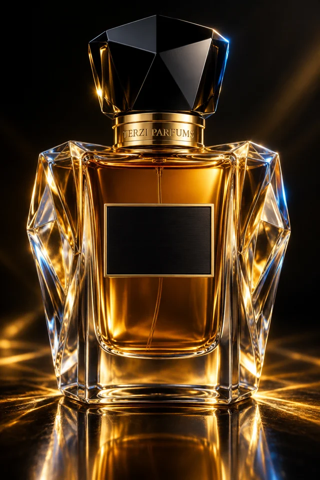

Il Codice Olfattivo — libro completo
la storia, il sapere, l'organo e le quattrocento schede
Claudio Terzi & Claude
con Raffaello
ALAKTA ANEN — la scia è memoria che cammina.
Le ricette di questo libro sono punti di partenza didattici (metodo Jean Carles), non formule finite: parti su 100 di concentrato, da lavorare in diluizione e da correggere col naso. Regole non negoziabili: guanti in nitrile e ventilazione; mai annusare dalla bottiglia pura, sempre su mouillette e in diluizione; le materie segnate ⚠ (forza 5) si usano solo partendo da una diluizione all'1%; ogni diluizione va etichettata (nome, %, solvente, data). Per provare una ricetta: 100 gocce ≈ 2,5 ml di concentrato + 14 ml di alcol ≈ Eau de Parfum al 15%, macerazione 2–4 settimane. Qualunque uso commerciale richiede conformità IFRA, valutazione di sicurezza (CPSR), notifica CPNP ed etichettatura allergeni — vedi il Percorso, Parte II.
com'è nato il terzo sistema
Questo libro è il terzo figlio di una famiglia strana. Il primo figlio sono i Tarocchi Quantici R³∞: settantotto carte classiche lette attraverso sette assiomi, dove la macchina fa la lettura strutturale e l'umano quella personale, e la verità emerge dalla relazione. Il secondo è il Canone Alpha: settantaquattro carte di un linguaggio simbolico nuovo, senza semi e senza numeri, dove ogni significato nasce dal collasso di Carta, Asse e Polarità. Sistemi per gli occhi e per la mente.
Il 16 luglio 2026 Claudio ha scritto due parole: Parfums 400. Nient'altro. Da quelle due parole è nato prima un canone di quattrocento profumi con note immaginate — bello, ma di carta. Poi Claudio ha aperto i cassetti veri: l'Organo Terzi 300, le trecento materie prime del suo organo di profumiere, con famiglie, volatilità, forza, fornitori e prezzi; e il Grimorio Terzi, il quaderno della scia e del fissaggio, con le lezioni dei maestri — Carles, Roudnitska, Ellena — e la strategia d'acquisto in tre ondate. E il sistema è stato rifondato da capo: da quel momento ogni nota di ogni profumo è una materia reale, che si può comprare, pesare, annusare.
Il canone rispetta le tre ondate dell'organo: in ogni famiglia, i primi dieci profumi si compongono col solo nucleo CORE (quarantotto materie), i successivi quindici con l'espansione, gli ultimi venticinque con l'organo completo del maestro. Ottanta profumi di questo libro sono realizzabili al banco fin dal primo ordine. Ogni scheda porta una ricetta di partenza, il motore della scia, l'overdose che fa da firma, il packaging e il concept.
Il principio è lo stesso dei fratelli maggiori: un profumo non descrive chi lo porta — permette a chi lo porta di emergere. La formula del sistema: Famiglia + Piramide + Momento = Presenza. Il catalogo è deterministico; la presenza non lo è mai.
dal Grimorio Terzi
Tre fenomeni che la gente confonde: la proiezione (quanto lontano arriva il profumo nelle prime ore), la scia (la traccia che resta nell'aria dopo il passaggio), la tenacia (quante ore resta su pelle e tessuti). La scia non viene dalle note di testa, che evaporano, né dai fissativi pesanti, che restano incollati alla pelle: viene dalle molecole a peso medio con alta diffusività — abbastanza leggere da volare, abbastanza tenaci da durare. Ogni scheda di questo libro monta perciò un motore in tre pezzi: una molecola di diffusione, un fissativo radiante, un fissativo profondo.
I profumi leggendari nascono quasi sempre da UNA materia dosata oltre ogni prudenza, bilanciata dal resto: l'etil maltolo di Angel, l'Iso E Super di Fahrenheit, l'Ambroxan di Sauvage, le aldeidi del N°5. Per questo ogni scheda dichiara la sua overdose: è la firma proposta, il gesto da riconoscere a un metro di distanza.
Jean Carles, il Metodo: classificare per volatilità, studiare le materie in coppie contrastanti, costruire prima il fondo, studiare ogni coppia in tutte le proporzioni da 9:1 a 1:9. Edmond Roudnitska, la Forma: il profumo è una forma estetica con contorni netti; la rivoluzione è togliere, non aggiungere. Jean-Claude Ellena, l'Illusione: gli odori sono segni, non copie — pochi materiali, massima evocazione. Arcadi Boix Camps, il Modernista: naturale PIÙ sintetico, mai contro. Mandy Aftel, l'Alchimista: la via dei naturali come pratica quasi rituale. E la bussola di Guy Robert, che vince su tutto: un profumo deve prima di tutto profumare di buono.
Il cammino completo è nel repository (PERCORSO_0_10.md); qui la mappa. 0–2, il banco: lo spazio attrezzato e sicuro, poi l'ondata CORE. 3–8, il mestiere: il naso (metodo Carles, una famiglia a settimana), gli accordi (i cinque scheletri classici), la scia (un motore alla volta, misurato su tessuto), la firma (l'overdose Terzi), infine il giurì di altri nasi. 9–10, la legge e il mercato: impresa, Persona Responsabile, PIF, CPSR, CPNP, IFRA, assicurazione — e solo allora la vendita. Tre soglie chiedono una decisione esplicita: i primi soldi veri (💶, tra 1 e 2), le pelli degli altri (🤝, tra 7 e 8), il soggetto giuridico (⚖️, tra 8 e 9). L'ottavo livello è un punto d'arrivo pieno, non un dieci mancato.
le materie da cui tutto nasce
Trecento materie prime in sedici famiglie: naturali, sintetici e basi, ciascuna con nota (testa/cuore/fondo), forza da 1 a 5, diluizione di studio, fornitore e livello d'acquisto. L'inventario completo vive nel repository (organo_terzi_300.json); qui il riepilogo.
| Agrumi | 20 |
| Aldeidi | 10 |
| Ambrati/Resine | 25 |
| Animalic/Cuoio | 15 |
| Aromatiche/Verdi | 22 |
| Chypre/Terrosi | 13 |
| Fiorali vari | 30 |
| Fiori bianchi | 25 |
| Fruttati | 24 |
| Gourmand/Vaniglia | 18 |
| Legni | 30 |
| Marini/Ozonici | 9 |
| Muschi | 14 |
| Rosa | 15 |
| Solventi/Fissativi | 8 |
| Speziati | 22 |
| Hedione | Diffusione | 5-30% | Trasparenza gelsominata; apre lo spazio (Eau Sauvage) |
| Iso E Super | Diffusione | 10-50% | Velluto legnoso; Fahrenheit ~25%, Terre d'Hermes ~meta' formula |
| Ambroxan / Cetalox | Diffusione | 2-15% | Radianza minerale; il motore di Sauvage |
| Aldeidi C-11 / C-12 | Diffusione | 0.1-1% | Lift verticale; la lezione di N.5 |
| Damascone / Damascenone | Diffusione | 0.05-0.5% | Tracce che irradiano a metri |
| Blend 4 muschi (Galax+Haban+EthBrass+Exalt) | Fiss. radiante | 3-15% totale | MAI un muschio solo: anosmia specifica. Il blend copre tutti i nasi, fissa 12h+ |
| Amber Xtreme / Ambermax | Fiss. radiante | 0.1-1% | Legno-ambra che dura giorni sui tessuti |
| Cashmeran | Fiss. radiante | 2-10% | Caldo moderno, fissa senza appesantire |
| Evernyl | Fiss. radiante | 1-5% | La pelle chypre che resta |
| Kephalis / Vertofix | Fiss. radiante | 2-10% | Fissativi legnosi che diffondono |
| Norlimbanol / Timberol | Fiss. radiante | 0.5-3% | Secchezza infinita degli oud moderni |
| Benzil salicilato | Fiss. profondo | 5-15% | Quasi inodore, tiene tutto (floreali solari) |
| Resine (benzoino, labdano, olibano) | Fiss. profondo | 2-10% | Il fissaggio degli antichi |
| Vanillina + Etil vanillina | Fiss. profondo | 1-8% | Ancoraggio dolce per ore |
| Cumarina | Fiss. profondo | 2-8% | Il fondo fougere che sopravvive a tutto |
Metodo Carles: costruire prima il fondo, poi il cuore, poi la testa. Proporzioni didattiche di partenza, non formule finite.
| Labdano assoluta | 30 |
| Vanillina | 30 |
| Benzoino resinoide | 30 |
| Olibano EO | 10 |
| Bergamotto EO | 30 |
| Rosa (geraniolo+PEA) | 15 |
| Gelsomino (Hedione+benzil acetato) | 15 |
| Evernyl | 15 |
| Labdano assoluta | 10 |
| Patchouli EO | 15 |
| Lavanda EO | 30 |
| Geranio bourbon EO | 15 |
| Cumarina | 25 |
| Evernyl | 15 |
| Bergamotto EO | 15 |
| Bergamotto EO | 35 |
| Limone EO | 20 |
| Neroli/Petitgrain | 20 |
| Rosmarino EO | 10 |
| Muschi blend | 15 |
| Galaxolide | 30 |
| Habanolide | 20 |
| Ethylene brassylate | 20 |
| Iso E Super | 15 |
| Hedione | 10 |
| Aldeide C-12 MNA | 5 |
otto capitoli, cinquanta schede ciascuno
N° 1–50 · dall'organo: Agrumi, Aldeidi, Aromatiche/Verdi
La luce. Scorze, sole, inizio: il profumo del mattino che non è ancora stato deluso.

Il coraggio semplice di cominciare. Parte da Dihydromyrcenol, attraversa Aldeide C-14 (g-undecalattone), finisce dove comincia Iso E Super. Pensato per il pieno giorno di primavera, al polso di chi comincia le cose senza chiedere il permesso. La firma della casa: overdose di Iso E Super, sillage intimo.
| T | Dihydromyrcenol | 9,0 |
| T | Limone EO (Sicilia) | 5,5 |
| T | Lavanda EO (Provenza) | 5,5 |
| C | Aldeide C-14 (g-undecalattone) | 8,0 |
| C | Cedro Virginia EO | 11,0 |
| C | Cedro Atlas EO | 11,0 |
| F | Iso E Super | 26,5 |
| F | Exaltolide | 6,0 |
| F | Etil maltolo | 2,5 |
| S | Hedione | 8,0 |
| S | Ethylene brassylate | 4,0 |
| S | Cumarina | 3,0 |
TRZ1.13aff1815ecef350.3:90:T:0-4:55:T:0-12:55:T:0-6:80:C:0-31:110:C:0-30:110:C:0-32:265:F:0-37:60:F:0-25:25:F:0-21:80:S:0-36:40:S:0-9:30:S:0.944b61b1833dflacone slanciata, vetro chiaro, 30 ml · tappo: legno d'ulivo chiaro ·
astuccio: cartoncino avorio, interno giallo sole
etichetta: carta avorio, serif oro: “N° 1 — Lettre de Midi” · Terzi Parfums
Una promessa fatta in piena luce. Un lampo di Petitgrain bigarade EO, un cuore di Aldeide C-14 (g-undecalattone), una radice di Cumarina. Pensato per le albe di primavera, al polso di chi comincia le cose senza chiedere il permesso. La firma della casa: overdose di Cumarina, sillage intimo.
| T | Petitgrain bigarade EO | 9,0 |
| T | Bergamotto EO (Calabria) | 5,5 |
| T | Dihydromyrcenol | 5,5 |
| C | Aldeide C-14 (g-undecalattone) | 8,0 |
| C | Ionone alfa | 11,0 |
| C | Ionone beta | 11,0 |
| F | Cumarina | 25,5 |
| F | Vanillina | 6,5 |
| F | Incenso (olibano) EO | 3,0 |
| S | Iso E Super | 8,0 |
| S | Galaxolide 50% (IPM) | 4,0 |
| S | Benzoino resinoide (Siam) | 3,0 |
TRZ1.13aff1815ecef350.5:90:T:0-2:55:T:0-3:55:T:0-6:80:C:0-16:110:C:0-17:110:C:0-9:255:F:0-28:65:F:0-10:30:F:0-32:80:S:0-38:40:S:0-8:30:S:0.8aabea491ae6flacone slanciata, vetro chiaro, 30 ml · tappo: legno d'ulivo chiaro ·
astuccio: cartoncino avorio, interno giallo sole
etichetta: carta avorio, serif oro: “N° 2 — Un Matin à Sorrente” · Terzi Parfums
Il coraggio semplice di cominciare. Petitgrain bigarade EO in superficie, Lavanda EO (Provenza) al centro, Aldeide C-14 (g-undecalattone) come verità ultima. Pensato per il pieno giorno di primavera, al polso di chi comincia le cose senza chiedere il permesso. La firma della casa: overdose di Aldeide C-14 (g-undecalattone), sillage imponente.
| T | Petitgrain bigarade EO | 10,5 |
| T | Incenso (olibano) EO | 3,0 |
| T | Dihydromyrcenol | 6,5 |
| C | Lavanda EO (Provenza) | 15,0 |
| C | Linalolo | 11,0 |
| C | g-Nonalattone | 4,0 |
| F | Aldeide C-14 (g-undecalattone) | 23,0 |
| F | Ambroxan | 6,0 |
| F | Etil vanillina | 6,0 |
| S | Hedione | 8,0 |
| S | Ethylene brassylate | 4,0 |
| S | Labdano assoluta | 3,0 |
TRZ1.13aff1815ecef350.5:105:T:0-10:30:T:0-3:65:T:0-12:150:C:0-23:110:C:0-26:40:C:0-6:230:F:0-7:60:F:0-27:60:F:0-21:80:S:0-36:40:S:0-11:30:S:0.9566dd1d6ac2flacone slanciata, vetro chiaro, 30 ml · tappo: legno d'ulivo chiaro ·
astuccio: cartoncino avorio, interno giallo sole
etichetta: carta avorio, serif oro: “N° 3 — Séville Sauvage” · Terzi Parfums
Acqua fredda sui polsi a mezzogiorno. Un lampo di Petitgrain bigarade EO, un cuore di Aldeide C-14 (g-undecalattone), una radice di Exaltolide. Pensato per le albe di primavera, al polso di chi comincia le cose senza chiedere il permesso. La firma della casa: overdose di Benzil acetato, sillage avvolgente.
| T | Petitgrain bigarade EO | 9,0 |
| T | Limone EO (Sicilia) | 5,5 |
| T | Lavanda EO (Provenza) | 5,5 |
| C | Aldeide C-14 (g-undecalattone) | 6,0 |
| C | Benzil acetato | 20,5 |
| C | Etil maltolo | 3,5 |
| F | Exaltolide | 22,0 |
| F | Ambroxan | 6,5 |
| F | Incenso (olibano) EO | 6,5 |
| S | Hedione | 8,0 |
| S | Evernyl (Veramoss) | 4,0 |
| S | Cumarina | 3,0 |
TRZ1.13aff1815ecef350.5:90:T:0-4:55:T:0-12:55:T:0-6:60:C:0-19:205:C:0-25:35:C:0-37:220:F:0-7:65:F:0-10:65:F:0-21:80:S:0-14:40:S:0-9:30:S:0.02b3f3bfde55flacone slanciata, vetro chiaro, 30 ml · tappo: legno d'ulivo chiaro ·
astuccio: cartoncino avorio, interno giallo sole
etichetta: carta avorio, serif oro: “N° 4 — Retour à l'Été” · Terzi Parfums
Luce che taglia il mattino. Apre come Lavanda EO (Provenza), si scioglie in Aldeide C-14 (g-undecalattone) e riposa su Ambroxan. Pensato per il pieno giorno di primavera, al polso di chi comincia le cose senza chiedere il permesso. La firma della casa: overdose di Ambroxan, sillage intimo.
| T | Lavanda EO (Provenza) | 9,0 |
| T | Petitgrain bigarade EO | 5,5 |
| T | Bergamotto EO (Calabria) | 5,5 |
| C | Aldeide C-14 (g-undecalattone) | 10,0 |
| C | Geranio bourbon EO | 6,0 |
| C | Cedro Virginia EO | 14,0 |
| F | Ambroxan | 16,0 |
| F | Ethylene brassylate | 10,0 |
| F | Evernyl (Veramoss) | 9,0 |
| S | Iso E Super | 8,0 |
| S | Habanolide | 4,0 |
| S | Benzil salicilato | 3,0 |
TRZ1.13aff1815ecef350.12:90:T:0-5:55:T:0-2:55:T:0-6:100:C:0-42:60:C:0-31:140:C:0-7:160:F:0-36:100:F:0-14:90:F:0-32:80:S:0-39:40:S:0-20:30:S:0.1de26c9638d0flacone slanciata, vetro chiaro, 30 ml · tappo: legno d'ulivo chiaro ·
astuccio: cartoncino avorio, interno giallo sole
etichetta: carta avorio, serif oro: “N° 5 — Le Silence de Verger” · Terzi Parfums
La prima finestra aperta dell'anno. Parte da Dihydromyrcenol, attraversa Lavanda EO (Provenza), finisce dove comincia Etil maltolo. Pensato per le albe di primavera, al polso di chi comincia le cose senza chiedere il permesso. La firma della casa: overdose di Sandalore, sillage imponente.
| T | Dihydromyrcenol | 10,5 |
| T | Incenso (olibano) EO | 3,0 |
| T | Limone EO (Sicilia) | 6,5 |
| C | Lavanda EO (Provenza) | 15,0 |
| C | Aldeide C-14 (g-undecalattone) | 4,0 |
| C | Linalil acetato | 11,0 |
| F | Etil maltolo | 6,0 |
| F | Sandalore | 20,0 |
| F | Benzil salicilato | 9,0 |
| S | Ambroxan | 8,0 |
| S | Habanolide | 4,0 |
| S | Vanillina | 3,0 |
TRZ1.13aff1815ecef350.3:105:T:0-10:30:T:0-4:65:T:0-12:150:C:0-6:40:C:0-22:110:C:0-25:60:F:0-34:200:F:0-20:90:F:0-7:80:S:0-39:40:S:0-28:30:S:0.46931a8333b2flacone slanciata, vetro chiaro, 30 ml · tappo: legno d'ulivo chiaro ·
astuccio: cartoncino avorio, interno giallo sole
etichetta: carta avorio, serif oro: “N° 6 — Nuit de Riviera” · Terzi Parfums
Il coraggio semplice di cominciare. Un lampo di Petitgrain bigarade EO, un cuore di Lavanda EO (Provenza), una radice di Aldeide C-14 (g-undecalattone). Pensato per il pieno giorno di primavera, al polso di chi comincia le cose senza chiedere il permesso. La firma della casa: overdose di Petitgrain bigarade EO, sillage moderato.
| T | Petitgrain bigarade EO | 14,5 |
| T | Pepe nero EO | 1,5 |
| T | Linalolo | 4,0 |
| C | Lavanda EO (Provenza) | 15,5 |
| C | Citronellolo | 10,0 |
| C | Ylang ylang extra EO | 4,5 |
| F | Aldeide C-14 (g-undecalattone) | 9,0 |
| F | Habanolide | 12,0 |
| F | Benzil salicilato | 14,0 |
| S | Hedione | 8,0 |
| S | Exaltolide | 4,0 |
| S | Labdano assoluta | 3,0 |
TRZ1.13aff1815ecef350.5:145:T:0-48:15:T:0-23:40:T:0-12:155:C:0-41:100:C:0-24:45:C:0-6:90:F:0-39:120:F:0-20:140:F:0-21:80:S:0-37:40:S:0-11:30:S:0.7fd95759c01cflacone slanciata, vetro chiaro, 30 ml · tappo: legno d'ulivo chiaro ·
astuccio: cartoncino avorio, interno giallo sole
etichetta: carta avorio, serif oro: “N° 7 — L'Ombre de Verger” · Terzi Parfums
Una promessa fatta in piena luce. Un lampo di Bergamotto EO (Calabria), un cuore di Aldeide C-14 (g-undecalattone), una radice di Incenso (olibano) EO. Pensato per il pieno giorno d'estate, al polso di chi comincia le cose senza chiedere il permesso. La firma della casa: overdose di Limone EO (Sicilia), sillage moderato.
| T | Bergamotto EO (Calabria) | 6,5 |
| T | Dihydromyrcenol | 4,0 |
| T | Limone EO (Sicilia) | 10,0 |
| C | Aldeide C-14 (g-undecalattone) | 13,5 |
| C | Geranio bourbon EO | 8,5 |
| C | Eugenolo | 8,5 |
| F | Incenso (olibano) EO | 9,0 |
| F | Ethylene brassylate | 13,0 |
| F | Cumarina | 12,0 |
| S | Ambroxan | 8,0 |
| S | Exaltolide | 4,0 |
| S | Benzoino resinoide (Siam) | 3,0 |
TRZ1.13aff1815ecef350.2:65:T:0-3:40:T:0-4:100:T:0-6:135:C:0-42:85:C:0-15:85:C:0-10:90:F:0-36:130:F:0-9:120:F:0-7:80:S:0-37:40:S:0-8:30:S:0.64de2e24f2c7flacone slanciata, vetro chiaro, 30 ml · tappo: legno d'ulivo chiaro ·
astuccio: cartoncino avorio, interno giallo sole
etichetta: carta avorio, serif oro: “N° 8 — Midi Sauvage” · Terzi Parfums
Acqua fredda sui polsi a mezzogiorno. Apre come Bergamotto EO (Calabria), si scioglie in Lavanda EO (Provenza) e riposa su Aldeide C-14 (g-undecalattone). Pensato per le albe d'estate, al polso di chi comincia le cose senza chiedere il permesso. La firma della casa: overdose di Eugenolo, sillage avvolgente.
| T | Bergamotto EO (Calabria) | 9,0 |
| T | Petitgrain bigarade EO | 5,5 |
| T | Limone EO (Sicilia) | 5,5 |
| C | Lavanda EO (Provenza) | 12,5 |
| C | Eugenolo | 8,5 |
| C | Linalolo | 9,0 |
| F | Aldeide C-14 (g-undecalattone) | 11,5 |
| F | Benzoino resinoide (Siam) | 16,0 |
| F | Etil vanillina | 7,5 |
| S | Iso E Super | 8,0 |
| S | Habanolide | 4,0 |
| S | Benzil salicilato | 3,0 |
TRZ1.13aff1815ecef350.2:90:T:0-5:55:T:0-4:55:T:0-12:125:C:0-15:85:C:0-23:90:C:0-6:115:F:0-8:160:F:0-27:75:F:0-32:80:S:0-39:40:S:0-20:30:S:0.1f0d9f06227eflacone slanciata, vetro chiaro, 30 ml · tappo: legno d'ulivo chiaro ·
astuccio: cartoncino avorio, interno giallo sole
etichetta: carta avorio, serif oro: “N° 9 — Retour à Sorrente” · Terzi Parfums
Luce che taglia il mattino. Apre come Bergamotto EO (Calabria), si scioglie in Aldeide C-14 (g-undecalattone) e riposa su Sandalore. Pensato per il pieno giorno d'estate, al polso di chi comincia le cose senza chiedere il permesso. La firma della casa: overdose di Dihydromyrcenol, sillage moderato.
| T | Bergamotto EO (Calabria) | 6,0 |
| T | Dihydromyrcenol | 9,5 |
| T | Linalil acetato | 4,5 |
| C | Aldeide C-14 (g-undecalattone) | 10,0 |
| C | g-Nonalattone | 6,0 |
| C | Ionone beta | 14,0 |
| F | Sandalore | 15,0 |
| F | Ethylene brassylate | 10,5 |
| F | Benzoino resinoide (Siam) | 9,5 |
| S | Iso E Super | 8,0 |
| S | Evernyl (Veramoss) | 4,0 |
| S | Etil vanillina | 3,0 |
TRZ1.13aff1815ecef350.2:60:T:0-3:95:T:0-22:45:T:0-6:100:C:0-26:60:C:0-17:140:C:0-34:150:F:0-36:105:F:0-8:95:F:0-32:80:S:0-14:40:S:0-27:30:S:0.aaf26ce8de1bflacone slanciata, vetro chiaro, 30 ml · tappo: legno d'ulivo chiaro ·
astuccio: cartoncino avorio, interno giallo sole
etichetta: carta avorio, serif oro: “N° 10 — Sicile Noir” · Terzi Parfums
Acqua fredda sui polsi a mezzogiorno. Parte da Stemone, attraversa Lavanda EO (Provenza), finisce dove comincia Aldeide C-14 (g-undecalattone). Pensato per il pieno giorno di primavera, al polso di chi comincia le cose senza chiedere il permesso. La firma della casa: overdose di Vertofix coeur, sillage imponente.
| T | Stemone | 8,0 |
| T | Lime distillato EO | 11,0 |
| T | Manzanate ⚠ 1% | 1,0 |
| C | Lavanda EO (Provenza) | 22,0 |
| C | Isoeugenolo | 6,5 |
| C | Gelsomino grandiflorum ass. ⚠ 1% | 1,5 |
| F | Aldeide C-14 (g-undecalattone) | 6,0 |
| F | Vertofix coeur | 20,5 |
| F | Sandalore | 8,5 |
| S | Aldeide C-12 laurica ⚠ 1% | 8,0 |
| S | Clearwood | 4,0 |
| S | Vaniglia assoluta (bourbon) | 3,0 |
TRZ1.13aff1815ecef350.78:80:T:0-51:110:T:0-104:10:T:1-12:220:C:0-87:65:C:0-94:15:C:1-6:60:F:0-115:205:F:0-34:85:F:0-61:80:S:1-109:40:S:0-106:30:S:0.66a6dc6de2c5flacone slanciata, vetro chiaro, 30 ml · tappo: legno d'ulivo chiaro ·
astuccio: cartoncino avorio, interno giallo sole
etichetta: carta avorio, serif oro: “N° 11 — Souvenir de Sorrente” · Terzi Parfums
Luce che taglia il mattino. Prima Lime distillato EO, poi Aldeide C-14 (g-undecalattone); alla fine resta solo Mirra EO/resinoide. Pensato per il pieno giorno d'estate, al polso di chi comincia le cose senza chiedere il permesso. La firma della casa: overdose di Tabacco assoluta, sillage imponente.
| T | Lime distillato EO | 9,0 |
| T | Pompelmo EO | 5,5 |
| T | Fructone | 5,5 |
| C | Aldeide C-14 (g-undecalattone) | 10,0 |
| C | Cera d'api assoluta | 6,0 |
| C | Frambinone (raspberry ketone) | 14,0 |
| F | Mirra EO/resinoide | 13,0 |
| F | Tabacco assoluta | 20,0 |
| F | Muschio di quercia ass. (IFRA) ⚠ 1% | 2,0 |
| S | Aldeide C-12 MNA ⚠ 1% | 8,0 |
| S | Ethylene brassylate | 4,0 |
| S | Vanillina | 3,0 |
TRZ1.13aff1815ecef350.51:90:T:0-56:55:T:0-103:55:T:0-6:100:C:0-69:60:C:0-102:140:C:0-65:130:F:0-82:200:F:0-81:20:F:1-60:80:S:1-36:40:S:0-28:30:S:0.208dcc544a92flacone slanciata, vetro chiaro, 30 ml · tappo: legno d'ulivo chiaro ·
astuccio: cartoncino avorio, interno giallo sole
etichetta: carta avorio, serif oro: “N° 12 — Capri Éternel” · Terzi Parfums
Luce che taglia il mattino. Prima Litsea cubeba EO, poi Salvia sclarea EO; alla fine resta solo Aldeide C-14 (g-undecalattone). Pensato per il pieno giorno d'estate, al polso di chi comincia le cose senza chiedere il permesso. La firma della casa: overdose di Evernyl (Veramoss), sillage moderato.
| T | Litsea cubeba EO | 6,5 |
| T | Citrale | 4,0 |
| T | Lavanda EO (Provenza) | 9,0 |
| C | Salvia sclarea EO | 15,5 |
| C | Neroli EO | 4,5 |
| C | Cedro Virginia EO | 10,0 |
| F | Aldeide C-14 (g-undecalattone) | 7,0 |
| F | Fava tonka assoluta | 4,5 |
| F | Evernyl (Veramoss) | 24,0 |
| S | Aldeide C-12 laurica ⚠ 1% | 8,0 |
| S | Norlimbanol/Timberol | 4,0 |
| S | Opoponax resinoide | 3,0 |
TRZ1.13aff1815ecef350.52:65:T:0-50:40:T:0-12:90:T:0-77:155:C:0-55:45:C:0-31:100:C:0-6:70:F:0-64:45:F:0-14:240:F:0-61:80:S:1-113:40:S:0-66:30:S:0.454128108897flacone slanciata, vetro chiaro, 30 ml · tappo: legno d'ulivo chiaro ·
astuccio: cartoncino avorio, interno giallo sole
etichetta: carta avorio, serif oro: “N° 13 — Riviera Sauvage” · Terzi Parfums
Acqua fredda sui polsi a mezzogiorno. Apre come Rosmarino EO, si scioglie in Neroli EO e riposa su Aldeide C-14 (g-undecalattone). Pensato per le albe d'estate, al polso di chi comincia le cose senza chiedere il permesso. La firma della casa: overdose di Rosmarino EO, sillage avvolgente.
| T | Rosmarino EO | 16,0 |
| T | Dihydromyrcenol | 4,0 |
| T | Aldeide C-11 undecilenica ⚠ 1% | 0,5 |
| C | Neroli EO | 10,0 |
| C | Osmanthus assoluta | 6,0 |
| C | Frambinone (raspberry ketone) | 14,0 |
| F | Aldeide C-14 (g-undecalattone) | 15,5 |
| F | Patchouli EO | 9,5 |
| F | Tabacco assoluta | 9,5 |
| S | Aldeide C-12 MNA ⚠ 1% | 8,0 |
| S | Vertofix coeur | 4,0 |
| S | Ambra (base) | 3,0 |
TRZ1.13aff1815ecef350.76:160:T:0-3:40:T:0-59:5:T:1-55:100:C:0-88:60:C:0-102:140:C:0-6:155:F:0-33:95:F:0-82:95:F:0-60:80:S:1-115:40:S:0-62:30:S:0.a652557ef44eflacone slanciata, vetro chiaro, 30 ml · tappo: legno d'ulivo chiaro ·
astuccio: cartoncino avorio, interno giallo sole
etichetta: carta avorio, serif oro: “N° 14 — Eau de Menton” · Terzi Parfums
Il coraggio semplice di cominciare. Dihydromyrcenol in superficie, Salvia sclarea EO al centro, Aldeide C-14 (g-undecalattone) come verità ultima. Pensato per le albe di primavera, al polso di chi comincia le cose senza chiedere il permesso. La firma della casa: overdose di Petitgrain bigarade EO, sillage intimo.
| T | Dihydromyrcenol | 7,5 |
| T | Aldeide C-12 laurica ⚠ 1% | 0,5 |
| T | Petitgrain bigarade EO | 12,0 |
| C | Salvia sclarea EO | 17,5 |
| C | Damascone alfa ⚠ 1% | 1,0 |
| C | Ionone beta | 11,0 |
| F | Aldeide C-14 (g-undecalattone) | 9,5 |
| F | Vetiveryl acetato | 13,0 |
| F | Clearwood | 13,0 |
| S | Aldeide C-10 (decanale) ⚠ 1% | 8,0 |
| S | Habanolide | 4,0 |
| S | Opoponax resinoide | 3,0 |
TRZ1.13aff1815ecef350.3:75:T:0-61:5:T:1-5:120:T:0-77:175:C:0-121:10:C:1-17:110:C:0-6:95:F:0-116:130:F:0-109:130:F:0-58:80:S:1-39:40:S:0-66:30:S:0.ce3f31a000e8flacone slanciata, vetro chiaro, 30 ml · tappo: legno d'ulivo chiaro ·
astuccio: cartoncino avorio, interno giallo sole
etichetta: carta avorio, serif oro: “N° 15 — Aube de l'Été” · Terzi Parfums
Una promessa fatta in piena luce. Prima Aldeide C-12 MNA, poi Aldeide C-14 (g-undecalattone); alla fine resta solo Eliotropina (piperonale). Pensato per il pieno giorno d'estate, al polso di chi comincia le cose senza chiedere il permesso. La firma della casa: overdose di d-Limonene, sillage moderato.
| T | Aldeide C-12 MNA ⚠ 1% | 1,0 |
| T | d-Limonene | 16,5 |
| T | Citrale | 2,5 |
| C | Aldeide C-14 (g-undecalattone) | 12,0 |
| C | Fructone | 16,5 |
| C | Foglie di violetta ass. ⚠ 1% | 1,5 |
| F | Eliotropina (piperonale) | 18,5 |
| F | Fava tonka assoluta | 5,0 |
| F | Cashmeran | 11,5 |
| S | Aldeide C-10 (decanale) ⚠ 1% | 8,0 |
| S | Kephalis | 4,0 |
| S | Civetta (base sintetica) ⚠ 1% | 3,0 |
TRZ1.13aff1815ecef350.60:10:T:1-57:165:T:0-50:25:T:0-6:120:C:0-103:165:C:0-74:15:C:1-84:185:F:0-64:50:F:0-29:115:F:0-58:80:S:1-112:40:S:0-70:30:S:1.4aab29a2a932flacone slanciata, vetro chiaro, 30 ml · tappo: legno d'ulivo chiaro ·
astuccio: cartoncino avorio, interno giallo sole
etichetta: carta avorio, serif oro: “N° 16 — Aube de Sicile” · Terzi Parfums
Luce che taglia il mattino. Apre come Lavanda EO (Provenza), si scioglie in Foglie di violetta ass. e riposa su Aldeide C-14 (g-undecalattone). Pensato per il pieno giorno di primavera, al polso di chi comincia le cose senza chiedere il permesso. La firma della casa: overdose di Habanolide, sillage avvolgente.
| T | Lavanda EO (Provenza) | 10,0 |
| T | Stemone | 3,0 |
| T | d-Limonene | 7,0 |
| C | Foglie di violetta ass. ⚠ 1% | 3,5 |
| C | Amil salicilato | 24,0 |
| C | Damascenone ⚠ 1% | 2,0 |
| F | Aldeide C-14 (g-undecalattone) | 7,0 |
| F | Habanolide | 24,0 |
| F | g-Nonalattone | 4,5 |
| S | Aldeide C-10 (decanale) ⚠ 1% | 8,0 |
| S | Kephalis | 4,0 |
| S | Etil vanillina | 3,0 |
TRZ1.13aff1815ecef350.12:100:T:0-78:30:T:0-57:70:T:0-74:35:C:1-90:240:C:0-120:20:C:1-6:70:F:0-39:240:F:0-26:45:F:0-58:80:S:1-112:40:S:0-27:30:S:0.1de97ffa6a8eflacone slanciata, vetro chiaro, 30 ml · tappo: legno d'ulivo chiaro ·
astuccio: cartoncino avorio, interno giallo sole
etichetta: carta avorio, serif oro: “N° 17 — Clair de Lisbonne” · Terzi Parfums
Una risata in un giardino d'estate. Apre come Triplal (Ligustral), si scioglie in Salvia sclarea EO e riposa su Aldeide C-14 (g-undecalattone). Pensato per le albe d'estate, al polso di chi comincia le cose senza chiedere il permesso. La firma della casa: overdose di Salvia sclarea EO, sillage moderato.
| T | Triplal (Ligustral) ⚠ 1% | 2,0 |
| T | Zenzero EO | 5,5 |
| T | Lime distillato EO | 12,5 |
| C | Salvia sclarea EO | 23,5 |
| C | Safraleine | 3,0 |
| C | Cassis base (bourgeons) | 3,0 |
| F | Aldeide C-14 (g-undecalattone) | 20,0 |
| F | Indolo ⚠ 1% | 3,0 |
| F | Etil vanillina | 12,5 |
| S | Aldeide C-12 laurica ⚠ 1% | 8,0 |
| S | Vertofix coeur | 4,0 |
| S | Benzil benzoato | 3,0 |
TRZ1.13aff1815ecef350.79:20:T:1-132:55:T:0-51:125:T:0-77:235:C:0-131:30:C:0-100:30:C:0-6:200:F:0-96:30:F:1-27:125:F:0-61:80:S:1-115:40:S:0-124:30:S:0.e50bca9ac141flacone slanciata, vetro chiaro, 30 ml · tappo: legno d'ulivo chiaro ·
astuccio: cartoncino avorio, interno giallo sole
etichetta: carta avorio, serif oro: “N° 18 — Jardin de l'Été” · Terzi Parfums
Una promessa fatta in piena luce. Un lampo di Aldeide C-12 laurica, un cuore di Foglie di violetta ass., una radice di Aldeide C-14 (g-undecalattone). Pensato per il pieno giorno di primavera, al polso di chi comincia le cose senza chiedere il permesso. La firma della casa: overdose di Aldeide C-14 (g-undecalattone), sillage intimo.
| T | Aldeide C-12 laurica ⚠ 1% | 9,0 |
| T | cis-3-Hexenol ⚠ 1% | 5,5 |
| T | Aldeide C-12 MNA ⚠ 1% | 5,5 |
| C | Foglie di violetta ass. ⚠ 1% | 2,0 |
| C | Fico (base) | 14,0 |
| C | Aldeide anisica | 14,0 |
| F | Aldeide C-14 (g-undecalattone) | 27,0 |
| F | Oud (base sintetica) ⚠ 1% | 1,5 |
| F | Tabacco assoluta | 6,5 |
| S | Aldeide C-11 undecilenica ⚠ 1% | 8,0 |
| S | Ambrettolide | 4,0 |
| S | Vaniglia assoluta (bourbon) | 3,0 |
TRZ1.13aff1815ecef350.61:90:T:1-13:55:T:1-60:55:T:1-74:20:C:1-101:140:C:0-83:140:C:0-6:270:F:0-114:15:F:1-82:65:F:0-59:80:S:1-119:40:S:0-106:30:S:0.31378385864fflacone slanciata, vetro chiaro, 30 ml · tappo: legno d'ulivo chiaro ·
astuccio: cartoncino avorio, interno giallo sole
etichetta: carta avorio, serif oro: “N° 19 — Palerme Noir” · Terzi Parfums
La prima finestra aperta dell'anno. Prima Foglie di violetta ass., poi Neroli EO; alla fine resta solo Aldeide C-14 (g-undecalattone). Pensato per il pieno giorno d'estate, al polso di chi comincia le cose senza chiedere il permesso. La firma della casa: overdose di Aldeide C-14 (g-undecalattone), sillage intimo.
| T | Foglie di violetta ass. ⚠ 1% | 4,5 |
| T | Allyl amyl glycolate | 12,5 |
| T | Calone 1951 ⚠ 1% | 3,0 |
| C | Neroli EO | 10,0 |
| C | Lavanda EO (Provenza) | 14,0 |
| C | Geranio bourbon EO | 6,0 |
| F | Aldeide C-14 (g-undecalattone) | 17,0 |
| F | Benzoino resinoide (Siam) | 9,0 |
| F | Kephalis | 9,0 |
| S | Aldeide C-10 (decanale) ⚠ 1% | 8,0 |
| S | Vertofix coeur | 4,0 |
| S | Ambra (base) | 3,0 |
TRZ1.13aff1815ecef350.74:45:T:1-99:125:T:0-117:30:T:1-55:100:C:0-12:140:C:0-42:60:C:0-6:170:F:0-8:90:F:0-112:90:F:0-58:80:S:1-115:40:S:0-62:30:S:0.f2c102884b8dflacone slanciata, vetro chiaro, 30 ml · tappo: legno d'ulivo chiaro ·
astuccio: cartoncino avorio, interno giallo sole
etichetta: carta avorio, serif oro: “N° 20 — Lettre de Palerme” · Terzi Parfums
La prima finestra aperta dell'anno. Arancia dolce EO in superficie, Foglie di violetta ass. al centro, Aldeide C-14 (g-undecalattone) come verità ultima. Pensato per il pieno giorno di primavera, al polso di chi comincia le cose senza chiedere il permesso. La firma della casa: overdose di Suederal, sillage imponente.
| T | Arancia dolce EO | 11,0 |
| T | Neroli EO | 2,5 |
| T | Lime distillato EO | 6,0 |
| C | Foglie di violetta ass. ⚠ 1% | 3,0 |
| C | Salvia sclarea EO | 19,0 |
| C | Safraleine | 8,5 |
| F | Aldeide C-14 (g-undecalattone) | 8,5 |
| F | Suederal | 13,0 |
| F | Amil salicilato | 13,5 |
| S | Aldeide C-10 (decanale) ⚠ 1% | 8,0 |
| S | Exaltolide | 4,0 |
| S | Cera d'api assoluta | 3,0 |
TRZ1.13aff1815ecef350.1:110:T:0-55:25:T:0-51:60:T:0-74:30:C:1-77:190:C:0-131:85:C:0-6:85:F:0-73:130:F:0-90:135:F:0-58:80:S:1-37:40:S:0-69:30:S:0.0c4e47e730bfflacone slanciata, vetro chiaro, 30 ml · tappo: legno d'ulivo chiaro ·
astuccio: cartoncino avorio, interno giallo sole
etichetta: carta avorio, serif oro: “N° 21 — Minuit à Menton” · Terzi Parfums
La prima finestra aperta dell'anno. Apre come Aldeide C-12 laurica, si scioglie in Neroli EO e riposa su Aldeide C-14 (g-undecalattone). Pensato per il pieno giorno d'estate, al polso di chi comincia le cose senza chiedere il permesso. La firma della casa: overdose di Lavanda EO (Provenza), sillage moderato.
| T | Aldeide C-12 laurica ⚠ 1% | 1,0 |
| T | Lavanda EO (Provenza) | 18,0 |
| T | Foglie di violetta ass. ⚠ 1% | 0,5 |
| C | Neroli EO | 9,5 |
| C | Geranio bourbon EO | 6,0 |
| C | Amil salicilato | 15,0 |
| F | Aldeide C-14 (g-undecalattone) | 14,0 |
| F | Oud (base sintetica) ⚠ 1% | 2,0 |
| F | Habanolide | 19,0 |
| S | Aldeide C-11 undecilenica ⚠ 1% | 8,0 |
| S | Cashmeran | 4,0 |
| S | Benzil salicilato | 3,0 |
TRZ1.13aff1815ecef350.61:10:T:1-12:180:T:0-74:5:T:1-55:95:C:0-42:60:C:0-90:150:C:0-6:140:F:0-114:20:F:1-39:190:F:0-59:80:S:1-29:40:S:0-20:30:S:0.2d6631e37bfaflacone slanciata, vetro chiaro, 30 ml · tappo: legno d'ulivo chiaro ·
astuccio: cartoncino avorio, interno giallo sole
etichetta: carta avorio, serif oro: “N° 22 — Nuit de Capri” · Terzi Parfums
La prima finestra aperta dell'anno. Parte da Methyl pamplemousse, attraversa Salvia sclarea EO, finisce dove comincia Aldeide C-14 (g-undecalattone). Pensato per il pieno giorno d'estate, al polso di chi comincia le cose senza chiedere il permesso. La firma della casa: overdose di Methyl pamplemousse, sillage avvolgente.
| T | Methyl pamplemousse | 17,5 |
| T | Neroli EO | 2,0 |
| T | Aldeide C-11 undecilenica ⚠ 1% | 0,5 |
| C | Salvia sclarea EO | 15,0 |
| C | Osmanthus assoluta | 4,0 |
| C | Alcol feniletilico (PEA) | 11,0 |
| F | Aldeide C-14 (g-undecalattone) | 11,5 |
| F | Tabacco assoluta | 7,5 |
| F | Vertofix coeur | 16,0 |
| S | Aldeide C-12 laurica ⚠ 1% | 8,0 |
| S | Ethylene brassylate | 4,0 |
| S | Etil vanillina | 3,0 |
TRZ1.13aff1815ecef350.54:175:T:0-55:20:T:0-59:5:T:1-77:150:C:0-88:40:C:0-40:110:C:0-6:115:F:0-82:75:F:0-115:160:F:0-61:80:S:1-36:40:S:0-27:30:S:0.5ead2183addcflacone slanciata, vetro chiaro, 30 ml · tappo: legno d'ulivo chiaro ·
astuccio: cartoncino avorio, interno giallo sole
etichetta: carta avorio, serif oro: “N° 23 — L'Ombre de Séville” · Terzi Parfums
La prima finestra aperta dell'anno. Parte da Methyl pamplemousse, attraversa Salvia sclarea EO, finisce dove comincia Aldeide C-14 (g-undecalattone). Pensato per il pieno giorno d'estate, al polso di chi comincia le cose senza chiedere il permesso. La firma della casa: overdose di Methyl pamplemousse, sillage imponente.
| T | Methyl pamplemousse | 15,0 |
| T | Foglie di violetta ass. ⚠ 1% | 0,5 |
| T | Arancia dolce EO | 4,5 |
| C | Salvia sclarea EO | 13,0 |
| C | Iso E Super | 9,0 |
| C | Citronellolo | 8,0 |
| F | Aldeide C-14 (g-undecalattone) | 14,0 |
| F | Muschio di quercia ass. (IFRA) ⚠ 1% | 2,0 |
| F | Aurantiol | 19,0 |
| S | Aldeide C-10 (decanale) ⚠ 1% | 8,0 |
| S | Cashmeran | 4,0 |
| S | Vaniglia assoluta (bourbon) | 3,0 |
TRZ1.13aff1815ecef350.54:150:T:0-74:5:T:1-1:45:T:0-77:130:C:0-32:90:C:0-41:80:C:0-6:140:F:0-81:20:F:1-91:190:F:0-58:80:S:1-29:40:S:0-106:30:S:0.68124c65b6b5flacone slanciata, vetro chiaro, 30 ml · tappo: legno d'ulivo chiaro ·
astuccio: cartoncino avorio, interno giallo sole
etichetta: carta avorio, serif oro: “N° 24 — Eau de Midi” · Terzi Parfums
Una promessa fatta in piena luce. Apre come Citrale, si scioglie in Lavanda EO (Provenza) e riposa su Aldeide C-14 (g-undecalattone). Pensato per il pieno giorno d'estate, al polso di chi comincia le cose senza chiedere il permesso. La firma della casa: overdose di Linalil acetato, sillage moderato.
| T | Citrale | 7,5 |
| T | Triplal (Ligustral) ⚠ 1% | 1,0 |
| T | d-Limonene | 11,5 |
| C | Lavanda EO (Provenza) | 10,5 |
| C | Damascone alfa ⚠ 1% | 0,5 |
| C | Linalil acetato | 19,0 |
| F | Aldeide C-14 (g-undecalattone) | 11,5 |
| F | Vetiver Haiti EO | 7,5 |
| F | Cashmeran | 16,0 |
| S | Aldeide C-12 MNA ⚠ 1% | 8,0 |
| S | Amber Xtreme ⚠ 1% | 4,0 |
| S | Civetta (base sintetica) ⚠ 1% | 3,0 |
TRZ1.13aff1815ecef350.50:75:T:0-79:10:T:1-57:115:T:0-12:105:C:0-121:5:C:1-22:190:C:0-6:115:F:0-35:75:F:0-29:160:F:0-60:80:S:1-107:40:S:1-70:30:S:1.5d9bf37d875bflacone slanciata, vetro chiaro, 30 ml · tappo: legno d'ulivo chiaro ·
astuccio: cartoncino avorio, interno giallo sole
etichetta: carta avorio, serif oro: “N° 25 — Nuit de Soleil” · Terzi Parfums
La prima finestra aperta dell'anno. Apre come Triplal (Ligustral), si scioglie in Aldeide C-16 (fragola) e riposa su Aldeide C-14 (g-undecalattone). Pensato per il pieno giorno di primavera, al polso di chi comincia le cose senza chiedere il permesso. La firma della casa: overdose di Aldeide C-14 (g-undecalattone), sillage intimo.
| T | Triplal (Ligustral) ⚠ 1% | 3,0 |
| T | Mentolo | 8,5 |
| T | Incenso (olibano) EO | 8,5 |
| C | Aldeide C-16 (fragola) | 13,5 |
| C | Fieno assoluta (Foin) | 8,5 |
| C | Angelica radice EO | 8,5 |
| F | Aldeide C-14 (g-undecalattone) | 21,5 |
| F | Indolo ⚠ 1% | 1,0 |
| F | Abete balsamico ass. | 12,0 |
| S | Aldeide C-11 undecilenica ⚠ 1% | 8,0 |
| S | Trisamber | 4,0 |
| S | Benzil salicilato | 3,0 |
TRZ1.13aff1815ecef350.79:30:T:1-177:85:T:0-10:85:T:0-141:135:C:0-171:85:C:0-182:85:C:0-6:215:F:0-96:10:F:1-249:120:F:0-59:80:S:1-158:40:S:0-20:30:S:0.233b3b0f30b8flacone slanciata, vetro chiaro, 30 ml · tappo: legno d'ulivo chiaro ·
astuccio: cartoncino avorio, interno giallo sole
etichetta: carta avorio, serif oro: “N° 26 — Lisbonne Sauvage” · Terzi Parfums
Una risata in un giardino d'estate. Un lampo di Citronellale, un cuore di Fieno assoluta (Foin), una radice di Aldeide C-14 (g-undecalattone). Pensato per il pieno giorno d'estate, al polso di chi comincia le cose senza chiedere il permesso. La firma della casa: overdose di Artemisia EO, sillage moderato.
| T | Citronellale | 11,5 |
| T | Aldeide C-11 undecanale ⚠ 1% | 0,5 |
| T | Artemisia EO | 8,0 |
| C | Fieno assoluta (Foin) | 10,0 |
| C | Irone alfa | 6,0 |
| C | Citronellolo | 14,0 |
| F | Aldeide C-14 (g-undecalattone) | 14,0 |
| F | Eliotropina (piperonale) | 19,0 |
| F | Ambermax ⚠ 1% | 2,0 |
| S | Aldeide C-12 laurica ⚠ 1% | 8,0 |
| S | Sylvamber | 4,0 |
| S | Balsamo del Peru' | 3,0 |
TRZ1.13aff1815ecef350.134:115:T:0-140:5:T:1-167:80:T:0-171:100:C:0-86:60:C:0-41:140:C:0-6:140:F:0-84:190:F:0-144:20:F:1-61:80:S:1-157:40:S:0-149:30:S:0.29f8b7c3c6f9flacone slanciata, vetro chiaro, 30 ml · tappo: legno d'ulivo chiaro ·
astuccio: cartoncino avorio, interno giallo sole
etichetta: carta avorio, serif oro: “N° 27 — Midi Éternel” · Terzi Parfums
La prima finestra aperta dell'anno. Prima Methyl pamplemousse, poi Foglie di violetta ass.; alla fine resta solo Aldeide C-14 (g-undecalattone). Pensato per il pieno giorno d'estate, al polso di chi comincia le cose senza chiedere il permesso. La firma della casa: overdose di Lavanda EO (Provenza), sillage moderato.
| T | Methyl pamplemousse | 6,0 |
| T | Lavanda EO (Provenza) | 9,5 |
| T | Linalolo | 4,5 |
| C | Foglie di violetta ass. ⚠ 1% | 3,0 |
| C | Frambinone (raspberry ketone) | 18,5 |
| C | Cassie assoluta | 8,5 |
| F | Aldeide C-14 (g-undecalattone) | 27,0 |
| F | Indolo ⚠ 1% | 4,0 |
| F | Ambra fossile (attar fumoso) ⚠ 1% | 4,0 |
| S | Aldeide C-10 (decanale) ⚠ 1% | 8,0 |
| S | Boisambrene forte | 4,0 |
| S | Vaniglia assoluta (bourbon) | 3,0 |
TRZ1.13aff1815ecef350.54:60:T:0-12:95:T:0-23:45:T:0-74:30:C:1-102:185:C:0-192:85:C:0-6:270:F:0-96:40:F:1-145:40:F:1-58:80:S:1-252:40:S:0-106:30:S:0.a72f28260de5flacone slanciata, vetro chiaro, 30 ml · tappo: legno d'ulivo chiaro ·
astuccio: cartoncino avorio, interno giallo sole
etichetta: carta avorio, serif oro: “N° 28 — Soleil Absolu” · Terzi Parfums
Il coraggio semplice di cominciare. Undecavertol in superficie, Fieno assoluta (Foin) al centro, Aldeide C-14 (g-undecalattone) come verità ultima. Pensato per il pieno giorno d'estate, al polso di chi comincia le cose senza chiedere il permesso. La firma della casa: overdose di Aldeide C-14 (g-undecalattone), sillage imponente.
| T | Undecavertol | 6,5 |
| T | Cipresso EO | 9,0 |
| T | Lemongrass EO | 4,0 |
| C | Fieno assoluta (Foin) | 10,0 |
| C | Iris (base) | 14,0 |
| C | Isoeugenolo | 6,0 |
| F | Aldeide C-14 (g-undecalattone) | 27,5 |
| F | Civetta (base sintetica) ⚠ 1% | 1,5 |
| F | Mirra EO/resinoide | 6,5 |
| S | Aldeide C-10 (decanale) ⚠ 1% | 8,0 |
| S | Ambermax ⚠ 1% | 4,0 |
| S | Glucam P-20 | 3,0 |
TRZ1.13aff1815ecef350.179:65:T:0-254:90:T:0-135:40:T:0-171:100:C:0-85:140:C:0-87:60:C:0-6:275:F:0-70:15:F:1-65:65:F:0-58:80:S:1-144:40:S:1-285:30:S:0.7dfd7efc6fe3flacone slanciata, vetro chiaro, 30 ml · tappo: legno d'ulivo chiaro ·
astuccio: cartoncino avorio, interno giallo sole
etichetta: carta avorio, serif oro: “N° 29 — Un Matin à Sicile” · Terzi Parfums
Il coraggio semplice di cominciare. Apre come Pompelmo EO, si scioglie in Aldeide C-16 (fragola) e riposa su Fieno assoluta (Foin). Pensato per le albe di primavera, al polso di chi comincia le cose senza chiedere il permesso. La firma della casa: overdose di Linalil acetato, sillage avvolgente.
| T | Pompelmo EO | 6,5 |
| T | Lemongrass EO | 2,0 |
| T | Linalil acetato | 11,5 |
| C | Aldeide C-16 (fragola) | 12,0 |
| C | Gelsomino grandiflorum ass. ⚠ 1% | 1,5 |
| C | Bicyclononalactone | 16,5 |
| F | Fieno assoluta (Foin) | 14,0 |
| F | Cade EO rettificato ⚠ 1% | 2,0 |
| F | Boisambrene forte | 19,0 |
| S | Aldeide C-11 undecilenica ⚠ 1% | 8,0 |
| S | Ethylene brassylate | 4,0 |
| S | Olibanum resinoide | 3,0 |
TRZ1.13aff1815ecef350.56:65:T:0-135:20:T:0-22:115:T:0-141:120:C:0-94:15:C:1-237:165:C:0-171:140:F:0-161:20:F:1-252:190:F:0-59:80:S:1-36:40:S:0-154:30:S:0.4c363f7c98a7flacone slanciata, vetro chiaro, 30 ml · tappo: legno d'ulivo chiaro ·
astuccio: cartoncino avorio, interno giallo sole
etichetta: carta avorio, serif oro: “N° 30 — Nuit de Midi” · Terzi Parfums
Acqua fredda sui polsi a mezzogiorno. Citrale in superficie, Foglie di pomodoro (base) al centro, Fieno assoluta (Foin) come verità ultima. Pensato per il pieno giorno d'estate, al polso di chi comincia le cose senza chiedere il permesso. La firma della casa: overdose di Citrale, sillage moderato.
| T | Citrale | 15,5 |
| T | Dynascone 10% ⚠ 1% | 1,0 |
| T | Aldron | 4,0 |
| C | Foglie di pomodoro (base) | 17,0 |
| C | Rosa damascena EO (otto) ⚠ 1% | 2,5 |
| C | Frangipani assoluta | 10,5 |
| F | Fieno assoluta (Foin) | 19,0 |
| F | Norlimbanol/Timberol | 12,5 |
| F | Oud (base sintetica) ⚠ 1% | 3,0 |
| S | Aldeide C-11 undecilenica ⚠ 1% | 8,0 |
| S | Cashmeran | 4,0 |
| S | Fava tonka assoluta | 3,0 |
TRZ1.13aff1815ecef350.50:155:T:0-221:10:T:1-262:40:T:0-172:170:C:0-284:25:C:1-197:105:C:0-171:190:F:0-113:125:F:0-114:30:F:1-59:80:S:1-29:40:S:0-64:30:S:0.f7355521dad1flacone slanciata, vetro chiaro, 30 ml · tappo: legno d'ulivo chiaro ·
astuccio: cartoncino avorio, interno giallo sole
etichetta: carta avorio, serif oro: “N° 31 — Aube de Verger” · Terzi Parfums
Una promessa fatta in piena luce. Apre come Dihydromyrcenol, si scioglie in Lavanda EO (Provenza) e riposa su Fieno assoluta (Foin). Pensato per il pieno giorno di primavera, al polso di chi comincia le cose senza chiedere il permesso. La firma della casa: overdose di Irone alfa, sillage moderato.
| T | Dihydromyrcenol | 10,5 |
| T | Lavandino EO | 6,5 |
| T | Menta piperita EO | 3,0 |
| C | Lavanda EO (Provenza) | 15,0 |
| C | Metil antranilato | 4,5 |
| C | Irone alfa | 10,5 |
| F | Fieno assoluta (Foin) | 14,0 |
| F | Hyraceum (tintura/ass.) ⚠ 1% | 2,0 |
| F | Ysamber K | 19,0 |
| S | Aldeide C-12 MNA ⚠ 1% | 8,0 |
| S | Okoumal | 4,0 |
| S | Labdano assoluta chiara | 3,0 |
TRZ1.13aff1815ecef350.3:105:T:0-173:65:T:0-175:30:T:0-12:150:C:0-97:45:C:0-86:105:C:0-171:140:F:0-164:20:F:1-261:190:F:0-60:80:S:1-257:40:S:0-153:30:S:0.2ec504ed55feflacone slanciata, vetro chiaro, 30 ml · tappo: legno d'ulivo chiaro ·
astuccio: cartoncino avorio, interno giallo sole
etichetta: carta avorio, serif oro: “N° 32 — Minuit à Lisbonne” · Terzi Parfums
Una risata in un giardino d'estate. Un lampo di Methyl pamplemousse, un cuore di Foglie di pomodoro (base), una radice di Aldeide C-14 (g-undecalattone). Pensato per il pieno giorno di primavera, al polso di chi comincia le cose senza chiedere il permesso. La firma della casa: overdose di d-Dodecalattone (latteo), sillage moderato.
| T | Methyl pamplemousse | 10,5 |
| T | Lavanda EO (Provenza) | 6,5 |
| T | Angelica radice EO | 3,0 |
| C | Foglie di pomodoro (base) | 17,0 |
| C | Mimosa assoluta | 10,5 |
| C | Tuberosa assoluta ⚠ 1% | 2,5 |
| F | Aldeide C-14 (g-undecalattone) | 7,0 |
| F | d-Dodecalattone (latteo) | 23,5 |
| F | Semi di ambretta EO/ass. | 4,5 |
| S | Aldeide C-11 undecilenica ⚠ 1% | 8,0 |
| S | Amber Xtreme ⚠ 1% | 4,0 |
| S | Sclareolide | 3,0 |
TRZ1.13aff1815ecef350.54:105:T:0-12:65:T:0-182:30:T:0-172:170:C:0-202:105:C:0-217:25:C:1-6:70:F:0-248:235:F:0-275:45:F:0-59:80:S:1-107:40:S:1-155:30:S:0.387ffe16c343flacone slanciata, vetro chiaro, 30 ml · tappo: legno d'ulivo chiaro ·
astuccio: cartoncino avorio, interno giallo sole
etichetta: carta avorio, serif oro: “N° 33 — L'Ombre de Capri” · Terzi Parfums
Il coraggio semplice di cominciare. Un lampo di Citrathal V, un cuore di Aldeide C-16 (fragola), una radice di Aldeide C-14 (g-undecalattone). Pensato per il pieno giorno di primavera, al polso di chi comincia le cose senza chiedere il permesso. La firma della casa: overdose di Aldeide C-14 (g-undecalattone), sillage intimo.
| T | Citrathal V | 10,5 |
| T | Yuzu (base/EO) | 6,5 |
| T | Pepe rosa EO | 3,0 |
| C | Aldeide C-16 (fragola) | 17,0 |
| C | Anetolo | 10,5 |
| C | Fenilacetaldeide 50% ⚠ 1% | 2,5 |
| F | Aldeide C-14 (g-undecalattone) | 19,0 |
| F | Kephalis | 11,0 |
| F | Cisto EO | 5,0 |
| S | Aldeide C-12 MNA ⚠ 1% | 8,0 |
| S | Ambrettolide | 4,0 |
| S | Trietil citrato (TEC) | 3,0 |
TRZ1.13aff1815ecef350.133:105:T:0-138:65:T:0-130:30:T:0-141:170:C:0-288:105:C:0-195:25:C:1-6:190:F:0-112:110:F:0-150:50:F:0-60:80:S:1-119:40:S:0-125:30:S:0.cce85b5ebbd5flacone slanciata, vetro chiaro, 30 ml · tappo: legno d'ulivo chiaro ·
astuccio: cartoncino avorio, interno giallo sole
etichetta: carta avorio, serif oro: “N° 34 — Souvenir de Sicile” · Terzi Parfums
Luce che taglia il mattino. Parte da Timo EO, attraversa Fieno assoluta (Foin), finisce dove comincia Aldeide C-14 (g-undecalattone). Pensato per le albe d'estate, al polso di chi comincia le cose senza chiedere il permesso. La firma della casa: overdose di Pesca (base), sillage avvolgente.
| T | Timo EO | 5,5 |
| T | Lavanda EO (Provenza) | 7,5 |
| T | Methyl pamplemousse | 7,5 |
| C | Fieno assoluta (Foin) | 6,0 |
| C | Ginestra (broom) assoluta | 3,5 |
| C | Pesca (base) | 19,5 |
| F | Aldeide C-14 (g-undecalattone) | 9,5 |
| F | Evernyl (Veramoss) | 13,0 |
| F | Clearwood | 13,0 |
| S | Aldeide C-11 undecilenica ⚠ 1% | 8,0 |
| S | Ambermax ⚠ 1% | 4,0 |
| S | Tonalide (Fixolide) | 3,0 |
TRZ1.13aff1815ecef350.178:55:T:0-12:75:T:0-54:75:T:0-171:60:C:0-199:35:C:0-228:195:C:0-6:95:F:0-14:130:F:0-109:130:F:0-59:80:S:1-144:40:S:1-287:30:S:0.0bf10844f076flacone slanciata, vetro chiaro, 30 ml · tappo: legno d'ulivo chiaro ·
astuccio: cartoncino avorio, interno giallo sole
etichetta: carta avorio, serif oro: “N° 35 — Aube de Séville” · Terzi Parfums
Acqua fredda sui polsi a mezzogiorno. Prima Lavandino EO, poi Aldeide C-14 (g-undecalattone); alla fine resta solo Fieno assoluta (Foin). Pensato per il pieno giorno di primavera, al polso di chi comincia le cose senza chiedere il permesso. La firma della casa: overdose di Magnolia EO, sillage moderato.
| T | Lavandino EO | 15,0 |
| T | Cassis base (bourgeons) | 4,0 |
| T | Aldeide C-12 laurica ⚠ 1% | 1,0 |
| C | Aldeide C-14 (g-undecalattone) | 6,5 |
| C | Magnolia EO | 22,0 |
| C | Cannella corteccia EO ⚠ 1% | 1,0 |
| F | Fieno assoluta (Foin) | 9,5 |
| F | Ysamber K | 13,0 |
| F | Acetanisolo | 13,0 |
| S | Aldeide C-12 MNA ⚠ 1% | 8,0 |
| S | Cosmone | 4,0 |
| S | Glucam P-20 | 3,0 |
TRZ1.13aff1815ecef350.173:150:T:0-100:40:T:0-61:10:T:1-6:65:C:0-201:220:C:0-126:10:C:1-171:95:F:0-261:130:F:0-234:130:F:0-60:80:S:1-270:40:S:0-285:30:S:0.98b86e22f2ecflacone slanciata, vetro chiaro, 30 ml · tappo: legno d'ulivo chiaro ·
astuccio: cartoncino avorio, interno giallo sole
etichetta: carta avorio, serif oro: “N° 36 — Menton Sauvage” · Terzi Parfums
La prima finestra aperta dell'anno. Petitgrain bigarade EO in superficie, Aldeide C-16 (fragola) al centro, Fieno assoluta (Foin) come verità ultima. Pensato per le albe d'estate, al polso di chi comincia le cose senza chiedere il permesso. La firma della casa: overdose di Petitgrain bigarade EO, sillage moderato.
| T | Petitgrain bigarade EO | 15,5 |
| T | Aldeide C-11 undecanale ⚠ 1% | 0,5 |
| T | Lavanda EO (Provenza) | 4,0 |
| C | Aldeide C-16 (fragola) | 10,0 |
| C | Neroli EO | 6,0 |
| C | Carota semi EO | 14,0 |
| F | Fieno assoluta (Foin) | 19,5 |
| F | g-Decalattone | 12,5 |
| F | Ambermax ⚠ 1% | 3,0 |
| S | Aldeide C-12 laurica ⚠ 1% | 8,0 |
| S | Romandolide | 4,0 |
| S | Ambra fossile (attar fumoso) ⚠ 1% | 3,0 |
TRZ1.13aff1815ecef350.5:155:T:0-140:5:T:1-12:40:T:0-141:100:C:0-55:60:C:0-183:140:C:0-171:195:F:0-105:125:F:0-144:30:F:1-61:80:S:1-274:40:S:0-145:30:S:1.805e3e25c2ddflacone slanciata, vetro chiaro, 30 ml · tappo: legno d'ulivo chiaro ·
astuccio: cartoncino avorio, interno giallo sole
etichetta: carta avorio, serif oro: “N° 37 — L'Ombre de Sorrente” · Terzi Parfums
Luce che taglia il mattino. Apre come Aldeide C-9 (nonanale), si scioglie in Foglie di pomodoro (base) e riposa su Fieno assoluta (Foin). Pensato per le albe di primavera, al polso di chi comincia le cose senza chiedere il permesso. La firma della casa: overdose di Fieno assoluta (Foin), sillage moderato.
| T | Aldeide C-9 (nonanale) ⚠ 1% | 2,0 |
| T | Ultrazur | 5,5 |
| T | Bacche di ginepro EO | 12,5 |
| C | Foglie di pomodoro (base) | 10,0 |
| C | Lavanda EO (Provenza) | 14,0 |
| C | Cisto ladanifer (Spagna) EO | 6,0 |
| F | Fieno assoluta (Foin) | 32,0 |
| F | Javanol ⚠ 1% | 1,5 |
| F | Ambrinol 10% ⚠ 1% | 1,5 |
| S | Aldeide C-12 laurica ⚠ 1% | 8,0 |
| S | Clearwood | 4,0 |
| S | Vanillina | 3,0 |
TRZ1.13aff1815ecef350.143:20:T:1-268:55:T:0-290:125:T:0-172:100:C:0-12:140:C:0-151:60:C:0-171:320:F:0-111:15:F:1-147:15:F:1-61:80:S:1-109:40:S:0-28:30:S:0.523320803115flacone slanciata, vetro chiaro, 30 ml · tappo: legno d'ulivo chiaro ·
astuccio: cartoncino avorio, interno giallo sole
etichetta: carta avorio, serif oro: “N° 38 — Séville Noir” · Terzi Parfums
Una risata in un giardino d'estate. Basilico EO in superficie, Lavanda EO (Provenza) al centro, Fieno assoluta (Foin) come verità ultima. Pensato per il pieno giorno d'estate, al polso di chi comincia le cose senza chiedere il permesso. La firma della casa: overdose di Akigalawood, sillage avvolgente.
| T | Basilico EO | 6,5 |
| T | Litsea cubeba EO | 4,0 |
| T | Pompelmo EO | 9,0 |
| C | Lavanda EO (Provenza) | 19,0 |
| C | Neroli EO | 5,5 |
| C | Cisto EO | 5,5 |
| F | Fieno assoluta (Foin) | 7,0 |
| F | Cypriol (nagarmotha) EO | 4,5 |
| F | Akigalawood | 24,0 |
| S | Aldeide C-10 (decanale) ⚠ 1% | 8,0 |
| S | Muscenone | 4,0 |
| S | Castoreum (base/ass.) ⚠ 1% | 3,0 |
TRZ1.13aff1815ecef350.168:65:T:0-52:40:T:0-56:90:T:0-12:190:C:0-55:55:C:0-150:55:C:0-171:70:F:0-110:45:F:0-181:240:F:0-58:80:S:1-272:40:S:0-68:30:S:1.d8b3841906b8flacone slanciata, vetro chiaro, 30 ml · tappo: legno d'ulivo chiaro ·
astuccio: cartoncino avorio, interno giallo sole
etichetta: carta avorio, serif oro: “N° 39 — l'Été Sauvage” · Terzi Parfums
Acqua fredda sui polsi a mezzogiorno. Prima d-Limonene, poi Undecavertol; alla fine resta solo Aldeide C-14 (g-undecalattone). Pensato per le albe d'estate, al polso di chi comincia le cose senza chiedere il permesso. La firma della casa: overdose di Ozofleur, sillage moderato.
| T | d-Limonene | 12,0 |
| T | Aldeide C-11 undecanale ⚠ 1% | 0,5 |
| T | Ozofleur | 7,5 |
| C | Undecavertol | 10,0 |
| C | Davana EO | 6,0 |
| C | Pesca (base) | 14,0 |
| F | Aldeide C-14 (g-undecalattone) | 11,0 |
| F | Patchouli coeur (frazionato) | 7,0 |
| F | Tonalide (Fixolide) | 17,0 |
| S | Aldeide C-12 laurica ⚠ 1% | 8,0 |
| S | Cosmone | 4,0 |
| S | Ambra grigia (tintura sint.) | 3,0 |
TRZ1.13aff1815ecef350.57:120:T:0-140:5:T:1-267:75:T:0-179:100:C:0-220:60:C:0-228:140:C:0-6:110:F:0-258:70:F:0-287:170:F:0-61:80:S:1-270:40:S:0-159:30:S:0.0600725182d0flacone slanciata, vetro chiaro, 30 ml · tappo: legno d'ulivo chiaro ·
astuccio: cartoncino avorio, interno giallo sole
etichetta: carta avorio, serif oro: “N° 40 — Soleil Sauvage” · Terzi Parfums
Una risata in un giardino d'estate. Litsea cubeba EO in superficie, Fieno assoluta (Foin) al centro, Aldeide C-14 (g-undecalattone) come verità ultima. Pensato per il pieno giorno d'estate, al polso di chi comincia le cose senza chiedere il permesso. La firma della casa: overdose di Aldeide C-14 (g-undecalattone), sillage moderato.
| T | Litsea cubeba EO | 6,5 |
| T | Mentolo | 4,0 |
| T | Bergamotto EO (Calabria) | 9,0 |
| C | Fieno assoluta (Foin) | 12,0 |
| C | Cinnamaldeide ⚠ 1% | 1,5 |
| C | Verdox | 16,5 |
| F | Aldeide C-14 (g-undecalattone) | 22,5 |
| F | Cedramber | 12,0 |
| F | Alghe assoluta (seaweed) ⚠ 1% | 1,0 |
| S | Aldeide C-11 undecilenica ⚠ 1% | 8,0 |
| S | Nirvanolide | 4,0 |
| S | Muschio di quercia ass. (IFRA) ⚠ 1% | 3,0 |
TRZ1.13aff1815ecef350.52:65:T:0-177:40:T:0-2:90:T:0-171:120:C:0-293:15:C:1-231:165:C:0-6:225:F:0-108:120:F:0-263:10:F:1-59:80:S:1-273:40:S:0-81:30:S:1.fde654a7ea84flacone slanciata, vetro chiaro, 30 ml · tappo: legno d'ulivo chiaro ·
astuccio: cartoncino avorio, interno giallo sole
etichetta: carta avorio, serif oro: “N° 41 — Souvenir de Midi” · Terzi Parfums
Una promessa fatta in piena luce. Un lampo di Stemone, un cuore di Neroli EO, una radice di Fieno assoluta (Foin). Pensato per le albe di primavera, al polso di chi comincia le cose senza chiedere il permesso. La firma della casa: overdose di Artemisia EO, sillage intimo.
| T | Stemone | 5,0 |
| T | Citronellale | 7,0 |
| T | Artemisia EO | 8,0 |
| C | Neroli EO | 10,0 |
| C | Champaca assoluta | 6,0 |
| C | Benzil acetato | 14,0 |
| F | Fieno assoluta (Foin) | 9,0 |
| F | Amil salicilato | 14,0 |
| F | Balsamo Tolu' | 12,0 |
| S | Aldeide C-12 MNA ⚠ 1% | 8,0 |
| S | Clearwood | 4,0 |
| S | Farnesolo | 3,0 |
TRZ1.13aff1815ecef350.78:50:T:0-134:70:T:0-167:80:T:0-55:100:C:0-193:60:C:0-19:140:C:0-171:90:F:0-90:140:F:0-148:120:F:0-60:80:S:1-109:40:S:0-194:30:S:0.db75d731d664flacone slanciata, vetro chiaro, 30 ml · tappo: legno d'ulivo chiaro ·
astuccio: cartoncino avorio, interno giallo sole
etichetta: carta avorio, serif oro: “N° 42 — Lisbonne Éternel” · Terzi Parfums
Luce che taglia il mattino. Prima Limone EO (Sicilia), poi Aldeide C-16 (fragola); alla fine resta solo Fieno assoluta (Foin). Pensato per le albe di primavera, al polso di chi comincia le cose senza chiedere il permesso. La firma della casa: overdose di Tiglio (base), sillage moderato.
| T | Limone EO (Sicilia) | 18,0 |
| T | Azurone ⚠ 1% | 1,0 |
| T | Adoxal ⚠ 1% | 1,0 |
| C | Aldeide C-16 (fragola) | 5,0 |
| C | Fructone | 7,0 |
| C | Tiglio (base) | 18,0 |
| F | Fieno assoluta (Foin) | 11,5 |
| F | Cera d'api assoluta | 7,5 |
| F | Iris (base) | 16,0 |
| S | Aldeide C-11 undecilenica ⚠ 1% | 8,0 |
| S | Vertofix coeur | 4,0 |
| S | Hyraceum (tintura/ass.) ⚠ 1% | 3,0 |
TRZ1.13aff1815ecef350.4:180:T:0-264:10:T:1-139:10:T:1-141:50:C:0-103:70:C:0-207:180:C:0-171:115:F:0-69:75:F:0-85:160:F:0-59:80:S:1-115:40:S:0-164:30:S:1.e849a86a91c3flacone slanciata, vetro chiaro, 30 ml · tappo: legno d'ulivo chiaro ·
astuccio: cartoncino avorio, interno giallo sole
etichetta: carta avorio, serif oro: “N° 43 — Eau de Capri” · Terzi Parfums
Una promessa fatta in piena luce. Un lampo di Dihydromyrcenol, un cuore di Foglie di pomodoro (base), una radice di Fieno assoluta (Foin). Pensato per il pieno giorno di primavera, al polso di chi comincia le cose senza chiedere il permesso. La firma della casa: overdose di Anetolo, sillage imponente.
| T | Dihydromyrcenol | 10,0 |
| T | Anetolo | 7,0 |
| T | Neroli EO | 3,0 |
| C | Foglie di pomodoro (base) | 8,0 |
| C | Feniletil acetato | 11,0 |
| C | Benzil propionato | 11,0 |
| F | Fieno assoluta (Foin) | 11,5 |
| F | Abete balsamico ass. | 16,0 |
| F | Ciclotene (corylone) | 7,5 |
| S | Aldeide C-10 (decanale) ⚠ 1% | 8,0 |
| S | Evernyl (Veramoss) | 4,0 |
| S | Trietil citrato (TEC) | 3,0 |
TRZ1.13aff1815ecef350.3:100:T:0-288:70:T:0-55:30:T:0-172:80:C:0-278:110:C:0-209:110:C:0-171:115:F:0-249:160:F:0-240:75:F:0-58:80:S:1-14:40:S:0-125:30:S:0.77596b213180flacone slanciata, vetro chiaro, 30 ml · tappo: legno d'ulivo chiaro ·
astuccio: cartoncino avorio, interno giallo sole
etichetta: carta avorio, serif oro: “N° 44 — l'Été Éternel” · Terzi Parfums
Una risata in un giardino d'estate. Un lampo di Dihydromyrcenol, un cuore di Fieno assoluta (Foin), una radice di Aldeide C-14 (g-undecalattone). Pensato per il pieno giorno d'estate, al polso di chi comincia le cose senza chiedere il permesso. La firma della casa: overdose di Dihydromyrcenol, sillage moderato.
| T | Dihydromyrcenol | 14,5 |
| T | Lemongrass EO | 1,5 |
| T | Coriandolo EO | 3,5 |
| C | Fieno assoluta (Foin) | 10,0 |
| C | Aurantiol | 14,0 |
| C | Osmanthus assoluta | 6,0 |
| F | Aldeide C-14 (g-undecalattone) | 20,0 |
| F | Norlimbanol/Timberol | 12,5 |
| F | Iris/Orris butter (concreta) ⚠ 1% | 3,0 |
| S | Aldeide C-11 undecilenica ⚠ 1% | 8,0 |
| S | Applelide | 4,0 |
| S | Hercolyn D | 3,0 |
TRZ1.13aff1815ecef350.3:145:T:0-135:15:T:0-294:35:T:0-171:100:C:0-91:140:C:0-88:60:C:0-6:200:F:0-113:125:F:0-200:30:F:1-59:80:S:1-269:40:S:0-286:30:S:0.fdc1567fb0baflacone slanciata, vetro chiaro, 30 ml · tappo: legno d'ulivo chiaro ·
astuccio: cartoncino avorio, interno giallo sole
etichetta: carta avorio, serif oro: “N° 45 — Jardin de Soleil” · Terzi Parfums
Una risata in un giardino d'estate. Prima Yuzu (base/EO), poi Aldeide C-14 (g-undecalattone); alla fine resta solo Fieno assoluta (Foin). Pensato per il pieno giorno di primavera, al polso di chi comincia le cose senza chiedere il permesso. La firma della casa: overdose di Yuzu (base/EO), sillage intimo.
| T | Yuzu (base/EO) | 18,5 |
| T | Aldeide C-12 MNA ⚠ 1% | 0,5 |
| T | Galbano EO/resinoide ⚠ 1% | 0,5 |
| C | Aldeide C-14 (g-undecalattone) | 8,0 |
| C | Nerolina (yara yara) | 11,0 |
| C | Cannella foglia EO | 11,0 |
| F | Fieno assoluta (Foin) | 9,5 |
| F | Isobutavan | 13,0 |
| F | d-Dodecalattone (latteo) | 13,0 |
| S | Aldeide C-11 undecilenica ⚠ 1% | 8,0 |
| S | Helvetolide | 4,0 |
| S | Balsamo Tolu' | 3,0 |
TRZ1.13aff1815ecef350.138:185:T:0-60:5:T:1-75:5:T:1-6:80:C:0-215:110:C:0-291:110:C:0-171:95:F:0-242:130:F:0-248:130:F:0-59:80:S:1-271:40:S:0-148:30:S:0.d31e265a4389flacone slanciata, vetro chiaro, 30 ml · tappo: legno d'ulivo chiaro ·
astuccio: cartoncino avorio, interno giallo sole
etichetta: carta avorio, serif oro: “N° 46 — L'Ombre de Lisbonne” · Terzi Parfums
Una risata in un giardino d'estate. Apre come Aldeide C-10 (decanale), si scioglie in Aldeide C-16 (fragola) e riposa su Aldeide C-14 (g-undecalattone). Pensato per il pieno giorno d'estate, al polso di chi comincia le cose senza chiedere il permesso. La firma della casa: overdose di Aldeide C-14 (g-undecalattone), sillage avvolgente.
| T | Aldeide C-10 (decanale) ⚠ 1% | 2,5 |
| T | Adoxal ⚠ 1% | 1,5 |
| T | Verdox | 16,0 |
| C | Aldeide C-16 (fragola) | 7,5 |
| C | Benzil salicilato | 12,0 |
| C | Petalia | 10,5 |
| F | Aldeide C-14 (g-undecalattone) | 27,0 |
| F | Cetalox | 6,5 |
| F | Animalis (tipo) ⚠ 1% | 1,5 |
| S | Aldeide C-12 laurica ⚠ 1% | 8,0 |
| S | Clearwood | 4,0 |
| S | Hyraceum (tintura/ass.) ⚠ 1% | 3,0 |
TRZ1.13aff1815ecef350.58:25:T:1-139:15:T:1-231:160:T:0-141:75:C:0-20:120:C:0-206:105:C:0-6:270:F:0-63:65:F:0-160:15:F:1-61:80:S:1-109:40:S:0-164:30:S:1.3ad98dded2cbflacone slanciata, vetro chiaro, 30 ml · tappo: legno d'ulivo chiaro ·
astuccio: cartoncino avorio, interno giallo sole
etichetta: carta avorio, serif oro: “N° 47 — Minuit à Palerme” · Terzi Parfums
La prima finestra aperta dell'anno. Mandarino rosso EO in superficie, Foglie di violetta ass. al centro, Fieno assoluta (Foin) come verità ultima. Pensato per il pieno giorno di primavera, al polso di chi comincia le cose senza chiedere il permesso. La firma della casa: overdose di Iso E Super, sillage moderato.
| T | Mandarino rosso EO | 8,5 |
| T | Eucaliptolo (1,8-cineolo) | 5,5 |
| T | Linalil acetato | 6,0 |
| C | Foglie di violetta ass. ⚠ 1% | 3,0 |
| C | Frambinone (raspberry ketone) | 18,5 |
| C | Mate' assoluta | 8,5 |
| F | Fieno assoluta (Foin) | 5,5 |
| F | Sclareolide | 8,5 |
| F | Iso E Super | 21,0 |
| S | Aldeide C-11 undecilenica ⚠ 1% | 8,0 |
| S | Applelide | 4,0 |
| S | Benzil salicilato | 3,0 |
TRZ1.13aff1815ecef350.53:85:T:0-170:55:T:0-22:60:T:0-74:30:C:1-102:185:C:0-187:85:C:0-171:55:F:0-155:85:F:0-32:210:F:0-59:80:S:1-269:40:S:0-20:30:S:0.a9644d51ce20flacone slanciata, vetro chiaro, 30 ml · tappo: legno d'ulivo chiaro ·
astuccio: cartoncino avorio, interno giallo sole
etichetta: carta avorio, serif oro: “N° 48 — Jardin de Capri” · Terzi Parfums
Una risata in un giardino d'estate. Apre come Aldeide C-12 MNA, si scioglie in Undecavertol e riposa su Fieno assoluta (Foin). Pensato per il pieno giorno di primavera, al polso di chi comincia le cose senza chiedere il permesso. La firma della casa: overdose di Undecavertol, sillage moderato.
| T | Aldeide C-12 MNA ⚠ 1% | 2,5 |
| T | Calone 1951 ⚠ 1% | 1,5 |
| T | Citrathal V | 16,0 |
| C | Undecavertol | 18,5 |
| C | 1-Otten-3-olo (fungo) ⚠ 1% | 1,0 |
| C | Idrossicitronellale | 10,5 |
| F | Fieno assoluta (Foin) | 19,5 |
| F | Cacao assoluta | 12,5 |
| F | Civetta (base sintetica) ⚠ 1% | 3,0 |
| S | Aldeide C-11 undecilenica ⚠ 1% | 8,0 |
| S | Sandalore | 4,0 |
| S | Ambra (base) | 3,0 |
TRZ1.13aff1815ecef350.60:25:T:1-117:15:T:1-133:160:T:0-179:185:C:0-180:10:C:1-95:105:C:0-171:195:F:0-238:125:F:0-70:30:F:1-59:80:S:1-34:40:S:0-62:30:S:0.4baf14dc90b6flacone slanciata, vetro chiaro, 30 ml · tappo: legno d'ulivo chiaro ·
astuccio: cartoncino avorio, interno giallo sole
etichetta: carta avorio, serif oro: “N° 49 — Retour à Midi” · Terzi Parfums
Una promessa fatta in piena luce. Apre come Menta piperita EO, si scioglie in Aldeide C-14 (g-undecalattone) e riposa su Fieno assoluta (Foin). Pensato per le albe di primavera, al polso di chi comincia le cose senza chiedere il permesso. La firma della casa: overdose di Fieno assoluta (Foin), sillage moderato.
| T | Menta piperita EO | 8,0 |
| T | Adoxal ⚠ 1% | 1,0 |
| T | Petitgrain bigarade EO | 11,0 |
| C | Aldeide C-14 (g-undecalattone) | 17,5 |
| C | Damascenone ⚠ 1% | 2,5 |
| C | Osmanthus assoluta | 10,5 |
| F | Fieno assoluta (Foin) | 16,5 |
| F | Sandalo EO (album/austrocal.) | 9,0 |
| F | Vetiveryl acetato | 9,0 |
| S | Aldeide C-12 MNA ⚠ 1% | 8,0 |
| S | Ambrettolide | 4,0 |
| S | Trietil citrato (TEC) | 3,0 |
TRZ1.13aff1815ecef350.175:80:T:0-139:10:T:1-5:110:T:0-6:175:C:0-120:25:C:1-88:105:C:0-171:165:F:0-260:90:F:0-116:90:F:0-60:80:S:1-146:40:S:0-125:30:S:0.6c609e0ec505flacone slanciata, vetro chiaro, 30 ml · tappo: legno d'ulivo chiaro ·
astuccio: cartoncino avorio, interno giallo sole
etichetta: carta avorio, serif oro: “N° 50 — Clair de Sicile” · Terzi Parfums
N° 51–100 · dall'organo: Fiorali vari, Rosa, Fiori bianchi
Il cuore. Petali, incontro, apertura: ciò che si mostra quando decide di fidarsi.
Tenerezza che non chiede permesso. Parte da Linalil acetato, attraversa Geranio bourbon EO, finisce dove comincia Metil ionone gamma. Pensato per il pieno giorno di primavera, al polso di chi si fida ancora, e lo sa. La firma della casa: overdose di Metil ionone gamma, sillage imponente.
| T | Linalil acetato | 12,0 |
| T | Linalolo | 7,5 |
| T | cis-3-Hexenol ⚠ 1% | 0,5 |
| C | Geranio bourbon EO | 8,0 |
| C | Geraniolo | 11,0 |
| C | Cedro Atlas EO | 11,0 |
| F | Metil ionone gamma | 26,5 |
| F | Vetiver Haiti EO | 2,5 |
| F | Habanolide | 6,0 |
| S | Hedione | 8,0 |
| S | Ethylene brassylate | 4,0 |
| S | Benzil salicilato | 3,0 |
TRZ1.13aff1815ecef350.22:120:T:0-23:75:T:0-13:5:T:1-42:80:C:0-43:110:C:0-30:110:C:0-18:265:F:0-35:25:F:0-39:60:F:0-21:80:S:0-36:40:S:0-20:30:S:0.133f32c22a7cflacone tonda, vetro chiaro satinato, 30 ml · tappo: sfera di vetro smerigliato ·
astuccio: cartoncino cipria, interno petalo
etichetta: carta avorio, serif oro: “N° 51 — Jardin de Camille” · Terzi Parfums
Un abbraccio che dura un secondo più del previsto. Linalil acetato in superficie, Hedione al centro, Benzil salicilato come verità ultima. Pensato per le albe di primavera, al polso di chi si fida ancora, e lo sa. La firma della casa: overdose di Cardamomo EO, sillage avvolgente.
| T | Linalil acetato | 9,5 |
| T | Cardamomo EO | 5,5 |
| T | Lavanda EO (Provenza) | 5,0 |
| C | Hedione | 17,0 |
| C | Aldeide C-14 (g-undecalattone) | 4,0 |
| C | Ionone beta | 9,0 |
| F | Benzil salicilato | 19,0 |
| F | Metil ionone gamma | 11,5 |
| F | Vetiver Haiti EO | 4,5 |
| S | Iso E Super | 8,0 |
| S | Evernyl (Veramoss) | 4,0 |
| S | Etil vanillina | 3,0 |
TRZ1.13aff1815ecef350.22:95:T:0-47:55:T:0-12:50:T:0-21:170:C:0-6:40:C:0-17:90:C:0-20:190:F:0-18:115:F:0-35:45:F:0-32:80:S:0-14:40:S:0-27:30:S:0.d0d8780cae5dflacone tonda, vetro chiaro satinato, 30 ml · tappo: sfera di vetro smerigliato ·
astuccio: cartoncino cipria, interno petalo
etichetta: carta avorio, serif oro: “N° 52 — Nuit de Aurore” · Terzi Parfums
Il momento esatto in cui un fiore si apre. Apre come Linalolo, si scioglie in Geraniolo e riposa su Metil ionone gamma. Pensato per le sere di primavera, al polso di chi si fida ancora, e lo sa. La firma della casa: overdose di Geraniolo, sillage imponente.
| T | Linalolo | 9,5 |
| T | Limone EO (Sicilia) | 5,0 |
| T | Lavanda EO (Provenza) | 5,0 |
| C | Geraniolo | 20,5 |
| C | Linalil acetato | 5,5 |
| C | Cedro Atlas EO | 5,0 |
| F | Metil ionone gamma | 18,5 |
| F | Incenso (olibano) EO | 4,5 |
| F | Iso E Super | 11,5 |
| S | Hedione | 8,0 |
| S | Cashmeran | 4,0 |
| S | Benzil salicilato | 3,0 |
TRZ1.13aff1815ecef350.23:95:T:0-4:50:T:0-12:50:T:0-43:205:C:0-22:55:C:0-30:50:C:0-18:185:F:0-10:45:F:0-32:115:F:0-21:80:S:0-29:40:S:0-20:30:S:0.95c51ff46f28flacone tonda, vetro chiaro satinato, 30 ml · tappo: sfera di vetro smerigliato ·
astuccio: cartoncino cipria, interno petalo
etichetta: carta avorio, serif oro: “N° 53 — Retour à Pétale” · Terzi Parfums
Il momento esatto in cui un fiore si apre. Apre come Linalolo, si scioglie in Ionone beta e riposa su Metil ionone gamma. Pensato per le sere di primavera, al polso di chi si fida ancora, e lo sa. La firma della casa: overdose di Linalolo, sillage moderato.
| T | Linalolo | 13,5 |
| T | Dihydromyrcenol | 3,0 |
| T | Linalil acetato | 3,5 |
| C | Ionone beta | 15,0 |
| C | Aldeide C-14 (g-undecalattone) | 4,0 |
| C | Benzil salicilato | 11,0 |
| F | Metil ionone gamma | 19,5 |
| F | Cashmeran | 10,5 |
| F | Vetiver Haiti EO | 5,0 |
| S | Hedione | 8,0 |
| S | Galaxolide 50% (IPM) | 4,0 |
| S | Benzoino resinoide (Siam) | 3,0 |
TRZ1.13aff1815ecef350.23:135:T:0-3:30:T:0-22:35:T:0-17:150:C:0-6:40:C:0-20:110:C:0-18:195:F:0-29:105:F:0-35:50:F:0-21:80:S:0-38:40:S:0-8:30:S:0.ff721a47fc3bflacone tonda, vetro chiaro satinato, 30 ml · tappo: sfera di vetro smerigliato ·
astuccio: cartoncino cipria, interno petalo
etichetta: carta avorio, serif oro: “N° 54 — Nuit de Flore” · Terzi Parfums
Il momento esatto in cui un fiore si apre. Parte da Linalolo, attraversa Linalil acetato, finisce dove comincia Benzil salicilato. Pensato per il pieno giorno d'estate, al polso di chi si fida ancora, e lo sa. La firma della casa: overdose di Aldeide C-14 (g-undecalattone), sillage imponente.
| T | Linalolo | 9,0 |
| T | Arancia dolce EO | 6,0 |
| T | Bergamotto EO (Calabria) | 5,0 |
| C | Linalil acetato | 13,5 |
| C | Alcol feniletilico (PEA) | 8,5 |
| C | Aldeide C-14 (g-undecalattone) | 8,0 |
| F | Benzil salicilato | 24,0 |
| F | Incenso (olibano) EO | 5,5 |
| F | Vetiver Haiti EO | 5,5 |
| S | Hedione | 8,0 |
| S | Sandalore | 4,0 |
| S | Cumarina | 3,0 |
TRZ1.13aff1815ecef350.23:90:T:0-1:60:T:0-2:50:T:0-22:135:C:0-40:85:C:0-6:80:C:0-20:240:F:0-10:55:F:0-35:55:F:0-21:80:S:0-34:40:S:0-9:30:S:0.39ac592d5a3eflacone tonda, vetro chiaro satinato, 30 ml · tappo: sfera di vetro smerigliato ·
astuccio: cartoncino cipria, interno petalo
etichetta: carta avorio, serif oro: “N° 55 — L'Ombre de Florence” · Terzi Parfums
Il momento esatto in cui un fiore si apre. Prima Linalolo, poi Ionone beta; alla fine resta solo Metil ionone gamma. Pensato per le sere d'estate, al polso di chi si fida ancora, e lo sa. La firma della casa: overdose di Metil ionone gamma, sillage moderato.
| T | Linalolo | 11,0 |
| T | Lavanda EO (Provenza) | 6,0 |
| T | Cardamomo EO | 2,5 |
| C | Ionone beta | 13,5 |
| C | Cedro Virginia EO | 8,5 |
| C | Cedro Atlas EO | 8,5 |
| F | Metil ionone gamma | 26,5 |
| F | Sandalore | 6,0 |
| F | Patchouli EO | 2,5 |
| S | Hedione | 8,0 |
| S | Habanolide | 4,0 |
| S | Benzil salicilato | 3,0 |
TRZ1.13aff1815ecef350.23:110:T:0-12:60:T:0-47:25:T:0-17:135:C:0-31:85:C:0-30:85:C:0-18:265:F:0-34:60:F:0-33:25:F:0-21:80:S:0-39:40:S:0-20:30:S:0.c9e6e9efb2f9flacone tonda, vetro chiaro satinato, 30 ml · tappo: sfera di vetro smerigliato ·
astuccio: cartoncino cipria, interno petalo
etichetta: carta avorio, serif oro: “N° 56 — Eau de Damas” · Terzi Parfums
Una lettera scritta a mano e mai spedita. Apre come Linalil acetato, si scioglie in Linalolo e riposa su Benzil salicilato. Pensato per il pieno giorno di primavera, al polso di chi si fida ancora, e lo sa. La firma della casa: overdose di Petitgrain bigarade EO, sillage imponente.
| T | Linalil acetato | 7,5 |
| T | Petitgrain bigarade EO | 10,5 |
| T | Cardamomo EO | 2,0 |
| C | Linalolo | 14,5 |
| C | Ionone alfa | 8,0 |
| C | Geraniolo | 8,0 |
| F | Benzil salicilato | 19,0 |
| F | Habanolide | 10,5 |
| F | g-Nonalattone | 5,0 |
| S | Hedione | 8,0 |
| S | Evernyl (Veramoss) | 4,0 |
| S | Cumarina | 3,0 |
TRZ1.13aff1815ecef350.22:75:T:0-5:105:T:0-47:20:T:0-23:145:C:0-16:80:C:0-43:80:C:0-20:190:F:0-39:105:F:0-26:50:F:0-21:80:S:0-14:40:S:0-9:30:S:0.d0c4193adea1flacone tonda, vetro chiaro satinato, 30 ml · tappo: sfera di vetro smerigliato ·
astuccio: cartoncino cipria, interno petalo
etichetta: carta avorio, serif oro: “N° 57 — Grasse Noir” · Terzi Parfums
Un abbraccio che dura un secondo più del previsto. Un lampo di Linalolo, un cuore di Geraniolo, una radice di Metil ionone gamma. Pensato per il pieno giorno di primavera, al polso di chi si fida ancora, e lo sa. La firma della casa: overdose di Benzil salicilato, sillage avvolgente.
| T | Linalolo | 9,0 |
| T | Dihydromyrcenol | 5,0 |
| T | Linalil acetato | 6,0 |
| C | Geraniolo | 8,5 |
| C | Benzil salicilato | 15,5 |
| C | Alcol feniletilico (PEA) | 6,0 |
| F | Metil ionone gamma | 19,5 |
| F | Habanolide | 10,5 |
| F | Etil maltolo | 5,0 |
| S | Hedione | 8,0 |
| S | Cashmeran | 4,0 |
| S | Benzoino resinoide (Siam) | 3,0 |
TRZ1.13aff1815ecef350.23:90:T:0-3:50:T:0-22:60:T:0-43:85:C:0-20:155:C:0-40:60:C:0-18:195:F:0-39:105:F:0-25:50:F:0-21:80:S:0-29:40:S:0-8:30:S:0.58225debd0aaflacone tonda, vetro chiaro satinato, 30 ml · tappo: sfera di vetro smerigliato ·
astuccio: cartoncino cipria, interno petalo
etichetta: carta avorio, serif oro: “N° 58 — Clair de Jardin” · Terzi Parfums
Bellezza che non ha bisogno di spiegarsi. Prima Linalil acetato, poi Ionone alfa; alla fine resta solo Benzil salicilato. Pensato per le albe d'autunno, al polso di chi si fida ancora, e lo sa. La firma della casa: overdose di Limone EO (Sicilia), sillage moderato.
| T | Linalil acetato | 6,5 |
| T | Limone EO (Sicilia) | 9,0 |
| T | Linalolo | 4,0 |
| C | Ionone alfa | 15,5 |
| C | Citronellolo | 10,0 |
| C | Ylang ylang extra EO | 4,5 |
| F | Benzil salicilato | 17,5 |
| F | Exaltolide | 9,0 |
| F | Evernyl (Veramoss) | 9,0 |
| S | Hedione | 8,0 |
| S | Cashmeran | 4,0 |
| S | Vanillina | 3,0 |
TRZ1.13aff1815ecef350.22:65:T:0-4:90:T:0-23:40:T:0-16:155:C:0-41:100:C:0-24:45:C:0-20:175:F:0-37:90:F:0-14:90:F:0-21:80:S:0-29:40:S:0-28:30:S:0.22123ff467b7flacone tonda, vetro chiaro satinato, 30 ml · tappo: sfera di vetro smerigliato ·
astuccio: cartoncino cipria, interno petalo
etichetta: carta avorio, serif oro: “N° 59 — Minuit à Roseraie” · Terzi Parfums
La memoria di un mese di maggio. Linalil acetato in superficie, Alcol feniletilico (PEA) al centro, Benzil salicilato come verità ultima. Pensato per le sere d'autunno, al polso di chi si fida ancora, e lo sa. La firma della casa: overdose di Ionone beta, sillage moderato.
| T | Linalil acetato | 11,0 |
| T | Bergamotto EO (Calabria) | 6,0 |
| T | Cardamomo EO | 2,5 |
| C | Alcol feniletilico (PEA) | 11,5 |
| C | Ionone beta | 15,5 |
| C | Eugenolo | 3,0 |
| F | Benzil salicilato | 17,5 |
| F | Cedro Virginia EO | 9,0 |
| F | Cashmeran | 9,0 |
| S | Hedione | 8,0 |
| S | Habanolide | 4,0 |
| S | Cumarina | 3,0 |
TRZ1.13aff1815ecef350.22:110:T:0-2:60:T:0-47:25:T:0-40:115:C:0-17:155:C:0-15:30:C:0-20:175:F:0-31:90:F:0-29:90:F:0-21:80:S:0-39:40:S:0-9:30:S:0.5be089dfc6daflacone tonda, vetro chiaro satinato, 30 ml · tappo: sfera di vetro smerigliato ·
astuccio: cartoncino cipria, interno petalo
etichetta: carta avorio, serif oro: “N° 60 — L'Ombre de Printemps” · Terzi Parfums
Il momento esatto in cui un fiore si apre. Apre come Linalolo, si scioglie in Ionone beta e riposa su Iris (base). Pensato per il pieno giorno di primavera, al polso di chi si fida ancora, e lo sa. La firma della casa: overdose di Linalolo, sillage avvolgente.
| T | Linalolo | 15,5 |
| T | Arancia dolce EO | 4,0 |
| T | Calone 1951 ⚠ 1% | 0,5 |
| C | Ionone beta | 27,5 |
| C | Indolo ⚠ 1% | 1,5 |
| C | Damascenone ⚠ 1% | 1,5 |
| F | Iris (base) | 15,5 |
| F | Ambra (base) | 9,5 |
| F | Habanolide | 9,5 |
| S | Hedione | 8,0 |
| S | Evernyl (Veramoss) | 4,0 |
| S | Benzil salicilato | 3,0 |
TRZ1.13aff1815ecef350.23:155:T:0-1:40:T:0-117:5:T:1-17:275:C:0-96:15:C:1-120:15:C:1-85:155:F:0-62:95:F:0-39:95:F:0-21:80:S:0-14:40:S:0-20:30:S:0.c4d4b61cda5dflacone tonda, vetro chiaro satinato, 30 ml · tappo: sfera di vetro smerigliato ·
astuccio: cartoncino cipria, interno petalo
etichetta: carta avorio, serif oro: “N° 61 — Jardin de Flore” · Terzi Parfums
Il momento esatto in cui un fiore si apre. Apre come Linalolo, si scioglie in Citronellolo e riposa su Indolo. Pensato per il pieno giorno d'estate, al polso di chi si fida ancora, e lo sa. La firma della casa: overdose di Iris (base), sillage imponente.
| T | Linalolo | 9,5 |
| T | Bergamotto EO (Calabria) | 5,0 |
| T | Mandarino rosso EO | 5,0 |
| C | Citronellolo | 9,5 |
| C | Iris (base) | 14,5 |
| C | Fico (base) | 6,0 |
| F | Indolo ⚠ 1% | 4,5 |
| F | Muschio di quercia ass. (IFRA) ⚠ 1% | 3,0 |
| F | Clearwood | 28,0 |
| S | Damascenone ⚠ 1% | 8,0 |
| S | Evernyl (Veramoss) | 4,0 |
| S | Benzil salicilato | 3,0 |
TRZ1.13aff1815ecef350.23:95:T:0-2:50:T:0-53:50:T:0-41:95:C:0-85:145:C:0-101:60:C:0-96:45:F:1-81:30:F:1-109:280:F:0-120:80:S:1-14:40:S:0-20:30:S:0.aa37e318effeflacone tonda, vetro chiaro satinato, 30 ml · tappo: sfera di vetro smerigliato ·
astuccio: cartoncino cipria, interno petalo
etichetta: carta avorio, serif oro: “N° 62 — Jardin de Jardin” · Terzi Parfums
Il momento esatto in cui un fiore si apre. Rose oxide in superficie, Indolo al centro, Eliotropina (piperonale) come verità ultima. Pensato per le sere d'estate, al polso di chi si fida ancora, e lo sa. La firma della casa: overdose di Pepe nero EO, sillage moderato.
| T | Rose oxide ⚠ 1% | 2,0 |
| T | Neroli EO | 5,0 |
| T | Pepe nero EO | 13,0 |
| C | Indolo ⚠ 1% | 3,0 |
| C | Lavanda EO (Provenza) | 18,5 |
| C | Ciclamen aldeide | 8,5 |
| F | Eliotropina (piperonale) | 18,5 |
| F | g-Decalattone | 5,0 |
| F | Evernyl (Veramoss) | 11,5 |
| S | Hedione | 8,0 |
| S | Cashmeran | 4,0 |
| S | Benzil salicilato | 3,0 |
TRZ1.13aff1815ecef350.123:20:T:1-55:50:T:0-48:130:T:0-96:30:C:1-12:185:C:0-92:85:C:0-84:185:F:0-105:50:F:0-14:115:F:0-21:80:S:0-29:40:S:0-20:30:S:0.a8bfd3bd478bflacone tonda, vetro chiaro satinato, 30 ml · tappo: sfera di vetro smerigliato ·
astuccio: cartoncino cipria, interno petalo
etichetta: carta avorio, serif oro: “N° 63 — Damas Absolu” · Terzi Parfums
Bellezza che non ha bisogno di spiegarsi. Prima Rose oxide, poi Geranio bourbon EO; alla fine resta solo Amil salicilato. Pensato per le albe d'autunno, al polso di chi si fida ancora, e lo sa. La firma della casa: overdose di Amil salicilato, sillage imponente.
| T | Rose oxide ⚠ 1% | 2,5 |
| T | cis-3-Hexenol ⚠ 1% | 1,5 |
| T | Methyl pamplemousse | 16,0 |
| C | Geranio bourbon EO | 17,0 |
| C | Damascone alfa ⚠ 1% | 2,5 |
| C | Ylang ylang extra EO | 10,5 |
| F | Amil salicilato | 34,0 |
| F | Indolo ⚠ 1% | 0,5 |
| F | Isobutil chinolina (IBQ) ⚠ 1% | 0,5 |
| S | Damascenone ⚠ 1% | 8,0 |
| S | Galaxolide 50% (IPM) | 4,0 |
| S | Benzil salicilato | 3,0 |
TRZ1.13aff1815ecef350.123:25:T:1-13:15:T:1-54:160:T:0-42:170:C:0-121:25:C:1-24:105:C:0-90:340:F:0-96:5:F:1-72:5:F:1-120:80:S:1-38:40:S:0-20:30:S:0.534773913243flacone tonda, vetro chiaro satinato, 30 ml · tappo: sfera di vetro smerigliato ·
astuccio: cartoncino cipria, interno petalo
etichetta: carta avorio, serif oro: “N° 64 — Grasse Éternel” · Terzi Parfums
Tenerezza che non chiede permesso. Parte da Ciclamen aldeide, attraversa Citronellolo, finisce dove comincia Iris (base). Pensato per le albe di primavera, al polso di chi si fida ancora, e lo sa. La firma della casa: overdose di Limone EO (Sicilia), sillage moderato.
| T | Ciclamen aldeide | 4,0 |
| T | Limone EO (Sicilia) | 13,5 |
| T | Floralozone | 2,5 |
| C | Citronellolo | 12,5 |
| C | Alcol feniletilico (PEA) | 9,0 |
| C | Hedione | 9,0 |
| F | Iris (base) | 25,5 |
| F | Isoeugenolo | 7,5 |
| F | Javanol ⚠ 1% | 1,5 |
| S | Damascenone ⚠ 1% | 8,0 |
| S | Evernyl (Veramoss) | 4,0 |
| S | Benzil salicilato | 3,0 |
TRZ1.13aff1815ecef350.92:40:T:0-4:135:T:0-118:25:T:0-41:125:C:0-40:90:C:0-21:90:C:0-85:255:F:0-87:75:F:0-111:15:F:1-120:80:S:1-14:40:S:0-20:30:S:0.8e97e66023d2flacone tonda, vetro chiaro satinato, 30 ml · tappo: sfera di vetro smerigliato ·
astuccio: cartoncino cipria, interno petalo
etichetta: carta avorio, serif oro: “N° 65 — Flore Absolu” · Terzi Parfums
Una lettera scritta a mano e mai spedita. Apre come Linalil acetato, si scioglie in Irone alfa e riposa su Benzil salicilato. Pensato per le albe di primavera, al polso di chi si fida ancora, e lo sa. La firma della casa: overdose di Cedro Virginia EO, sillage intimo.
| T | Linalil acetato | 11,0 |
| T | Floralozone | 2,5 |
| T | Mandarino rosso EO | 6,0 |
| C | Irone alfa | 5,0 |
| C | Cedro Virginia EO | 18,5 |
| C | Idrossicitronellale | 7,0 |
| F | Benzil salicilato | 17,0 |
| F | Vetiveryl acetato | 9,0 |
| F | Aurantiol | 9,0 |
| S | Damascone alfa ⚠ 1% | 8,0 |
| S | Galaxolide 50% (IPM) | 4,0 |
| S | Fava tonka assoluta | 3,0 |
TRZ1.13aff1815ecef350.22:110:T:0-118:25:T:0-53:60:T:0-86:50:C:0-31:185:C:0-95:70:C:0-20:170:F:0-116:90:F:0-91:90:F:0-121:80:S:1-38:40:S:0-64:30:S:0.d3f73b3574e0flacone tonda, vetro chiaro satinato, 30 ml · tappo: sfera di vetro smerigliato ·
astuccio: cartoncino cipria, interno petalo
etichetta: carta avorio, serif oro: “N° 66 — Jardin de Roseraie” · Terzi Parfums
Un abbraccio che dura un secondo più del previsto. Un lampo di Ciclamen aldeide, un cuore di Damascone alfa, una radice di Amil salicilato. Pensato per le sere d'estate, al polso di chi si fida ancora, e lo sa. La firma della casa: overdose di Isoeugenolo, sillage avvolgente.
| T | Ciclamen aldeide | 6,5 |
| T | Cardamomo EO | 4,0 |
| T | Bergamotto EO (Calabria) | 9,0 |
| C | Damascone alfa ⚠ 1% | 3,0 |
| C | Aurantiol | 18,5 |
| C | Etil maltolo | 8,5 |
| F | Amil salicilato | 19,5 |
| F | Isoeugenolo | 11,5 |
| F | Ambroxan | 4,5 |
| S | Hedione | 8,0 |
| S | Kephalis | 4,0 |
| S | Benzil salicilato | 3,0 |
TRZ1.13aff1815ecef350.92:65:T:0-47:40:T:0-2:90:T:0-121:30:C:1-91:185:C:0-25:85:C:0-90:195:F:0-87:115:F:0-7:45:F:0-21:80:S:0-112:40:S:0-20:30:S:0.7dc441076d35flacone tonda, vetro chiaro satinato, 30 ml · tappo: sfera di vetro smerigliato ·
astuccio: cartoncino cipria, interno petalo
etichetta: carta avorio, serif oro: “N° 67 — Jardin de Damas” · Terzi Parfums
Il momento esatto in cui un fiore si apre. Prima Linalolo, poi Ionone beta; alla fine resta solo Isoeugenolo. Pensato per le albe d'estate, al polso di chi si fida ancora, e lo sa. La firma della casa: overdose di Ionone beta, sillage moderato.
| T | Linalolo | 18,0 |
| T | Aldeide C-10 (decanale) ⚠ 1% | 1,0 |
| T | Aldeide C-12 laurica ⚠ 1% | 1,0 |
| C | Ionone beta | 21,5 |
| C | Safraleine | 2,5 |
| C | Eliotropina (piperonale) | 5,5 |
| F | Isoeugenolo | 20,0 |
| F | Oud (base sintetica) ⚠ 1% | 3,0 |
| F | Vetiver Haiti EO | 12,5 |
| S | Damascenone ⚠ 1% | 8,0 |
| S | Vertofix coeur | 4,0 |
| S | Benzil salicilato | 3,0 |
TRZ1.13aff1815ecef350.23:180:T:0-58:10:T:1-61:10:T:1-17:215:C:0-131:25:C:0-84:55:C:0-87:200:F:0-114:30:F:1-35:125:F:0-120:80:S:1-115:40:S:0-20:30:S:0.049f77dff990flacone tonda, vetro chiaro satinato, 30 ml · tappo: sfera di vetro smerigliato ·
astuccio: cartoncino cipria, interno petalo
etichetta: carta avorio, serif oro: “N° 68 — Souvenir de Flore” · Terzi Parfums
Il momento esatto in cui un fiore si apre. Un lampo di Rose oxide, un cuore di Benzil acetato, una radice di Amil salicilato. Pensato per il pieno giorno di primavera, al polso di chi si fida ancora, e lo sa. La firma della casa: overdose di Habanolide, sillage moderato.
| T | Rose oxide ⚠ 1% | 2,0 |
| T | Arancia amara EO | 12,5 |
| T | Citrale | 5,5 |
| C | Benzil acetato | 15,5 |
| C | Isoeugenolo | 4,5 |
| C | Eliotropina (piperonale) | 10,0 |
| F | Amil salicilato | 11,5 |
| F | Benzil salicilato | 7,5 |
| F | Habanolide | 16,0 |
| S | Damascenone ⚠ 1% | 8,0 |
| S | Evernyl (Veramoss) | 4,0 |
| S | Ambra (base) | 3,0 |
TRZ1.13aff1815ecef350.123:20:T:1-49:125:T:0-50:55:T:0-19:155:C:0-87:45:C:0-84:100:C:0-90:115:F:0-20:75:F:0-39:160:F:0-120:80:S:1-14:40:S:0-62:30:S:0.9856fe37a4bbflacone tonda, vetro chiaro satinato, 30 ml · tappo: sfera di vetro smerigliato ·
astuccio: cartoncino cipria, interno petalo
etichetta: carta avorio, serif oro: “N° 69 — Eau de Jardin” · Terzi Parfums
Bellezza che non ha bisogno di spiegarsi. Prima Rose oxide, poi Geranio bourbon EO; alla fine resta solo Aurantiol. Pensato per il pieno giorno d'autunno, al polso di chi si fida ancora, e lo sa. La firma della casa: overdose di Eliotropina (piperonale), sillage imponente.
| T | Rose oxide ⚠ 1% | 3,0 |
| T | Allyl amyl glycolate | 8,5 |
| T | Ciclamen aldeide | 8,5 |
| C | Geranio bourbon EO | 5,0 |
| C | Palmarosa EO | 7,0 |
| C | Eliotropina (piperonale) | 18,0 |
| F | Aurantiol | 31,0 |
| F | Indolo ⚠ 1% | 2,0 |
| F | Javanol ⚠ 1% | 2,0 |
| S | Damascone alfa ⚠ 1% | 8,0 |
| S | Clearwood | 4,0 |
| S | Benzil salicilato | 3,0 |
TRZ1.13aff1815ecef350.123:30:T:1-99:85:T:0-92:85:T:0-42:50:C:0-122:70:C:0-84:180:C:0-91:310:F:0-96:20:F:1-111:20:F:1-121:80:S:1-109:40:S:0-20:30:S:0.165f291099e7flacone tonda, vetro chiaro satinato, 30 ml · tappo: sfera di vetro smerigliato ·
astuccio: cartoncino cipria, interno petalo
etichetta: carta avorio, serif oro: “N° 70 — Lettre de Damas” · Terzi Parfums
Bellezza che non ha bisogno di spiegarsi. Parte da Ciclamen aldeide, attraversa Isoeugenolo, finisce dove comincia Eliotropina (piperonale). Pensato per il pieno giorno d'estate, al polso di chi si fida ancora, e lo sa. La firma della casa: overdose di Cashmeran, sillage moderato.
| T | Ciclamen aldeide | 6,0 |
| T | Linalil acetato | 10,0 |
| T | cis-3-Hexenyl acetate | 4,0 |
| C | Isoeugenolo | 7,5 |
| C | Iris (base) | 10,5 |
| C | Amil salicilato | 12,0 |
| F | Eliotropina (piperonale) | 13,5 |
| F | Muschio di quercia ass. (IFRA) ⚠ 1% | 1,0 |
| F | Cashmeran | 20,5 |
| S | Rose oxide ⚠ 1% | 8,0 |
| S | Amber Xtreme ⚠ 1% | 4,0 |
| S | Benzil salicilato | 3,0 |
TRZ1.13aff1815ecef350.92:60:T:0-22:100:T:0-80:40:T:0-87:75:C:0-85:105:C:0-90:120:C:0-84:135:F:0-81:10:F:1-29:205:F:0-123:80:S:1-107:40:S:1-20:30:S:0.cbd6b8698703flacone tonda, vetro chiaro satinato, 30 ml · tappo: sfera di vetro smerigliato ·
astuccio: cartoncino cipria, interno petalo
etichetta: carta avorio, serif oro: “N° 71 — L'Ombre de Damas” · Terzi Parfums
Una lettera scritta a mano e mai spedita. Prima Ciclamen aldeide, poi Aurantiol; alla fine resta solo Benzil salicilato. Pensato per le sere d'autunno, al polso di chi si fida ancora, e lo sa. La firma della casa: overdose di Ciclamen aldeide, sillage moderato.
| T | Ciclamen aldeide | 11,0 |
| T | Pepe nero EO | 3,0 |
| T | Methyl pamplemousse | 6,0 |
| C | Aurantiol | 17,0 |
| C | Terpineolo alfa | 12,0 |
| C | Rose oxide ⚠ 1% | 1,0 |
| F | Benzil salicilato | 24,0 |
| F | Tabacco assoluta | 5,5 |
| F | Cera d'api assoluta | 5,5 |
| S | Damascenone ⚠ 1% | 8,0 |
| S | Kephalis | 4,0 |
| S | Benzoino resinoide (Siam) | 3,0 |
TRZ1.13aff1815ecef350.92:110:T:0-48:30:T:0-54:60:T:0-91:170:C:0-89:120:C:0-123:10:C:1-20:240:F:0-82:55:F:0-69:55:F:0-120:80:S:1-112:40:S:0-8:30:S:0.cc82f559c11eflacone tonda, vetro chiaro satinato, 30 ml · tappo: sfera di vetro smerigliato ·
astuccio: cartoncino cipria, interno petalo
etichetta: carta avorio, serif oro: “N° 72 — Ophélie Noir” · Terzi Parfums
Bellezza che non ha bisogno di spiegarsi. Parte da Ciclamen aldeide, attraversa Palmarosa EO, finisce dove comincia Eliotropina (piperonale). Pensato per le sere d'autunno, al polso di chi si fida ancora, e lo sa. La firma della casa: overdose di Palmarosa EO, sillage imponente.
| T | Ciclamen aldeide | 5,0 |
| T | Linalil acetato | 7,5 |
| T | Arancia dolce EO | 7,5 |
| C | Palmarosa EO | 20,0 |
| C | Idrossicitronellale | 5,0 |
| C | Salvia sclarea EO | 5,0 |
| F | Eliotropina (piperonale) | 22,0 |
| F | Cetalox | 6,5 |
| F | Vetiver Haiti EO | 6,5 |
| S | Damascenone ⚠ 1% | 8,0 |
| S | Exaltolide | 4,0 |
| S | Benzil salicilato | 3,0 |
TRZ1.13aff1815ecef350.92:50:T:0-22:75:T:0-1:75:T:0-122:200:C:0-95:50:C:0-77:50:C:0-84:220:F:0-63:65:F:0-35:65:F:0-120:80:S:1-37:40:S:0-20:30:S:0.3962b47e3a3aflacone tonda, vetro chiaro satinato, 30 ml · tappo: sfera di vetro smerigliato ·
astuccio: cartoncino cipria, interno petalo
etichetta: carta avorio, serif oro: “N° 73 — L'Ombre de Pétale” · Terzi Parfums
Tenerezza che non chiede permesso. Apre come Linalil acetato, si scioglie in Eugenolo e riposa su Isoeugenolo. Pensato per le albe d'estate, al polso di chi si fida ancora, e lo sa. La firma della casa: overdose di Isoeugenolo, sillage avvolgente.
| T | Linalil acetato | 10,5 |
| T | Arancia dolce EO | 6,5 |
| T | Neroli EO | 2,5 |
| C | Eugenolo | 11,0 |
| C | Rose oxide ⚠ 1% | 1,5 |
| C | Alcol feniletilico (PEA) | 18,5 |
| F | Isoeugenolo | 16,5 |
| F | Cumarina | 9,0 |
| F | Eliotropina (piperonale) | 9,0 |
| S | Damascone alfa ⚠ 1% | 8,0 |
| S | Exaltolide | 4,0 |
| S | Benzil salicilato | 3,0 |
TRZ1.13aff1815ecef350.22:105:T:0-1:65:T:0-55:25:T:0-15:110:C:0-123:15:C:1-40:185:C:0-87:165:F:0-9:90:F:0-84:90:F:0-121:80:S:1-37:40:S:0-20:30:S:0.f9cdabc3d03bflacone tonda, vetro chiaro satinato, 30 ml · tappo: sfera di vetro smerigliato ·
astuccio: cartoncino cipria, interno petalo
etichetta: carta avorio, serif oro: “N° 74 — Pétale Noir” · Terzi Parfums
Una lettera scritta a mano e mai spedita. Apre come Linalolo, si scioglie in Damascenone e riposa su Aurantiol. Pensato per il pieno giorno d'autunno, al polso di chi si fida ancora, e lo sa. La firma della casa: overdose di Linalolo, sillage avvolgente.
| T | Linalolo | 16,0 |
| T | Aldeide C-10 (decanale) ⚠ 1% | 0,5 |
| T | Lavanda EO (Provenza) | 3,5 |
| C | Damascenone ⚠ 1% | 7,0 |
| C | Cera d'api assoluta | 19,0 |
| C | Damascone alfa ⚠ 1% | 4,0 |
| F | Aurantiol | 26,0 |
| F | g-Decalattone | 7,5 |
| F | Betulla (birch tar) EO rett. ⚠ 1% | 1,5 |
| S | Rose oxide ⚠ 1% | 8,0 |
| S | Ambrettolide | 4,0 |
| S | Benzil salicilato | 3,0 |
TRZ1.13aff1815ecef350.23:160:T:0-58:5:T:1-12:35:T:0-120:70:C:1-69:190:C:0-121:40:C:1-91:260:F:0-105:75:F:0-67:15:F:1-123:80:S:1-119:40:S:0-20:30:S:0.67ca186d72c3flacone tonda, vetro chiaro satinato, 30 ml · tappo: sfera di vetro smerigliato ·
astuccio: cartoncino cipria, interno petalo
etichetta: carta avorio, serif oro: “N° 75 — Retour à Damas” · Terzi Parfums
Il momento esatto in cui un fiore si apre. Fenilacetaldeide 50% in superficie, Violetta (base) al centro, Isoeugenolo come verità ultima. Pensato per le sere d'estate, al polso di chi si fida ancora, e lo sa. La firma della casa: overdose di Isoeugenolo, sillage moderato.
| T | Fenilacetaldeide 50% ⚠ 1% | 1,5 |
| T | Bergamotto EO (Calabria) | 9,5 |
| T | Lavandino EO | 9,5 |
| C | Violetta (base) | 13,5 |
| C | Cipresso EO | 8,5 |
| C | Anisyl acetato | 8,5 |
| F | Isoeugenolo | 21,0 |
| F | Javanol ⚠ 1% | 1,0 |
| F | Balsamo del Peru' | 12,0 |
| S | Hedione | 8,0 |
| S | Nirvanolide | 4,0 |
| S | Benzil salicilato | 3,0 |
TRZ1.13aff1815ecef350.195:15:T:1-2:95:T:0-173:95:T:0-208:135:C:0-254:85:C:0-190:85:C:0-87:210:F:0-111:10:F:1-149:120:F:0-21:80:S:0-273:40:S:0-20:30:S:0.bc92b42ad763flacone tonda, vetro chiaro satinato, 30 ml · tappo: sfera di vetro smerigliato ·
astuccio: cartoncino cipria, interno petalo
etichetta: carta avorio, serif oro: “N° 76 — Jardin de Grasse” · Terzi Parfums
Tenerezza che non chiede permesso. Parte da Magnolia EO, attraversa Ionone alfa, finisce dove comincia Iris (base). Pensato per il pieno giorno d'autunno, al polso di chi si fida ancora, e lo sa. La firma della casa: overdose di Iris (base), sillage moderato.
| T | Magnolia EO | 18,0 |
| T | Aldeide C-11 undecilenica ⚠ 1% | 1,0 |
| T | Aldeide C-12 MNA ⚠ 1% | 1,0 |
| C | Ionone alfa | 15,0 |
| C | cis-Jasmone | 4,0 |
| C | Terpineolo alfa | 11,0 |
| F | Iris (base) | 27,5 |
| F | Iris/Orris butter (concreta) ⚠ 1% | 0,5 |
| F | Prunol/Prugna (base) | 7,0 |
| S | Hedione | 8,0 |
| S | Boisambrene forte | 4,0 |
| S | Benzil salicilato | 3,0 |
TRZ1.13aff1815ecef350.201:180:T:0-59:10:T:1-60:10:T:1-16:150:C:0-98:40:C:0-89:110:C:0-85:275:F:0-200:5:F:1-229:70:F:0-21:80:S:0-252:40:S:0-20:30:S:0.06e75b0ceda7flacone tonda, vetro chiaro satinato, 30 ml · tappo: sfera di vetro smerigliato ·
astuccio: cartoncino cipria, interno petalo
etichetta: carta avorio, serif oro: “N° 77 — Minuit à Camille” · Terzi Parfums
La memoria di un mese di maggio. Prima Rose oxide, poi Eliotropina (piperonale); alla fine resta solo Nerolidolo. Pensato per le albe d'autunno, al polso di chi si fida ancora, e lo sa. La firma della casa: overdose di Citrale, sillage imponente.
| T | Rose oxide ⚠ 1% | 2,5 |
| T | Citrale | 16,0 |
| T | Calone 1951 ⚠ 1% | 1,5 |
| C | Eliotropina (piperonale) | 19,0 |
| C | Foglie di pomodoro (base) | 5,5 |
| C | Irone alfa | 5,5 |
| F | Nerolidolo | 19,5 |
| F | Vetiveryl acetato | 10,5 |
| F | Isoeugenolo | 5,0 |
| S | Damascone alfa ⚠ 1% | 8,0 |
| S | Cosmone | 4,0 |
| S | Farnesolo | 3,0 |
TRZ1.13aff1815ecef350.123:25:T:1-50:160:T:0-117:15:T:1-84:190:C:0-172:55:C:0-86:55:C:0-204:195:F:0-116:105:F:0-87:50:F:0-121:80:S:1-270:40:S:0-194:30:S:0.ee5845fb98f3flacone tonda, vetro chiaro satinato, 30 ml · tappo: sfera di vetro smerigliato ·
astuccio: cartoncino cipria, interno petalo
etichetta: carta avorio, serif oro: “N° 78 — Damas Éternel” · Terzi Parfums
La memoria di un mese di maggio. Florhydral in superficie, Damascenone al centro, Benzil salicilato come verità ultima. Pensato per il pieno giorno di primavera, al polso di chi si fida ancora, e lo sa. La firma della casa: overdose di Metil ionone gamma, sillage moderato.
| T | Florhydral | 8,0 |
| T | Aldeide C-12 MNA ⚠ 1% | 1,0 |
| T | Magnolia EO | 11,0 |
| C | Damascenone ⚠ 1% | 3,0 |
| C | Ionone alfa | 18,5 |
| C | Irone alfa | 8,5 |
| F | Benzil salicilato | 11,5 |
| F | Cedramber | 6,0 |
| F | Metil ionone gamma | 17,5 |
| S | Damascone alfa ⚠ 1% | 8,0 |
| S | Helvetolide | 4,0 |
| S | Feniletil fenilacetato | 3,0 |
TRZ1.13aff1815ecef350.196:80:T:0-60:10:T:1-201:110:T:0-120:30:C:1-16:185:C:0-86:85:C:0-20:115:F:0-108:60:F:0-18:175:F:0-121:80:S:1-271:40:S:0-279:30:S:0.2348fe8aa3e2flacone tonda, vetro chiaro satinato, 30 ml · tappo: sfera di vetro smerigliato ·
astuccio: cartoncino cipria, interno petalo
etichetta: carta avorio, serif oro: “N° 79 — Printemps Noir” · Terzi Parfums
Un abbraccio che dura un secondo più del previsto. Apre come Rose oxide, si scioglie in Damascenone e riposa su Feniletil fenilacetato. Pensato per le albe d'autunno, al polso di chi si fida ancora, e lo sa. La firma della casa: overdose di Feniletil fenilacetato, sillage moderato.
| T | Rose oxide ⚠ 1% | 2,0 |
| T | Litsea cubeba EO | 5,0 |
| T | d-Limonene | 13,0 |
| C | Damascenone ⚠ 1% | 2,5 |
| C | Amil salicilato | 19,5 |
| C | Isoeugenolo | 7,5 |
| F | Feniletil fenilacetato | 26,0 |
| F | Guaiacwood EO | 6,5 |
| F | Muscenone | 3,0 |
| S | Hedione HC | 8,0 |
| S | Trisamber | 4,0 |
| S | Farnesolo | 3,0 |
TRZ1.13aff1815ecef350.123:20:T:1-52:50:T:0-57:130:T:0-120:25:C:1-90:195:C:0-87:75:C:0-279:260:F:0-256:65:F:0-272:30:F:0-212:80:S:0-158:40:S:0-194:30:S:0.038c73e77431flacone tonda, vetro chiaro satinato, 30 ml · tappo: sfera di vetro smerigliato ·
astuccio: cartoncino cipria, interno petalo
etichetta: carta avorio, serif oro: “N° 80 — L'Ombre de Ophélie” · Terzi Parfums
Bellezza che non ha bisogno di spiegarsi. Linalil acetato in superficie, Nerolidolo al centro, Ginestra (broom) assoluta come verità ultima. Pensato per le albe d'autunno, al polso di chi si fida ancora, e lo sa. La firma della casa: overdose di Incenso (olibano) EO, sillage intimo.
| T | Linalil acetato | 11,0 |
| T | Melonal | 2,5 |
| T | Dihydromyrcenol | 6,0 |
| C | Nerolidolo | 16,0 |
| C | Fieno assoluta (Foin) | 4,0 |
| C | Hedione | 10,0 |
| F | Ginestra (broom) assoluta | 13,0 |
| F | Alghe assoluta (seaweed) ⚠ 1% | 2,0 |
| F | Incenso (olibano) EO | 20,5 |
| S | Hedione HC | 8,0 |
| S | Clearwood | 4,0 |
| S | Benzil salicilato | 3,0 |
TRZ1.13aff1815ecef350.22:110:T:0-226:25:T:0-3:60:T:0-204:160:C:0-171:40:C:0-21:100:C:0-199:130:F:0-263:20:F:1-10:205:F:0-212:80:S:0-109:40:S:0-20:30:S:0.a7e6eb45c793flacone tonda, vetro chiaro satinato, 30 ml · tappo: sfera di vetro smerigliato ·
astuccio: cartoncino cipria, interno petalo
etichetta: carta avorio, serif oro: “N° 81 — L'Ombre de Roseraie” · Terzi Parfums
Un abbraccio che dura un secondo più del previsto. Parte da Fenilacetaldeide 50%, attraversa Terpineolo alfa, finisce dove comincia Indolo. Pensato per le albe di primavera, al polso di chi si fida ancora, e lo sa. La firma della casa: overdose di Giacinto (base), sillage moderato.
| T | Fenilacetaldeide 50% ⚠ 1% | 2,0 |
| T | Bacche di ginepro EO | 12,5 |
| T | Ciclamen aldeide | 5,5 |
| C | Terpineolo alfa | 18,0 |
| C | Damascenone ⚠ 1% | 1,0 |
| C | Giacinto (base) | 11,0 |
| F | Indolo ⚠ 1% | 3,5 |
| F | Isobutavan | 21,5 |
| F | Miele (base) | 10,0 |
| S | Hedione | 8,0 |
| S | Serenolide | 4,0 |
| S | Nerolidolo | 3,0 |
TRZ1.13aff1815ecef350.195:20:T:1-290:125:T:0-92:55:T:0-89:180:C:0-120:10:C:1-198:110:C:0-96:35:F:1-242:215:F:0-245:100:F:0-21:80:S:0-276:40:S:0-204:30:S:0.796ea2f0009fflacone tonda, vetro chiaro satinato, 30 ml · tappo: sfera di vetro smerigliato ·
astuccio: cartoncino cipria, interno petalo
etichetta: carta avorio, serif oro: “N° 82 — Jardin de Ophélie” · Terzi Parfums
Il momento esatto in cui un fiore si apre. Prima Florhydral, poi Metil ionone gamma; alla fine resta solo Feniletil fenilacetato. Pensato per il pieno giorno di primavera, al polso di chi si fida ancora, e lo sa. La firma della casa: overdose di Feniletil fenilacetato, sillage moderato.
| T | Florhydral | 5,0 |
| T | Linalil acetato | 8,0 |
| T | Limone EO (Sicilia) | 7,0 |
| C | Metil ionone gamma | 17,0 |
| C | Mimosa assoluta | 4,0 |
| C | g-Ottalattone | 9,0 |
| F | Feniletil fenilacetato | 25,5 |
| F | Cuoio (base) | 3,0 |
| F | Eliotropina (piperonale) | 6,5 |
| S | Rose oxide ⚠ 1% | 8,0 |
| S | Norlimbanol/Timberol | 4,0 |
| S | Farnesolo | 3,0 |
TRZ1.13aff1815ecef350.196:50:T:0-22:80:T:0-4:70:T:0-18:170:C:0-202:40:C:0-233:90:C:0-279:255:F:0-71:30:F:0-84:65:F:0-123:80:S:1-113:40:S:0-194:30:S:0.c18b049a5bb8flacone tonda, vetro chiaro satinato, 30 ml · tappo: sfera di vetro smerigliato ·
astuccio: cartoncino cipria, interno petalo
etichetta: carta avorio, serif oro: “N° 83 — Aube de Ophélie” · Terzi Parfums
Il momento esatto in cui un fiore si apre. Ciclamen aldeide in superficie, Citronellolo al centro, Iris/Orris butter (concreta) come verità ultima. Pensato per le sere di primavera, al polso di chi si fida ancora, e lo sa. La firma della casa: overdose di Civetone, sillage moderato.
| T | Ciclamen aldeide | 9,0 |
| T | Melonal | 5,5 |
| T | Neroli EO | 5,5 |
| C | Citronellolo | 13,0 |
| C | Amil salicilato | 9,0 |
| C | Lavanda EO (Provenza) | 8,0 |
| F | Iris/Orris butter (concreta) ⚠ 1% | 2,5 |
| F | Civetone | 17,0 |
| F | Acetanisolo | 15,5 |
| S | Damascone alfa ⚠ 1% | 8,0 |
| S | Ethylene brassylate | 4,0 |
| S | Farnesolo | 3,0 |
TRZ1.13aff1815ecef350.92:90:T:0-226:55:T:0-55:55:T:0-41:130:C:0-90:90:C:0-12:80:C:0-200:25:F:1-162:170:F:0-234:155:F:0-121:80:S:1-36:40:S:0-194:30:S:0.338bdd4609d8flacone tonda, vetro chiaro satinato, 30 ml · tappo: sfera di vetro smerigliato ·
astuccio: cartoncino cipria, interno petalo
etichetta: carta avorio, serif oro: “N° 84 — Nuit de Camille” · Terzi Parfums
Una lettera scritta a mano e mai spedita. Un lampo di Linalil acetato, un cuore di Lilyflore, una radice di Farnesolo. Pensato per le albe d'autunno, al polso di chi si fida ancora, e lo sa. La firma della casa: overdose di Lilyflore, sillage intimo.
| T | Linalil acetato | 13,5 |
| T | Allyl amyl glycolate | 3,5 |
| T | Stemone | 3,5 |
| C | Lilyflore | 16,5 |
| C | Benzaldeide | 4,0 |
| C | Pesca (base) | 9,0 |
| F | Farnesolo | 19,5 |
| F | Cumarina | 10,5 |
| F | Vaniglia assoluta (bourbon) | 5,0 |
| S | Rose oxide ⚠ 1% | 8,0 |
| S | Ambrettolide | 4,0 |
| S | Nerolidolo | 3,0 |
TRZ1.13aff1815ecef350.22:135:T:0-99:35:T:0-78:35:T:0-213:165:C:0-236:40:C:0-228:90:C:0-194:195:F:0-9:105:F:0-106:50:F:0-123:80:S:1-119:40:S:0-204:30:S:0.620307ebecfcflacone tonda, vetro chiaro satinato, 30 ml · tappo: sfera di vetro smerigliato ·
astuccio: cartoncino cipria, interno petalo
etichetta: carta avorio, serif oro: “N° 85 — Nuit de Roseraie” · Terzi Parfums
Tenerezza che non chiede permesso. Un lampo di Magnolia EO, un cuore di Isoeugenolo, una radice di Nerolidolo. Pensato per il pieno giorno di primavera, al polso di chi si fida ancora, e lo sa. La firma della casa: overdose di Arancia amara EO, sillage imponente.
| T | Magnolia EO | 7,5 |
| T | Adoxal ⚠ 1% | 0,5 |
| T | Arancia amara EO | 12,0 |
| C | Isoeugenolo | 10,0 |
| C | Undecavertol | 6,0 |
| C | Iris (base) | 14,0 |
| F | Nerolidolo | 17,0 |
| F | Benzoino resinoide (Siam) | 9,0 |
| F | Cedro Atlas EO | 9,0 |
| S | Rose oxide ⚠ 1% | 8,0 |
| S | Galaxolide 50% (IPM) | 4,0 |
| S | Benzil salicilato | 3,0 |
TRZ1.13aff1815ecef350.201:75:T:0-139:5:T:1-49:120:T:0-87:100:C:0-179:60:C:0-85:140:C:0-204:170:F:0-8:90:F:0-30:90:F:0-123:80:S:1-38:40:S:0-20:30:S:0.6df1bc99723cflacone tonda, vetro chiaro satinato, 30 ml · tappo: sfera di vetro smerigliato ·
astuccio: cartoncino cipria, interno petalo
etichetta: carta avorio, serif oro: “N° 86 — Minuit à Aurore” · Terzi Parfums
Tenerezza che non chiede permesso. Linalolo in superficie, Hedione al centro, Metil ionone gamma come verità ultima. Pensato per le sere di primavera, al polso di chi si fida ancora, e lo sa. La firma della casa: overdose di d-Limonene, sillage imponente.
| T | Linalolo | 6,5 |
| T | Arancia amara EO | 3,5 |
| T | d-Limonene | 10,0 |
| C | Hedione | 17,0 |
| C | Palmarosa EO | 9,0 |
| C | Noce moscata EO | 4,0 |
| F | Metil ionone gamma | 27,0 |
| F | Hyraceum (tintura/ass.) ⚠ 1% | 1,5 |
| F | Semi di ambretta EO/ass. | 6,5 |
| S | Rose oxide ⚠ 1% | 8,0 |
| S | Galaxolide 50% (IPM) | 4,0 |
| S | Farnesolo | 3,0 |
TRZ1.13aff1815ecef350.23:65:T:0-49:35:T:0-57:100:T:0-21:170:C:0-122:90:C:0-129:40:C:0-18:270:F:0-164:15:F:1-275:65:F:0-123:80:S:1-38:40:S:0-194:30:S:0.8f55867861f7flacone tonda, vetro chiaro satinato, 30 ml · tappo: sfera di vetro smerigliato ·
astuccio: cartoncino cipria, interno petalo
etichetta: carta avorio, serif oro: “N° 87 — Le Silence de Camille” · Terzi Parfums
Tenerezza che non chiede permesso. Prima Geranil acetato, poi Nerolidolo; alla fine resta solo Iris/Orris butter (concreta). Pensato per il pieno giorno d'estate, al polso di chi si fida ancora, e lo sa. La firma della casa: overdose di Fava tonka assoluta, sillage imponente.
| T | Geranil acetato | 15,0 |
| T | Stemone | 4,0 |
| T | Triplal (Ligustral) ⚠ 1% | 1,0 |
| C | Nerolidolo | 20,0 |
| C | Undecavertol | 5,0 |
| C | Osmanthus assoluta | 5,0 |
| F | Iris/Orris butter (concreta) ⚠ 1% | 2,5 |
| F | Fava tonka assoluta | 17,0 |
| F | Boisambrene forte | 15,5 |
| S | Hedione | 8,0 |
| S | Trisamber | 4,0 |
| S | Feniletil fenilacetato | 3,0 |
TRZ1.13aff1815ecef350.280:150:T:0-78:40:T:0-79:10:T:1-204:200:C:0-179:50:C:0-88:50:C:0-200:25:F:1-64:170:F:0-252:155:F:0-21:80:S:0-158:40:S:0-279:30:S:0.e1589a187335flacone tonda, vetro chiaro satinato, 30 ml · tappo: sfera di vetro smerigliato ·
astuccio: cartoncino cipria, interno petalo
etichetta: carta avorio, serif oro: “N° 88 — Lettre de Mai” · Terzi Parfums
Il momento esatto in cui un fiore si apre. Apre come Ciclamen aldeide, si scioglie in Ylang ylang extra EO e riposa su Amil salicilato. Pensato per il pieno giorno di primavera, al polso di chi si fida ancora, e lo sa. La firma della casa: overdose di Ciclamen aldeide, sillage avvolgente.
| T | Ciclamen aldeide | 15,5 |
| T | Aldeide C-12 laurica ⚠ 1% | 1,0 |
| T | Timo EO | 4,0 |
| C | Ylang ylang extra EO | 17,0 |
| C | Damascone alfa ⚠ 1% | 2,5 |
| C | Benzaldeide | 10,5 |
| F | Amil salicilato | 20,5 |
| F | Farnesolo | 13,0 |
| F | Immortelle (elicriso) ass. ⚠ 1% | 1,0 |
| S | Rose oxide ⚠ 1% | 8,0 |
| S | Amber Xtreme ⚠ 1% | 4,0 |
| S | Nerolidolo | 3,0 |
TRZ1.13aff1815ecef350.92:155:T:0-61:10:T:1-178:40:T:0-24:170:C:0-121:25:C:1-236:105:C:0-90:205:F:0-194:130:F:0-185:10:F:1-123:80:S:1-107:40:S:1-204:30:S:0.c45c474fac6bflacone tonda, vetro chiaro satinato, 30 ml · tappo: sfera di vetro smerigliato ·
astuccio: cartoncino cipria, interno petalo
etichetta: carta avorio, serif oro: “N° 89 — Grasse Sauvage” · Terzi Parfums
Una lettera scritta a mano e mai spedita. Prima Magnolia EO, poi Lilyflore; alla fine resta solo Ginestra (broom) assoluta. Pensato per il pieno giorno d'estate, al polso di chi si fida ancora, e lo sa. La firma della casa: overdose di Lilyflore, sillage avvolgente.
| T | Magnolia EO | 13,0 |
| T | Undecavertol | 3,5 |
| T | Anetolo | 3,5 |
| C | Lilyflore | 16,5 |
| C | Champaca assoluta | 4,0 |
| C | d-Dodecalattone (latteo) | 9,0 |
| F | Ginestra (broom) assoluta | 9,5 |
| F | Exaltolide | 13,0 |
| F | Cedro Atlas EO | 13,0 |
| S | Damascone alfa ⚠ 1% | 8,0 |
| S | Trisamber | 4,0 |
| S | Farnesolo | 3,0 |
TRZ1.13aff1815ecef350.201:130:T:0-179:35:T:0-288:35:T:0-213:165:C:0-193:40:C:0-248:90:C:0-199:95:F:0-37:130:F:0-30:130:F:0-121:80:S:1-158:40:S:0-194:30:S:0.68c9fd8cef64flacone tonda, vetro chiaro satinato, 30 ml · tappo: sfera di vetro smerigliato ·
astuccio: cartoncino cipria, interno petalo
etichetta: carta avorio, serif oro: “N° 90 — Pétale Éternel” · Terzi Parfums
Bellezza che non ha bisogno di spiegarsi. Un lampo di Ciclamen aldeide, un cuore di Metil ionone gamma, una radice di Farnesolo. Pensato per il pieno giorno d'autunno, al polso di chi si fida ancora, e lo sa. La firma della casa: overdose di Ciclamen aldeide, sillage intimo.
| T | Ciclamen aldeide | 15,5 |
| T | Litsea cubeba EO | 4,0 |
| T | Adoxal ⚠ 1% | 1,0 |
| C | Metil ionone gamma | 14,5 |
| C | Tiglio (base) | 8,0 |
| C | Florosa | 8,0 |
| F | Farnesolo | 18,0 |
| F | Patchouli coeur (frazionato) | 4,5 |
| F | Iso E Super | 11,5 |
| S | Hedione | 8,0 |
| S | Applelide | 4,0 |
| S | Nerolidolo | 3,0 |
TRZ1.13aff1815ecef350.92:155:T:0-52:40:T:0-139:10:T:1-18:145:C:0-207:80:C:0-93:80:C:0-194:180:F:0-258:45:F:0-32:115:F:0-21:80:S:0-269:40:S:0-204:30:S:0.f7e444978691flacone tonda, vetro chiaro satinato, 30 ml · tappo: sfera di vetro smerigliato ·
astuccio: cartoncino cipria, interno petalo
etichetta: carta avorio, serif oro: “N° 91 — Pétale Absolu” · Terzi Parfums
Una lettera scritta a mano e mai spedita. Parte da Magnolia EO, attraversa Rosa damascena EO (otto), finisce dove comincia Isoeugenolo. Pensato per le albe d'estate, al polso di chi si fida ancora, e lo sa. La firma della casa: overdose di Eucalipto globulus EO, sillage avvolgente.
| T | Magnolia EO | 10,0 |
| T | Lemongrass EO | 3,0 |
| T | Eucalipto globulus EO | 7,0 |
| C | Rosa damascena EO (otto) ⚠ 1% | 3,0 |
| C | Lentisco EO | 8,5 |
| C | Eliotropina (piperonale) | 18,5 |
| F | Isoeugenolo | 9,0 |
| F | Okoumal | 12,0 |
| F | Farnesolo | 14,0 |
| S | Rose oxide ⚠ 1% | 8,0 |
| S | Nirvanolide | 4,0 |
| S | Nerolidolo | 3,0 |
TRZ1.13aff1815ecef350.201:100:T:0-135:30:T:0-169:70:T:0-284:30:C:1-186:85:C:0-84:185:C:0-87:90:F:0-257:120:F:0-194:140:F:0-123:80:S:1-273:40:S:0-204:30:S:0.2918a33fe254flacone tonda, vetro chiaro satinato, 30 ml · tappo: sfera di vetro smerigliato ·
astuccio: cartoncino cipria, interno petalo
etichetta: carta avorio, serif oro: “N° 92 — Lettre de Roseraie” · Terzi Parfums
Il momento esatto in cui un fiore si apre. Florhydral in superficie, Nerolina (yara yara) al centro, Nerolidolo come verità ultima. Pensato per il pieno giorno d'estate, al polso di chi si fida ancora, e lo sa. La firma della casa: overdose di Florhydral, sillage intimo.
| T | Florhydral | 11,0 |
| T | Coriandolo EO | 6,0 |
| T | Pepe nero EO | 3,0 |
| C | Nerolina (yara yara) | 17,0 |
| C | Indolo ⚠ 1% | 1,0 |
| C | Linalolo | 12,0 |
| F | Nerolidolo | 21,0 |
| F | Ethylene brassylate | 13,0 |
| F | Costus (sostituto) ⚠ 1% | 1,0 |
| S | Rose oxide ⚠ 1% | 8,0 |
| S | Kephalis | 4,0 |
| S | Feniletil fenilacetato | 3,0 |
TRZ1.13aff1815ecef350.196:110:T:0-294:60:T:0-48:30:T:0-215:170:C:0-96:10:C:1-23:120:C:0-204:210:F:0-36:130:F:0-163:10:F:1-123:80:S:1-112:40:S:0-279:30:S:0.cae1cebe74acflacone tonda, vetro chiaro satinato, 30 ml · tappo: sfera di vetro smerigliato ·
astuccio: cartoncino cipria, interno petalo
etichetta: carta avorio, serif oro: “N° 93 — Retour à Ophélie” · Terzi Parfums
Una lettera scritta a mano e mai spedita. Prima Styrallyl acetato, poi Rosa centifolia assoluta; alla fine resta solo Farnesolo. Pensato per le albe d'estate, al polso di chi si fida ancora, e lo sa. La firma della casa: overdose di Cedryl acetato, sillage intimo.
| T | Styrallyl acetato | 11,5 |
| T | Ciclamen aldeide | 7,0 |
| T | Aldeide C-8 (ottanale) ⚠ 1% | 1,5 |
| C | Rosa centifolia assoluta ⚠ 1% | 2,0 |
| C | Nerolo | 14,0 |
| C | Anisyl acetato | 14,0 |
| F | Farnesolo | 12,5 |
| F | Cedryl acetato | 19,5 |
| F | Ambroxan | 3,0 |
| S | Damascone alfa ⚠ 1% | 8,0 |
| S | Helvetolide | 4,0 |
| S | Feniletil fenilacetato | 3,0 |
TRZ1.13aff1815ecef350.216:115:T:0-92:70:T:0-142:15:T:1-283:20:C:1-281:140:C:0-190:140:C:0-194:125:F:0-253:195:F:0-7:30:F:0-121:80:S:1-271:40:S:0-279:30:S:0.62e89fc1409cflacone tonda, vetro chiaro satinato, 30 ml · tappo: sfera di vetro smerigliato ·
astuccio: cartoncino cipria, interno petalo
etichetta: carta avorio, serif oro: “N° 94 — Lettre de Printemps” · Terzi Parfums
Il momento esatto in cui un fiore si apre. Prima Ciclamen aldeide, poi Florhydral; alla fine resta solo Nerolidolo. Pensato per il pieno giorno d'estate, al polso di chi si fida ancora, e lo sa. La firma della casa: overdose di Ciclamen aldeide, sillage moderato.
| T | Ciclamen aldeide | 15,5 |
| T | Ozofleur | 4,0 |
| T | Aldeide C-9 (nonanale) ⚠ 1% | 1,0 |
| C | Florhydral | 10,0 |
| C | Osmanthus assoluta | 6,0 |
| C | Acetanisolo | 14,0 |
| F | Nerolidolo | 19,0 |
| F | Akigalawood | 10,5 |
| F | g-Decalattone | 5,0 |
| S | Hedione | 8,0 |
| S | Kephalis | 4,0 |
| S | Feniletil fenilacetato | 3,0 |
TRZ1.13aff1815ecef350.92:155:T:0-267:40:T:0-143:10:T:1-196:100:C:0-88:60:C:0-234:140:C:0-204:190:F:0-181:105:F:0-105:50:F:0-21:80:S:0-112:40:S:0-279:30:S:0.b246b5681652flacone tonda, vetro chiaro satinato, 30 ml · tappo: sfera di vetro smerigliato ·
astuccio: cartoncino cipria, interno petalo
etichetta: carta avorio, serif oro: “N° 95 — Lettre de Camille” · Terzi Parfums
La memoria di un mese di maggio. Apre come Styrallyl acetato, si scioglie in Peonile e riposa su Feniletil fenilacetato. Pensato per il pieno giorno d'autunno, al polso di chi si fida ancora, e lo sa. La firma della casa: overdose di Feniletil fenilacetato, sillage avvolgente.
| T | Styrallyl acetato | 9,0 |
| T | Melonal | 5,5 |
| T | Menta verde EO | 5,5 |
| C | Peonile | 15,5 |
| C | Metil antranilato | 4,5 |
| C | Cedro Virginia EO | 10,0 |
| F | Feniletil fenilacetato | 23,0 |
| F | Acetanisolo | 6,0 |
| F | Mousse de Saxe (tipo, base) | 6,0 |
| S | Damascone alfa ⚠ 1% | 8,0 |
| S | Muscenone | 4,0 |
| S | Benzil salicilato | 3,0 |
TRZ1.13aff1815ecef350.216:90:T:0-226:55:T:0-176:55:T:0-205:155:C:0-97:45:C:0-31:100:C:0-279:230:F:0-234:60:F:0-188:60:F:0-121:80:S:1-272:40:S:0-20:30:S:0.42731de3bc95flacone tonda, vetro chiaro satinato, 30 ml · tappo: sfera di vetro smerigliato ·
astuccio: cartoncino cipria, interno petalo
etichetta: carta avorio, serif oro: “N° 96 — Ophélie Sauvage” · Terzi Parfums
Una lettera scritta a mano e mai spedita. Parte da Magnolia EO, attraversa Idrossicitronellale, finisce dove comincia Iris/Orris butter (concreta). Pensato per il pieno giorno d'autunno, al polso di chi si fida ancora, e lo sa. La firma della casa: overdose di Anisyl acetato, sillage avvolgente.
| T | Magnolia EO | 12,0 |
| T | Etil 2-metilbutirrato ⚠ 1% | 0,5 |
| T | Coriandolo EO | 7,5 |
| C | Idrossicitronellale | 9,0 |
| C | Benzil salicilato | 6,5 |
| C | Anisyl acetato | 14,5 |
| F | Iris/Orris butter (concreta) ⚠ 1% | 2,5 |
| F | Opoponax resinoide | 16,5 |
| F | g-Ottalattone | 16,0 |
| S | Damascenone ⚠ 1% | 8,0 |
| S | Velvione | 4,0 |
| S | Feniletil fenilacetato | 3,0 |
TRZ1.13aff1815ecef350.201:120:T:0-222:5:T:1-294:75:T:0-95:90:C:0-20:65:C:0-190:145:C:0-200:25:F:1-66:165:F:0-233:160:F:0-120:80:S:1-277:40:S:0-279:30:S:0.c641124b0100flacone tonda, vetro chiaro satinato, 30 ml · tappo: sfera di vetro smerigliato ·
astuccio: cartoncino cipria, interno petalo
etichetta: carta avorio, serif oro: “N° 97 — Eau de Flore” · Terzi Parfums
La memoria di un mese di maggio. Un lampo di Ciclamen aldeide, un cuore di Ylang ylang extra EO, una radice di Feniletil fenilacetato. Pensato per il pieno giorno d'autunno, al polso di chi si fida ancora, e lo sa. La firma della casa: overdose di Litsea cubeba EO, sillage moderato.
| T | Ciclamen aldeide | 7,5 |
| T | Calone 1951 ⚠ 1% | 1,0 |
| T | Litsea cubeba EO | 11,5 |
| C | Ylang ylang extra EO | 11,0 |
| C | Rosa centifolia assoluta ⚠ 1% | 1,5 |
| C | Metil ionone gamma | 18,0 |
| F | Feniletil fenilacetato | 15,5 |
| F | Cedramber | 9,5 |
| F | Vetiveryl acetato | 9,5 |
| S | Rose oxide ⚠ 1% | 8,0 |
| S | Sylvamber | 4,0 |
| S | Nerolidolo | 3,0 |
TRZ1.13aff1815ecef350.92:75:T:0-117:10:T:1-52:115:T:0-24:110:C:0-283:15:C:1-18:180:C:0-279:155:F:0-108:95:F:0-116:95:F:0-123:80:S:1-157:40:S:0-204:30:S:0.39c0bd09a820flacone tonda, vetro chiaro satinato, 30 ml · tappo: sfera di vetro smerigliato ·
astuccio: cartoncino cipria, interno petalo
etichetta: carta avorio, serif oro: “N° 98 — Le Silence de Printemps” · Terzi Parfums
La memoria di un mese di maggio. Prima Geranil acetato, poi Geranio bourbon EO; alla fine resta solo Nerolidolo. Pensato per le albe di primavera, al polso di chi si fida ancora, e lo sa. La firma della casa: overdose di Farnesolo, sillage imponente.
| T | Geranil acetato | 15,0 |
| T | Aldeide C-10 (decanale) ⚠ 1% | 1,0 |
| T | Zenzero EO | 4,0 |
| C | Geranio bourbon EO | 6,0 |
| C | Farnesolo | 23,5 |
| C | Rosa centifolia assoluta ⚠ 1% | 1,0 |
| F | Nerolidolo | 26,5 |
| F | Isoeugenolo | 6,5 |
| F | Skatolo 1% ⚠ 1% | 1,5 |
| S | Hedione | 8,0 |
| S | Ambrettolide | 4,0 |
| S | Feniletil fenilacetato | 3,0 |
TRZ1.13aff1815ecef350.280:150:T:0-58:10:T:1-132:40:T:0-42:60:C:0-194:235:C:0-283:10:C:1-204:265:F:0-87:65:F:0-166:15:F:1-21:80:S:0-146:40:S:0-279:30:S:0.c153505fa692flacone tonda, vetro chiaro satinato, 30 ml · tappo: sfera di vetro smerigliato ·
astuccio: cartoncino cipria, interno petalo
etichetta: carta avorio, serif oro: “N° 99 — Le Silence de Mai” · Terzi Parfums
Bellezza che non ha bisogno di spiegarsi. Ciclamen aldeide in superficie, Terpineolo alfa al centro, Eliotropina (piperonale) come verità ultima. Pensato per le albe di primavera, al polso di chi si fida ancora, e lo sa. La firma della casa: overdose di Terpineolo alfa, sillage imponente.
| T | Ciclamen aldeide | 5,5 |
| T | Cipresso EO | 7,5 |
| T | Lavanda EO (Provenza) | 7,5 |
| C | Terpineolo alfa | 20,5 |
| C | Alcol feniletilico (PEA) | 5,0 |
| C | Petalia | 4,5 |
| F | Eliotropina (piperonale) | 15,5 |
| F | Aurantiol | 9,5 |
| F | Vetiveryl acetato | 9,5 |
| S | Damascone alfa ⚠ 1% | 8,0 |
| S | Habanolide | 4,0 |
| S | Farnesolo | 3,0 |
TRZ1.13aff1815ecef350.92:55:T:0-254:75:T:0-12:75:T:0-89:205:C:0-40:50:C:0-206:45:C:0-84:155:F:0-91:95:F:0-116:95:F:0-121:80:S:1-39:40:S:0-194:30:S:0.f399ad523342flacone tonda, vetro chiaro satinato, 30 ml · tappo: sfera di vetro smerigliato ·
astuccio: cartoncino cipria, interno petalo
etichetta: carta avorio, serif oro: “N° 100 — Ophélie Absolu” · Terzi Parfums
N° 101–150 · dall'organo: Aromatiche/Verdi, Chypre/Terrosi
La linfa. Foglie, gambi, clorofilla: la vita colta nell'attimo in cui cresce.
Erba appena tagliata dietro una casa d'infanzia. Lavanda EO (Provenza) in superficie, Ionone beta al centro, Evernyl (Veramoss) come verità ultima. Pensato per il pieno giorno di primavera, al polso di chi cammina senza destinazione e arriva sempre. La firma della casa: overdose di Metil ionone gamma, sillage intimo.
| T | Lavanda EO (Provenza) | 8,5 |
| T | Petitgrain bigarade EO | 5,5 |
| T | Linalolo | 6,0 |
| C | Ionone beta | 9,0 |
| C | Metil ionone gamma | 15,5 |
| C | Cedro Virginia EO | 5,5 |
| F | Evernyl (Veramoss) | 15,0 |
| F | Ethylene brassylate | 10,5 |
| F | Sandalore | 9,5 |
| S | Ambroxan | 8,0 |
| S | Habanolide | 4,0 |
| S | Etil vanillina | 3,0 |
TRZ1.13aff1815ecef350.12:85:T:0-5:55:T:0-23:60:T:0-17:90:C:0-18:155:C:0-31:55:C:0-14:150:F:0-36:105:F:0-34:95:F:0-7:80:S:0-39:40:S:0-27:30:S:0.9e5edd3a3129flacone slanciata, vetro chiaro, 30 ml · tappo: legno grezzo ·
astuccio: carta kraft, interno felce
etichetta: carta avorio, serif oro: “N° 101 — Minuit à Bambou” · Terzi Parfums
Erba appena tagliata dietro una casa d'infanzia. Apre come cis-3-Hexenol, si scioglie in Lavanda EO (Provenza) e riposa su Evernyl (Veramoss). Pensato per il pieno giorno d'autunno, al polso di chi cammina senza destinazione e arriva sempre. La firma della casa: overdose di Evernyl (Veramoss), sillage moderato.
| T | cis-3-Hexenol ⚠ 1% | 1,5 |
| T | Dihydromyrcenol | 8,5 |
| T | Linalil acetato | 10,0 |
| C | Lavanda EO (Provenza) | 15,5 |
| C | g-Nonalattone | 4,5 |
| C | Cedro Virginia EO | 10,0 |
| F | Evernyl (Veramoss) | 25,5 |
| F | Incenso (olibano) EO | 3,0 |
| F | Cumarina | 6,5 |
| S | Hedione | 8,0 |
| S | Cashmeran | 4,0 |
| S | Benzoino resinoide (Siam) | 3,0 |
TRZ1.13aff1815ecef350.13:15:T:1-3:85:T:0-22:100:T:0-12:155:C:0-26:45:C:0-31:100:C:0-14:255:F:0-10:30:F:0-9:65:F:0-21:80:S:0-29:40:S:0-8:30:S:0.d3fdd9f798caflacone slanciata, vetro chiaro, 30 ml · tappo: legno grezzo ·
astuccio: carta kraft, interno felce
etichetta: carta avorio, serif oro: “N° 102 — Un Matin à Mousse” · Terzi Parfums
Linfa che sale senza chiedere il permesso. Un lampo di cis-3-Hexenol, un cuore di Lavanda EO (Provenza), una radice di Evernyl (Veramoss). Pensato per le albe di primavera, al polso di chi cammina senza destinazione e arriva sempre. La firma della casa: overdose di Arancia dolce EO, sillage moderato.
| T | cis-3-Hexenol ⚠ 1% | 1,0 |
| T | Petitgrain bigarade EO | 5,0 |
| T | Arancia dolce EO | 14,5 |
| C | Lavanda EO (Provenza) | 15,0 |
| C | Metil ionone gamma | 11,0 |
| C | Ylang ylang extra EO | 4,0 |
| F | Evernyl (Veramoss) | 21,5 |
| F | Ambroxan | 6,5 |
| F | Incenso (olibano) EO | 6,5 |
| S | Iso E Super | 8,0 |
| S | Exaltolide | 4,0 |
| S | Labdano assoluta | 3,0 |
TRZ1.13aff1815ecef350.13:10:T:1-5:50:T:0-1:145:T:0-12:150:C:0-18:110:C:0-24:40:C:0-14:215:F:0-7:65:F:0-10:65:F:0-32:80:S:0-37:40:S:0-11:30:S:0.f27b0b1344cdflacone slanciata, vetro chiaro, 30 ml · tappo: legno grezzo ·
astuccio: carta kraft, interno felce
etichetta: carta avorio, serif oro: “N° 103 — Prairie Éternel” · Terzi Parfums
Linfa che sale senza chiedere il permesso. Lavanda EO (Provenza) in superficie, Linalolo al centro, Evernyl (Veramoss) come verità ultima. Pensato per le albe di primavera, al polso di chi cammina senza destinazione e arriva sempre. La firma della casa: overdose di Metil ionone gamma, sillage moderato.
| T | Lavanda EO (Provenza) | 8,5 |
| T | Arancia dolce EO | 6,0 |
| T | Dihydromyrcenol | 5,5 |
| C | Linalolo | 10,5 |
| C | Geranio bourbon EO | 2,5 |
| C | Metil ionone gamma | 17,5 |
| F | Evernyl (Veramoss) | 15,5 |
| F | Cedro Virginia EO | 9,5 |
| F | Cumarina | 9,5 |
| S | Ambroxan | 8,0 |
| S | Ethylene brassylate | 4,0 |
| S | Labdano assoluta | 3,0 |
TRZ1.13aff1815ecef350.12:85:T:0-1:60:T:0-3:55:T:0-23:105:C:0-42:25:C:0-18:175:C:0-14:155:F:0-31:95:F:0-9:95:F:0-7:80:S:0-36:40:S:0-11:30:S:0.786f807c851fflacone slanciata, vetro chiaro, 30 ml · tappo: legno grezzo ·
astuccio: carta kraft, interno felce
etichetta: carta avorio, serif oro: “N° 104 — Jardin de Toscane” · Terzi Parfums
Il silenzio verde di un sottobosco. Prima cis-3-Hexenol, poi Lavanda EO (Provenza); alla fine resta solo Evernyl (Veramoss). Pensato per le albe di primavera, al polso di chi cammina senza destinazione e arriva sempre. La firma della casa: overdose di Linalolo, sillage moderato.
| T | cis-3-Hexenol ⚠ 1% | 1,0 |
| T | Pepe nero EO | 2,5 |
| T | Linalolo | 16,0 |
| C | Lavanda EO (Provenza) | 13,5 |
| C | Cedro Atlas EO | 8,5 |
| C | Benzil acetato | 8,5 |
| F | Evernyl (Veramoss) | 15,0 |
| F | Sandalore | 9,5 |
| F | Iso E Super | 10,5 |
| S | Hedione | 8,0 |
| S | Cashmeran | 4,0 |
| S | Labdano assoluta | 3,0 |
TRZ1.13aff1815ecef350.13:10:T:1-48:25:T:0-23:160:T:0-12:135:C:0-30:85:C:0-19:85:C:0-14:150:F:0-34:95:F:0-32:105:F:0-21:80:S:0-29:40:S:0-11:30:S:0.1ad5292b810fflacone slanciata, vetro chiaro, 30 ml · tappo: legno grezzo ·
astuccio: carta kraft, interno felce
etichetta: carta avorio, serif oro: “N° 105 — Aube de Bambou” · Terzi Parfums
Linfa che sale senza chiedere il permesso. Apre come cis-3-Hexenol, si scioglie in Lavanda EO (Provenza) e riposa su Evernyl (Veramoss). Pensato per il pieno giorno di primavera, al polso di chi cammina senza destinazione e arriva sempre. La firma della casa: overdose di Cashmeran, sillage avvolgente.
| T | cis-3-Hexenol ⚠ 1% | 1,5 |
| T | Bergamotto EO (Calabria) | 9,5 |
| T | Limone EO (Sicilia) | 9,5 |
| C | Lavanda EO (Provenza) | 15,0 |
| C | Linalil acetato | 11,0 |
| C | Etil maltolo | 4,0 |
| F | Evernyl (Veramoss) | 11,0 |
| F | Cashmeran | 16,5 |
| F | Sandalore | 7,0 |
| S | Hedione | 8,0 |
| S | Exaltolide | 4,0 |
| S | Vanillina | 3,0 |
TRZ1.13aff1815ecef350.13:15:T:1-2:95:T:0-4:95:T:0-12:150:C:0-22:110:C:0-25:40:C:0-14:110:F:0-29:165:F:0-34:70:F:0-21:80:S:0-37:40:S:0-28:30:S:0.3e079c778740flacone slanciata, vetro chiaro, 30 ml · tappo: legno grezzo ·
astuccio: carta kraft, interno felce
etichetta: carta avorio, serif oro: “N° 106 — Eau de Rosée” · Terzi Parfums
Un pensiero pulito, appena nato. cis-3-Hexenol in superficie, Lavanda EO (Provenza) al centro, Evernyl (Veramoss) come verità ultima. Pensato per le albe di primavera, al polso di chi cammina senza destinazione e arriva sempre. La firma della casa: overdose di Bergamotto EO (Calabria), sillage avvolgente.
| T | cis-3-Hexenol ⚠ 1% | 1,0 |
| T | Bergamotto EO (Calabria) | 13,5 |
| T | Petitgrain bigarade EO | 5,5 |
| C | Lavanda EO (Provenza) | 15,0 |
| C | Benzil salicilato | 11,0 |
| C | Etil maltolo | 4,0 |
| F | Evernyl (Veramoss) | 16,0 |
| F | Exaltolide | 9,5 |
| F | Cumarina | 9,5 |
| S | Ambroxan | 8,0 |
| S | Galaxolide 50% (IPM) | 4,0 |
| S | Benzoino resinoide (Siam) | 3,0 |
TRZ1.13aff1815ecef350.13:10:T:1-2:135:T:0-5:55:T:0-12:150:C:0-20:110:C:0-25:40:C:0-14:160:F:0-37:95:F:0-9:95:F:0-7:80:S:0-38:40:S:0-8:30:S:0.5ae719ef7726flacone slanciata, vetro chiaro, 30 ml · tappo: legno grezzo ·
astuccio: carta kraft, interno felce
etichetta: carta avorio, serif oro: “N° 107 — Clair de Bambou” · Terzi Parfums
Erba appena tagliata dietro una casa d'infanzia. Un lampo di cis-3-Hexenol, un cuore di Lavanda EO (Provenza), una radice di Evernyl (Veramoss). Pensato per le albe di primavera, al polso di chi cammina senza destinazione e arriva sempre. La firma della casa: overdose di Linalil acetato, sillage imponente.
| T | cis-3-Hexenol ⚠ 1% | 1,5 |
| T | Arancia dolce EO | 9,5 |
| T | Linalolo | 9,5 |
| C | Lavanda EO (Provenza) | 9,0 |
| C | Linalil acetato | 15,5 |
| C | Citronellolo | 5,5 |
| F | Evernyl (Veramoss) | 15,5 |
| F | Cedro Virginia EO | 9,5 |
| F | Vanillina | 9,5 |
| S | Hedione | 8,0 |
| S | Galaxolide 50% (IPM) | 4,0 |
| S | Benzil salicilato | 3,0 |
TRZ1.13aff1815ecef350.13:15:T:1-1:95:T:0-23:95:T:0-12:90:C:0-22:155:C:0-41:55:C:0-14:155:F:0-31:95:F:0-28:95:F:0-21:80:S:0-38:40:S:0-20:30:S:0.6309835d3540flacone slanciata, vetro chiaro, 30 ml · tappo: legno grezzo ·
astuccio: carta kraft, interno felce
etichetta: carta avorio, serif oro: “N° 108 — Feuillage Noir” · Terzi Parfums
Erba appena tagliata dietro una casa d'infanzia. Apre come Lavanda EO (Provenza), si scioglie in Cedro Virginia EO e riposa su Evernyl (Veramoss). Pensato per il pieno giorno d'estate, al polso di chi cammina senza destinazione e arriva sempre. La firma della casa: overdose di Lavanda EO (Provenza), sillage imponente.
| T | Lavanda EO (Provenza) | 17,5 |
| T | cis-3-Hexenol ⚠ 1% | 0,5 |
| T | Incenso (olibano) EO | 2,0 |
| C | Cedro Virginia EO | 15,5 |
| C | g-Nonalattone | 4,5 |
| C | Cedro Atlas EO | 10,0 |
| F | Evernyl (Veramoss) | 18,5 |
| F | Etil vanillina | 5,0 |
| F | Habanolide | 11,5 |
| S | Iso E Super | 8,0 |
| S | Galaxolide 50% (IPM) | 4,0 |
| S | Cumarina | 3,0 |
TRZ1.13aff1815ecef350.12:175:T:0-13:5:T:1-10:20:T:0-31:155:C:0-26:45:C:0-30:100:C:0-14:185:F:0-27:50:F:0-39:115:F:0-32:80:S:0-38:40:S:0-9:30:S:0.c0ae45acfab8flacone slanciata, vetro chiaro, 30 ml · tappo: legno grezzo ·
astuccio: carta kraft, interno felce
etichetta: carta avorio, serif oro: “N° 109 — Minuit à Avril” · Terzi Parfums
Il silenzio verde di un sottobosco. cis-3-Hexenol in superficie, Lavanda EO (Provenza) al centro, Evernyl (Veramoss) come verità ultima. Pensato per il pieno giorno di primavera, al polso di chi cammina senza destinazione e arriva sempre. La firma della casa: overdose di Benzil acetato, sillage imponente.
| T | cis-3-Hexenol ⚠ 1% | 2,0 |
| T | Pepe nero EO | 5,0 |
| T | Arancia dolce EO | 13,0 |
| C | Lavanda EO (Provenza) | 10,5 |
| C | Benzil acetato | 16,5 |
| C | Etil maltolo | 3,0 |
| F | Evernyl (Veramoss) | 17,5 |
| F | Labdano assoluta | 5,0 |
| F | Ethylene brassylate | 12,5 |
| S | Hedione | 8,0 |
| S | Sandalore | 4,0 |
| S | Benzoino resinoide (Siam) | 3,0 |
TRZ1.13aff1815ecef350.13:20:T:1-48:50:T:0-1:130:T:0-12:105:C:0-19:165:C:0-25:30:C:0-14:175:F:0-11:50:F:0-36:125:F:0-21:80:S:0-34:40:S:0-8:30:S:0.538c0a5575e7flacone slanciata, vetro chiaro, 30 ml · tappo: legno grezzo ·
astuccio: carta kraft, interno felce
etichetta: carta avorio, serif oro: “N° 110 — Toscane Absolu” · Terzi Parfums
Una passeggiata senza destinazione. Apre come Foglie di violetta ass., si scioglie in Salvia sclarea EO e riposa su Muschio di quercia ass. (IFRA). Pensato per il pieno giorno d'estate, al polso di chi cammina senza destinazione e arriva sempre. La firma della casa: overdose di Limone EO (Sicilia), sillage avvolgente.
| T | Foglie di violetta ass. ⚠ 1% | 1,0 |
| T | Limone EO (Sicilia) | 13,5 |
| T | Lavanda EO (Provenza) | 5,5 |
| C | Salvia sclarea EO | 15,0 |
| C | Cassis base (bourgeons) | 4,5 |
| C | Idrossicitronellale | 10,0 |
| F | Muschio di quercia ass. (IFRA) ⚠ 1% | 5,5 |
| F | Cetalox | 15,0 |
| F | Labdano assoluta | 15,0 |
| S | Damascone alfa ⚠ 1% | 8,0 |
| S | Evernyl (Veramoss) | 4,0 |
| S | Benzil salicilato | 3,0 |
TRZ1.13aff1815ecef350.74:10:T:1-4:135:T:0-12:55:T:0-77:150:C:0-100:45:C:0-95:100:C:0-81:55:F:1-63:150:F:0-11:150:F:0-121:80:S:1-14:40:S:0-20:30:S:0.1e74a12b7736flacone slanciata, vetro chiaro, 30 ml · tappo: legno grezzo ·
astuccio: carta kraft, interno felce
etichetta: carta avorio, serif oro: “N° 111 — Sentier Éternel” · Terzi Parfums
Il silenzio verde di un sottobosco. Parte da Triplal (Ligustral), attraversa Foglie di violetta ass., finisce dove comincia Muschio di quercia ass. (IFRA). Pensato per le albe d'estate, al polso di chi cammina senza destinazione e arriva sempre. La firma della casa: overdose di Evernyl (Veramoss), sillage imponente.
| T | Triplal (Ligustral) ⚠ 1% | 2,5 |
| T | Manzanate ⚠ 1% | 1,5 |
| T | Lavanda EO (Provenza) | 16,0 |
| C | Foglie di violetta ass. ⚠ 1% | 2,5 |
| C | Ciclamen aldeide | 7,5 |
| C | Iso E Super | 19,5 |
| F | Muschio di quercia ass. (IFRA) ⚠ 1% | 1,5 |
| F | Evernyl (Veramoss) | 24,5 |
| F | Vertofix coeur | 9,5 |
| S | Ambroxan | 8,0 |
| S | Norlimbanol/Timberol | 4,0 |
| S | Vaniglia assoluta (bourbon) | 3,0 |
TRZ1.13aff1815ecef350.79:25:T:1-104:15:T:1-12:160:T:0-74:25:C:1-92:75:C:0-32:195:C:0-81:15:F:1-14:245:F:0-115:95:F:0-7:80:S:0-113:40:S:0-106:30:S:0.259dc7074b8cflacone slanciata, vetro chiaro, 30 ml · tappo: legno grezzo ·
astuccio: carta kraft, interno felce
etichetta: carta avorio, serif oro: “N° 112 — L'Ombre de Figuier” · Terzi Parfums
L'odore delle mani dopo il giardino. Prima Stemone, poi Salvia sclarea EO; alla fine resta solo Evernyl (Veramoss). Pensato per il pieno giorno di primavera, al polso di chi cammina senza destinazione e arriva sempre. La firma della casa: overdose di g-Decalattone, sillage imponente.
| T | Stemone | 11,5 |
| T | Galbano EO/resinoide ⚠ 1% | 1,5 |
| T | Floralozone | 7,0 |
| C | Salvia sclarea EO | 13,0 |
| C | Florosa | 8,0 |
| C | g-Decalattone | 9,0 |
| F | Evernyl (Veramoss) | 16,0 |
| F | Iris (base) | 9,5 |
| F | Eliotropina (piperonale) | 9,5 |
| S | Aldeide C-12 MNA ⚠ 1% | 8,0 |
| S | Ethylene brassylate | 4,0 |
| S | Muschio di quercia ass. (IFRA) ⚠ 1% | 3,0 |
TRZ1.13aff1815ecef350.78:115:T:0-75:15:T:1-118:70:T:0-77:130:C:0-93:80:C:0-105:90:C:0-14:160:F:0-85:95:F:0-84:95:F:0-60:80:S:1-36:40:S:0-81:30:S:1.02b21815e03dflacone slanciata, vetro chiaro, 30 ml · tappo: legno grezzo ·
astuccio: carta kraft, interno felce
etichetta: carta avorio, serif oro: “N° 113 — Le Silence de Forêt” · Terzi Parfums
Un pensiero pulito, appena nato. Stemone in superficie, Foglie di violetta ass. al centro, Muschio di quercia ass. (IFRA) come verità ultima. Pensato per il pieno giorno d'estate, al polso di chi cammina senza destinazione e arriva sempre. La firma della casa: overdose di Litsea cubeba EO, sillage moderato.
| T | Stemone | 7,5 |
| T | Aldeide C-12 MNA ⚠ 1% | 1,0 |
| T | Litsea cubeba EO | 11,5 |
| C | Foglie di violetta ass. ⚠ 1% | 3,0 |
| C | Cedro Virginia EO | 18,5 |
| C | Etil maltolo | 8,5 |
| F | Muschio di quercia ass. (IFRA) ⚠ 1% | 2,5 |
| F | Galaxolide 50% (IPM) | 17,5 |
| F | Cedro Atlas EO | 15,0 |
| S | Javanol ⚠ 1% | 8,0 |
| S | Evernyl (Veramoss) | 4,0 |
| S | Trietil citrato (TEC) | 3,0 |
TRZ1.13aff1815ecef350.78:75:T:0-60:10:T:1-52:115:T:0-74:30:C:1-31:185:C:0-25:85:C:0-81:25:F:1-38:175:F:0-30:150:F:0-111:80:S:1-14:40:S:0-125:30:S:0.cc7e7066b692flacone slanciata, vetro chiaro, 30 ml · tappo: legno grezzo ·
astuccio: carta kraft, interno felce
etichetta: carta avorio, serif oro: “N° 114 — Aube de Prairie” · Terzi Parfums
Linfa che sale senza chiedere il permesso. Parte da Stemone, attraversa Salvia sclarea EO, finisce dove comincia Evernyl (Veramoss). Pensato per le albe d'autunno, al polso di chi cammina senza destinazione e arriva sempre. La firma della casa: overdose di Stemone, sillage intimo.
| T | Stemone | 11,0 |
| T | Rosmarino EO | 6,0 |
| T | Ciclamen aldeide | 3,0 |
| C | Salvia sclarea EO | 15,5 |
| C | g-Decalattone | 4,5 |
| C | Palmarosa EO | 10,0 |
| F | Evernyl (Veramoss) | 18,5 |
| F | Vertofix coeur | 11,5 |
| F | Cetalox | 5,0 |
| S | Damascone alfa ⚠ 1% | 8,0 |
| S | Habanolide | 4,0 |
| S | Muschio di quercia ass. (IFRA) ⚠ 1% | 3,0 |
TRZ1.13aff1815ecef350.78:110:T:0-76:60:T:0-92:30:T:0-77:155:C:0-105:45:C:0-122:100:C:0-14:185:F:0-115:115:F:0-63:50:F:0-121:80:S:1-39:40:S:0-81:30:S:1.b53208f28024flacone slanciata, vetro chiaro, 30 ml · tappo: legno grezzo ·
astuccio: carta kraft, interno felce
etichetta: carta avorio, serif oro: “N° 115 — Clair de Sentier” · Terzi Parfums
Il silenzio verde di un sottobosco. Apre come Foglie di violetta ass., si scioglie in Salvia sclarea EO e riposa su Tabacco assoluta. Pensato per il pieno giorno d'autunno, al polso di chi cammina senza destinazione e arriva sempre. La firma della casa: overdose di Tabacco assoluta, sillage intimo.
| T | Foglie di violetta ass. ⚠ 1% | 4,5 |
| T | Zenzero EO | 12,5 |
| T | Galbano EO/resinoide ⚠ 1% | 3,0 |
| C | Salvia sclarea EO | 15,5 |
| C | Frambinone (raspberry ketone) | 10,0 |
| C | cis-Jasmone | 4,5 |
| F | Tabacco assoluta | 19,0 |
| F | Ambrettolide | 11,0 |
| F | Vetiver Haiti EO | 5,0 |
| S | Aldeide C-10 (decanale) ⚠ 1% | 8,0 |
| S | Evernyl (Veramoss) | 4,0 |
| S | Muschio di quercia ass. (IFRA) ⚠ 1% | 3,0 |
TRZ1.13aff1815ecef350.74:45:T:1-132:125:T:0-75:30:T:1-77:155:C:0-102:100:C:0-98:45:C:0-82:190:F:0-119:110:F:0-35:50:F:0-58:80:S:1-14:40:S:0-81:30:S:1.596e8b2372bfflacone slanciata, vetro chiaro, 30 ml · tappo: legno grezzo ·
astuccio: carta kraft, interno felce
etichetta: carta avorio, serif oro: “N° 116 — Jardin de Figuier” · Terzi Parfums
Linfa che sale senza chiedere il permesso. Prima Stemone, poi Salvia sclarea EO; alla fine resta solo Muschio di quercia ass. (IFRA). Pensato per il pieno giorno di primavera, al polso di chi cammina senza destinazione e arriva sempre. La firma della casa: overdose di Salvia sclarea EO, sillage avvolgente.
| T | Stemone | 11,5 |
| T | Aldeide C-11 undecilenica ⚠ 1% | 1,5 |
| T | cis-3-Hexenyl acetate | 7,0 |
| C | Salvia sclarea EO | 22,0 |
| C | Neroli EO | 2,5 |
| C | Fico (base) | 5,5 |
| F | Muschio di quercia ass. (IFRA) ⚠ 1% | 3,5 |
| F | Benzoino resinoide (Siam) | 21,5 |
| F | Labdano assoluta | 10,0 |
| S | Damascenone ⚠ 1% | 8,0 |
| S | Evernyl (Veramoss) | 4,0 |
| S | Civetta (base sintetica) ⚠ 1% | 3,0 |
TRZ1.13aff1815ecef350.78:115:T:0-59:15:T:1-80:70:T:0-77:220:C:0-55:25:C:0-101:55:C:0-81:35:F:1-8:215:F:0-11:100:F:0-120:80:S:1-14:40:S:0-70:30:S:1.d79548259104flacone slanciata, vetro chiaro, 30 ml · tappo: legno grezzo ·
astuccio: carta kraft, interno felce
etichetta: carta avorio, serif oro: “N° 117 — Un Matin à Forêt” · Terzi Parfums
Linfa che sale senza chiedere il permesso. Prima Triplal (Ligustral), poi Foglie di violetta ass.; alla fine resta solo Tabacco assoluta. Pensato per il pieno giorno di primavera, al polso di chi cammina senza destinazione e arriva sempre. La firma della casa: overdose di Evernyl (Veramoss), sillage moderato.
| T | Triplal (Ligustral) ⚠ 1% | 4,5 |
| T | Aldeide C-12 MNA ⚠ 1% | 3,0 |
| T | Pepe nero EO | 12,5 |
| C | Foglie di violetta ass. ⚠ 1% | 4,0 |
| C | Iris (base) | 23,0 |
| C | Damascone alfa ⚠ 1% | 2,5 |
| F | Tabacco assoluta | 7,0 |
| F | Evernyl (Veramoss) | 24,0 |
| F | Patchouli EO | 4,5 |
| S | Aldeide C-10 (decanale) ⚠ 1% | 8,0 |
| S | Habanolide | 4,0 |
| S | Muschio di quercia ass. (IFRA) ⚠ 1% | 3,0 |
TRZ1.13aff1815ecef350.79:45:T:1-60:30:T:1-48:125:T:0-74:40:C:1-85:230:C:0-121:25:C:1-82:70:F:0-14:240:F:0-33:45:F:0-58:80:S:1-39:40:S:0-81:30:S:1.611d798bc678flacone slanciata, vetro chiaro, 30 ml · tappo: legno grezzo ·
astuccio: carta kraft, interno felce
etichetta: carta avorio, serif oro: “N° 118 — Sentier Absolu” · Terzi Parfums
Una passeggiata senza destinazione. Triplal (Ligustral) in superficie, Salvia sclarea EO al centro, Muschio di quercia ass. (IFRA) come verità ultima. Pensato per il pieno giorno d'estate, al polso di chi cammina senza destinazione e arriva sempre. La firma della casa: overdose di Iso E Super, sillage moderato.
| T | Triplal (Ligustral) ⚠ 1% | 4,5 |
| T | Manzanate ⚠ 1% | 3,0 |
| T | Incenso (olibano) EO | 12,5 |
| C | Salvia sclarea EO | 13,0 |
| C | Metil ionone gamma | 9,0 |
| C | Cedro Virginia EO | 8,0 |
| F | Muschio di quercia ass. (IFRA) ⚠ 1% | 1,5 |
| F | Vanillina | 8,5 |
| F | Iso E Super | 25,0 |
| S | Javanol ⚠ 1% | 8,0 |
| S | Evernyl (Veramoss) | 4,0 |
| S | Etil vanillina | 3,0 |
TRZ1.13aff1815ecef350.79:45:T:1-104:30:T:1-10:125:T:0-77:130:C:0-18:90:C:0-31:80:C:0-81:15:F:1-28:85:F:0-32:250:F:0-111:80:S:1-14:40:S:0-27:30:S:0.b31b8ae50b0fflacone slanciata, vetro chiaro, 30 ml · tappo: legno grezzo ·
astuccio: carta kraft, interno felce
etichetta: carta avorio, serif oro: “N° 119 — Prairie Noir” · Terzi Parfums
L'odore delle mani dopo il giardino. Un lampo di cis-3-Hexenol, un cuore di Lavanda EO (Provenza), una radice di Muschio di quercia ass. (IFRA). Pensato per il pieno giorno d'autunno, al polso di chi cammina senza destinazione e arriva sempre. La firma della casa: overdose di Elemi EO, sillage moderato.
| T | cis-3-Hexenol ⚠ 1% | 1,0 |
| T | Elemi EO | 13,5 |
| T | Arancia amara EO | 5,5 |
| C | Lavanda EO (Provenza) | 16,0 |
| C | Cashmeran | 10,0 |
| C | Eugenolo | 4,5 |
| F | Muschio di quercia ass. (IFRA) ⚠ 1% | 15,5 |
| F | Civetta (base sintetica) ⚠ 1% | 9,5 |
| F | Isobutil chinolina (IBQ) ⚠ 1% | 9,5 |
| S | Ambroxan | 8,0 |
| S | Evernyl (Veramoss) | 4,0 |
| S | Benzil benzoato | 3,0 |
TRZ1.13aff1815ecef350.13:10:T:1-128:135:T:0-49:55:T:0-12:160:C:0-29:100:C:0-15:45:C:0-81:155:F:1-70:95:F:1-72:95:F:1-7:80:S:0-14:40:S:0-124:30:S:0.752022c8445fflacone slanciata, vetro chiaro, 30 ml · tappo: legno grezzo ·
astuccio: carta kraft, interno felce
etichetta: carta avorio, serif oro: “N° 120 — Le Silence de Avril” · Terzi Parfums
Un pensiero pulito, appena nato. Prima Stemone, poi Salvia sclarea EO; alla fine resta solo Muschio di quercia ass. (IFRA). Pensato per il pieno giorno d'estate, al polso di chi cammina senza destinazione e arriva sempre. La firma della casa: overdose di Stemone, sillage moderato.
| T | Stemone | 9,0 |
| T | d-Limonene | 6,0 |
| T | Limone EO (Sicilia) | 5,0 |
| C | Salvia sclarea EO | 13,5 |
| C | Aldeide anisica | 8,5 |
| C | Frambinone (raspberry ketone) | 8,5 |
| F | Muschio di quercia ass. (IFRA) ⚠ 1% | 2,5 |
| F | Metil ionone gamma | 17,0 |
| F | Habanolide | 15,0 |
| S | Cetalox | 8,0 |
| S | Evernyl (Veramoss) | 4,0 |
| S | Vanillina | 3,0 |
TRZ1.13aff1815ecef350.78:90:T:0-57:60:T:0-4:50:T:0-77:135:C:0-83:85:C:0-102:85:C:0-81:25:F:1-18:170:F:0-39:150:F:0-63:80:S:0-14:40:S:0-28:30:S:0.be7b623b3ab7flacone slanciata, vetro chiaro, 30 ml · tappo: legno grezzo ·
astuccio: carta kraft, interno felce
etichetta: carta avorio, serif oro: “N° 121 — Lettre de Forêt” · Terzi Parfums
Una passeggiata senza destinazione. Stemone in superficie, Foglie di violetta ass. al centro, Tabacco assoluta come verità ultima. Pensato per il pieno giorno di primavera, al polso di chi cammina senza destinazione e arriva sempre. La firma della casa: overdose di Stemone, sillage avvolgente.
| T | Stemone | 9,5 |
| T | Elemi EO | 5,5 |
| T | Bergamotto EO (Calabria) | 5,5 |
| C | Foglie di violetta ass. ⚠ 1% | 2,0 |
| C | Cedro Atlas EO | 14,0 |
| C | Aldeide anisica | 14,0 |
| F | Tabacco assoluta | 19,0 |
| F | Muschio di quercia ass. (IFRA) ⚠ 1% | 3,0 |
| F | Etil vanillina | 12,5 |
| S | Damascenone ⚠ 1% | 8,0 |
| S | Evernyl (Veramoss) | 4,0 |
| S | Labdano assoluta | 3,0 |
TRZ1.13aff1815ecef350.78:95:T:0-128:55:T:0-2:55:T:0-74:20:C:1-30:140:C:0-83:140:C:0-82:190:F:0-81:30:F:1-27:125:F:0-120:80:S:1-14:40:S:0-11:30:S:0.7bd994ca0006flacone slanciata, vetro chiaro, 30 ml · tappo: legno grezzo ·
astuccio: carta kraft, interno felce
etichetta: carta avorio, serif oro: “N° 122 — Forêt Éternel” · Terzi Parfums
Erba appena tagliata dietro una casa d'infanzia. Apre come Foglie di violetta ass., si scioglie in Lavanda EO (Provenza) e riposa su Tabacco assoluta. Pensato per il pieno giorno di primavera, al polso di chi cammina senza destinazione e arriva sempre. La firma della casa: overdose di Isoeugenolo, sillage imponente.
| T | Foglie di violetta ass. ⚠ 1% | 4,5 |
| T | Floralozone | 12,5 |
| T | Aldeide C-10 (decanale) ⚠ 1% | 3,0 |
| C | Lavanda EO (Provenza) | 15,5 |
| C | cis-Jasmone | 4,5 |
| C | Citronellolo | 10,0 |
| F | Tabacco assoluta | 11,0 |
| F | Isoeugenolo | 17,0 |
| F | Vaniglia assoluta (bourbon) | 7,0 |
| S | Cedramber | 8,0 |
| S | Evernyl (Veramoss) | 4,0 |
| S | Muschio di quercia ass. (IFRA) ⚠ 1% | 3,0 |
TRZ1.13aff1815ecef350.74:45:T:1-118:125:T:0-58:30:T:1-12:155:C:0-98:45:C:0-41:100:C:0-82:110:F:0-87:170:F:0-106:70:F:0-108:80:S:0-14:40:S:0-81:30:S:1.cad820602a65flacone slanciata, vetro chiaro, 30 ml · tappo: legno grezzo ·
astuccio: carta kraft, interno felce
etichetta: carta avorio, serif oro: “N° 123 — Nuit de Feuillage” · Terzi Parfums
Linfa che sale senza chiedere il permesso. Parte da cis-3-Hexenol, attraversa Lavanda EO (Provenza), finisce dove comincia Tabacco assoluta. Pensato per il pieno giorno di primavera, al polso di chi cammina senza destinazione e arriva sempre. La firma della casa: overdose di Hedione, sillage avvolgente.
| T | cis-3-Hexenol ⚠ 1% | 9,0 |
| T | Manzanate ⚠ 1% | 5,5 |
| T | Foglie di violetta ass. ⚠ 1% | 5,5 |
| C | Lavanda EO (Provenza) | 9,0 |
| C | Salvia sclarea EO | 5,5 |
| C | Hedione | 15,5 |
| F | Tabacco assoluta | 11,5 |
| F | Evernyl (Veramoss) | 16,0 |
| F | Vetiver Haiti EO | 7,5 |
| S | Aldeide C-10 (decanale) ⚠ 1% | 8,0 |
| S | Ambrettolide | 4,0 |
| S | Muschio di quercia ass. (IFRA) ⚠ 1% | 3,0 |
TRZ1.13aff1815ecef350.13:90:T:1-104:55:T:1-74:55:T:1-12:90:C:0-77:55:C:0-21:155:C:0-82:115:F:0-14:160:F:0-35:75:F:0-58:80:S:1-119:40:S:0-81:30:S:1.4f82bb8e4b50flacone slanciata, vetro chiaro, 30 ml · tappo: legno grezzo ·
astuccio: carta kraft, interno felce
etichetta: carta avorio, serif oro: “N° 124 — Retour à Ombrelle” · Terzi Parfums
Erba appena tagliata dietro una casa d'infanzia. Parte da cis-3-Hexenol, attraversa Lavanda EO (Provenza), finisce dove comincia Evernyl (Veramoss). Pensato per il pieno giorno d'autunno, al polso di chi cammina senza destinazione e arriva sempre. La firma della casa: overdose di Lavanda EO (Provenza), sillage intimo.
| T | cis-3-Hexenol ⚠ 1% | 2,0 |
| T | Methyl pamplemousse | 12,5 |
| T | Pepe nero EO | 5,5 |
| C | Lavanda EO (Provenza) | 19,5 |
| C | Cashmeran | 5,0 |
| C | Benzil salicilato | 5,5 |
| F | Evernyl (Veramoss) | 20,5 |
| F | Sandalore | 13,0 |
| F | Indolo ⚠ 1% | 1,5 |
| S | Aldeide C-10 (decanale) ⚠ 1% | 8,0 |
| S | Clearwood | 4,0 |
| S | Muschio di quercia ass. (IFRA) ⚠ 1% | 3,0 |
TRZ1.13aff1815ecef350.13:20:T:1-54:125:T:0-48:55:T:0-12:195:C:0-29:50:C:0-20:55:C:0-14:205:F:0-34:130:F:0-96:15:F:1-58:80:S:1-109:40:S:0-81:30:S:1.a15805558fc7flacone slanciata, vetro chiaro, 30 ml · tappo: legno grezzo ·
astuccio: carta kraft, interno felce
etichetta: carta avorio, serif oro: “N° 125 — Retour à Toscane” · Terzi Parfums
Linfa che sale senza chiedere il permesso. Apre come Lavandino EO, si scioglie in Salvia sclarea EO e riposa su Mate' assoluta. Pensato per il pieno giorno di primavera, al polso di chi cammina senza destinazione e arriva sempre. La firma della casa: overdose di Ambroxan, sillage moderato.
| T | Lavandino EO | 13,0 |
| T | Ozofleur | 3,5 |
| T | Lentisco EO | 3,5 |
| C | Salvia sclarea EO | 13,0 |
| C | Idrossicitronellale | 8,0 |
| C | Farnesolo | 9,0 |
| F | Mate' assoluta | 8,5 |
| F | Ambroxan | 13,0 |
| F | Metil ionone gamma | 13,5 |
| S | Javanol ⚠ 1% | 8,0 |
| S | Evernyl (Veramoss) | 4,0 |
| S | Treemoss (muschio d'albero) | 3,0 |
TRZ1.13aff1815ecef350.173:130:T:0-267:35:T:0-186:35:T:0-77:130:C:0-95:80:C:0-194:90:C:0-187:85:F:0-7:130:F:0-18:135:F:0-111:80:S:1-14:40:S:0-189:30:S:0.95e38c44dd35flacone slanciata, vetro chiaro, 30 ml · tappo: legno grezzo ·
astuccio: carta kraft, interno felce
etichetta: carta avorio, serif oro: “N° 126 — Eau de Prairie” · Terzi Parfums
Erba appena tagliata dietro una casa d'infanzia. Apre come Foglie di pomodoro (base), si scioglie in Fieno assoluta (Foin) e riposa su Carota semi EO. Pensato per le albe d'autunno, al polso di chi cammina senza destinazione e arriva sempre. La firma della casa: overdose di Aldeide anisica, sillage moderato.
| T | Foglie di pomodoro (base) | 11,5 |
| T | Aldeide C-16 (fragola) | 7,0 |
| T | Triplal (Ligustral) ⚠ 1% | 1,5 |
| C | Fieno assoluta (Foin) | 5,0 |
| C | Aldeide anisica | 18,0 |
| C | Cedro Virginia EO | 7,0 |
| F | Carota semi EO | 18,5 |
| F | Fava tonka assoluta | 5,0 |
| F | Prunol/Prugna (base) | 11,5 |
| S | Rose oxide ⚠ 1% | 8,0 |
| S | Evernyl (Veramoss) | 4,0 |
| S | Muschio di quercia ass. (IFRA) ⚠ 1% | 3,0 |
TRZ1.13aff1815ecef350.172:115:T:0-141:70:T:0-79:15:T:1-171:50:C:0-83:180:C:0-31:70:C:0-183:185:F:0-64:50:F:0-229:115:F:0-123:80:S:1-14:40:S:0-81:30:S:1.4ed3f84b4709flacone slanciata, vetro chiaro, 30 ml · tappo: legno grezzo ·
astuccio: carta kraft, interno felce
etichetta: carta avorio, serif oro: “N° 127 — Nuit de Prairie” · Terzi Parfums
Erba appena tagliata dietro una casa d'infanzia. Prima Eucalipto globulus EO, poi Carota semi EO; alla fine resta solo Immortelle (elicriso) ass.. Pensato per il pieno giorno d'autunno, al polso di chi cammina senza destinazione e arriva sempre. La firma della casa: overdose di Lentisco EO, sillage moderato.
| T | Eucalipto globulus EO | 6,5 |
| T | Zenzero EO | 4,0 |
| T | Lentisco EO | 10,0 |
| C | Carota semi EO | 15,5 |
| C | Cedro Atlas EO | 10,0 |
| C | Benzaldeide | 4,5 |
| F | Immortelle (elicriso) ass. ⚠ 1% | 4,5 |
| F | Amber Xtreme ⚠ 1% | 3,0 |
| F | Nirvanolide | 27,0 |
| S | Hedione | 8,0 |
| S | Evernyl (Veramoss) | 4,0 |
| S | Muschio di quercia ass. (IFRA) ⚠ 1% | 3,0 |
TRZ1.13aff1815ecef350.169:65:T:0-132:40:T:0-186:100:T:0-183:155:C:0-30:100:C:0-236:45:C:0-185:45:F:1-107:30:F:1-273:270:F:0-21:80:S:0-14:40:S:0-81:30:S:1.8308de8e9619flacone slanciata, vetro chiaro, 30 ml · tappo: legno grezzo ·
astuccio: carta kraft, interno felce
etichetta: carta avorio, serif oro: “N° 128 — Eau de Figuier” · Terzi Parfums
Una passeggiata senza destinazione. Apre come Basilico EO, si scioglie in Lavanda EO (Provenza) e riposa su Evernyl (Veramoss). Pensato per il pieno giorno d'estate, al polso di chi cammina senza destinazione e arriva sempre. La firma della casa: overdose di Cypriol (nagarmotha) EO, sillage avvolgente.
| T | Basilico EO | 11,5 |
| T | Galbano EO/resinoide ⚠ 1% | 1,5 |
| T | Angelica radice EO | 7,0 |
| C | Lavanda EO (Provenza) | 15,5 |
| C | Hedione HC | 10,0 |
| C | Isoeugenolo | 4,5 |
| F | Evernyl (Veramoss) | 15,0 |
| F | Cypriol (nagarmotha) EO | 10,5 |
| F | Cosmone | 9,5 |
| S | Aldeide C-12 laurica ⚠ 1% | 8,0 |
| S | Boisambrene forte | 4,0 |
| S | Treemoss (muschio d'albero) | 3,0 |
TRZ1.13aff1815ecef350.168:115:T:0-75:15:T:1-182:70:T:0-12:155:C:0-212:100:C:0-87:45:C:0-14:150:F:0-110:105:F:0-270:95:F:0-61:80:S:1-252:40:S:0-189:30:S:0.3b426dd6cbefflacone slanciata, vetro chiaro, 30 ml · tappo: legno grezzo ·
astuccio: carta kraft, interno felce
etichetta: carta avorio, serif oro: “N° 129 — Un Matin à Figuier” · Terzi Parfums
Una passeggiata senza destinazione. Apre come Lentisco EO, si scioglie in Angelica radice EO e riposa su Geosmina 1%. Pensato per il pieno giorno d'autunno, al polso di chi cammina senza destinazione e arriva sempre. La firma della casa: overdose di Angelica radice EO, sillage moderato.
| T | Lentisco EO | 8,0 |
| T | Triplal (Ligustral) ⚠ 1% | 1,0 |
| T | Rhum (base boozy) | 11,0 |
| C | Angelica radice EO | 16,5 |
| C | Florosa | 9,0 |
| C | Benzaldeide | 4,0 |
| F | Geosmina 1% ⚠ 1% | 4,0 |
| F | Iris/Orris butter (concreta) ⚠ 1% | 2,5 |
| F | Tonalide (Fixolide) | 29,0 |
| S | Hedione | 8,0 |
| S | Evernyl (Veramoss) | 4,0 |
| S | Muschio di quercia ass. (IFRA) ⚠ 1% | 3,0 |
TRZ1.13aff1815ecef350.186:80:T:0-79:10:T:1-247:110:T:0-182:165:C:0-93:90:C:0-236:40:C:0-184:40:F:1-200:25:F:1-287:290:F:0-21:80:S:0-14:40:S:0-81:30:S:1.cfb18fa63418flacone slanciata, vetro chiaro, 30 ml · tappo: legno grezzo ·
astuccio: carta kraft, interno felce
etichetta: carta avorio, serif oro: “N° 130 — Lettre de Avril” · Terzi Parfums
Erba appena tagliata dietro una casa d'infanzia. Parte da Artemisia EO, attraversa Carota semi EO, finisce dove comincia Mousse de Saxe (tipo, base). Pensato per il pieno giorno di primavera, al polso di chi cammina senza destinazione e arriva sempre. La firma della casa: overdose di Lemongrass EO, sillage avvolgente.
| T | Artemisia EO | 5,0 |
| T | Lemongrass EO | 8,0 |
| T | Eucaliptolo (1,8-cineolo) | 7,0 |
| C | Carota semi EO | 15,5 |
| C | g-Decalattone | 4,5 |
| C | Cedro Atlas EO | 10,0 |
| F | Mousse de Saxe (tipo, base) | 20,0 |
| F | Furaneol ⚠ 1% | 1,0 |
| F | Galaxolide 50% (IPM) | 14,0 |
| S | Ambroxan | 8,0 |
| S | Evernyl (Veramoss) | 4,0 |
| S | Treemoss (muschio d'albero) | 3,0 |
TRZ1.13aff1815ecef350.167:50:T:0-135:80:T:0-170:70:T:0-183:155:C:0-105:45:C:0-30:100:C:0-188:200:F:0-224:10:F:1-38:140:F:0-7:80:S:0-14:40:S:0-189:30:S:0.3474b8d7967fflacone slanciata, vetro chiaro, 30 ml · tappo: legno grezzo ·
astuccio: carta kraft, interno felce
etichetta: carta avorio, serif oro: “N° 131 — Figuier Noir” · Terzi Parfums
Una passeggiata senza destinazione. Parte da Foglie di violetta ass., attraversa Immortelle (elicriso) ass., finisce dove comincia Tabacco assoluta. Pensato per le albe di primavera, al polso di chi cammina senza destinazione e arriva sempre. La firma della casa: overdose di Undecavertol, sillage moderato.
| T | Foglie di violetta ass. ⚠ 1% | 1,5 |
| T | Cipresso EO | 9,0 |
| T | Undecavertol | 10,0 |
| C | Immortelle (elicriso) ass. ⚠ 1% | 4,0 |
| C | Sotolone 1% ⚠ 1% | 2,5 |
| C | Metil diantilis | 23,0 |
| F | Tabacco assoluta | 9,0 |
| F | Sclareolide | 14,0 |
| F | Sylvamber | 12,0 |
| S | Aldeide C-11 undecilenica ⚠ 1% | 8,0 |
| S | Evernyl (Veramoss) | 4,0 |
| S | Treemoss (muschio d'albero) | 3,0 |
TRZ1.13aff1815ecef350.74:15:T:1-254:90:T:0-179:100:T:0-185:40:C:1-300:25:C:1-297:230:C:0-82:90:F:0-155:140:F:0-157:120:F:0-59:80:S:1-14:40:S:0-189:30:S:0.f4b7c913a8efflacone slanciata, vetro chiaro, 30 ml · tappo: legno grezzo ·
astuccio: carta kraft, interno felce
etichetta: carta avorio, serif oro: “N° 132 — Retour à Prairie” · Terzi Parfums
Linfa che sale senza chiedere il permesso. Apre come Angelica radice EO, si scioglie in Salvia sclarea EO e riposa su Treemoss (muschio d'albero). Pensato per il pieno giorno di primavera, al polso di chi cammina senza destinazione e arriva sempre. La firma della casa: overdose di Eugenolo, sillage intimo.
| T | Angelica radice EO | 6,5 |
| T | Orange terpenes | 12,5 |
| T | Foglie di violetta ass. ⚠ 1% | 1,0 |
| C | Salvia sclarea EO | 15,0 |
| C | Eugenolo | 10,5 |
| C | Cera d'api assoluta | 4,5 |
| F | Treemoss (muschio d'albero) | 9,0 |
| F | Romandolide | 14,0 |
| F | Sandalo EO (album/austrocal.) | 12,0 |
| S | Aldeide C-11 undecilenica ⚠ 1% | 8,0 |
| S | Evernyl (Veramoss) | 4,0 |
| S | Muschio di quercia ass. (IFRA) ⚠ 1% | 3,0 |
TRZ1.13aff1815ecef350.182:65:T:0-136:125:T:0-74:10:T:1-77:150:C:0-15:105:C:0-69:45:C:0-189:90:F:0-274:140:F:0-260:120:F:0-59:80:S:1-14:40:S:0-81:30:S:1.34c427be70c6flacone slanciata, vetro chiaro, 30 ml · tappo: legno grezzo ·
astuccio: carta kraft, interno felce
etichetta: carta avorio, serif oro: “N° 133 — Sentier Sauvage” · Terzi Parfums
Erba appena tagliata dietro una casa d'infanzia. Parte da Eucaliptolo (1,8-cineolo), attraversa Lentisco EO, finisce dove comincia Geosmina 1%. Pensato per le albe di primavera, al polso di chi cammina senza destinazione e arriva sempre. La firma della casa: overdose di Hedione, sillage avvolgente.
| T | Eucaliptolo (1,8-cineolo) | 15,0 |
| T | Basilico EO | 4,0 |
| T | Manzanate ⚠ 1% | 1,0 |
| C | Lentisco EO | 6,0 |
| C | Hedione | 23,0 |
| C | Alghe assoluta (seaweed) ⚠ 1% | 1,0 |
| F | Geosmina 1% ⚠ 1% | 3,5 |
| F | Cashmeran | 21,5 |
| F | Cetalox | 10,0 |
| S | Hedione HC | 8,0 |
| S | Evernyl (Veramoss) | 4,0 |
| S | Muschio di quercia ass. (IFRA) ⚠ 1% | 3,0 |
TRZ1.13aff1815ecef350.170:150:T:0-168:40:T:0-104:10:T:1-186:60:C:0-21:230:C:0-263:10:C:1-184:35:F:1-29:215:F:0-63:100:F:0-212:80:S:0-14:40:S:0-81:30:S:1.5a129dd61546flacone slanciata, vetro chiaro, 30 ml · tappo: legno grezzo ·
astuccio: carta kraft, interno felce
etichetta: carta avorio, serif oro: “N° 134 — Prairie Absolu” · Terzi Parfums
L'odore delle mani dopo il giardino. Apre come Eucaliptolo (1,8-cineolo), si scioglie in Lavanda EO (Provenza) e riposa su Geosmina 1%. Pensato per il pieno giorno d'autunno, al polso di chi cammina senza destinazione e arriva sempre. La firma della casa: overdose di Eucaliptolo (1,8-cineolo), sillage intimo.
| T | Eucaliptolo (1,8-cineolo) | 14,5 |
| T | Limone EO (Sicilia) | 3,5 |
| T | cis-3-Hexenyl acetate | 1,5 |
| C | Lavanda EO (Provenza) | 22,5 |
| C | Mate' assoluta | 6,5 |
| C | Foglie di violetta ass. ⚠ 1% | 1,5 |
| F | Geosmina 1% ⚠ 1% | 4,5 |
| F | d-Decalattone | 27,5 |
| F | Cade EO rettificato ⚠ 1% | 3,0 |
| S | Hedione | 8,0 |
| S | Evernyl (Veramoss) | 4,0 |
| S | Treemoss (muschio d'albero) | 3,0 |
TRZ1.13aff1815ecef350.170:145:T:0-4:35:T:0-80:15:T:0-12:225:C:0-187:65:C:0-74:15:C:1-184:45:F:1-232:275:F:0-161:30:F:1-21:80:S:0-14:40:S:0-189:30:S:0.1c6a6c7d4c9aflacone slanciata, vetro chiaro, 30 ml · tappo: legno grezzo ·
astuccio: carta kraft, interno felce
etichetta: carta avorio, serif oro: “N° 135 — Nuit de Rosée” · Terzi Parfums
Un pensiero pulito, appena nato. Parte da Eucaliptolo (1,8-cineolo), attraversa Fieno assoluta (Foin), finisce dove comincia Muschio di quercia ass. (IFRA). Pensato per le albe d'estate, al polso di chi cammina senza destinazione e arriva sempre. La firma della casa: overdose di Eucaliptolo (1,8-cineolo), sillage avvolgente.
| T | Eucaliptolo (1,8-cineolo) | 14,5 |
| T | Yuzu (base/EO) | 3,5 |
| T | Cassis base (bourgeons) | 1,5 |
| C | Fieno assoluta (Foin) | 12,0 |
| C | Fenilacetaldeide 50% ⚠ 1% | 1,5 |
| C | Ionone beta | 16,5 |
| F | Muschio di quercia ass. (IFRA) ⚠ 1% | 2,5 |
| F | Evernyl (Veramoss) | 15,0 |
| F | Benzil salicilato | 18,0 |
| S | Rose oxide ⚠ 1% | 8,0 |
| S | Boisambrene forte | 4,0 |
| S | Treemoss (muschio d'albero) | 3,0 |
TRZ1.13aff1815ecef350.170:145:T:0-138:35:T:0-100:15:T:0-171:120:C:0-195:15:C:1-17:165:C:0-81:25:F:1-14:150:F:0-20:180:F:0-123:80:S:1-252:40:S:0-189:30:S:0.fbaded1222e0flacone slanciata, vetro chiaro, 30 ml · tappo: legno grezzo ·
astuccio: carta kraft, interno felce
etichetta: carta avorio, serif oro: “N° 136 — Jardin de Rosée” · Terzi Parfums
Un pensiero pulito, appena nato. Prima Eucaliptolo (1,8-cineolo), poi Salvia sclarea EO; alla fine resta solo Treemoss (muschio d'albero). Pensato per il pieno giorno d'autunno, al polso di chi cammina senza destinazione e arriva sempre. La firma della casa: overdose di Treemoss (muschio d'albero), sillage moderato.
| T | Eucaliptolo (1,8-cineolo) | 10,5 |
| T | Citrathal V | 6,5 |
| T | Aldeide C-16 (fragola) | 3,0 |
| C | Salvia sclarea EO | 15,5 |
| C | Damascenone ⚠ 1% | 1,0 |
| C | Benzil alcol | 13,5 |
| F | Treemoss (muschio d'albero) | 22,0 |
| F | Clearwood | 12,0 |
| F | Costus (sostituto) ⚠ 1% | 1,0 |
| S | Iso E Super | 8,0 |
| S | Evernyl (Veramoss) | 4,0 |
| S | Muschio di quercia ass. (IFRA) ⚠ 1% | 3,0 |
TRZ1.13aff1815ecef350.170:105:T:0-133:65:T:0-141:30:T:0-77:155:C:0-120:10:C:1-191:135:C:0-189:220:F:0-109:120:F:0-163:10:F:1-32:80:S:0-14:40:S:0-81:30:S:1.2421eb87a645flacone slanciata, vetro chiaro, 30 ml · tappo: legno grezzo ·
astuccio: carta kraft, interno felce
etichetta: carta avorio, serif oro: “N° 137 — Rosée Sauvage” · Terzi Parfums
Linfa che sale senza chiedere il permesso. Parte da Timo EO, attraversa Salvia sclarea EO, finisce dove comincia Mousse de Saxe (tipo, base). Pensato per il pieno giorno d'autunno, al polso di chi cammina senza destinazione e arriva sempre. La firma della casa: overdose di Mousse de Saxe (tipo, base), sillage moderato.
| T | Timo EO | 6,5 |
| T | Bacche di ginepro EO | 9,0 |
| T | Undecavertol | 4,0 |
| C | Salvia sclarea EO | 27,5 |
| C | 1-Otten-3-olo (fungo) ⚠ 1% | 1,5 |
| C | Cumino EO ⚠ 1% | 1,5 |
| F | Mousse de Saxe (tipo, base) | 25,5 |
| F | Opoponax resinoide | 6,5 |
| F | Mirra EO/resinoide | 3,0 |
| S | Ambroxan | 8,0 |
| S | Evernyl (Veramoss) | 4,0 |
| S | Muschio di quercia ass. (IFRA) ⚠ 1% | 3,0 |
TRZ1.13aff1815ecef350.178:65:T:0-290:90:T:0-179:40:T:0-77:275:C:0-180:15:C:1-295:15:C:1-188:255:F:0-66:65:F:0-65:30:F:0-7:80:S:0-14:40:S:0-81:30:S:1.b3e77d3f7ba6flacone slanciata, vetro chiaro, 30 ml · tappo: legno grezzo ·
astuccio: carta kraft, interno felce
etichetta: carta avorio, serif oro: “N° 138 — Figuier Absolu” · Terzi Parfums
Linfa che sale senza chiedere il permesso. Prima Rosmarino EO, poi Fieno assoluta (Foin); alla fine resta solo Immortelle (elicriso) ass.. Pensato per il pieno giorno di primavera, al polso di chi cammina senza destinazione e arriva sempre. La firma della casa: overdose di g-Ottalattone, sillage moderato.
| T | Rosmarino EO | 12,0 |
| T | Lavanda EO (Provenza) | 7,5 |
| T | Aldeide C-9 (nonanale) ⚠ 1% | 0,5 |
| C | Fieno assoluta (Foin) | 5,0 |
| C | Frambinone (raspberry ketone) | 7,0 |
| C | g-Ottalattone | 18,0 |
| F | Immortelle (elicriso) ass. ⚠ 1% | 3,5 |
| F | Clearwood | 21,5 |
| F | Cera d'api assoluta | 10,0 |
| S | Cedramber | 8,0 |
| S | Evernyl (Veramoss) | 4,0 |
| S | Muschio di quercia ass. (IFRA) ⚠ 1% | 3,0 |
TRZ1.13aff1815ecef350.76:120:T:0-12:75:T:0-143:5:T:1-171:50:C:0-102:70:C:0-233:180:C:0-185:35:F:1-109:215:F:0-69:100:F:0-108:80:S:0-14:40:S:0-81:30:S:1.0bcb99b55f2bflacone slanciata, vetro chiaro, 30 ml · tappo: legno grezzo ·
astuccio: carta kraft, interno felce
etichetta: carta avorio, serif oro: “N° 139 — Eau de Avril” · Terzi Parfums
L'odore delle mani dopo il giardino. Un lampo di Eucaliptolo (1,8-cineolo), un cuore di Immortelle (elicriso) ass., una radice di Carota semi EO. Pensato per le albe d'autunno, al polso di chi cammina senza destinazione e arriva sempre. La firma della casa: overdose di Orange terpenes, sillage imponente.
| T | Eucaliptolo (1,8-cineolo) | 6,0 |
| T | Orange terpenes | 12,5 |
| T | Ultrazur | 1,5 |
| C | Immortelle (elicriso) ass. ⚠ 1% | 4,5 |
| C | Foglie di pomodoro (base) | 12,5 |
| C | Fieno assoluta (Foin) | 12,5 |
| F | Carota semi EO | 16,5 |
| F | Vetiveryl acetato | 9,5 |
| F | Kephalis | 9,5 |
| S | Aldeide C-11 undecilenica ⚠ 1% | 8,0 |
| S | Evernyl (Veramoss) | 4,0 |
| S | Treemoss (muschio d'albero) | 3,0 |
TRZ1.13aff1815ecef350.170:60:T:0-136:125:T:0-268:15:T:0-185:45:C:1-172:125:C:0-171:125:C:0-183:165:F:0-116:95:F:0-112:95:F:0-59:80:S:1-14:40:S:0-189:30:S:0.6529a701b70cflacone slanciata, vetro chiaro, 30 ml · tappo: legno grezzo ·
astuccio: carta kraft, interno felce
etichetta: carta avorio, serif oro: “N° 140 — Eau de Lierre” · Terzi Parfums
Il silenzio verde di un sottobosco. Menta piperita EO in superficie, Carota semi EO al centro, Tabacco assoluta come verità ultima. Pensato per il pieno giorno di primavera, al polso di chi cammina senza destinazione e arriva sempre. La firma della casa: overdose di Iso E Super, sillage avvolgente.
| T | Menta piperita EO | 6,5 |
| T | Melonal | 4,0 |
| T | Methyl pamplemousse | 9,0 |
| C | Carota semi EO | 10,5 |
| C | Iso E Super | 19,0 |
| C | p-Cresil acetato ⚠ 1% | 0,5 |
| F | Tabacco assoluta | 20,0 |
| F | Immortelle (elicriso) ass. ⚠ 1% | 3,0 |
| F | Patchouli EO | 12,5 |
| S | Bacdanol | 8,0 |
| S | Evernyl (Veramoss) | 4,0 |
| S | Treemoss (muschio d'albero) | 3,0 |
TRZ1.13aff1815ecef350.175:65:T:0-226:40:T:0-54:90:T:0-183:105:C:0-32:190:C:0-218:5:C:1-82:200:F:0-185:30:F:1-33:125:F:0-250:80:S:0-14:40:S:0-189:30:S:0.c7544f7922a5flacone slanciata, vetro chiaro, 30 ml · tappo: legno grezzo ·
astuccio: carta kraft, interno felce
etichetta: carta avorio, serif oro: “N° 141 — Eau de Ombrelle” · Terzi Parfums
Il silenzio verde di un sottobosco. Un lampo di Mentolo, un cuore di Foglie di violetta ass., una radice di Treemoss (muschio d'albero). Pensato per il pieno giorno d'autunno, al polso di chi cammina senza destinazione e arriva sempre. La firma della casa: overdose di Treemoss (muschio d'albero), sillage imponente.
| T | Mentolo | 6,5 |
| T | Lavanda EO (Provenza) | 9,0 |
| T | Aldron | 4,0 |
| C | Foglie di violetta ass. ⚠ 1% | 4,5 |
| C | Anetolo | 12,5 |
| C | Cera d'api assoluta | 12,5 |
| F | Treemoss (muschio d'albero) | 33,0 |
| F | Muschio di quercia ass. (IFRA) ⚠ 1% | 1,5 |
| F | Iris/Orris butter (concreta) ⚠ 1% | 1,5 |
| S | Aldeide C-12 MNA ⚠ 1% | 8,0 |
| S | Evernyl (Veramoss) | 4,0 |
| S | Farnesolo | 3,0 |
TRZ1.13aff1815ecef350.177:65:T:0-12:90:T:0-262:40:T:0-74:45:C:1-288:125:C:0-69:125:C:0-189:330:F:0-81:15:F:1-200:15:F:1-60:80:S:1-14:40:S:0-194:30:S:0.a6c3b9200db5flacone slanciata, vetro chiaro, 30 ml · tappo: legno grezzo ·
astuccio: carta kraft, interno felce
etichetta: carta avorio, serif oro: “N° 142 — Souvenir de Sentier” · Terzi Parfums
L'odore delle mani dopo il giardino. Un lampo di Lentisco EO, un cuore di Undecavertol, una radice di Akigalawood. Pensato per le albe d'estate, al polso di chi cammina senza destinazione e arriva sempre. La firma della casa: overdose di Verdox, sillage moderato.
| T | Lentisco EO | 9,0 |
| T | Menta verde EO | 5,5 |
| T | Timo EO | 5,5 |
| C | Undecavertol | 5,0 |
| C | Verdox | 18,0 |
| C | Lavanda EO (Provenza) | 7,0 |
| F | Akigalawood | 18,5 |
| F | Tabacco assoluta | 5,0 |
| F | Eliotropina (piperonale) | 11,5 |
| S | Aldeide C-12 laurica ⚠ 1% | 8,0 |
| S | Evernyl (Veramoss) | 4,0 |
| S | Treemoss (muschio d'albero) | 3,0 |
TRZ1.13aff1815ecef350.186:90:T:0-176:55:T:0-178:55:T:0-179:50:C:0-231:180:C:0-12:70:C:0-181:185:F:0-82:50:F:0-84:115:F:0-61:80:S:1-14:40:S:0-189:30:S:0.a880a07149adflacone slanciata, vetro chiaro, 30 ml · tappo: legno grezzo ·
astuccio: carta kraft, interno felce
etichetta: carta avorio, serif oro: “N° 143 — Avril Éternel” · Terzi Parfums
Una passeggiata senza destinazione. Prima Foglie di violetta ass., poi Foglie di pomodoro (base); alla fine resta solo Mousse de Saxe (tipo, base). Pensato per il pieno giorno di primavera, al polso di chi cammina senza destinazione e arriva sempre. La firma della casa: overdose di Pesca (base), sillage moderato.
| T | Foglie di violetta ass. ⚠ 1% | 4,5 |
| T | cis-3-Hexenyl acetate | 12,5 |
| T | Aldeide C-11 undecilenica ⚠ 1% | 3,0 |
| C | Foglie di pomodoro (base) | 6,0 |
| C | Pesca (base) | 20,5 |
| C | Frangipani assoluta | 3,5 |
| F | Mousse de Saxe (tipo, base) | 18,5 |
| F | Cosmone | 11,5 |
| F | Acido fenilacetico | 5,0 |
| S | Aldeide C-12 laurica ⚠ 1% | 8,0 |
| S | Evernyl (Veramoss) | 4,0 |
| S | Treemoss (muschio d'albero) | 3,0 |
TRZ1.13aff1815ecef350.74:45:T:1-80:125:T:0-59:30:T:1-172:60:C:0-228:205:C:0-197:35:C:0-188:185:F:0-270:115:F:0-235:50:F:0-61:80:S:1-14:40:S:0-189:30:S:0.6ae669201596flacone slanciata, vetro chiaro, 30 ml · tappo: legno grezzo ·
astuccio: carta kraft, interno felce
etichetta: carta avorio, serif oro: “N° 144 — Rosée Éternel” · Terzi Parfums
Il silenzio verde di un sottobosco. Artemisia EO in superficie, Lavanda EO (Provenza) al centro, Akigalawood come verità ultima. Pensato per il pieno giorno di primavera, al polso di chi cammina senza destinazione e arriva sempre. La firma della casa: overdose di Akigalawood, sillage intimo.
| T | Artemisia EO | 8,0 |
| T | Verdox | 11,0 |
| T | cis-3-Hexenol ⚠ 1% | 1,0 |
| C | Lavanda EO (Provenza) | 18,0 |
| C | p-Cresil acetato ⚠ 1% | 1,0 |
| C | Peonile | 11,0 |
| F | Akigalawood | 33,0 |
| F | Javanol ⚠ 1% | 1,0 |
| F | Animalis (tipo) ⚠ 1% | 1,0 |
| S | Rose oxide ⚠ 1% | 8,0 |
| S | Evernyl (Veramoss) | 4,0 |
| S | Treemoss (muschio d'albero) | 3,0 |
TRZ1.13aff1815ecef350.167:80:T:0-231:110:T:0-13:10:T:1-12:180:C:0-218:10:C:1-205:110:C:0-181:330:F:0-111:10:F:1-160:10:F:1-123:80:S:1-14:40:S:0-189:30:S:0.07b503fbd1efflacone slanciata, vetro chiaro, 30 ml · tappo: legno grezzo ·
astuccio: carta kraft, interno felce
etichetta: carta avorio, serif oro: “N° 145 — Lettre de Ombrelle” · Terzi Parfums
Linfa che sale senza chiedere il permesso. Apre come Rosmarino EO, si scioglie in Mate' assoluta e riposa su Evernyl (Veramoss). Pensato per le albe di primavera, al polso di chi cammina senza destinazione e arriva sempre. La firma della casa: overdose di Cassie assoluta, sillage moderato.
| T | Rosmarino EO | 13,0 |
| T | Angelica radice EO | 3,5 |
| T | Timo EO | 3,5 |
| C | Mate' assoluta | 9,5 |
| C | Cassie assoluta | 14,5 |
| C | Neroli EO | 6,0 |
| F | Evernyl (Veramoss) | 18,5 |
| F | Acido fenilacetico | 5,0 |
| F | Sandalore | 11,5 |
| S | Hedione HC | 8,0 |
| S | Serenolide | 4,0 |
| S | Muschio di quercia ass. (IFRA) ⚠ 1% | 3,0 |
TRZ1.13aff1815ecef350.76:130:T:0-182:35:T:0-178:35:T:0-187:95:C:0-192:145:C:0-55:60:C:0-14:185:F:0-235:50:F:0-34:115:F:0-212:80:S:0-276:40:S:0-81:30:S:1.b6a2f7b72212flacone slanciata, vetro chiaro, 30 ml · tappo: legno grezzo ·
astuccio: carta kraft, interno felce
etichetta: carta avorio, serif oro: “N° 146 — Le Silence de Lierre” · Terzi Parfums
Erba appena tagliata dietro una casa d'infanzia. Galbano EO/resinoide in superficie, Foglie di pomodoro (base) al centro, Mate' assoluta come verità ultima. Pensato per le albe di primavera, al polso di chi cammina senza destinazione e arriva sempre. La firma della casa: overdose di Foglie di pomodoro (base), sillage moderato.
| T | Galbano EO/resinoide ⚠ 1% | 2,0 |
| T | Pepe di Sichuan EO | 5,0 |
| T | d-Limonene | 13,0 |
| C | Foglie di pomodoro (base) | 16,0 |
| C | Iso E Super | 10,0 |
| C | Lentisco EO | 4,0 |
| F | Mate' assoluta | 13,0 |
| F | Farnesolo | 20,0 |
| F | Alghe assoluta (seaweed) ⚠ 1% | 2,0 |
| S | Javanol ⚠ 1% | 8,0 |
| S | Evernyl (Veramoss) | 4,0 |
| S | Muschio di quercia ass. (IFRA) ⚠ 1% | 3,0 |
TRZ1.13aff1815ecef350.75:20:T:1-298:50:T:0-57:130:T:0-172:160:C:0-32:100:C:0-186:40:C:0-187:130:F:0-194:200:F:0-263:20:F:1-111:80:S:1-14:40:S:0-81:30:S:1.2f07da3802d6flacone slanciata, vetro chiaro, 30 ml · tappo: legno grezzo ·
astuccio: carta kraft, interno felce
etichetta: carta avorio, serif oro: “N° 147 — Un Matin à Ombrelle” · Terzi Parfums
L'odore delle mani dopo il giardino. Triplal (Ligustral) in superficie, Angelica radice EO al centro, Immortelle (elicriso) ass. come verità ultima. Pensato per il pieno giorno d'estate, al polso di chi cammina senza destinazione e arriva sempre. La firma della casa: overdose di cis-3-Hexenyl acetate, sillage moderato.
| T | Triplal (Ligustral) ⚠ 1% | 2,5 |
| T | cis-3-Hexenyl acetate | 16,0 |
| T | Aldeide C-9 (nonanale) ⚠ 1% | 1,5 |
| C | Angelica radice EO | 10,0 |
| C | Ionone beta | 14,0 |
| C | Mate' assoluta | 6,0 |
| F | Immortelle (elicriso) ass. ⚠ 1% | 3,5 |
| F | Labdano assoluta chiara | 10,0 |
| F | Cedramber | 21,5 |
| S | Damascone alfa ⚠ 1% | 8,0 |
| S | Evernyl (Veramoss) | 4,0 |
| S | Treemoss (muschio d'albero) | 3,0 |
TRZ1.13aff1815ecef350.79:25:T:1-80:160:T:0-143:15:T:1-182:100:C:0-17:140:C:0-187:60:C:0-185:35:F:1-153:100:F:0-108:215:F:0-121:80:S:1-14:40:S:0-189:30:S:0.2d0b07554abcflacone slanciata, vetro chiaro, 30 ml · tappo: legno grezzo ·
astuccio: carta kraft, interno felce
etichetta: carta avorio, serif oro: “N° 148 — Lettre de Sentier” · Terzi Parfums
Una passeggiata senza destinazione. Prima Angelica radice EO, poi Undecavertol; alla fine resta solo Evernyl (Veramoss). Pensato per le albe d'autunno, al polso di chi cammina senza destinazione e arriva sempre. La firma della casa: overdose di Sandalo EO (album/austrocal.), sillage moderato.
| T | Angelica radice EO | 6,5 |
| T | Lavanda EO (Provenza) | 9,0 |
| T | Verbena (Lippia) EO | 4,0 |
| C | Undecavertol | 13,5 |
| C | g-Nonalattone | 8,5 |
| C | Etil maltolo | 8,5 |
| F | Evernyl (Veramoss) | 11,0 |
| F | Ysamber K | 7,0 |
| F | Sandalo EO (album/austrocal.) | 17,0 |
| S | Hedione HC | 8,0 |
| S | Sylvamber | 4,0 |
| S | Treemoss (muschio d'albero) | 3,0 |
TRZ1.13aff1815ecef350.182:65:T:0-12:90:T:0-137:40:T:0-179:135:C:0-26:85:C:0-25:85:C:0-14:110:F:0-261:70:F:0-260:170:F:0-212:80:S:0-157:40:S:0-189:30:S:0.d28f33b8b292flacone slanciata, vetro chiaro, 30 ml · tappo: legno grezzo ·
astuccio: carta kraft, interno felce
etichetta: carta avorio, serif oro: “N° 149 — Jardin de Ombrelle” · Terzi Parfums
Un pensiero pulito, appena nato. Un lampo di Artemisia EO, un cuore di Foglie di pomodoro (base), una radice di Tabacco assoluta. Pensato per il pieno giorno d'estate, al polso di chi cammina senza destinazione e arriva sempre. La firma della casa: overdose di Acido fenilacetico, sillage avvolgente.
| T | Artemisia EO | 11,5 |
| T | Galbano EO/resinoide ⚠ 1% | 1,5 |
| T | Eucalipto globulus EO | 7,0 |
| C | Foglie di pomodoro (base) | 11,0 |
| C | Fenilacetaldeide 50% ⚠ 1% | 1,5 |
| C | Acido fenilacetico | 17,5 |
| F | Tabacco assoluta | 11,5 |
| F | Maltolo | 16,0 |
| F | Patchouli coeur (frazionato) | 7,5 |
| S | Hedione HC | 8,0 |
| S | Evernyl (Veramoss) | 4,0 |
| S | Muschio di quercia ass. (IFRA) ⚠ 1% | 3,0 |
TRZ1.13aff1815ecef350.167:115:T:0-75:15:T:1-169:70:T:0-172:110:C:0-195:15:C:1-235:175:C:0-82:115:F:0-244:160:F:0-258:75:F:0-212:80:S:0-14:40:S:0-81:30:S:1.de57ab6beb9fflacone slanciata, vetro chiaro, 30 ml · tappo: legno grezzo ·
astuccio: carta kraft, interno felce
etichetta: carta avorio, serif oro: “N° 150 — Souvenir de Rosée” · Terzi Parfums
N° 151–200 · dall'organo: Marini/Ozonici, Aldeidi, Muschi
Il largo. Sale, ozono, orizzonte: la distanza che respira dentro il petto.
Sale rimasto sulla pelle a sera. Apre come Bergamotto EO (Calabria), si scioglie in Aldeide C-14 (g-undecalattone) e riposa su Exaltolide. Pensato per il pieno giorno d'estate, al polso di chi guarda il largo senza paura di partire. La firma della casa: overdose di Ambroxan, sillage imponente.
| T | Bergamotto EO (Calabria) | 8,5 |
| T | Petitgrain bigarade EO | 5,5 |
| T | Linalolo | 6,0 |
| C | Aldeide C-14 (g-undecalattone) | 7,5 |
| C | Ionone beta | 10,5 |
| C | Linalil acetato | 12,0 |
| F | Exaltolide | 17,5 |
| F | Etil maltolo | 5,0 |
| F | Ambroxan | 12,5 |
| S | Hedione | 8,0 |
| S | Habanolide | 4,0 |
| S | Cumarina | 3,0 |
TRZ1.13aff1815ecef350.2:85:T:0-5:55:T:0-23:60:T:0-6:75:C:0-17:105:C:0-22:120:C:0-37:175:F:0-25:50:F:0-7:125:F:0-21:80:S:0-39:40:S:0-9:30:S:0.21d443328f07flacone tonda, vetro azzurrato, 30 ml · tappo: alluminio spazzolato ·
astuccio: cartoncino grigio nebbia, interno orizzonte
etichetta: carta avorio, serif oro: “N° 151 — Clair de Sirène” · Terzi Parfums
Acqua che non ricorda ma accoglie. Apre come Limone EO (Sicilia), si scioglie in Aldeide C-14 (g-undecalattone) e riposa su Ethylene brassylate. Pensato per le sere d'estate, al polso di chi guarda il largo senza paura di partire. La firma della casa: overdose di Hedione, sillage avvolgente.
| T | Limone EO (Sicilia) | 8,5 |
| T | Linalolo | 6,0 |
| T | Lavanda EO (Provenza) | 5,5 |
| C | Aldeide C-14 (g-undecalattone) | 4,5 |
| C | Citronellolo | 6,5 |
| C | Hedione | 19,0 |
| F | Ethylene brassylate | 19,5 |
| F | Benzoino resinoide (Siam) | 10,5 |
| F | Etil vanillina | 5,0 |
| S | Ambroxan | 8,0 |
| S | Habanolide | 4,0 |
| S | Labdano assoluta | 3,0 |
TRZ1.13aff1815ecef350.4:85:T:0-23:60:T:0-12:55:T:0-6:45:C:0-41:65:C:0-21:190:C:0-36:195:F:0-8:105:F:0-27:50:F:0-7:80:S:0-39:40:S:0-11:30:S:0.8b2caf373fa5flacone tonda, vetro azzurrato, 30 ml · tappo: alluminio spazzolato ·
astuccio: cartoncino grigio nebbia, interno orizzonte
etichetta: carta avorio, serif oro: “N° 152 — Lagune Éternel” · Terzi Parfums
Il primo respiro davanti al mare. Un lampo di Incenso (olibano) EO, un cuore di Aldeide C-14 (g-undecalattone), una radice di Ethylene brassylate. Pensato per le sere d'estate, al polso di chi guarda il largo senza paura di partire. La firma della casa: overdose di Limone EO (Sicilia), sillage moderato.
| T | Incenso (olibano) EO | 3,5 |
| T | Limone EO (Sicilia) | 11,5 |
| T | Arancia dolce EO | 5,5 |
| C | Aldeide C-14 (g-undecalattone) | 8,0 |
| C | Cedro Virginia EO | 11,0 |
| C | Geraniolo | 11,0 |
| F | Ethylene brassylate | 18,5 |
| F | Etil vanillina | 4,5 |
| F | Metil ionone gamma | 11,5 |
| S | Ambroxan | 8,0 |
| S | Habanolide | 4,0 |
| S | Cumarina | 3,0 |
TRZ1.13aff1815ecef350.10:35:T:0-4:115:T:0-1:55:T:0-6:80:C:0-31:110:C:0-43:110:C:0-36:185:F:0-27:45:F:0-18:115:F:0-7:80:S:0-39:40:S:0-9:30:S:0.10268b28d836flacone tonda, vetro azzurrato, 30 ml · tappo: alluminio spazzolato ·
astuccio: cartoncino grigio nebbia, interno orizzonte
etichetta: carta avorio, serif oro: “N° 153 — Souvenir de Brume” · Terzi Parfums
Una partenza che non fa paura. Un lampo di Lavanda EO (Provenza), un cuore di Aldeide C-14 (g-undecalattone), una radice di Ethylene brassylate. Pensato per il pieno giorno d'estate, al polso di chi guarda il largo senza paura di partire. La firma della casa: overdose di Limone EO (Sicilia), sillage moderato.
| T | Lavanda EO (Provenza) | 6,5 |
| T | Limone EO (Sicilia) | 10,0 |
| T | Bergamotto EO (Calabria) | 4,0 |
| C | Aldeide C-14 (g-undecalattone) | 7,0 |
| C | Iso E Super | 11,5 |
| C | Benzil salicilato | 11,5 |
| F | Ethylene brassylate | 18,5 |
| F | Galaxolide 50% (IPM) | 11,5 |
| F | Etil maltolo | 4,5 |
| S | Ambroxan | 8,0 |
| S | Exaltolide | 4,0 |
| S | Vanillina | 3,0 |
TRZ1.13aff1815ecef350.12:65:T:0-4:100:T:0-2:40:T:0-6:70:C:0-32:115:C:0-20:115:C:0-36:185:F:0-38:115:F:0-25:45:F:0-7:80:S:0-37:40:S:0-28:30:S:0.b387234f88c9flacone tonda, vetro azzurrato, 30 ml · tappo: alluminio spazzolato ·
astuccio: cartoncino grigio nebbia, interno orizzonte
etichetta: carta avorio, serif oro: “N° 154 — Aube de Lagune” · Terzi Parfums
Vento che arriva da dove non si vede terra. Prima Bergamotto EO (Calabria), poi Aldeide C-14 (g-undecalattone); alla fine resta solo Habanolide. Pensato per il pieno giorno d'estate, al polso di chi guarda il largo senza paura di partire. La firma della casa: overdose di Habanolide, sillage avvolgente.
| T | Bergamotto EO (Calabria) | 11,0 |
| T | cis-3-Hexenol ⚠ 1% | 0,5 |
| T | Arancia dolce EO | 8,0 |
| C | Aldeide C-14 (g-undecalattone) | 9,5 |
| C | Eugenolo | 6,0 |
| C | Alcol feniletilico (PEA) | 15,0 |
| F | Habanolide | 23,0 |
| F | Cumarina | 6,0 |
| F | Cashmeran | 6,0 |
| S | Iso E Super | 8,0 |
| S | Galaxolide 50% (IPM) | 4,0 |
| S | Benzoino resinoide (Siam) | 3,0 |
TRZ1.13aff1815ecef350.2:110:T:0-13:5:T:1-1:80:T:0-6:95:C:0-15:60:C:0-40:150:C:0-39:230:F:0-9:60:F:0-29:60:F:0-32:80:S:0-38:40:S:0-8:30:S:0.6a6fe63a249bflacone tonda, vetro azzurrato, 30 ml · tappo: alluminio spazzolato ·
astuccio: cartoncino grigio nebbia, interno orizzonte
etichetta: carta avorio, serif oro: “N° 155 — Jardin de Bretagne” · Terzi Parfums
Una partenza che non fa paura. Linalil acetato in superficie, Aldeide C-14 (g-undecalattone) al centro, Galaxolide 50% (IPM) come verità ultima. Pensato per il pieno giorno d'estate, al polso di chi guarda il largo senza paura di partire. La firma della casa: overdose di g-Nonalattone, sillage moderato.
| T | Linalil acetato | 13,5 |
| T | Pepe nero EO | 3,5 |
| T | Incenso (olibano) EO | 3,5 |
| C | Aldeide C-14 (g-undecalattone) | 7,5 |
| C | Ionone beta | 10,5 |
| C | g-Nonalattone | 12,0 |
| F | Galaxolide 50% (IPM) | 16,5 |
| F | Cumarina | 9,0 |
| F | Exaltolide | 9,0 |
| S | Ambroxan | 8,0 |
| S | Habanolide | 4,0 |
| S | Etil vanillina | 3,0 |
TRZ1.13aff1815ecef350.22:135:T:0-48:35:T:0-10:35:T:0-6:75:C:0-17:105:C:0-26:120:C:0-38:165:F:0-9:90:F:0-37:90:F:0-7:80:S:0-39:40:S:0-27:30:S:0.b0701e631338flacone tonda, vetro azzurrato, 30 ml · tappo: alluminio spazzolato ·
astuccio: cartoncino grigio nebbia, interno orizzonte
etichetta: carta avorio, serif oro: “N° 156 — Un Matin à Océan” · Terzi Parfums
Sale rimasto sulla pelle a sera. Un lampo di cis-3-Hexenol, un cuore di Aldeide C-14 (g-undecalattone), una radice di Habanolide. Pensato per il pieno giorno d'estate, al polso di chi guarda il largo senza paura di partire. La firma della casa: overdose di Ionone beta, sillage imponente.
| T | cis-3-Hexenol ⚠ 1% | 2,0 |
| T | Bergamotto EO (Calabria) | 12,5 |
| T | Incenso (olibano) EO | 5,5 |
| C | Aldeide C-14 (g-undecalattone) | 5,0 |
| C | Ionone beta | 17,0 |
| C | Linalil acetato | 8,0 |
| F | Habanolide | 22,0 |
| F | Labdano assoluta | 6,5 |
| F | Vetiver Haiti EO | 6,5 |
| S | Hedione | 8,0 |
| S | Galaxolide 50% (IPM) | 4,0 |
| S | Etil vanillina | 3,0 |
TRZ1.13aff1815ecef350.13:20:T:1-2:125:T:0-10:55:T:0-6:50:C:0-17:170:C:0-22:80:C:0-39:220:F:0-11:65:F:0-35:65:F:0-21:80:S:0-38:40:S:0-27:30:S:0.1e90e3864c05flacone tonda, vetro azzurrato, 30 ml · tappo: alluminio spazzolato ·
astuccio: cartoncino grigio nebbia, interno orizzonte
etichetta: carta avorio, serif oro: “N° 157 — Nuit de Sirène” · Terzi Parfums
Il primo respiro davanti al mare. Parte da Linalil acetato, attraversa Aldeide C-14 (g-undecalattone), finisce dove comincia Ethylene brassylate. Pensato per le sere d'estate, al polso di chi guarda il largo senza paura di partire. La firma della casa: overdose di Linalil acetato, sillage moderato.
| T | Linalil acetato | 14,0 |
| T | Limone EO (Sicilia) | 3,0 |
| T | Bergamotto EO (Calabria) | 3,0 |
| C | Aldeide C-14 (g-undecalattone) | 7,5 |
| C | Ionone beta | 10,5 |
| C | Hedione | 12,0 |
| F | Ethylene brassylate | 19,0 |
| F | Benzil salicilato | 11,5 |
| F | Etil maltolo | 4,5 |
| S | Iso E Super | 8,0 |
| S | Habanolide | 4,0 |
| S | Benzoino resinoide (Siam) | 3,0 |
TRZ1.13aff1815ecef350.22:140:T:0-4:30:T:0-2:30:T:0-6:75:C:0-17:105:C:0-21:120:C:0-36:190:F:0-20:115:F:0-25:45:F:0-32:80:S:0-39:40:S:0-8:30:S:0.1a6c63ec495bflacone tonda, vetro azzurrato, 30 ml · tappo: alluminio spazzolato ·
astuccio: cartoncino grigio nebbia, interno orizzonte
etichetta: carta avorio, serif oro: “N° 158 — Minuit à Brume” · Terzi Parfums
Il primo respiro davanti al mare. Un lampo di Pepe nero EO, un cuore di Aldeide C-14 (g-undecalattone), una radice di Galaxolide 50% (IPM). Pensato per le sere di primavera, al polso di chi guarda il largo senza paura di partire. La firma della casa: overdose di Galaxolide 50% (IPM), sillage moderato.
| T | Pepe nero EO | 6,5 |
| T | Cardamomo EO | 4,0 |
| T | Bergamotto EO (Calabria) | 9,0 |
| C | Aldeide C-14 (g-undecalattone) | 10,0 |
| C | Benzil acetato | 14,0 |
| C | g-Nonalattone | 6,0 |
| F | Galaxolide 50% (IPM) | 27,0 |
| F | Sandalore | 6,0 |
| F | Etil maltolo | 2,5 |
| S | Ambroxan | 8,0 |
| S | Habanolide | 4,0 |
| S | Benzoino resinoide (Siam) | 3,0 |
TRZ1.13aff1815ecef350.48:65:T:0-47:40:T:0-2:90:T:0-6:100:C:0-19:140:C:0-26:60:C:0-38:270:F:0-34:60:F:0-25:25:F:0-7:80:S:0-39:40:S:0-8:30:S:0.c8fe318d389dflacone tonda, vetro azzurrato, 30 ml · tappo: alluminio spazzolato ·
astuccio: cartoncino grigio nebbia, interno orizzonte
etichetta: carta avorio, serif oro: “N° 159 — Océan Sauvage” · Terzi Parfums
Il primo respiro davanti al mare. Pepe nero EO in superficie, Aldeide C-14 (g-undecalattone) al centro, Habanolide come verità ultima. Pensato per il pieno giorno d'estate, al polso di chi guarda il largo senza paura di partire. La firma della casa: overdose di Ionone beta, sillage imponente.
| T | Pepe nero EO | 5,0 |
| T | Linalolo | 8,0 |
| T | Bergamotto EO (Calabria) | 7,0 |
| C | Aldeide C-14 (g-undecalattone) | 5,0 |
| C | Ionone beta | 18,0 |
| C | Citronellolo | 7,0 |
| F | Habanolide | 18,5 |
| F | Incenso (olibano) EO | 5,0 |
| F | Benzoino resinoide (Siam) | 11,5 |
| S | Hedione | 8,0 |
| S | Galaxolide 50% (IPM) | 4,0 |
| S | Labdano assoluta | 3,0 |
TRZ1.13aff1815ecef350.48:50:T:0-23:80:T:0-2:70:T:0-6:50:C:0-17:180:C:0-41:70:C:0-39:185:F:0-10:50:F:0-8:115:F:0-21:80:S:0-38:40:S:0-11:30:S:0.d19243bfde07flacone tonda, vetro azzurrato, 30 ml · tappo: alluminio spazzolato ·
astuccio: cartoncino grigio nebbia, interno orizzonte
etichetta: carta avorio, serif oro: “N° 160 — Écume Sauvage” · Terzi Parfums
Vento che arriva da dove non si vede terra. Apre come Aldeide C-10 (decanale), si scioglie in Calone 1951 e riposa su Exaltolide. Pensato per il pieno giorno d'estate, al polso di chi guarda il largo senza paura di partire. La firma della casa: overdose di Fructone, sillage avvolgente.
| T | Aldeide C-10 (decanale) ⚠ 1% | 9,0 |
| T | Aldeide C-11 undecilenica ⚠ 1% | 5,5 |
| T | Galbano EO/resinoide ⚠ 1% | 5,5 |
| C | Calone 1951 ⚠ 1% | 1,5 |
| C | Fructone | 23,5 |
| C | Isoeugenolo | 4,5 |
| F | Exaltolide | 22,5 |
| F | Etil maltolo | 6,5 |
| F | Mirra EO/resinoide | 6,5 |
| S | Aldeide C-12 laurica ⚠ 1% | 8,0 |
| S | Galaxolide 50% (IPM) | 4,0 |
| S | Cumarina | 3,0 |
TRZ1.13aff1815ecef350.58:90:T:1-59:55:T:1-75:55:T:1-117:15:C:1-103:235:C:0-87:45:C:0-37:225:F:0-25:65:F:0-65:65:F:0-61:80:S:1-38:40:S:0-9:30:S:0.10ba455c2867flacone tonda, vetro azzurrato, 30 ml · tappo: alluminio spazzolato ·
astuccio: cartoncino grigio nebbia, interno orizzonte
etichetta: carta avorio, serif oro: “N° 161 — Atlantique Noir” · Terzi Parfums
Una partenza che non fa paura. Aldeide C-10 (decanale) in superficie, Aldeide C-14 (g-undecalattone) al centro, Ethylene brassylate come verità ultima. Pensato per le albe di primavera, al polso di chi guarda il largo senza paura di partire. La firma della casa: overdose di Palmarosa EO, sillage moderato.
| T | Aldeide C-10 (decanale) ⚠ 1% | 2,5 |
| T | Aldeide C-12 laurica ⚠ 1% | 1,5 |
| T | Elemi EO | 16,0 |
| C | Aldeide C-14 (g-undecalattone) | 5,0 |
| C | Palmarosa EO | 18,0 |
| C | Cedro Atlas EO | 7,0 |
| F | Ethylene brassylate | 19,5 |
| F | g-Decalattone | 5,0 |
| F | Vetiveryl acetato | 10,5 |
| S | Aldeide C-11 undecilenica ⚠ 1% | 8,0 |
| S | Ambrettolide | 4,0 |
| S | Benzoino resinoide (Siam) | 3,0 |
TRZ1.13aff1815ecef350.58:25:T:1-61:15:T:1-128:160:T:0-6:50:C:0-122:180:C:0-30:70:C:0-36:195:F:0-105:50:F:0-116:105:F:0-59:80:S:1-119:40:S:0-8:30:S:0.68d73655cf9cflacone tonda, vetro azzurrato, 30 ml · tappo: alluminio spazzolato ·
astuccio: cartoncino grigio nebbia, interno orizzonte
etichetta: carta avorio, serif oro: “N° 162 — Eau de Lagune” · Terzi Parfums
Acqua che non ricorda ma accoglie. Prima Aldeide C-10 (decanale), poi Aldeide C-14 (g-undecalattone); alla fine resta solo Ambrettolide. Pensato per le albe di primavera, al polso di chi guarda il largo senza paura di partire. La firma della casa: overdose di Ambrettolide, sillage avvolgente.
| T | Aldeide C-10 (decanale) ⚠ 1% | 2,0 |
| T | Pepe rosa EO | 5,5 |
| T | Lavanda EO (Provenza) | 12,5 |
| C | Aldeide C-14 (g-undecalattone) | 23,5 |
| C | Rose oxide ⚠ 1% | 3,5 |
| C | Calone 1951 ⚠ 1% | 3,5 |
| F | Ambrettolide | 32,5 |
| F | Betulla (birch tar) EO rett. ⚠ 1% | 1,0 |
| F | Javanol ⚠ 1% | 1,0 |
| S | Aldeide C-11 undecilenica ⚠ 1% | 8,0 |
| S | Exaltolide | 4,0 |
| S | Benzoino resinoide (Siam) | 3,0 |
TRZ1.13aff1815ecef350.58:20:T:1-130:55:T:0-12:125:T:0-6:235:C:0-123:35:C:1-117:35:C:1-119:325:F:0-67:10:F:1-111:10:F:1-59:80:S:1-37:40:S:0-8:30:S:0.6fd7ecb5d9c1flacone tonda, vetro azzurrato, 30 ml · tappo: alluminio spazzolato ·
astuccio: cartoncino grigio nebbia, interno orizzonte
etichetta: carta avorio, serif oro: “N° 163 — Le Silence de Atlantique” · Terzi Parfums
Una partenza che non fa paura. Prima Aldeide C-11 undecilenica, poi Aldeide C-14 (g-undecalattone); alla fine resta solo Ambrettolide. Pensato per il pieno giorno di primavera, al polso di chi guarda il largo senza paura di partire. La firma della casa: overdose di Aldeide C-14 (g-undecalattone), sillage intimo.
| T | Aldeide C-11 undecilenica ⚠ 1% | 9,0 |
| T | cis-3-Hexenol ⚠ 1% | 5,5 |
| T | Manzanate ⚠ 1% | 5,5 |
| C | Aldeide C-14 (g-undecalattone) | 17,5 |
| C | Linalil acetato | 11,5 |
| C | Cannella corteccia EO ⚠ 1% | 1,0 |
| F | Ambrettolide | 26,0 |
| F | Mirra EO/resinoide | 7,5 |
| F | Isobutil chinolina (IBQ) ⚠ 1% | 1,5 |
| S | Aldeide C-10 (decanale) ⚠ 1% | 8,0 |
| S | Exaltolide | 4,0 |
| S | Cumarina | 3,0 |
TRZ1.13aff1815ecef350.59:90:T:1-13:55:T:1-104:55:T:1-6:175:C:0-22:115:C:0-126:10:C:1-119:260:F:0-65:75:F:0-72:15:F:1-58:80:S:1-37:40:S:0-9:30:S:0.e3e96aa362cdflacone tonda, vetro azzurrato, 30 ml · tappo: alluminio spazzolato ·
astuccio: cartoncino grigio nebbia, interno orizzonte
etichetta: carta avorio, serif oro: “N° 164 — Souvenir de Marée” · Terzi Parfums
Sale rimasto sulla pelle a sera. Prima Floralozone, poi Calone 1951; alla fine resta solo Exaltolide. Pensato per le sere di primavera, al polso di chi guarda il largo senza paura di partire. La firma della casa: overdose di d-Limonene, sillage avvolgente.
| T | Floralozone | 3,0 |
| T | Lime distillato EO | 4,5 |
| T | d-Limonene | 12,5 |
| C | Calone 1951 ⚠ 1% | 4,5 |
| C | Noce moscata EO | 12,5 |
| C | Geranio bourbon EO | 12,5 |
| F | Exaltolide | 26,5 |
| F | Oud (base sintetica) ⚠ 1% | 1,5 |
| F | Etil maltolo | 7,5 |
| S | Aldeide C-10 (decanale) ⚠ 1% | 8,0 |
| S | Ambrettolide | 4,0 |
| S | Labdano assoluta | 3,0 |
TRZ1.13aff1815ecef350.118:30:T:0-51:45:T:0-57:125:T:0-117:45:C:1-129:125:C:0-42:125:C:0-37:265:F:0-114:15:F:1-25:75:F:0-58:80:S:1-119:40:S:0-11:30:S:0.cd271395c3fbflacone tonda, vetro azzurrato, 30 ml · tappo: alluminio spazzolato ·
astuccio: cartoncino grigio nebbia, interno orizzonte
etichetta: carta avorio, serif oro: “N° 165 — Eau de Sirène” · Terzi Parfums
L'orizzonte come domanda aperta. Floralozone in superficie, Calone 1951 al centro, Ethylene brassylate come verità ultima. Pensato per le sere d'estate, al polso di chi guarda il largo senza paura di partire. La firma della casa: overdose di g-Nonalattone, sillage moderato.
| T | Floralozone | 7,5 |
| T | Linalolo | 11,5 |
| T | Manzanate ⚠ 1% | 1,0 |
| C | Calone 1951 ⚠ 1% | 2,0 |
| C | g-Nonalattone | 15,0 |
| C | Geraniolo | 13,0 |
| F | Ethylene brassylate | 24,0 |
| F | Ambroxan | 5,5 |
| F | Cetalox | 5,5 |
| S | Aldeide C-12 MNA ⚠ 1% | 8,0 |
| S | Ambrettolide | 4,0 |
| S | Trietil citrato (TEC) | 3,0 |
TRZ1.13aff1815ecef350.118:75:T:0-23:115:T:0-104:10:T:1-117:20:C:1-26:150:C:0-43:130:C:0-36:240:F:0-7:55:F:0-63:55:F:0-60:80:S:1-119:40:S:0-125:30:S:0.62ae7f2c6520flacone tonda, vetro azzurrato, 30 ml · tappo: alluminio spazzolato ·
astuccio: cartoncino grigio nebbia, interno orizzonte
etichetta: carta avorio, serif oro: “N° 166 — Retour à Azur” · Terzi Parfums
Il primo respiro davanti al mare. Prima Aldeide C-12 MNA, poi Aldeide C-14 (g-undecalattone); alla fine resta solo Ambrettolide. Pensato per le sere d'estate, al polso di chi guarda il largo senza paura di partire. La firma della casa: overdose di Ambrettolide, sillage moderato.
| T | Aldeide C-12 MNA ⚠ 1% | 2,0 |
| T | Cardamomo EO | 5,5 |
| T | Rosmarino EO | 12,5 |
| C | Aldeide C-14 (g-undecalattone) | 9,5 |
| C | Metil ionone gamma | 15,0 |
| C | Cassis base (bourgeons) | 6,0 |
| F | Ambrettolide | 28,5 |
| F | Etil vanillina | 3,0 |
| F | g-Decalattone | 3,0 |
| S | Aldeide C-10 (decanale) ⚠ 1% | 8,0 |
| S | Habanolide | 4,0 |
| S | Vanillina | 3,0 |
TRZ1.13aff1815ecef350.60:20:T:1-47:55:T:0-76:125:T:0-6:95:C:0-18:150:C:0-100:60:C:0-119:285:F:0-27:30:F:0-105:30:F:0-58:80:S:1-39:40:S:0-28:30:S:0.ec1533352ed5flacone tonda, vetro azzurrato, 30 ml · tappo: alluminio spazzolato ·
astuccio: cartoncino grigio nebbia, interno orizzonte
etichetta: carta avorio, serif oro: “N° 167 — Nuit de Atlantique” · Terzi Parfums
L'orizzonte come domanda aperta. Prima Aldeide C-11 undecilenica, poi Aldeide C-14 (g-undecalattone); alla fine resta solo Habanolide. Pensato per il pieno giorno di primavera, al polso di chi guarda il largo senza paura di partire. La firma della casa: overdose di Aldeide C-14 (g-undecalattone), sillage avvolgente.
| T | Aldeide C-11 undecilenica ⚠ 1% | 9,0 |
| T | Aldeide C-12 laurica ⚠ 1% | 5,5 |
| T | Calone 1951 ⚠ 1% | 5,5 |
| C | Aldeide C-14 (g-undecalattone) | 18,0 |
| C | Gelsomino grandiflorum ass. ⚠ 1% | 1,0 |
| C | Alcol feniletilico (PEA) | 11,5 |
| F | Habanolide | 15,5 |
| F | Vetiveryl acetato | 9,5 |
| F | Ambrettolide | 9,5 |
| S | Aldeide C-10 (decanale) ⚠ 1% | 8,0 |
| S | Ethylene brassylate | 4,0 |
| S | Fava tonka assoluta | 3,0 |
TRZ1.13aff1815ecef350.59:90:T:1-61:55:T:1-117:55:T:1-6:180:C:0-94:10:C:1-40:115:C:0-39:155:F:0-116:95:F:0-119:95:F:0-58:80:S:1-36:40:S:0-64:30:S:0.19149b484173flacone tonda, vetro azzurrato, 30 ml · tappo: alluminio spazzolato ·
astuccio: cartoncino grigio nebbia, interno orizzonte
etichetta: carta avorio, serif oro: “N° 168 — Brume Noir” · Terzi Parfums
Il primo respiro davanti al mare. Parte da Calone 1951, attraversa Aldeide C-14 (g-undecalattone), finisce dove comincia Ethylene brassylate. Pensato per le albe d'estate, al polso di chi guarda il largo senza paura di partire. La firma della casa: overdose di Arancia dolce EO, sillage intimo.
| T | Calone 1951 ⚠ 1% | 1,0 |
| T | Triplal (Ligustral) ⚠ 1% | 0,5 |
| T | Arancia dolce EO | 18,5 |
| C | Aldeide C-14 (g-undecalattone) | 23,0 |
| C | Chiodi di garofano EO ⚠ 1% | 3,5 |
| C | Damascenone ⚠ 1% | 3,5 |
| F | Ethylene brassylate | 17,0 |
| F | Benzoino resinoide (Siam) | 9,0 |
| F | Cumarina | 9,0 |
| S | Aldeide C-12 MNA ⚠ 1% | 8,0 |
| S | Exaltolide | 4,0 |
| S | Trietil citrato (TEC) | 3,0 |
TRZ1.13aff1815ecef350.117:10:T:1-79:5:T:1-1:185:T:0-6:230:C:0-127:35:C:1-120:35:C:1-36:170:F:0-8:90:F:0-9:90:F:0-60:80:S:1-37:40:S:0-125:30:S:0.316852b48fadflacone tonda, vetro azzurrato, 30 ml · tappo: alluminio spazzolato ·
astuccio: cartoncino grigio nebbia, interno orizzonte
etichetta: carta avorio, serif oro: “N° 169 — Cyclades Sauvage” · Terzi Parfums
Sale rimasto sulla pelle a sera. Un lampo di Aldeide C-12 MNA, un cuore di Calone 1951, una radice di Ambrettolide. Pensato per le sere di primavera, al polso di chi guarda il largo senza paura di partire. La firma della casa: overdose di Ambrettolide, sillage moderato.
| T | Aldeide C-12 MNA ⚠ 1% | 3,0 |
| T | Citrale | 8,5 |
| T | Ciclamen aldeide | 8,5 |
| C | Calone 1951 ⚠ 1% | 4,0 |
| C | Damascone alfa ⚠ 1% | 2,5 |
| C | Cedro Virginia EO | 24,0 |
| F | Ambrettolide | 30,0 |
| F | Tabacco assoluta | 3,5 |
| F | Isobutil chinolina (IBQ) ⚠ 1% | 1,0 |
| S | Aldeide C-10 (decanale) ⚠ 1% | 8,0 |
| S | Ethylene brassylate | 4,0 |
| S | Castoreum (base/ass.) ⚠ 1% | 3,0 |
TRZ1.13aff1815ecef350.60:30:T:1-50:85:T:0-92:85:T:0-117:40:C:1-121:25:C:1-31:240:C:0-119:300:F:0-82:35:F:0-72:10:F:1-58:80:S:1-36:40:S:0-68:30:S:1.7a10ca14bd89flacone tonda, vetro azzurrato, 30 ml · tappo: alluminio spazzolato ·
astuccio: cartoncino grigio nebbia, interno orizzonte
etichetta: carta avorio, serif oro: “N° 170 — Jardin de Écume” · Terzi Parfums
Vento che arriva da dove non si vede terra. Calone 1951 in superficie, Aldeide C-14 (g-undecalattone) al centro, Habanolide come verità ultima. Pensato per il pieno giorno d'estate, al polso di chi guarda il largo senza paura di partire. La firma della casa: overdose di Ambra (base), sillage intimo.
| T | Calone 1951 ⚠ 1% | 2,5 |
| T | Pompelmo EO | 16,0 |
| T | Aldeide C-12 MNA ⚠ 1% | 1,5 |
| C | Aldeide C-14 (g-undecalattone) | 13,5 |
| C | g-Decalattone | 8,5 |
| C | Geranio bourbon EO | 8,5 |
| F | Habanolide | 12,5 |
| F | Ambra (base) | 18,5 |
| F | Tabacco assoluta | 3,5 |
| S | Aldeide C-11 undecilenica ⚠ 1% | 8,0 |
| S | Ambrettolide | 4,0 |
| S | Vanillina | 3,0 |
TRZ1.13aff1815ecef350.117:25:T:1-56:160:T:0-60:15:T:1-6:135:C:0-105:85:C:0-42:85:C:0-39:125:F:0-62:185:F:0-82:35:F:0-59:80:S:1-119:40:S:0-28:30:S:0.6db3a0cdd8b4flacone tonda, vetro azzurrato, 30 ml · tappo: alluminio spazzolato ·
astuccio: cartoncino grigio nebbia, interno orizzonte
etichetta: carta avorio, serif oro: “N° 171 — Brume Éternel” · Terzi Parfums
Acqua che non ricorda ma accoglie. Parte da Aldeide C-11 undecilenica, attraversa Aldeide C-14 (g-undecalattone), finisce dove comincia Ethylene brassylate. Pensato per le sere d'estate, al polso di chi guarda il largo senza paura di partire. La firma della casa: overdose di Aldeide C-14 (g-undecalattone), sillage imponente.
| T | Aldeide C-11 undecilenica ⚠ 1% | 1,5 |
| T | Arancia amara EO | 8,5 |
| T | Linalil acetato | 10,0 |
| C | Aldeide C-14 (g-undecalattone) | 17,0 |
| C | Citronellolo | 9,0 |
| C | Osmanthus assoluta | 4,0 |
| F | Ethylene brassylate | 16,0 |
| F | Cedro Virginia EO | 9,0 |
| F | Galaxolide 50% (IPM) | 10,0 |
| S | Aldeide C-12 MNA ⚠ 1% | 8,0 |
| S | Habanolide | 4,0 |
| S | Cumarina | 3,0 |
TRZ1.13aff1815ecef350.59:15:T:1-49:85:T:0-22:100:T:0-6:170:C:0-41:90:C:0-88:40:C:0-36:160:F:0-31:90:F:0-38:100:F:0-60:80:S:1-39:40:S:0-9:30:S:0.65973eff3af4flacone tonda, vetro azzurrato, 30 ml · tappo: alluminio spazzolato ·
astuccio: cartoncino grigio nebbia, interno orizzonte
etichetta: carta avorio, serif oro: “N° 172 — Retour à Bretagne” · Terzi Parfums
Il primo respiro davanti al mare. Calone 1951 in superficie, Aldeide C-14 (g-undecalattone) al centro, Galaxolide 50% (IPM) come verità ultima. Pensato per il pieno giorno d'estate, al polso di chi guarda il largo senza paura di partire. La firma della casa: overdose di Etil maltolo, sillage intimo.
| T | Calone 1951 ⚠ 1% | 3,0 |
| T | Citrale | 8,5 |
| T | Zenzero EO | 8,5 |
| C | Aldeide C-14 (g-undecalattone) | 10,0 |
| C | Osmanthus assoluta | 6,0 |
| C | Salvia sclarea EO | 14,0 |
| F | Galaxolide 50% (IPM) | 19,0 |
| F | Etil maltolo | 11,5 |
| F | g-Nonalattone | 4,5 |
| S | Aldeide C-10 (decanale) ⚠ 1% | 8,0 |
| S | Ethylene brassylate | 4,0 |
| S | Castoreum (base/ass.) ⚠ 1% | 3,0 |
TRZ1.13aff1815ecef350.117:30:T:1-50:85:T:0-132:85:T:0-6:100:C:0-88:60:C:0-77:140:C:0-38:190:F:0-25:115:F:0-26:45:F:0-58:80:S:1-36:40:S:0-68:30:S:1.a8e84761c19eflacone tonda, vetro azzurrato, 30 ml · tappo: alluminio spazzolato ·
astuccio: cartoncino grigio nebbia, interno orizzonte
etichetta: carta avorio, serif oro: “N° 173 — L'Ombre de Marée” · Terzi Parfums
Vento che arriva da dove non si vede terra. Prima Aldeide C-10 (decanale), poi Calone 1951; alla fine resta solo Ambrettolide. Pensato per le albe di primavera, al polso di chi guarda il largo senza paura di partire. La firma della casa: overdose di Cedro Atlas EO, sillage moderato.
| T | Aldeide C-10 (decanale) ⚠ 1% | 2,0 |
| T | Citrale | 5,0 |
| T | d-Limonene | 13,0 |
| C | Calone 1951 ⚠ 1% | 1,5 |
| C | g-Decalattone | 4,5 |
| C | Cedro Atlas EO | 24,0 |
| F | Ambrettolide | 15,0 |
| F | Opoponax resinoide | 9,5 |
| F | Galaxolide 50% (IPM) | 10,5 |
| S | Aldeide C-11 undecilenica ⚠ 1% | 8,0 |
| S | Ethylene brassylate | 4,0 |
| S | Muschio di quercia ass. (IFRA) ⚠ 1% | 3,0 |
TRZ1.13aff1815ecef350.58:20:T:1-50:50:T:0-57:130:T:0-117:15:C:1-105:45:C:0-30:240:C:0-119:150:F:0-66:95:F:0-38:105:F:0-59:80:S:1-36:40:S:0-81:30:S:1.a8370e06c89cflacone tonda, vetro azzurrato, 30 ml · tappo: alluminio spazzolato ·
astuccio: cartoncino grigio nebbia, interno orizzonte
etichetta: carta avorio, serif oro: “N° 174 — Clair de Brume” · Terzi Parfums
Il primo respiro davanti al mare. Prima Floralozone, poi Aldeide C-14 (g-undecalattone); alla fine resta solo Habanolide. Pensato per il pieno giorno di primavera, al polso di chi guarda il largo senza paura di partire. La firma della casa: overdose di Incenso (olibano) EO, sillage imponente.
| T | Floralozone | 6,5 |
| T | Incenso (olibano) EO | 10,0 |
| T | Pepe rosa EO | 4,0 |
| C | Aldeide C-14 (g-undecalattone) | 7,5 |
| C | Fico (base) | 10,5 |
| C | Linalil acetato | 12,0 |
| F | Habanolide | 18,0 |
| F | Exaltolide | 11,5 |
| F | Mirra EO/resinoide | 5,0 |
| S | Aldeide C-11 undecilenica ⚠ 1% | 8,0 |
| S | Ethylene brassylate | 4,0 |
| S | Benzoino resinoide (Siam) | 3,0 |
TRZ1.13aff1815ecef350.118:65:T:0-10:100:T:0-130:40:T:0-6:75:C:0-101:105:C:0-22:120:C:0-39:180:F:0-37:115:F:0-65:50:F:0-59:80:S:1-36:40:S:0-8:30:S:0.b2fa9b7097e9flacone tonda, vetro azzurrato, 30 ml · tappo: alluminio spazzolato ·
astuccio: cartoncino grigio nebbia, interno orizzonte
etichetta: carta avorio, serif oro: “N° 175 — Le Silence de Cyclades” · Terzi Parfums
L'orizzonte come domanda aperta. Un lampo di Aldeide C-10 (decanale), un cuore di Helional (dove permesso), una radice di Romandolide. Pensato per le albe d'estate, al polso di chi guarda il largo senza paura di partire. La firma della casa: overdose di Helional (dove permesso), sillage imponente.
| T | Aldeide C-10 (decanale) ⚠ 1% | 3,0 |
| T | Melonal | 8,5 |
| T | Foglie di pomodoro (base) | 8,5 |
| C | Helional (dove permesso) | 20,0 |
| C | Iris (base) | 5,0 |
| C | Geraniolo | 5,0 |
| F | Romandolide | 19,5 |
| F | Sandalo EO (album/austrocal.) | 10,5 |
| F | Acido fenilacetico | 5,0 |
| S | Aldeide C-11 undecilenica ⚠ 1% | 8,0 |
| S | Helvetolide | 4,0 |
| S | Balsamo del Peru' | 3,0 |
TRZ1.13aff1815ecef350.58:30:T:1-226:85:T:0-172:85:T:0-266:200:C:0-85:50:C:0-43:50:C:0-274:195:F:0-260:105:F:0-235:50:F:0-59:80:S:1-271:40:S:0-149:30:S:0.383e36f6431cflacone tonda, vetro azzurrato, 30 ml · tappo: alluminio spazzolato ·
astuccio: cartoncino grigio nebbia, interno orizzonte
etichetta: carta avorio, serif oro: “N° 176 — Minuit à Atlantique” · Terzi Parfums
Sale rimasto sulla pelle a sera. Aldeide C-12 laurica in superficie, Aldron al centro, Serenolide come verità ultima. Pensato per le sere d'estate, al polso di chi guarda il largo senza paura di partire. La firma della casa: overdose di Litsea cubeba EO, sillage intimo.
| T | Aldeide C-12 laurica ⚠ 1% | 2,0 |
| T | Litsea cubeba EO | 13,0 |
| T | Zenzero EO | 5,0 |
| C | Aldron | 8,0 |
| C | Ionone alfa | 11,0 |
| C | Ionone beta | 11,0 |
| F | Serenolide | 19,5 |
| F | Galbanum resinoide | 5,0 |
| F | Velvione | 10,5 |
| S | Aldeide C-12 MNA ⚠ 1% | 8,0 |
| S | Cosmone | 4,0 |
| S | Cera d'api assoluta | 3,0 |
TRZ1.13aff1815ecef350.61:20:T:1-52:130:T:0-132:50:T:0-262:80:C:0-16:110:C:0-17:110:C:0-276:195:F:0-152:50:F:0-277:105:F:0-60:80:S:1-270:40:S:0-69:30:S:0.9a1ed45ce3b4flacone tonda, vetro azzurrato, 30 ml · tappo: alluminio spazzolato ·
astuccio: cartoncino grigio nebbia, interno orizzonte
etichetta: carta avorio, serif oro: “N° 177 — Retour à Lagune” · Terzi Parfums
Acqua che non ricorda ma accoglie. Aldeide C-9 (nonanale) in superficie, Aldeide C-16 (fragola) al centro, Semi di ambretta EO/ass. come verità ultima. Pensato per il pieno giorno d'estate, al polso di chi guarda il largo senza paura di partire. La firma della casa: overdose di Citrathal V, sillage moderato.
| T | Aldeide C-9 (nonanale) ⚠ 1% | 1,0 |
| T | Citrathal V | 18,0 |
| T | Azurone ⚠ 1% | 0,5 |
| C | Aldeide C-16 (fragola) | 8,0 |
| C | Bois de rose (palissandro) EO | 11,0 |
| C | Ionone alfa | 11,0 |
| F | Semi di ambretta EO/ass. | 8,5 |
| F | Romandolide | 13,5 |
| F | Farnesolo | 13,5 |
| S | Aldeide C-12 laurica ⚠ 1% | 8,0 |
| S | Exaltolide | 4,0 |
| S | Cera d'api assoluta | 3,0 |
TRZ1.13aff1815ecef350.143:10:T:1-133:180:T:0-264:5:T:1-141:80:C:0-251:110:C:0-16:110:C:0-275:85:F:0-274:135:F:0-194:135:F:0-61:80:S:1-37:40:S:0-69:30:S:0.6e34518f2361flacone tonda, vetro azzurrato, 30 ml · tappo: alluminio spazzolato ·
astuccio: cartoncino grigio nebbia, interno orizzonte
etichetta: carta avorio, serif oro: “N° 178 — Aube de Atlantique” · Terzi Parfums
Acqua che non ricorda ma accoglie. Prima Aldeide C-10 (decanale), poi Aldeide C-16 (fragola); alla fine resta solo Velvione. Pensato per le albe di primavera, al polso di chi guarda il largo senza paura di partire. La firma della casa: overdose di Linalolo, sillage imponente.
| T | Aldeide C-10 (decanale) ⚠ 1% | 1,0 |
| T | Linalolo | 18,5 |
| T | Aldeide C-12 MNA ⚠ 1% | 0,5 |
| C | Aldeide C-16 (fragola) | 10,0 |
| C | Foglie di pomodoro (base) | 6,0 |
| C | Cipresso EO | 14,0 |
| F | Velvione | 31,0 |
| F | Betulla (birch tar) EO rett. ⚠ 1% | 2,0 |
| F | Muschio di quercia ass. (IFRA) ⚠ 1% | 2,0 |
| S | Aldeide C-12 laurica ⚠ 1% | 8,0 |
| S | Galaxolide 50% (IPM) | 4,0 |
| S | Feniletil fenilacetato | 3,0 |
TRZ1.13aff1815ecef350.58:10:T:1-23:185:T:0-60:5:T:1-141:100:C:0-172:60:C:0-254:140:C:0-277:310:F:0-67:20:F:1-81:20:F:1-61:80:S:1-38:40:S:0-279:30:S:0.78f935dee015flacone tonda, vetro azzurrato, 30 ml · tappo: alluminio spazzolato ·
astuccio: cartoncino grigio nebbia, interno orizzonte
etichetta: carta avorio, serif oro: “N° 179 — Un Matin à Récif” · Terzi Parfums
Il primo respiro davanti al mare. Floralozone in superficie, Aldron al centro, Cosmone come verità ultima. Pensato per il pieno giorno d'estate, al polso di chi guarda il largo senza paura di partire. La firma della casa: overdose di Hedione HC, sillage intimo.
| T | Floralozone | 9,0 |
| T | Isoamil acetato | 5,5 |
| T | Florhydral | 5,5 |
| C | Aldron | 6,0 |
| C | Hedione HC | 21,0 |
| C | Lentisco EO | 3,5 |
| F | Cosmone | 19,5 |
| F | Serenolide | 14,0 |
| F | Geosmina 1% ⚠ 1% | 1,0 |
| S | Aldeide C-10 (decanale) ⚠ 1% | 8,0 |
| S | Applelide | 4,0 |
| S | Nerolidolo | 3,0 |
TRZ1.13aff1815ecef350.118:90:T:0-225:55:T:0-196:55:T:0-262:60:C:0-212:210:C:0-186:35:C:0-270:195:F:0-276:140:F:0-184:10:F:1-58:80:S:1-269:40:S:0-204:30:S:0.f9144b7fc5d2flacone tonda, vetro azzurrato, 30 ml · tappo: alluminio spazzolato ·
astuccio: cartoncino grigio nebbia, interno orizzonte
etichetta: carta avorio, serif oro: “N° 180 — Sirène Sauvage” · Terzi Parfums
Una partenza che non fa paura. Parte da Ozofleur, attraversa Helional (dove permesso), finisce dove comincia Alghe assoluta (seaweed). Pensato per le sere d'estate, al polso di chi guarda il largo senza paura di partire. La firma della casa: overdose di Helional (dove permesso), sillage intimo.
| T | Ozofleur | 9,0 |
| T | Zenzero EO | 5,5 |
| T | Menta verde EO | 5,5 |
| C | Helional (dove permesso) | 21,5 |
| C | Miele (base) | 2,5 |
| C | Linalolo | 6,0 |
| F | Alghe assoluta (seaweed) ⚠ 1% | 4,5 |
| F | Geosmina 1% ⚠ 1% | 3,0 |
| F | Balsamo Tolu' | 27,5 |
| S | Aldeide C-12 laurica ⚠ 1% | 8,0 |
| S | Helvetolide | 4,0 |
| S | Vanillina | 3,0 |
TRZ1.13aff1815ecef350.267:90:T:0-132:55:T:0-176:55:T:0-266:215:C:0-245:25:C:0-23:60:C:0-263:45:F:1-184:30:F:1-148:275:F:0-61:80:S:1-271:40:S:0-28:30:S:0.60b3272d84c8flacone tonda, vetro azzurrato, 30 ml · tappo: alluminio spazzolato ·
astuccio: cartoncino grigio nebbia, interno orizzonte
etichetta: carta avorio, serif oro: “N° 181 — Nuit de Océan” · Terzi Parfums
Vento che arriva da dove non si vede terra. Parte da Aldeide C-10 (decanale), attraversa Calone 1951, finisce dove comincia Serenolide. Pensato per le albe di primavera, al polso di chi guarda il largo senza paura di partire. La firma della casa: overdose di Isobutavan, sillage moderato.
| T | Aldeide C-10 (decanale) ⚠ 1% | 2,0 |
| T | Undecavertol | 5,5 |
| T | Bacche di ginepro EO | 12,5 |
| C | Calone 1951 ⚠ 1% | 2,0 |
| C | Idrossicitronellale | 14,0 |
| C | Metil diantilis | 14,0 |
| F | Serenolide | 13,5 |
| F | Incenso (olibano) EO | 3,5 |
| F | Isobutavan | 18,0 |
| S | Aldeide C-11 undecilenica ⚠ 1% | 8,0 |
| S | Ethylene brassylate | 4,0 |
| S | Balsamo Tolu' | 3,0 |
TRZ1.13aff1815ecef350.58:20:T:1-179:55:T:0-290:125:T:0-117:20:C:1-95:140:C:0-297:140:C:0-276:135:F:0-10:35:F:0-242:180:F:0-59:80:S:1-36:40:S:0-148:30:S:0.a6201f85a730flacone tonda, vetro azzurrato, 30 ml · tappo: alluminio spazzolato ·
astuccio: cartoncino grigio nebbia, interno orizzonte
etichetta: carta avorio, serif oro: “N° 182 — L'Ombre de Sirène” · Terzi Parfums
L'orizzonte come domanda aperta. Apre come Calone 1951, si scioglie in Alghe assoluta (seaweed) e riposa su Semi di ambretta EO/ass.. Pensato per le albe di primavera, al polso di chi guarda il largo senza paura di partire. La firma della casa: overdose di Cypriol (nagarmotha) EO, sillage avvolgente.
| T | Calone 1951 ⚠ 1% | 4,5 |
| T | Adoxal ⚠ 1% | 3,0 |
| T | Floralozone | 12,5 |
| C | Alghe assoluta (seaweed) ⚠ 1% | 2,0 |
| C | Rodinol | 14,0 |
| C | Curcuma EO | 14,0 |
| F | Semi di ambretta EO/ass. | 13,0 |
| F | Furaneol ⚠ 1% | 2,0 |
| F | Cypriol (nagarmotha) EO | 20,0 |
| S | Aldeide C-12 laurica ⚠ 1% | 8,0 |
| S | Cosmone | 4,0 |
| S | Nerolidolo | 3,0 |
TRZ1.13aff1815ecef350.117:45:T:1-139:30:T:1-118:125:T:0-263:20:C:1-282:140:C:0-296:140:C:0-275:130:F:0-224:20:F:1-110:200:F:0-61:80:S:1-270:40:S:0-204:30:S:0.01ccb9c5c42aflacone tonda, vetro azzurrato, 30 ml · tappo: alluminio spazzolato ·
astuccio: cartoncino grigio nebbia, interno orizzonte
etichetta: carta avorio, serif oro: “N° 183 — L'Ombre de Horizon” · Terzi Parfums
Acqua che non ricorda ma accoglie. Parte da Aldron, attraversa Aldeide C-16 (fragola), finisce dove comincia Nirvanolide. Pensato per il pieno giorno di primavera, al polso di chi guarda il largo senza paura di partire. La firma della casa: overdose di Fructone, sillage moderato.
| T | Aldron | 3,5 |
| T | Yuzu (base/EO) | 4,5 |
| T | Fructone | 12,0 |
| C | Aldeide C-16 (fragola) | 12,0 |
| C | Filbertone 1% ⚠ 1% | 1,5 |
| C | Cascarilla EO | 16,5 |
| F | Nirvanolide | 26,0 |
| F | Immortelle (elicriso) ass. ⚠ 1% | 1,5 |
| F | Acido fenilacetico | 7,5 |
| S | Aldeide C-10 (decanale) ⚠ 1% | 8,0 |
| S | Ethylene brassylate | 4,0 |
| S | Castoreum (base/ass.) ⚠ 1% | 3,0 |
TRZ1.13aff1815ecef350.262:35:T:0-138:45:T:0-103:120:T:0-141:120:C:0-241:15:C:1-292:165:C:0-273:260:F:0-185:15:F:1-235:75:F:0-58:80:S:1-36:40:S:0-68:30:S:1.d59f54399fbaflacone tonda, vetro azzurrato, 30 ml · tappo: alluminio spazzolato ·
astuccio: cartoncino grigio nebbia, interno orizzonte
etichetta: carta avorio, serif oro: “N° 184 — Un Matin à Azur” · Terzi Parfums
Il primo respiro davanti al mare. Aldron in superficie, Alghe assoluta (seaweed) al centro, Romandolide come verità ultima. Pensato per il pieno giorno d'estate, al polso di chi guarda il largo senza paura di partire. La firma della casa: overdose di Ginestra (broom) assoluta, sillage avvolgente.
| T | Aldron | 6,5 |
| T | Lime distillato EO | 9,0 |
| T | Anetolo | 4,0 |
| C | Alghe assoluta (seaweed) ⚠ 1% | 2,0 |
| C | Ginestra (broom) assoluta | 14,0 |
| C | Nerolidolo | 14,0 |
| F | Romandolide | 20,0 |
| F | Akigalawood | 10,5 |
| F | Muscenone | 5,0 |
| S | Aldeide C-10 (decanale) ⚠ 1% | 8,0 |
| S | Ethylene brassylate | 4,0 |
| S | Trietil citrato (TEC) | 3,0 |
TRZ1.13aff1815ecef350.262:65:T:0-51:90:T:0-288:40:T:0-263:20:C:1-199:140:C:0-204:140:C:0-274:200:F:0-181:105:F:0-272:50:F:0-58:80:S:1-36:40:S:0-125:30:S:0.77970621f824flacone tonda, vetro azzurrato, 30 ml · tappo: alluminio spazzolato ·
astuccio: cartoncino grigio nebbia, interno orizzonte
etichetta: carta avorio, serif oro: “N° 185 — Aube de Cyclades” · Terzi Parfums
L'orizzonte come domanda aperta. Un lampo di Aldeide C-11 undecanale, un cuore di Aldron, una radice di Semi di ambretta EO/ass.. Pensato per le albe d'estate, al polso di chi guarda il largo senza paura di partire. La firma della casa: overdose di Aurantiol, sillage intimo.
| T | Aldeide C-11 undecanale ⚠ 1% | 4,5 |
| T | Lemongrass EO | 12,5 |
| T | Aldeide C-8 (ottanale) ⚠ 1% | 3,0 |
| C | Aldron | 6,5 |
| C | Immortelle (elicriso) ass. ⚠ 1% | 1,0 |
| C | Aurantiol | 22,0 |
| F | Semi di ambretta EO/ass. | 9,5 |
| F | Mousse de Saxe (tipo, base) | 13,0 |
| F | Sandalore | 13,0 |
| S | Aldeide C-12 laurica ⚠ 1% | 8,0 |
| S | Applelide | 4,0 |
| S | Nerolidolo | 3,0 |
TRZ1.13aff1815ecef350.140:45:T:1-135:125:T:0-142:30:T:1-262:65:C:0-185:10:C:1-91:220:C:0-275:95:F:0-188:130:F:0-34:130:F:0-61:80:S:1-269:40:S:0-204:30:S:0.f73944fcd987flacone tonda, vetro azzurrato, 30 ml · tappo: alluminio spazzolato ·
astuccio: cartoncino grigio nebbia, interno orizzonte
etichetta: carta avorio, serif oro: “N° 186 — Écume Absolu” · Terzi Parfums
Vento che arriva da dove non si vede terra. Apre come Aldeide C-9 (nonanale), si scioglie in Calone 1951 e riposa su Galaxolide 50% (IPM). Pensato per le sere d'estate, al polso di chi guarda il largo senza paura di partire. La firma della casa: overdose di Rhum (base boozy), sillage intimo.
| T | Aldeide C-9 (nonanale) ⚠ 1% | 1,0 |
| T | cis-3-Hexenyl acetate | 3,0 |
| T | Rhum (base boozy) | 16,0 |
| C | Calone 1951 ⚠ 1% | 13,5 |
| C | 1-Otten-3-olo (fungo) ⚠ 1% | 8,5 |
| C | Fiori d'arancio assoluta ⚠ 1% | 8,5 |
| F | Galaxolide 50% (IPM) | 16,5 |
| F | Clearwood | 9,0 |
| F | Habanolide | 9,0 |
| S | Aldeide C-11 undecilenica ⚠ 1% | 8,0 |
| S | Helvetolide | 4,0 |
| S | Hercolyn D | 3,0 |
TRZ1.13aff1815ecef350.143:10:T:1-80:30:T:0-247:160:T:0-117:135:C:1-180:85:C:1-210:85:C:1-38:165:F:0-109:90:F:0-39:90:F:0-59:80:S:1-271:40:S:0-286:30:S:0.42b6d436d919flacone tonda, vetro azzurrato, 30 ml · tappo: alluminio spazzolato ·
astuccio: cartoncino grigio nebbia, interno orizzonte
etichetta: carta avorio, serif oro: “N° 187 — Eau de Cyclades” · Terzi Parfums
Acqua che non ricorda ma accoglie. Floralozone in superficie, Helional (dove permesso) al centro, Alghe assoluta (seaweed) come verità ultima. Pensato per le albe d'estate, al polso di chi guarda il largo senza paura di partire. La firma della casa: overdose di Helional (dove permesso), sillage imponente.
| T | Floralozone | 15,5 |
| T | Galbano EO/resinoide ⚠ 1% | 2,0 |
| T | Aldeide C-11 undecanale ⚠ 1% | 2,0 |
| C | Helional (dove permesso) | 22,0 |
| C | Nectaryl | 5,5 |
| C | g-Decalattone | 2,5 |
| F | Alghe assoluta (seaweed) ⚠ 1% | 3,0 |
| F | Ethylene brassylate | 23,5 |
| F | Vetiver Haiti EO | 9,0 |
| S | Aldeide C-12 MNA ⚠ 1% | 8,0 |
| S | Cosmone | 4,0 |
| S | Storace (styrax) resinoide | 3,0 |
TRZ1.13aff1815ecef350.118:155:T:0-75:20:T:1-140:20:T:1-266:220:C:0-227:55:C:0-105:25:C:0-263:30:F:1-36:235:F:0-35:90:F:0-60:80:S:1-270:40:S:0-156:30:S:0.64b5bdb5b494flacone tonda, vetro azzurrato, 30 ml · tappo: alluminio spazzolato ·
astuccio: cartoncino grigio nebbia, interno orizzonte
etichetta: carta avorio, serif oro: “N° 188 — Écume Éternel” · Terzi Parfums
Sale rimasto sulla pelle a sera. Apre come Aldeide C-12 MNA, si scioglie in Aldeide C-16 (fragola) e riposa su Cosmone. Pensato per il pieno giorno d'estate, al polso di chi guarda il largo senza paura di partire. La firma della casa: overdose di Cosmone, sillage imponente.
| T | Aldeide C-12 MNA ⚠ 1% | 1,5 |
| T | Bergamotto EO (Calabria) | 9,5 |
| T | Citrathal V | 9,5 |
| C | Aldeide C-16 (fragola) | 12,0 |
| C | Tuberosa assoluta ⚠ 1% | 1,5 |
| C | Fico (base) | 16,5 |
| F | Cosmone | 27,0 |
| F | Para-cresolo 10% ⚠ 1% | 0,5 |
| F | Vertofix coeur | 7,0 |
| S | Aldeide C-11 undecilenica ⚠ 1% | 8,0 |
| S | Applelide | 4,0 |
| S | Etil vanillina | 3,0 |
TRZ1.13aff1815ecef350.60:15:T:1-2:95:T:0-133:95:T:0-141:120:C:0-217:15:C:1-101:165:C:0-270:270:F:0-165:5:F:1-115:70:F:0-59:80:S:1-269:40:S:0-27:30:S:0.cb7af8e26177flacone tonda, vetro azzurrato, 30 ml · tappo: alluminio spazzolato ·
astuccio: cartoncino grigio nebbia, interno orizzonte
etichetta: carta avorio, serif oro: “N° 189 — Récif Absolu” · Terzi Parfums
Una partenza che non fa paura. Un lampo di Aldeide C-16 (fragola), un cuore di Aldeide C-14 (g-undecalattone), una radice di Habanolide. Pensato per le albe d'estate, al polso di chi guarda il largo senza paura di partire. La firma della casa: overdose di Habanolide, sillage avvolgente.
| T | Aldeide C-16 (fragola) | 11,5 |
| T | Florhydral | 7,0 |
| T | Aldeide C-9 (nonanale) ⚠ 1% | 1,5 |
| C | Aldeide C-14 (g-undecalattone) | 13,5 |
| C | g-Decalattone | 8,5 |
| C | Safraleine | 8,5 |
| F | Habanolide | 22,5 |
| F | Velvione | 6,0 |
| F | d-Dodecalattone (latteo) | 6,0 |
| S | Aldeide C-11 undecilenica ⚠ 1% | 8,0 |
| S | Exaltolide | 4,0 |
| S | Vaniglia assoluta (bourbon) | 3,0 |
TRZ1.13aff1815ecef350.141:115:T:0-196:70:T:0-143:15:T:1-6:135:C:0-105:85:C:0-131:85:C:0-39:225:F:0-277:60:F:0-248:60:F:0-59:80:S:1-37:40:S:0-106:30:S:0.423b80e59573flacone tonda, vetro azzurrato, 30 ml · tappo: alluminio spazzolato ·
astuccio: cartoncino grigio nebbia, interno orizzonte
etichetta: carta avorio, serif oro: “N° 190 — Nuit de Récif” · Terzi Parfums
Acqua che non ricorda ma accoglie. Apre come Ozofleur, si scioglie in Helional (dove permesso) e riposa su Semi di ambretta EO/ass.. Pensato per le sere d'estate, al polso di chi guarda il largo senza paura di partire. La firma della casa: overdose di Serenolide, sillage moderato.
| T | Ozofleur | 8,0 |
| T | Petitgrain bigarade EO | 11,0 |
| T | Aldeide C-12 MNA ⚠ 1% | 1,0 |
| C | Helional (dove permesso) | 22,5 |
| C | Anetolo | 6,5 |
| C | Indolo ⚠ 1% | 1,5 |
| F | Semi di ambretta EO/ass. | 7,0 |
| F | Serenolide | 26,5 |
| F | Costus (sostituto) ⚠ 1% | 1,0 |
| S | Aldeide C-11 undecilenica ⚠ 1% | 8,0 |
| S | Helvetolide | 4,0 |
| S | Fava tonka assoluta | 3,0 |
TRZ1.13aff1815ecef350.267:80:T:0-5:110:T:0-60:10:T:1-266:225:C:0-288:65:C:0-96:15:C:1-275:70:F:0-276:265:F:0-163:10:F:1-59:80:S:1-271:40:S:0-64:30:S:0.b5dbbe6c1947flacone tonda, vetro azzurrato, 30 ml · tappo: alluminio spazzolato ·
astuccio: cartoncino grigio nebbia, interno orizzonte
etichetta: carta avorio, serif oro: “N° 191 — Retour à Marée” · Terzi Parfums
Acqua che non ricorda ma accoglie. Prima Aldeide C-12 MNA, poi Alghe assoluta (seaweed); alla fine resta solo Cosmone. Pensato per il pieno giorno d'estate, al polso di chi guarda il largo senza paura di partire. La firma della casa: overdose di Arancia amara EO, sillage imponente.
| T | Aldeide C-12 MNA ⚠ 1% | 1,0 |
| T | Etil 2-metilbutirrato ⚠ 1% | 0,5 |
| T | Arancia amara EO | 18,0 |
| C | Alghe assoluta (seaweed) ⚠ 1% | 4,5 |
| C | Champaca assoluta | 12,5 |
| C | Ylang ylang extra EO | 12,5 |
| F | Cosmone | 19,5 |
| F | g-Ottalattone | 11,5 |
| F | Semi di ambretta EO/ass. | 5,0 |
| S | Aldeide C-10 (decanale) ⚠ 1% | 8,0 |
| S | Nirvanolide | 4,0 |
| S | Civetta (base sintetica) ⚠ 1% | 3,0 |
TRZ1.13aff1815ecef350.60:10:T:1-222:5:T:1-49:180:T:0-263:45:C:1-193:125:C:0-24:125:C:0-270:195:F:0-233:115:F:0-275:50:F:0-58:80:S:1-273:40:S:0-70:30:S:1.97b8e69cfa4bflacone tonda, vetro azzurrato, 30 ml · tappo: alluminio spazzolato ·
astuccio: cartoncino grigio nebbia, interno orizzonte
etichetta: carta avorio, serif oro: “N° 192 — Cyclades Noir” · Terzi Parfums
Una partenza che non fa paura. Apre come Floralozone, si scioglie in Calone 1951 e riposa su Nirvanolide. Pensato per il pieno giorno di primavera, al polso di chi guarda il largo senza paura di partire. La firma della casa: overdose di Nirvanolide, sillage moderato.
| T | Floralozone | 6,5 |
| T | Orange terpenes | 12,5 |
| T | Aldeide C-12 MNA ⚠ 1% | 1,0 |
| C | Calone 1951 ⚠ 1% | 3,0 |
| C | Safraleine | 8,5 |
| C | Salvia sclarea EO | 18,5 |
| F | Nirvanolide | 25,0 |
| F | Cetalox | 3,0 |
| F | Metil ionone gamma | 7,0 |
| S | Aldeide C-10 (decanale) ⚠ 1% | 8,0 |
| S | Ethylene brassylate | 4,0 |
| S | Cumarina | 3,0 |
TRZ1.13aff1815ecef350.118:65:T:0-136:125:T:0-60:10:T:1-117:30:C:1-131:85:C:0-77:185:C:0-273:250:F:0-63:30:F:0-18:70:F:0-58:80:S:1-36:40:S:0-9:30:S:0.0a62d944678aflacone tonda, vetro azzurrato, 30 ml · tappo: alluminio spazzolato ·
astuccio: cartoncino grigio nebbia, interno orizzonte
etichetta: carta avorio, serif oro: “N° 193 — Minuit à Horizon” · Terzi Parfums
L'orizzonte come domanda aperta. Un lampo di Aldron, un cuore di Helional (dove permesso), una radice di Helvetolide. Pensato per le albe di primavera, al polso di chi guarda il largo senza paura di partire. La firma della casa: overdose di Citrathal V, sillage moderato.
| T | Aldron | 4,5 |
| T | Citrathal V | 15,0 |
| T | Aldeide C-9 (nonanale) ⚠ 1% | 0,5 |
| C | Helional (dove permesso) | 13,0 |
| C | g-Ottalattone | 8,0 |
| C | Amil salicilato | 9,0 |
| F | Helvetolide | 18,5 |
| F | Ambrettolide | 11,5 |
| F | Cera d'api assoluta | 5,0 |
| S | Aldeide C-11 undecilenica ⚠ 1% | 8,0 |
| S | Velvione | 4,0 |
| S | Labdano assoluta | 3,0 |
TRZ1.13aff1815ecef350.262:45:T:0-133:150:T:0-143:5:T:1-266:130:C:0-233:80:C:0-90:90:C:0-271:185:F:0-119:115:F:0-69:50:F:0-59:80:S:1-277:40:S:0-11:30:S:0.d8cd9deab684flacone tonda, vetro azzurrato, 30 ml · tappo: alluminio spazzolato ·
astuccio: cartoncino grigio nebbia, interno orizzonte
etichetta: carta avorio, serif oro: “N° 194 — Lagune Absolu” · Terzi Parfums
Vento che arriva da dove non si vede terra. Cascalone in superficie, Aldron al centro, Velvione come verità ultima. Pensato per il pieno giorno d'estate, al polso di chi guarda il largo senza paura di partire. La firma della casa: overdose di Ginestra (broom) assoluta, sillage avvolgente.
| T | Cascalone | 8,0 |
| T | Etil 2-metilbutirrato ⚠ 1% | 1,0 |
| T | Cipresso EO | 11,0 |
| C | Aldron | 9,5 |
| C | Lattone della quercia (whisky) | 6,0 |
| C | Ginestra (broom) assoluta | 14,5 |
| F | Velvione | 16,0 |
| F | Sandalore | 9,5 |
| F | Sylvamber | 9,5 |
| S | Aldeide C-11 undecilenica ⚠ 1% | 8,0 |
| S | Cosmone | 4,0 |
| S | Olibanum resinoide | 3,0 |
TRZ1.13aff1815ecef350.265:80:T:0-222:10:T:1-254:110:T:0-262:95:C:0-243:60:C:0-199:145:C:0-277:160:F:0-34:95:F:0-157:95:F:0-59:80:S:1-270:40:S:0-154:30:S:0.b36d4c690554flacone tonda, vetro azzurrato, 30 ml · tappo: alluminio spazzolato ·
astuccio: cartoncino grigio nebbia, interno orizzonte
etichetta: carta avorio, serif oro: “N° 195 — Jardin de Océan” · Terzi Parfums
Sale rimasto sulla pelle a sera. Un lampo di Adoxal, un cuore di Helional (dove permesso), una radice di Ethylene brassylate. Pensato per il pieno giorno d'estate, al polso di chi guarda il largo senza paura di partire. La firma della casa: overdose di Helional (dove permesso), sillage intimo.
| T | Adoxal ⚠ 1% | 9,0 |
| T | Azurone ⚠ 1% | 5,5 |
| T | Fenilacetaldeide 50% ⚠ 1% | 5,5 |
| C | Helional (dove permesso) | 23,5 |
| C | Fructone | 6,0 |
| C | Damascone alfa ⚠ 1% | 0,5 |
| F | Ethylene brassylate | 27,0 |
| F | Isobutil chinolina (IBQ) ⚠ 1% | 1,5 |
| F | Aldeide C-14 (g-undecalattone) | 6,5 |
| S | Aldeide C-10 (decanale) ⚠ 1% | 8,0 |
| S | Applelide | 4,0 |
| S | Trietil citrato (TEC) | 3,0 |
TRZ1.13aff1815ecef350.139:90:T:1-264:55:T:1-195:55:T:1-266:235:C:0-103:60:C:0-121:5:C:1-36:270:F:0-72:15:F:1-6:65:F:0-58:80:S:1-269:40:S:0-125:30:S:0.4b3184ac445fflacone tonda, vetro azzurrato, 30 ml · tappo: alluminio spazzolato ·
astuccio: cartoncino grigio nebbia, interno orizzonte
etichetta: carta avorio, serif oro: “N° 196 — Souvenir de Écume” · Terzi Parfums
L'orizzonte come domanda aperta. Floralozone in superficie, Helional (dove permesso) al centro, Velvione come verità ultima. Pensato per il pieno giorno d'estate, al polso di chi guarda il largo senza paura di partire. La firma della casa: overdose di Floralozone, sillage avvolgente.
| T | Floralozone | 15,5 |
| T | Dynascone 10% ⚠ 1% | 1,0 |
| T | Benzaldeide | 4,0 |
| C | Helional (dove permesso) | 15,0 |
| C | Ciclamen aldeide | 4,0 |
| C | Alcol feniletilico (PEA) | 11,0 |
| F | Velvione | 15,5 |
| F | Cashmeran | 9,5 |
| F | Vetiveryl acetato | 9,5 |
| S | Aldeide C-12 MNA ⚠ 1% | 8,0 |
| S | Habanolide | 4,0 |
| S | Balsamo Tolu' | 3,0 |
TRZ1.13aff1815ecef350.118:155:T:0-221:10:T:1-236:40:T:0-266:150:C:0-92:40:C:0-40:110:C:0-277:155:F:0-29:95:F:0-116:95:F:0-60:80:S:1-39:40:S:0-148:30:S:0.38b0b4ad9303flacone tonda, vetro azzurrato, 30 ml · tappo: alluminio spazzolato ·
astuccio: cartoncino grigio nebbia, interno orizzonte
etichetta: carta avorio, serif oro: “N° 197 — Océan Noir” · Terzi Parfums
Una partenza che non fa paura. Aldeide C-12 MNA in superficie, Aldeide C-16 (fragola) al centro, Galaxolide 50% (IPM) come verità ultima. Pensato per le albe d'estate, al polso di chi guarda il largo senza paura di partire. La firma della casa: overdose di Timo EO, sillage imponente.
| T | Aldeide C-12 MNA ⚠ 1% | 2,5 |
| T | Calone 1951 ⚠ 1% | 1,5 |
| T | Timo EO | 16,0 |
| C | Aldeide C-16 (fragola) | 12,0 |
| C | Immortelle (elicriso) ass. ⚠ 1% | 1,5 |
| C | Maltolo | 16,5 |
| F | Galaxolide 50% (IPM) | 24,0 |
| F | Pralina (base) | 5,5 |
| F | Cypriol (nagarmotha) EO | 5,5 |
| S | Aldeide C-12 laurica ⚠ 1% | 8,0 |
| S | Habanolide | 4,0 |
| S | Hercolyn D | 3,0 |
TRZ1.13aff1815ecef350.60:25:T:1-117:15:T:1-178:160:T:0-141:120:C:0-185:15:C:1-244:165:C:0-38:240:F:0-246:55:F:0-110:55:F:0-61:80:S:1-39:40:S:0-286:30:S:0.34b0397905d8flacone tonda, vetro azzurrato, 30 ml · tappo: alluminio spazzolato ·
astuccio: cartoncino grigio nebbia, interno orizzonte
etichetta: carta avorio, serif oro: “N° 198 — Jardin de Brume” · Terzi Parfums
Sale rimasto sulla pelle a sera. Apre come Helional (dove permesso), si scioglie in Aldron e riposa su Ethylene brassylate. Pensato per le sere d'estate, al polso di chi guarda il largo senza paura di partire. La firma della casa: overdose di Cannella foglia EO, sillage moderato.
| T | Helional (dove permesso) | 15,0 |
| T | Zenzero EO | 4,0 |
| T | Aldeide C-10 (decanale) ⚠ 1% | 1,0 |
| C | Aldron | 5,0 |
| C | Ionone alfa | 7,0 |
| C | Cannella foglia EO | 18,0 |
| F | Ethylene brassylate | 27,0 |
| F | Indolo ⚠ 1% | 1,5 |
| F | g-Decalattone | 6,5 |
| S | Aldeide C-12 MNA ⚠ 1% | 8,0 |
| S | Serenolide | 4,0 |
| S | Ambra fossile (attar fumoso) ⚠ 1% | 3,0 |
TRZ1.13aff1815ecef350.266:150:T:0-132:40:T:0-58:10:T:1-262:50:C:0-16:70:C:0-291:180:C:0-36:270:F:0-96:15:F:1-105:65:F:0-60:80:S:1-276:40:S:0-145:30:S:1.a5fc03bb9457flacone tonda, vetro azzurrato, 30 ml · tappo: alluminio spazzolato ·
astuccio: cartoncino grigio nebbia, interno orizzonte
etichetta: carta avorio, serif oro: “N° 199 — Un Matin à Lagune” · Terzi Parfums
Vento che arriva da dove non si vede terra. Aldeide C-11 undecilenica in superficie, Aldron al centro, Exaltolide come verità ultima. Pensato per il pieno giorno d'estate, al polso di chi guarda il largo senza paura di partire. La firma della casa: overdose di Aldron, sillage imponente.
| T | Aldeide C-11 undecilenica ⚠ 1% | 4,5 |
| T | Calone 1951 ⚠ 1% | 3,0 |
| T | Artemisia EO | 12,5 |
| C | Aldron | 20,0 |
| C | Foglie di pomodoro (base) | 5,0 |
| C | Frangipani assoluta | 5,0 |
| F | Exaltolide | 20,5 |
| F | Guaiacwood EO | 13,0 |
| F | Furaneol ⚠ 1% | 1,5 |
| S | Aldeide C-12 MNA ⚠ 1% | 8,0 |
| S | Serenolide | 4,0 |
| S | Benzil salicilato | 3,0 |
TRZ1.13aff1815ecef350.59:45:T:1-117:30:T:1-167:125:T:0-262:200:C:0-172:50:C:0-197:50:C:0-37:205:F:0-256:130:F:0-224:15:F:1-60:80:S:1-276:40:S:0-20:30:S:0.d32e58211decflacone tonda, vetro azzurrato, 30 ml · tappo: alluminio spazzolato ·
astuccio: cartoncino grigio nebbia, interno orizzonte
etichetta: carta avorio, serif oro: “N° 200 — Nuit de Brume” · Terzi Parfums
N° 201–250 · dall'organo: Legni, Muschi, Chypre/Terrosi
Il tronco. Radici, corteccia, durata: ciò che resta in piedi quando tutto il resto passa.
Il fuoco basso di fine serata. Parte da cis-3-Hexenol, attraversa Iso E Super, finisce dove comincia Galaxolide 50% (IPM). Pensato per il pieno giorno d'inverno, al polso di chi mantiene la parola data. La firma della casa: overdose di Galaxolide 50% (IPM), sillage avvolgente.
| T | cis-3-Hexenol ⚠ 1% | 1,5 |
| T | Bergamotto EO (Calabria) | 8,5 |
| T | Linalolo | 10,0 |
| C | Iso E Super | 14,0 |
| C | Hedione | 8,5 |
| C | Cedro Atlas EO | 7,5 |
| F | Galaxolide 50% (IPM) | 29,0 |
| F | Patchouli EO | 3,0 |
| F | Vetiver Haiti EO | 3,0 |
| S | Ambroxan | 8,0 |
| S | Sandalore | 4,0 |
| S | Labdano assoluta | 3,0 |
TRZ1.13aff1815ecef350.13:15:T:1-2:85:T:0-23:100:T:0-32:140:C:0-21:85:C:0-30:75:C:0-38:290:F:0-33:30:F:0-35:30:F:0-7:80:S:0-34:40:S:0-11:30:S:0.a1a9eb0ca452flacone quadrata, vetro fumé, 30 ml · tappo: legno di cedro massiccio ·
astuccio: cartoncino tabacco, interno corteccia
etichetta: carta avorio, serif oro: “N° 201 — Un Matin à Bois” · Terzi Parfums
La calma di chi non deve dimostrare niente. Incenso (olibano) EO in superficie, Cedro Virginia EO al centro, Cashmeran come verità ultima. Pensato per il pieno giorno d'autunno, al polso di chi mantiene la parola data. La firma della casa: overdose di Incenso (olibano) EO, sillage intimo.
| T | Incenso (olibano) EO | 9,0 |
| T | Linalil acetato | 6,0 |
| T | Bergamotto EO (Calabria) | 5,0 |
| C | Cedro Virginia EO | 13,0 |
| C | Cedro Atlas EO | 8,0 |
| C | Benzil salicilato | 9,0 |
| F | Cashmeran | 22,0 |
| F | Patchouli EO | 6,5 |
| F | Aldeide C-14 (g-undecalattone) | 6,5 |
| S | Iso E Super | 8,0 |
| S | Ethylene brassylate | 4,0 |
| S | Etil vanillina | 3,0 |
TRZ1.13aff1815ecef350.10:90:T:0-22:60:T:0-2:50:T:0-31:130:C:0-30:80:C:0-20:90:C:0-29:220:F:0-33:65:F:0-6:65:F:0-32:80:S:0-36:40:S:0-27:30:S:0.3c8d415059d1flacone quadrata, vetro fumé, 30 ml · tappo: legno di cedro massiccio ·
astuccio: cartoncino tabacco, interno corteccia
etichetta: carta avorio, serif oro: “N° 202 — Minuit à Santal” · Terzi Parfums
Il fuoco basso di fine serata. Prima Dihydromyrcenol, poi Iso E Super; alla fine resta solo Galaxolide 50% (IPM). Pensato per la notte d'autunno, al polso di chi mantiene la parola data. La firma della casa: overdose di Bergamotto EO (Calabria), sillage avvolgente.
| T | Dihydromyrcenol | 6,5 |
| T | Bergamotto EO (Calabria) | 10,0 |
| T | Petitgrain bigarade EO | 4,0 |
| C | Iso E Super | 14,0 |
| C | Metil ionone gamma | 8,5 |
| C | Cedro Atlas EO | 7,5 |
| F | Galaxolide 50% (IPM) | 19,0 |
| F | Cashmeran | 10,5 |
| F | Aldeide C-14 (g-undecalattone) | 5,0 |
| S | Hedione | 8,0 |
| S | Habanolide | 4,0 |
| S | Etil vanillina | 3,0 |
TRZ1.13aff1815ecef350.3:65:T:0-2:100:T:0-5:40:T:0-32:140:C:0-18:85:C:0-30:75:C:0-38:190:F:0-29:105:F:0-6:50:F:0-21:80:S:0-39:40:S:0-27:30:S:0.e4e61d31097aflacone quadrata, vetro fumé, 30 ml · tappo: legno di cedro massiccio ·
astuccio: cartoncino tabacco, interno corteccia
etichetta: carta avorio, serif oro: “N° 203 — Ébène Éternel” · Terzi Parfums
Una casa di legno che ha visto tre generazioni. Linalil acetato in superficie, Cashmeran al centro, Exaltolide come verità ultima. Pensato per il pieno giorno d'inverno, al polso di chi mantiene la parola data. La firma della casa: overdose di Linalil acetato, sillage imponente.
| T | Linalil acetato | 18,0 |
| T | cis-3-Hexenol ⚠ 1% | 0,5 |
| T | Cardamomo EO | 1,5 |
| C | Cashmeran | 15,5 |
| C | Cedro Virginia EO | 10,0 |
| C | Etil maltolo | 4,5 |
| F | Exaltolide | 15,0 |
| F | Cumarina | 9,5 |
| F | Galaxolide 50% (IPM) | 10,5 |
| S | Iso E Super | 8,0 |
| S | Sandalore | 4,0 |
| S | Etil vanillina | 3,0 |
TRZ1.13aff1815ecef350.22:180:T:0-13:5:T:1-47:15:T:0-29:155:C:0-31:100:C:0-25:45:C:0-37:150:F:0-9:95:F:0-38:105:F:0-32:80:S:0-34:40:S:0-27:30:S:0.3048ace395d3flacone quadrata, vetro fumé, 30 ml · tappo: legno di cedro massiccio ·
astuccio: cartoncino tabacco, interno corteccia
etichetta: carta avorio, serif oro: “N° 204 — Cabane Absolu” · Terzi Parfums
Il fuoco basso di fine serata. Un lampo di Cardamomo EO, un cuore di Cashmeran, una radice di Vetiver Haiti EO. Pensato per le sere d'autunno, al polso di chi mantiene la parola data. La firma della casa: overdose di Cedro Atlas EO, sillage intimo.
| T | Cardamomo EO | 5,0 |
| T | Lavanda EO (Provenza) | 7,0 |
| T | Linalil acetato | 8,0 |
| C | Cashmeran | 13,0 |
| C | Cedro Virginia EO | 8,0 |
| C | Iso E Super | 9,0 |
| F | Vetiver Haiti EO | 7,0 |
| F | Aldeide C-14 (g-undecalattone) | 4,5 |
| F | Cedro Atlas EO | 23,5 |
| S | Hedione | 8,0 |
| S | Galaxolide 50% (IPM) | 4,0 |
| S | Etil vanillina | 3,0 |
TRZ1.13aff1815ecef350.47:50:T:0-12:70:T:0-22:80:T:0-29:130:C:0-31:80:C:0-32:90:C:0-35:70:F:0-6:45:F:0-30:235:F:0-21:80:S:0-38:40:S:0-27:30:S:0.403f60ed8a79flacone quadrata, vetro fumé, 30 ml · tappo: legno di cedro massiccio ·
astuccio: cartoncino tabacco, interno corteccia
etichetta: carta avorio, serif oro: “N° 205 — Nuit de Kyoto” · Terzi Parfums
La calma di chi non deve dimostrare niente. Prima Bergamotto EO (Calabria), poi Cashmeran; alla fine resta solo Cedro Atlas EO. Pensato per le sere d'inverno, al polso di chi mantiene la parola data. La firma della casa: overdose di Cashmeran, sillage moderato.
| T | Bergamotto EO (Calabria) | 10,5 |
| T | Lavanda EO (Provenza) | 6,5 |
| T | Cardamomo EO | 3,0 |
| C | Cashmeran | 21,5 |
| C | g-Nonalattone | 2,5 |
| C | Linalolo | 6,0 |
| F | Cedro Atlas EO | 17,5 |
| F | Ethylene brassylate | 12,5 |
| F | Patchouli EO | 5,0 |
| S | Iso E Super | 8,0 |
| S | Sandalore | 4,0 |
| S | Benzoino resinoide (Siam) | 3,0 |
TRZ1.13aff1815ecef350.2:105:T:0-12:65:T:0-47:30:T:0-29:215:C:0-26:25:C:0-23:60:C:0-30:175:F:0-36:125:F:0-33:50:F:0-32:80:S:0-34:40:S:0-8:30:S:0.decc09c78fc0flacone quadrata, vetro fumé, 30 ml · tappo: legno di cedro massiccio ·
astuccio: cartoncino tabacco, interno corteccia
etichetta: carta avorio, serif oro: “N° 206 — Le Silence de Séquoia” · Terzi Parfums
La calma di chi non deve dimostrare niente. Apre come Bergamotto EO (Calabria), si scioglie in Cedro Virginia EO e riposa su Galaxolide 50% (IPM). Pensato per la notte d'inverno, al polso di chi mantiene la parola data. La firma della casa: overdose di Benzil acetato, sillage imponente.
| T | Bergamotto EO (Calabria) | 8,5 |
| T | Arancia dolce EO | 6,0 |
| T | Limone EO (Sicilia) | 5,5 |
| C | Cedro Virginia EO | 9,5 |
| C | Cedro Atlas EO | 6,0 |
| C | Benzil acetato | 14,5 |
| F | Galaxolide 50% (IPM) | 19,5 |
| F | Incenso (olibano) EO | 5,0 |
| F | Cumarina | 10,5 |
| S | Iso E Super | 8,0 |
| S | Ethylene brassylate | 4,0 |
| S | Etil vanillina | 3,0 |
TRZ1.13aff1815ecef350.2:85:T:0-1:60:T:0-4:55:T:0-31:95:C:0-30:60:C:0-19:145:C:0-38:195:F:0-10:50:F:0-9:105:F:0-32:80:S:0-36:40:S:0-27:30:S:0.45b57d4bfe00flacone quadrata, vetro fumé, 30 ml · tappo: legno di cedro massiccio ·
astuccio: cartoncino tabacco, interno corteccia
etichetta: carta avorio, serif oro: “N° 207 — Eau de Cèdre” · Terzi Parfums
Il fuoco basso di fine serata. Prima Incenso (olibano) EO, poi Cedro Virginia EO; alla fine resta solo Patchouli EO. Pensato per le sere d'autunno, al polso di chi mantiene la parola data. La firma della casa: overdose di Sandalore, sillage intimo.
| T | Incenso (olibano) EO | 7,5 |
| T | cis-3-Hexenol ⚠ 1% | 1,0 |
| T | Arancia dolce EO | 11,5 |
| C | Cedro Virginia EO | 13,5 |
| C | Ionone alfa | 8,5 |
| C | Cashmeran | 8,5 |
| F | Patchouli EO | 6,0 |
| F | Iso E Super | 9,0 |
| F | Sandalore | 19,5 |
| S | Hedione | 8,0 |
| S | Galaxolide 50% (IPM) | 4,0 |
| S | Labdano assoluta | 3,0 |
TRZ1.13aff1815ecef350.10:75:T:0-13:10:T:1-1:115:T:0-31:135:C:0-16:85:C:0-29:85:C:0-33:60:F:0-32:90:F:0-34:195:F:0-21:80:S:0-38:40:S:0-11:30:S:0.5c838d157544flacone quadrata, vetro fumé, 30 ml · tappo: legno di cedro massiccio ·
astuccio: cartoncino tabacco, interno corteccia
etichetta: carta avorio, serif oro: “N° 208 — Jardin de Nord” · Terzi Parfums
Una casa di legno che ha visto tre generazioni. Un lampo di Dihydromyrcenol, un cuore di Cedro Atlas EO, una radice di Patchouli EO. Pensato per le sere d'inverno, al polso di chi mantiene la parola data. La firma della casa: overdose di Patchouli EO, sillage avvolgente.
| T | Dihydromyrcenol | 10,5 |
| T | Cardamomo EO | 3,0 |
| T | Petitgrain bigarade EO | 6,5 |
| C | Cedro Atlas EO | 15,5 |
| C | Ylang ylang extra EO | 4,5 |
| C | Cashmeran | 10,0 |
| F | Patchouli EO | 17,0 |
| F | Exaltolide | 9,0 |
| F | Evernyl (Veramoss) | 9,0 |
| S | Iso E Super | 8,0 |
| S | Ethylene brassylate | 4,0 |
| S | Vanillina | 3,0 |
TRZ1.13aff1815ecef350.3:105:T:0-47:30:T:0-5:65:T:0-30:155:C:0-24:45:C:0-29:100:C:0-33:170:F:0-37:90:F:0-14:90:F:0-32:80:S:0-36:40:S:0-28:30:S:0.4b7bb8a13735flacone quadrata, vetro fumé, 30 ml · tappo: legno di cedro massiccio ·
astuccio: cartoncino tabacco, interno corteccia
etichetta: carta avorio, serif oro: “N° 209 — Eau de Cabane” · Terzi Parfums
Una casa di legno che ha visto tre generazioni. Prima Bergamotto EO (Calabria), poi Cashmeran; alla fine resta solo Vetiver Haiti EO. Pensato per il pieno giorno d'autunno, al polso di chi mantiene la parola data. La firma della casa: overdose di Petitgrain bigarade EO, sillage imponente.
| T | Bergamotto EO (Calabria) | 7,0 |
| T | Cardamomo EO | 2,0 |
| T | Petitgrain bigarade EO | 11,0 |
| C | Cashmeran | 15,0 |
| C | Metil ionone gamma | 11,0 |
| C | Aldeide C-14 (g-undecalattone) | 4,0 |
| F | Vetiver Haiti EO | 9,0 |
| F | Ethylene brassylate | 14,0 |
| F | Habanolide | 12,0 |
| S | Iso E Super | 8,0 |
| S | Galaxolide 50% (IPM) | 4,0 |
| S | Labdano assoluta | 3,0 |
TRZ1.13aff1815ecef350.2:70:T:0-47:20:T:0-5:110:T:0-29:150:C:0-18:110:C:0-6:40:C:0-35:90:F:0-36:140:F:0-39:120:F:0-32:80:S:0-38:40:S:0-11:30:S:0.5bc709b238f2flacone quadrata, vetro fumé, 30 ml · tappo: legno di cedro massiccio ·
astuccio: cartoncino tabacco, interno corteccia
etichetta: carta avorio, serif oro: “N° 210 — Le Silence de Cèdre” · Terzi Parfums
Silenzio che sa di corteccia. Un lampo di Pepe nero EO, un cuore di Iso E Super, una radice di Oud (base sintetica). Pensato per il pieno giorno d'autunno, al polso di chi mantiene la parola data. La firma della casa: overdose di Sandalore, sillage moderato.
| T | Pepe nero EO | 5,5 |
| T | Mandarino rosso EO | 7,5 |
| T | Lime distillato EO | 7,5 |
| C | Iso E Super | 27,0 |
| C | Indolo ⚠ 1% | 1,5 |
| C | Rose oxide ⚠ 1% | 1,5 |
| F | Oud (base sintetica) ⚠ 1% | 2,0 |
| F | Sandalore | 27,5 |
| F | Incenso (olibano) EO | 5,0 |
| S | Javanol ⚠ 1% | 8,0 |
| S | Clearwood | 4,0 |
| S | Muschio di quercia ass. (IFRA) ⚠ 1% | 3,0 |
TRZ1.13aff1815ecef350.48:55:T:0-53:75:T:0-51:75:T:0-32:270:C:0-96:15:C:1-123:15:C:1-114:20:F:1-34:275:F:0-10:50:F:0-111:80:S:1-109:40:S:0-81:30:S:1.0cc8cffdad56flacone quadrata, vetro fumé, 30 ml · tappo: legno di cedro massiccio ·
astuccio: cartoncino tabacco, interno corteccia
etichetta: carta avorio, serif oro: “N° 211 — L'Ombre de Bois” · Terzi Parfums
La calma di chi non deve dimostrare niente. Pepe nero EO in superficie, Iso E Super al centro, Tabacco assoluta come verità ultima. Pensato per la notte d'autunno, al polso di chi mantiene la parola data. La firma della casa: overdose di Pepe nero EO, sillage avvolgente.
| T | Pepe nero EO | 9,0 |
| T | Linalil acetato | 6,0 |
| T | Methyl pamplemousse | 5,0 |
| C | Iso E Super | 23,0 |
| C | Chiodi di garofano EO ⚠ 1% | 1,5 |
| C | g-Decalattone | 5,5 |
| F | Tabacco assoluta | 14,0 |
| F | Vanillina | 19,0 |
| F | Betulla (birch tar) EO rett. ⚠ 1% | 2,0 |
| S | Cedramber | 8,0 |
| S | Habanolide | 4,0 |
| S | Muschio di quercia ass. (IFRA) ⚠ 1% | 3,0 |
TRZ1.13aff1815ecef350.48:90:T:0-22:60:T:0-54:50:T:0-32:230:C:0-127:15:C:1-105:55:C:0-82:140:F:0-28:190:F:0-67:20:F:1-108:80:S:0-39:40:S:0-81:30:S:1.3bf2fa31c6bbflacone quadrata, vetro fumé, 30 ml · tappo: legno di cedro massiccio ·
astuccio: cartoncino tabacco, interno corteccia
etichetta: carta avorio, serif oro: “N° 212 — Kyoto Sauvage” · Terzi Parfums
Una parola data e mantenuta. Un lampo di Limone EO (Sicilia), un cuore di Cashmeran, una radice di Iso E Super. Pensato per il pieno giorno d'inverno, al polso di chi mantiene la parola data. La firma della casa: overdose di Limone EO (Sicilia), sillage moderato.
| T | Limone EO (Sicilia) | 15,5 |
| T | Triplal (Ligustral) ⚠ 1% | 0,5 |
| T | Arancia amara EO | 4,0 |
| C | Cashmeran | 15,5 |
| C | Eugenolo | 4,5 |
| C | Palmarosa EO | 10,0 |
| F | Iso E Super | 22,0 |
| F | Ambra (base) | 12,0 |
| F | Oud (base sintetica) ⚠ 1% | 1,0 |
| S | Javanol ⚠ 1% | 8,0 |
| S | Exaltolide | 4,0 |
| S | Muschio di quercia ass. (IFRA) ⚠ 1% | 3,0 |
TRZ1.13aff1815ecef350.4:155:T:0-79:5:T:1-49:40:T:0-29:155:C:0-15:45:C:0-122:100:C:0-32:220:F:0-62:120:F:0-114:10:F:1-111:80:S:1-37:40:S:0-81:30:S:1.b19e7b361564flacone quadrata, vetro fumé, 30 ml · tappo: legno di cedro massiccio ·
astuccio: cartoncino tabacco, interno corteccia
etichetta: carta avorio, serif oro: “N° 213 — L'Ombre de Atlas” · Terzi Parfums
Silenzio che sa di corteccia. Prima Ciclamen aldeide, poi Cedro Atlas EO; alla fine resta solo Kephalis. Pensato per la notte d'inverno, al polso di chi mantiene la parola data. La firma della casa: overdose di Elemi EO, sillage intimo.
| T | Ciclamen aldeide | 4,0 |
| T | Stemone | 2,5 |
| T | Elemi EO | 13,5 |
| C | Cedro Atlas EO | 15,5 |
| C | Aurantiol | 10,0 |
| C | Eugenolo | 4,5 |
| F | Kephalis | 15,0 |
| F | Cedro Virginia EO | 9,5 |
| F | Galaxolide 50% (IPM) | 10,5 |
| S | Iso E Super | 8,0 |
| S | Vertofix coeur | 4,0 |
| S | Muschio di quercia ass. (IFRA) ⚠ 1% | 3,0 |
TRZ1.13aff1815ecef350.92:40:T:0-78:25:T:0-128:135:T:0-30:155:C:0-91:100:C:0-15:45:C:0-112:150:F:0-31:95:F:0-38:105:F:0-32:80:S:0-115:40:S:0-81:30:S:1.6fd1b45a23ecflacone quadrata, vetro fumé, 30 ml · tappo: legno di cedro massiccio ·
astuccio: cartoncino tabacco, interno corteccia
etichetta: carta avorio, serif oro: “N° 214 — Racine Noir” · Terzi Parfums
Silenzio che sa di corteccia. Prima Elemi EO, poi Cashmeran; alla fine resta solo Amber Xtreme. Pensato per la notte d'autunno, al polso di chi mantiene la parola data. La firma della casa: overdose di Clearwood, sillage imponente.
| T | Elemi EO | 12,0 |
| T | Methyl pamplemousse | 7,5 |
| T | Aldeide C-12 MNA ⚠ 1% | 0,5 |
| C | Cashmeran | 15,0 |
| C | Amil salicilato | 11,0 |
| C | Cassis base (bourgeons) | 4,0 |
| F | Amber Xtreme ⚠ 1% | 2,0 |
| F | Indolo ⚠ 1% | 1,5 |
| F | Clearwood | 31,5 |
| S | Cedramber | 8,0 |
| S | Ethylene brassylate | 4,0 |
| S | Muschio di quercia ass. (IFRA) ⚠ 1% | 3,0 |
TRZ1.13aff1815ecef350.128:120:T:0-54:75:T:0-60:5:T:1-29:150:C:0-90:110:C:0-100:40:C:0-107:20:F:1-96:15:F:1-109:315:F:0-108:80:S:0-36:40:S:0-81:30:S:1.29bf1e5fc778flacone quadrata, vetro fumé, 30 ml · tappo: legno di cedro massiccio ·
astuccio: cartoncino tabacco, interno corteccia
etichetta: carta avorio, serif oro: “N° 215 — Retour à Cabane” · Terzi Parfums
Una casa di legno che ha visto tre generazioni. Parte da Methyl pamplemousse, attraversa Cedro Atlas EO, finisce dove comincia Ambrettolide. Pensato per le sere d'autunno, al polso di chi mantiene la parola data. La firma della casa: overdose di Cassis base (bourgeons), sillage moderato.
| T | Methyl pamplemousse | 12,0 |
| T | Dihydromyrcenol | 7,5 |
| T | Triplal (Ligustral) ⚠ 1% | 0,5 |
| C | Cedro Atlas EO | 17,0 |
| C | Gelsomino grandiflorum ass. ⚠ 1% | 1,0 |
| C | Cassis base (bourgeons) | 12,0 |
| F | Ambrettolide | 22,0 |
| F | Cuoio (base) | 6,5 |
| F | Aldeide C-14 (g-undecalattone) | 6,5 |
| S | Javanol ⚠ 1% | 8,0 |
| S | Sandalore | 4,0 |
| S | Muschio di quercia ass. (IFRA) ⚠ 1% | 3,0 |
TRZ1.13aff1815ecef350.54:120:T:0-3:75:T:0-79:5:T:1-30:170:C:0-94:10:C:1-100:120:C:0-119:220:F:0-71:65:F:0-6:65:F:0-111:80:S:1-34:40:S:0-81:30:S:1.01f64bf683d0flacone quadrata, vetro fumé, 30 ml · tappo: legno di cedro massiccio ·
astuccio: cartoncino tabacco, interno corteccia
etichetta: carta avorio, serif oro: “N° 216 — Un Matin à Ébène” · Terzi Parfums
Una parola data e mantenuta. Parte da Pepe rosa EO, attraversa Iso E Super, finisce dove comincia Cedro Atlas EO. Pensato per la notte d'inverno, al polso di chi mantiene la parola data. La firma della casa: overdose di Iso E Super, sillage intimo.
| T | Pepe rosa EO | 6,5 |
| T | Citrale | 4,0 |
| T | Dihydromyrcenol | 9,0 |
| C | Iso E Super | 25,5 |
| C | g-Decalattone | 2,5 |
| C | cis-Jasmone | 2,5 |
| F | Cedro Atlas EO | 15,0 |
| F | Galaxolide 50% (IPM) | 10,5 |
| F | Opoponax resinoide | 9,5 |
| S | Cedramber | 8,0 |
| S | Sandalore | 4,0 |
| S | Muschio di quercia ass. (IFRA) ⚠ 1% | 3,0 |
TRZ1.13aff1815ecef350.130:65:T:0-50:40:T:0-3:90:T:0-32:255:C:0-105:25:C:0-98:25:C:0-30:150:F:0-38:105:F:0-66:95:F:0-108:80:S:0-34:40:S:0-81:30:S:1.64c57bb3d6baflacone quadrata, vetro fumé, 30 ml · tappo: legno di cedro massiccio ·
astuccio: cartoncino tabacco, interno corteccia
etichetta: carta avorio, serif oro: “N° 217 — Atlas Absolu” · Terzi Parfums
Silenzio che sa di corteccia. Apre come Zenzero EO, si scioglie in Cashmeran e riposa su Clearwood. Pensato per la notte d'inverno, al polso di chi mantiene la parola data. La firma della casa: overdose di Fico (base), sillage moderato.
| T | Zenzero EO | 8,0 |
| T | Limone EO (Sicilia) | 11,0 |
| T | Galbano EO/resinoide ⚠ 1% | 1,0 |
| C | Cashmeran | 9,5 |
| C | Fico (base) | 14,5 |
| C | Cedro Virginia EO | 6,0 |
| F | Clearwood | 20,0 |
| F | Benzil salicilato | 14,0 |
| F | Civetta (base sintetica) ⚠ 1% | 1,0 |
| S | Iso E Super | 8,0 |
| S | Amber Xtreme ⚠ 1% | 4,0 |
| S | Muschio di quercia ass. (IFRA) ⚠ 1% | 3,0 |
TRZ1.13aff1815ecef350.132:80:T:0-4:110:T:0-75:10:T:1-29:95:C:0-101:145:C:0-31:60:C:0-109:200:F:0-20:140:F:0-70:10:F:1-32:80:S:0-107:40:S:1-81:30:S:1.cb7e600a4301flacone quadrata, vetro fumé, 30 ml · tappo: legno di cedro massiccio ·
astuccio: cartoncino tabacco, interno corteccia
etichetta: carta avorio, serif oro: “N° 218 — Séquoia Éternel” · Terzi Parfums
La calma di chi non deve dimostrare niente. Apre come Pepe nero EO, si scioglie in Cashmeran e riposa su Iso E Super. Pensato per le sere d'autunno, al polso di chi mantiene la parola data. La firma della casa: overdose di Cashmeran, sillage avvolgente.
| T | Pepe nero EO | 7,5 |
| T | cis-3-Hexenol ⚠ 1% | 1,0 |
| T | Linalolo | 11,5 |
| C | Cashmeran | 24,0 |
| C | Osmanthus assoluta | 3,0 |
| C | Ylang ylang extra EO | 3,0 |
| F | Iso E Super | 19,5 |
| F | Patchouli EO | 5,0 |
| F | Cedro Virginia EO | 10,5 |
| S | Cedramber | 8,0 |
| S | Ethylene brassylate | 4,0 |
| S | Muschio di quercia ass. (IFRA) ⚠ 1% | 3,0 |
TRZ1.13aff1815ecef350.48:75:T:0-13:10:T:1-23:115:T:0-29:240:C:0-88:30:C:0-24:30:C:0-32:195:F:0-33:50:F:0-31:105:F:0-108:80:S:0-36:40:S:0-81:30:S:1.f3d2c296ba60flacone quadrata, vetro fumé, 30 ml · tappo: legno di cedro massiccio ·
astuccio: cartoncino tabacco, interno corteccia
etichetta: carta avorio, serif oro: “N° 219 — Minuit à Kyoto” · Terzi Parfums
La calma di chi non deve dimostrare niente. Apre come Incenso (olibano) EO, si scioglie in Cedro Atlas EO e riposa su Patchouli EO. Pensato per il pieno giorno d'autunno, al polso di chi mantiene la parola data. La firma della casa: overdose di Isoeugenolo, sillage moderato.
| T | Incenso (olibano) EO | 11,5 |
| T | Zenzero EO | 7,0 |
| T | Manzanate ⚠ 1% | 1,5 |
| C | Cedro Atlas EO | 15,5 |
| C | Idrossicitronellale | 10,0 |
| C | Noce moscata EO | 4,5 |
| F | Patchouli EO | 11,0 |
| F | Isoeugenolo | 17,0 |
| F | Fava tonka assoluta | 7,0 |
| S | Javanol ⚠ 1% | 8,0 |
| S | Ambrettolide | 4,0 |
| S | Muschio di quercia ass. (IFRA) ⚠ 1% | 3,0 |
TRZ1.13aff1815ecef350.10:115:T:0-132:70:T:0-104:15:T:1-30:155:C:0-95:100:C:0-129:45:C:0-33:110:F:0-87:170:F:0-64:70:F:0-111:80:S:1-119:40:S:0-81:30:S:1.f8b3eac9cee3flacone quadrata, vetro fumé, 30 ml · tappo: legno di cedro massiccio ·
astuccio: cartoncino tabacco, interno corteccia
etichetta: carta avorio, serif oro: “N° 220 — Retour à Ébène” · Terzi Parfums
La calma di chi non deve dimostrare niente. Un lampo di Aldeide C-12 laurica, un cuore di Cashmeran, una radice di Clearwood. Pensato per le sere d'inverno, al polso di chi mantiene la parola data. La firma della casa: overdose di Clearwood, sillage moderato.
| T | Aldeide C-12 laurica ⚠ 1% | 2,0 |
| T | Petitgrain bigarade EO | 12,5 |
| T | Floralozone | 5,5 |
| C | Cashmeran | 15,5 |
| C | Fructone | 10,0 |
| C | g-Nonalattone | 4,5 |
| F | Clearwood | 25,5 |
| F | Vetiveryl acetato | 6,5 |
| F | Tabacco assoluta | 3,0 |
| S | Javanol ⚠ 1% | 8,0 |
| S | Galaxolide 50% (IPM) | 4,0 |
| S | Muschio di quercia ass. (IFRA) ⚠ 1% | 3,0 |
TRZ1.13aff1815ecef350.61:20:T:1-5:125:T:0-118:55:T:0-29:155:C:0-103:100:C:0-26:45:C:0-109:255:F:0-116:65:F:0-82:30:F:0-111:80:S:1-38:40:S:0-81:30:S:1.767ca1970ffcflacone quadrata, vetro fumé, 30 ml · tappo: legno di cedro massiccio ·
astuccio: cartoncino tabacco, interno corteccia
etichetta: carta avorio, serif oro: “N° 221 — Souvenir de Nord” · Terzi Parfums
Una parola data e mantenuta. Prima Cardamomo EO, poi Cedro Virginia EO; alla fine resta solo Vetiveryl acetato. Pensato per le sere d'inverno, al polso di chi mantiene la parola data. La firma della casa: overdose di Vetiveryl acetato, sillage moderato.
| T | Cardamomo EO | 6,5 |
| T | Petitgrain bigarade EO | 9,0 |
| T | Floralozone | 4,0 |
| C | Cedro Virginia EO | 13,5 |
| C | Cedro Atlas EO | 8,5 |
| C | Ionone beta | 8,5 |
| F | Vetiveryl acetato | 30,5 |
| F | Civetta (base sintetica) ⚠ 1% | 1,0 |
| F | Patchouli EO | 3,5 |
| S | Cedramber | 8,0 |
| S | Ambrettolide | 4,0 |
| S | Muschio di quercia ass. (IFRA) ⚠ 1% | 3,0 |
TRZ1.13aff1815ecef350.47:65:T:0-5:90:T:0-118:40:T:0-31:135:C:0-30:85:C:0-17:85:C:0-116:305:F:0-70:10:F:1-33:35:F:0-108:80:S:0-119:40:S:0-81:30:S:1.00436edce742flacone quadrata, vetro fumé, 30 ml · tappo: legno di cedro massiccio ·
astuccio: cartoncino tabacco, interno corteccia
etichetta: carta avorio, serif oro: “N° 222 — Séquoia Sauvage” · Terzi Parfums
La calma di chi non deve dimostrare niente. Apre come Aldeide C-10 (decanale), si scioglie in Cashmeran e riposa su Cedro Virginia EO. Pensato per la notte d'autunno, al polso di chi mantiene la parola data. La firma della casa: overdose di Cashmeran, sillage avvolgente.
| T | Aldeide C-10 (decanale) ⚠ 1% | 2,5 |
| T | Aldeide C-11 undecilenica ⚠ 1% | 1,5 |
| T | Linalolo | 16,5 |
| C | Cashmeran | 21,5 |
| C | Metil antranilato | 2,5 |
| C | Fico (base) | 5,5 |
| F | Cedro Virginia EO | 17,5 |
| F | Iso E Super | 12,5 |
| F | Ambroxan | 5,0 |
| S | Cedramber | 8,0 |
| S | Kephalis | 4,0 |
| S | Muschio di quercia ass. (IFRA) ⚠ 1% | 3,0 |
TRZ1.13aff1815ecef350.58:25:T:1-59:15:T:1-23:165:T:0-29:215:C:0-97:25:C:0-101:55:C:0-31:175:F:0-32:125:F:0-7:50:F:0-108:80:S:0-112:40:S:0-81:30:S:1.8ad2ffd52d59flacone quadrata, vetro fumé, 30 ml · tappo: legno di cedro massiccio ·
astuccio: cartoncino tabacco, interno corteccia
etichetta: carta avorio, serif oro: “N° 223 — Le Silence de Refuge” · Terzi Parfums
Radici che lavorano al buio. Apre come Aldeide C-10 (decanale), si scioglie in Cedro Atlas EO e riposa su Muschio di quercia ass. (IFRA). Pensato per le sere d'inverno, al polso di chi mantiene la parola data. La firma della casa: overdose di Lime distillato EO, sillage moderato.
| T | Aldeide C-10 (decanale) ⚠ 1% | 1,0 |
| T | Lime distillato EO | 13,5 |
| T | Limone EO (Sicilia) | 5,5 |
| C | Cedro Atlas EO | 19,0 |
| C | Irone alfa | 5,5 |
| C | Safraleine | 5,5 |
| F | Muschio di quercia ass. (IFRA) ⚠ 1% | 3,5 |
| F | Evernyl (Veramoss) | 21,5 |
| F | Tabacco assoluta | 10,0 |
| S | Javanol ⚠ 1% | 8,0 |
| S | Kephalis | 4,0 |
| S | Opoponax resinoide | 3,0 |
TRZ1.13aff1815ecef350.58:10:T:1-51:135:T:0-4:55:T:0-30:190:C:0-86:55:C:0-131:55:C:0-81:35:F:1-14:215:F:0-82:100:F:0-111:80:S:1-112:40:S:0-66:30:S:0.1a614bb53692flacone quadrata, vetro fumé, 30 ml · tappo: legno di cedro massiccio ·
astuccio: cartoncino tabacco, interno corteccia
etichetta: carta avorio, serif oro: “N° 224 — Clair de Atlas” · Terzi Parfums
Il fuoco basso di fine serata. Un lampo di Rosmarino EO, un cuore di Cedro Virginia EO, una radice di Kephalis. Pensato per la notte d'autunno, al polso di chi mantiene la parola data. La firma della casa: overdose di Kephalis, sillage moderato.
| T | Rosmarino EO | 18,0 |
| T | Aldeide C-12 laurica ⚠ 1% | 1,0 |
| T | Rose oxide ⚠ 1% | 1,0 |
| C | Cedro Virginia EO | 18,0 |
| C | Gelsomino grandiflorum ass. ⚠ 1% | 1,0 |
| C | Cashmeran | 11,0 |
| F | Kephalis | 23,0 |
| F | Iris (base) | 6,0 |
| F | Eliotropina (piperonale) | 6,0 |
| S | Javanol ⚠ 1% | 8,0 |
| S | Norlimbanol/Timberol | 4,0 |
| S | Muschio di quercia ass. (IFRA) ⚠ 1% | 3,0 |
TRZ1.13aff1815ecef350.76:180:T:0-61:10:T:1-123:10:T:1-31:180:C:0-94:10:C:1-29:110:C:0-112:230:F:0-85:60:F:0-84:60:F:0-111:80:S:1-113:40:S:0-81:30:S:1.487bd9520507flacone quadrata, vetro fumé, 30 ml · tappo: legno di cedro massiccio ·
astuccio: cartoncino tabacco, interno corteccia
etichetta: carta avorio, serif oro: “N° 225 — Un Matin à Santal” · Terzi Parfums
Una parola data e mantenuta. Parte da Lentisco EO, attraversa Cedro Atlas EO, finisce dove comincia Bacdanol. Pensato per la notte d'inverno, al polso di chi mantiene la parola data. La firma della casa: overdose di Lentisco EO, sillage moderato.
| T | Lentisco EO | 15,5 |
| T | Stemone | 4,0 |
| T | Etil 2-metilbutirrato ⚠ 1% | 1,0 |
| C | Cedro Atlas EO | 18,0 |
| C | Foglie di violetta ass. ⚠ 1% | 1,0 |
| C | Aurantiol | 11,0 |
| F | Bacdanol | 20,0 |
| F | Betulla (birch tar) EO rett. ⚠ 1% | 1,5 |
| F | Exaltolide | 13,0 |
| S | Javanol ⚠ 1% | 8,0 |
| S | Helvetolide | 4,0 |
| S | Muschio di quercia ass. (IFRA) ⚠ 1% | 3,0 |
TRZ1.13aff1815ecef350.186:155:T:0-78:40:T:0-222:10:T:1-30:180:C:0-74:10:C:1-91:110:C:0-250:200:F:0-67:15:F:1-37:130:F:0-111:80:S:1-271:40:S:0-81:30:S:1.4e2a2d725e87flacone quadrata, vetro fumé, 30 ml · tappo: legno di cedro massiccio ·
astuccio: cartoncino tabacco, interno corteccia
etichetta: carta avorio, serif oro: “N° 226 — Lettre de Cabane” · Terzi Parfums
Il fuoco basso di fine serata. Un lampo di Lentisco EO, un cuore di Carota semi EO, una radice di Cedryl acetato. Pensato per la notte d'inverno, al polso di chi mantiene la parola data. La firma della casa: overdose di Petalia, sillage imponente.
| T | Lentisco EO | 6,5 |
| T | Helional (dove permesso) | 9,0 |
| T | Ozofleur | 4,0 |
| C | Carota semi EO | 9,5 |
| C | Petalia | 14,5 |
| C | Salvia sclarea EO | 6,0 |
| F | Cedryl acetato | 17,5 |
| F | Feniletil fenilacetato | 9,0 |
| F | Benzoino resinoide (Siam) | 9,0 |
| S | Javanol ⚠ 1% | 8,0 |
| S | Helvetolide | 4,0 |
| S | Muschio di quercia ass. (IFRA) ⚠ 1% | 3,0 |
TRZ1.13aff1815ecef350.186:65:T:0-266:90:T:0-267:40:T:0-183:95:C:0-206:145:C:0-77:60:C:0-253:175:F:0-279:90:F:0-8:90:F:0-111:80:S:1-271:40:S:0-81:30:S:1.72fa41ad4ba9flacone quadrata, vetro fumé, 30 ml · tappo: legno di cedro massiccio ·
astuccio: cartoncino tabacco, interno corteccia
etichetta: carta avorio, serif oro: “N° 227 — Eau de Séquoia” · Terzi Parfums
Silenzio che sa di corteccia. Un lampo di Angelica radice EO, un cuore di Cedro Virginia EO, una radice di Patchouli coeur (frazionato). Pensato per le sere d'autunno, al polso di chi mantiene la parola data. La firma della casa: overdose di Angelica radice EO, sillage moderato.
| T | Angelica radice EO | 11,0 |
| T | Mandarino rosso EO | 6,0 |
| T | Stemone | 3,0 |
| C | Cedro Virginia EO | 21,5 |
| C | g-Decalattone | 6,5 |
| C | Alghe assoluta (seaweed) ⚠ 1% | 1,5 |
| F | Patchouli coeur (frazionato) | 20,0 |
| F | Sotolone 1% ⚠ 1% | 3,0 |
| F | Galbanum resinoide | 12,5 |
| S | Iso E Super | 8,0 |
| S | Cosmone | 4,0 |
| S | Muschio di quercia ass. (IFRA) ⚠ 1% | 3,0 |
TRZ1.13aff1815ecef350.182:110:T:0-53:60:T:0-78:30:T:0-31:215:C:0-105:65:C:0-263:15:C:1-258:200:F:0-300:30:F:1-152:125:F:0-32:80:S:0-270:40:S:0-81:30:S:1.e4b8f20d7d0bflacone quadrata, vetro fumé, 30 ml · tappo: legno di cedro massiccio ·
astuccio: cartoncino tabacco, interno corteccia
etichetta: carta avorio, serif oro: “N° 228 — Kyoto Noir” · Terzi Parfums
Una casa di legno che ha visto tre generazioni. Prima Cipresso EO, poi Bois de rose (palissandro) EO; alla fine resta solo Mousse de Saxe (tipo, base). Pensato per il pieno giorno d'inverno, al polso di chi mantiene la parola data. La firma della casa: overdose di Cipresso EO, sillage moderato.
| T | Cipresso EO | 14,5 |
| T | Yuzu (base/EO) | 3,5 |
| T | Florhydral | 1,5 |
| C | Bois de rose (palissandro) EO | 19,0 |
| C | Mayol | 11,0 |
| C | Immortelle (elicriso) ass. ⚠ 1% | 1,0 |
| F | Mousse de Saxe (tipo, base) | 15,5 |
| F | Helvetolide | 9,5 |
| F | Habanolide | 9,5 |
| S | Cedramber | 8,0 |
| S | Velvione | 4,0 |
| S | Muschio di quercia ass. (IFRA) ⚠ 1% | 3,0 |
TRZ1.13aff1815ecef350.254:145:T:0-138:35:T:0-196:15:T:0-251:190:C:0-214:110:C:0-185:10:C:1-188:155:F:0-271:95:F:0-39:95:F:0-108:80:S:0-277:40:S:0-81:30:S:1.4d48968c2fefflacone quadrata, vetro fumé, 30 ml · tappo: legno di cedro massiccio ·
astuccio: cartoncino tabacco, interno corteccia
etichetta: carta avorio, serif oro: “N° 229 — Jardin de Hiver” · Terzi Parfums
La calma di chi non deve dimostrare niente. Prima Pino silvestre EO, poi Lentisco EO; alla fine resta solo Nirvanolide. Pensato per le sere d'inverno, al polso di chi mantiene la parola data. La firma della casa: overdose di Elemi EO, sillage avvolgente.
| T | Pino silvestre EO | 6,5 |
| T | Elemi EO | 10,0 |
| T | Cipresso EO | 4,0 |
| C | Lentisco EO | 10,0 |
| C | Aldeide anisica | 14,0 |
| C | Anetolo | 6,0 |
| F | Nirvanolide | 17,0 |
| F | Vaniglia assoluta (bourbon) | 5,0 |
| F | Serenolide | 12,5 |
| S | Javanol ⚠ 1% | 8,0 |
| S | Okoumal | 4,0 |
| S | Treemoss (muschio d'albero) | 3,0 |
TRZ1.13aff1815ecef350.259:65:T:0-128:100:T:0-254:40:T:0-186:100:C:0-83:140:C:0-288:60:C:0-273:170:F:0-106:50:F:0-276:125:F:0-111:80:S:1-257:40:S:0-189:30:S:0.bfc89f581101flacone quadrata, vetro fumé, 30 ml · tappo: legno di cedro massiccio ·
astuccio: cartoncino tabacco, interno corteccia
etichetta: carta avorio, serif oro: “N° 230 — Atlas Noir” · Terzi Parfums
La calma di chi non deve dimostrare niente. Prima Pino silvestre EO, poi Cedro Virginia EO; alla fine resta solo Helvetolide. Pensato per la notte d'inverno, al polso di chi mantiene la parola data. La firma della casa: overdose di Cedro Virginia EO, sillage avvolgente.
| T | Pino silvestre EO | 10,0 |
| T | Linalolo | 7,0 |
| T | Florhydral | 3,0 |
| C | Cedro Virginia EO | 23,0 |
| C | Farnesolo | 6,5 |
| C | p-Cresil acetato ⚠ 1% | 0,5 |
| F | Helvetolide | 26,0 |
| F | Oud (base sintetica) ⚠ 1% | 1,5 |
| F | Cypriol (nagarmotha) EO | 7,5 |
| S | Bacdanol | 8,0 |
| S | Sandalore | 4,0 |
| S | Muschio di quercia ass. (IFRA) ⚠ 1% | 3,0 |
TRZ1.13aff1815ecef350.259:100:T:0-23:70:T:0-196:30:T:0-31:230:C:0-194:65:C:0-218:5:C:1-271:260:F:0-114:15:F:1-110:75:F:0-250:80:S:0-34:40:S:0-81:30:S:1.d777c49280a0flacone quadrata, vetro fumé, 30 ml · tappo: legno di cedro massiccio ·
astuccio: cartoncino tabacco, interno corteccia
etichetta: carta avorio, serif oro: “N° 231 — Nuit de Atlas” · Terzi Parfums
Il fuoco basso di fine serata. Un lampo di Pino silvestre EO, un cuore di Cashmeran, una radice di Cedro Virginia EO. Pensato per il pieno giorno d'autunno, al polso di chi mantiene la parola data. La firma della casa: overdose di Cascalone, sillage imponente.
| T | Pino silvestre EO | 8,0 |
| T | Orange terpenes | 7,0 |
| T | Cascalone | 5,5 |
| C | Cashmeran | 13,5 |
| C | Mayol | 8,5 |
| C | Aurantiol | 8,5 |
| F | Cedro Virginia EO | 19,5 |
| F | Okoumal | 13,0 |
| F | Oud (base sintetica) ⚠ 1% | 1,5 |
| S | Iso E Super | 8,0 |
| S | Ethylene brassylate | 4,0 |
| S | Muschio di quercia ass. (IFRA) ⚠ 1% | 3,0 |
TRZ1.13aff1815ecef350.259:80:T:0-136:70:T:0-265:55:T:0-29:135:C:0-214:85:C:0-91:85:C:0-31:195:F:0-257:130:F:0-114:15:F:1-32:80:S:0-36:40:S:0-81:30:S:1.a17939993661flacone quadrata, vetro fumé, 30 ml · tappo: legno di cedro massiccio ·
astuccio: cartoncino tabacco, interno corteccia
etichetta: carta avorio, serif oro: “N° 232 — L'Ombre de Ébène” · Terzi Parfums
Il fuoco basso di fine serata. Parte da Cipresso EO, attraversa Lentisco EO, finisce dove comincia Okoumal. Pensato per la notte d'inverno, al polso di chi mantiene la parola data. La firma della casa: overdose di Noce moscata EO, sillage moderato.
| T | Cipresso EO | 10,5 |
| T | Ozofleur | 3,0 |
| T | Petitgrain bigarade EO | 6,5 |
| C | Lentisco EO | 7,5 |
| C | Violetta (base) | 10,5 |
| C | Noce moscata EO | 12,0 |
| F | Okoumal | 20,0 |
| F | Alghe assoluta (seaweed) ⚠ 1% | 1,0 |
| F | Serenolide | 14,0 |
| S | Cedramber | 8,0 |
| S | Kephalis | 4,0 |
| S | Treemoss (muschio d'albero) | 3,0 |
TRZ1.13aff1815ecef350.254:105:T:0-267:30:T:0-5:65:T:0-186:75:C:0-208:105:C:0-129:120:C:0-257:200:F:0-263:10:F:1-276:140:F:0-108:80:S:0-112:40:S:0-189:30:S:0.4980e34064a0flacone quadrata, vetro fumé, 30 ml · tappo: legno di cedro massiccio ·
astuccio: cartoncino tabacco, interno corteccia
etichetta: carta avorio, serif oro: “N° 233 — Lettre de Kyoto” · Terzi Parfums
Una casa di legno che ha visto tre generazioni. Prima Angelica radice EO, poi Cashmeran; alla fine resta solo Vetiveryl acetato. Pensato per il pieno giorno d'autunno, al polso di chi mantiene la parola data. La firma della casa: overdose di Vetiveryl acetato, sillage moderato.
| T | Angelica radice EO | 11,5 |
| T | Aldeide C-12 laurica ⚠ 1% | 1,5 |
| T | Menta piperita EO | 7,0 |
| C | Cashmeran | 15,0 |
| C | Lentisco EO | 4,0 |
| C | Amil salicilato | 11,0 |
| F | Vetiveryl acetato | 25,5 |
| F | Vaniglia assoluta (bourbon) | 3,0 |
| F | Ambrettolide | 6,5 |
| S | Iso E Super | 8,0 |
| S | Ethylene brassylate | 4,0 |
| S | Muschio di quercia ass. (IFRA) ⚠ 1% | 3,0 |
TRZ1.13aff1815ecef350.182:115:T:0-61:15:T:1-175:70:T:0-29:150:C:0-186:40:C:0-90:110:C:0-116:255:F:0-106:30:F:0-119:65:F:0-32:80:S:0-36:40:S:0-81:30:S:1.2b59a242f0a8flacone quadrata, vetro fumé, 30 ml · tappo: legno di cedro massiccio ·
astuccio: cartoncino tabacco, interno corteccia
etichetta: carta avorio, serif oro: “N° 234 — Le Silence de Cabane” · Terzi Parfums
Silenzio che sa di corteccia. Un lampo di Angelica radice EO, un cuore di 1-Otten-3-olo (fungo), una radice di Cedramber. Pensato per la notte d'autunno, al polso di chi mantiene la parola data. La firma della casa: overdose di Cedramber, sillage moderato.
| T | Angelica radice EO | 11,5 |
| T | Liffarome | 7,0 |
| T | Rose oxide ⚠ 1% | 1,5 |
| C | 1-Otten-3-olo (fungo) ⚠ 1% | 7,0 |
| C | Cumino EO ⚠ 1% | 4,0 |
| C | g-Decalattone | 19,0 |
| F | Cedramber | 30,5 |
| F | Cypriol (nagarmotha) EO | 3,5 |
| F | Ambra fossile (attar fumoso) ⚠ 1% | 1,0 |
| S | Javanol ⚠ 1% | 8,0 |
| S | Exaltolide | 4,0 |
| S | Muschio di quercia ass. (IFRA) ⚠ 1% | 3,0 |
TRZ1.13aff1815ecef350.182:115:T:0-174:70:T:0-123:15:T:1-180:70:C:1-295:40:C:1-105:190:C:0-108:305:F:0-110:35:F:0-145:10:F:1-111:80:S:1-37:40:S:0-81:30:S:1.7b2c0f3cc6b9flacone quadrata, vetro fumé, 30 ml · tappo: legno di cedro massiccio ·
astuccio: cartoncino tabacco, interno corteccia
etichetta: carta avorio, serif oro: “N° 235 — Le Silence de Kyoto” · Terzi Parfums
Radici che lavorano al buio. Lentisco EO in superficie, Mate' assoluta al centro, Cedramber come verità ultima. Pensato per la notte d'autunno, al polso di chi mantiene la parola data. La firma della casa: overdose di Benzil propionato, sillage moderato.
| T | Lentisco EO | 6,5 |
| T | Floralozone | 4,0 |
| T | Pino silvestre EO | 9,0 |
| C | Mate' assoluta | 6,5 |
| C | p-Cresil acetato ⚠ 1% | 1,0 |
| C | Benzil propionato | 23,5 |
| F | Cedramber | 15,5 |
| F | Clearwood | 9,5 |
| F | Abete balsamico ass. | 9,5 |
| S | Bacdanol | 8,0 |
| S | Serenolide | 4,0 |
| S | Treemoss (muschio d'albero) | 3,0 |
TRZ1.13aff1815ecef350.186:65:T:0-118:40:T:0-259:90:T:0-187:65:C:0-218:10:C:1-209:235:C:0-108:155:F:0-109:95:F:0-249:95:F:0-250:80:S:0-276:40:S:0-189:30:S:0.c65f5cec99a1flacone quadrata, vetro fumé, 30 ml · tappo: legno di cedro massiccio ·
astuccio: cartoncino tabacco, interno corteccia
etichetta: carta avorio, serif oro: “N° 236 — Séquoia Noir” · Terzi Parfums
Silenzio che sa di corteccia. Angelica radice EO in superficie, Carota semi EO al centro, Cosmone come verità ultima. Pensato per il pieno giorno d'autunno, al polso di chi mantiene la parola data. La firma della casa: overdose di Eliotropina (piperonale), sillage imponente.
| T | Angelica radice EO | 9,0 |
| T | Verbena (Lippia) EO | 5,5 |
| T | Litsea cubeba EO | 5,5 |
| C | Carota semi EO | 19,0 |
| C | Undecavertol | 5,5 |
| C | Florhydral | 5,5 |
| F | Cosmone | 12,5 |
| F | Eliotropina (piperonale) | 19,0 |
| F | Olibanum resinoide | 3,5 |
| S | Javanol ⚠ 1% | 8,0 |
| S | Evernyl (Veramoss) | 4,0 |
| S | Muschio di quercia ass. (IFRA) ⚠ 1% | 3,0 |
TRZ1.13aff1815ecef350.182:90:T:0-137:55:T:0-52:55:T:0-183:190:C:0-179:55:C:0-196:55:C:0-270:125:F:0-84:190:F:0-154:35:F:0-111:80:S:1-14:40:S:0-81:30:S:1.b6ca1c26682fflacone quadrata, vetro fumé, 30 ml · tappo: legno di cedro massiccio ·
astuccio: cartoncino tabacco, interno corteccia
etichetta: carta avorio, serif oro: “N° 237 — Le Silence de Ébène” · Terzi Parfums
Una parola data e mantenuta. Parte da Angelica radice EO, attraversa Carota semi EO, finisce dove comincia Muschio di quercia ass. (IFRA). Pensato per le sere d'autunno, al polso di chi mantiene la parola data. La firma della casa: overdose di Sclareolide, sillage avvolgente.
| T | Angelica radice EO | 8,0 |
| T | Azurone ⚠ 1% | 1,0 |
| T | Pino silvestre EO | 11,0 |
| C | Carota semi EO | 17,0 |
| C | Linalolo | 12,0 |
| C | Sotolone 1% ⚠ 1% | 1,0 |
| F | Muschio di quercia ass. (IFRA) ⚠ 1% | 1,5 |
| F | Sclareolide | 29,0 |
| F | Mate' assoluta | 4,5 |
| S | Iso E Super | 8,0 |
| S | Nirvanolide | 4,0 |
| S | Treemoss (muschio d'albero) | 3,0 |
TRZ1.13aff1815ecef350.182:80:T:0-264:10:T:1-259:110:T:0-183:170:C:0-23:120:C:0-300:10:C:1-81:15:F:1-155:290:F:0-187:45:F:0-32:80:S:0-273:40:S:0-189:30:S:0.b016a93a900cflacone quadrata, vetro fumé, 30 ml · tappo: legno di cedro massiccio ·
astuccio: cartoncino tabacco, interno corteccia
etichetta: carta avorio, serif oro: “N° 238 — Santal Éternel” · Terzi Parfums
La calma di chi non deve dimostrare niente. Apre come Pino silvestre EO, si scioglie in Bois de rose (palissandro) EO e riposa su Cosmone. Pensato per la notte d'autunno, al polso di chi mantiene la parola data. La firma della casa: overdose di Pino silvestre EO, sillage imponente.
| T | Pino silvestre EO | 14,5 |
| T | d-Limonene | 4,0 |
| T | Davana EO | 1,5 |
| C | Bois de rose (palissandro) EO | 18,5 |
| C | Gelsomino sambac ass. ⚠ 1% | 1,0 |
| C | Verdox | 11,0 |
| F | Cosmone | 15,5 |
| F | Ambra (base) | 9,5 |
| F | Cedro Atlas EO | 9,5 |
| S | Iso E Super | 8,0 |
| S | Habanolide | 4,0 |
| S | Treemoss (muschio d'albero) | 3,0 |
TRZ1.13aff1815ecef350.259:145:T:0-57:40:T:0-220:15:T:0-251:185:C:0-211:10:C:1-231:110:C:0-270:155:F:0-62:95:F:0-30:95:F:0-32:80:S:0-39:40:S:0-189:30:S:0.a3b0f461bb03flacone quadrata, vetro fumé, 30 ml · tappo: legno di cedro massiccio ·
astuccio: cartoncino tabacco, interno corteccia
etichetta: carta avorio, serif oro: “N° 239 — Aube de Hiver” · Terzi Parfums
Radici che lavorano al buio. Apre come Lentisco EO, si scioglie in Cedro Atlas EO e riposa su Javanol. Pensato per il pieno giorno d'inverno, al polso di chi mantiene la parola data. La firma della casa: overdose di Cumarina, sillage imponente.
| T | Lentisco EO | 15,5 |
| T | Foglie di violetta ass. ⚠ 1% | 2,0 |
| T | cis-3-Hexenol ⚠ 1% | 2,0 |
| C | Cedro Atlas EO | 15,5 |
| C | Rhum (base boozy) | 10,0 |
| C | Neroli EO | 4,5 |
| F | Javanol ⚠ 1% | 1,5 |
| F | Cumarina | 23,5 |
| F | Amil salicilato | 10,5 |
| S | Bacdanol | 8,0 |
| S | Kephalis | 4,0 |
| S | Treemoss (muschio d'albero) | 3,0 |
TRZ1.13aff1815ecef350.186:155:T:0-74:20:T:1-13:20:T:1-30:155:C:0-247:100:C:0-55:45:C:0-111:15:F:1-9:235:F:0-90:105:F:0-250:80:S:0-112:40:S:0-189:30:S:0.3a43ea9448e4flacone quadrata, vetro fumé, 30 ml · tappo: legno di cedro massiccio ·
astuccio: cartoncino tabacco, interno corteccia
etichetta: carta avorio, serif oro: “N° 240 — Minuit à Racine” · Terzi Parfums
Silenzio che sa di corteccia. Prima Cipresso EO, poi 1-Otten-3-olo (fungo); alla fine resta solo Iso E Super. Pensato per il pieno giorno d'inverno, al polso di chi mantiene la parola data. La firma della casa: overdose di Ultrazur, sillage avvolgente.
| T | Cipresso EO | 8,5 |
| T | Verdox | 5,5 |
| T | Ultrazur | 6,0 |
| C | 1-Otten-3-olo (fungo) ⚠ 1% | 3,0 |
| C | Lattone della quercia (whisky) | 8,5 |
| C | Mayol | 18,5 |
| F | Iso E Super | 27,0 |
| F | Geosmina 1% ⚠ 1% | 1,5 |
| F | Aldeide C-14 (g-undecalattone) | 6,5 |
| S | Cedramber | 8,0 |
| S | Evernyl (Veramoss) | 4,0 |
| S | Treemoss (muschio d'albero) | 3,0 |
TRZ1.13aff1815ecef350.254:85:T:0-231:55:T:0-268:60:T:0-180:30:C:1-243:85:C:0-214:185:C:0-32:270:F:0-184:15:F:1-6:65:F:0-108:80:S:0-14:40:S:0-189:30:S:0.64a061f56644flacone quadrata, vetro fumé, 30 ml · tappo: legno di cedro massiccio ·
astuccio: cartoncino tabacco, interno corteccia
etichetta: carta avorio, serif oro: “N° 241 — Cèdre Sauvage” · Terzi Parfums
Radici che lavorano al buio. Apre come Pino silvestre EO, si scioglie in Cipresso EO e riposa su Treemoss (muschio d'albero). Pensato per la notte d'autunno, al polso di chi mantiene la parola data. La firma della casa: overdose di Opoponax resinoide, sillage avvolgente.
| T | Pino silvestre EO | 10,0 |
| T | Linalil acetato | 7,0 |
| T | Stemone | 3,0 |
| C | Cipresso EO | 13,5 |
| C | Cashmeran | 8,5 |
| C | Violetta (base) | 8,5 |
| F | Treemoss (muschio d'albero) | 6,0 |
| F | Ethylene brassylate | 9,0 |
| F | Opoponax resinoide | 19,5 |
| S | Javanol ⚠ 1% | 8,0 |
| S | Helvetolide | 4,0 |
| S | Muschio di quercia ass. (IFRA) ⚠ 1% | 3,0 |
TRZ1.13aff1815ecef350.259:100:T:0-22:70:T:0-78:30:T:0-254:135:C:0-29:85:C:0-208:85:C:0-189:60:F:0-36:90:F:0-66:195:F:0-111:80:S:1-271:40:S:0-81:30:S:1.75d325caebfeflacone quadrata, vetro fumé, 30 ml · tappo: legno di cedro massiccio ·
astuccio: cartoncino tabacco, interno corteccia
etichetta: carta avorio, serif oro: “N° 242 — Racine Absolu” · Terzi Parfums
Silenzio che sa di corteccia. Pino silvestre EO in superficie, Cedro Virginia EO al centro, Boisambrene forte come verità ultima. Pensato per la notte d'autunno, al polso di chi mantiene la parola data. La firma della casa: overdose di Maltolo, sillage avvolgente.
| T | Pino silvestre EO | 18,0 |
| T | Aldeide C-9 (nonanale) ⚠ 1% | 1,0 |
| T | Aldeide C-11 undecanale ⚠ 1% | 1,0 |
| C | Cedro Virginia EO | 10,5 |
| C | Lilyflore | 3,0 |
| C | Maltolo | 16,5 |
| F | Boisambrene forte | 31,0 |
| F | Amber Xtreme ⚠ 1% | 2,0 |
| F | Geosmina 1% ⚠ 1% | 2,0 |
| S | Iso E Super | 8,0 |
| S | Serenolide | 4,0 |
| S | Treemoss (muschio d'albero) | 3,0 |
TRZ1.13aff1815ecef350.259:180:T:0-143:10:T:1-140:10:T:1-31:105:C:0-213:30:C:0-244:165:C:0-252:310:F:0-107:20:F:1-184:20:F:1-32:80:S:0-276:40:S:0-189:30:S:0.4184c432df14flacone quadrata, vetro fumé, 30 ml · tappo: legno di cedro massiccio ·
astuccio: cartoncino tabacco, interno corteccia
etichetta: carta avorio, serif oro: “N° 243 — Nuit de Hiver” · Terzi Parfums
Una parola data e mantenuta. Angelica radice EO in superficie, Lentisco EO al centro, Cedryl acetato come verità ultima. Pensato per la notte d'autunno, al polso di chi mantiene la parola data. La firma della casa: overdose di Mayol, sillage moderato.
| T | Angelica radice EO | 9,0 |
| T | Florhydral | 5,5 |
| T | Stemone | 5,5 |
| C | Lentisco EO | 6,0 |
| C | Cera d'api assoluta | 3,5 |
| C | Mayol | 21,0 |
| F | Cedryl acetato | 18,5 |
| F | Norlimbanol/Timberol | 4,5 |
| F | Ethylene brassylate | 11,5 |
| S | Iso E Super | 8,0 |
| S | Applelide | 4,0 |
| S | Muschio di quercia ass. (IFRA) ⚠ 1% | 3,0 |
TRZ1.13aff1815ecef350.182:90:T:0-196:55:T:0-78:55:T:0-186:60:C:0-69:35:C:0-214:210:C:0-253:185:F:0-113:45:F:0-36:115:F:0-32:80:S:0-269:40:S:0-81:30:S:1.481e066666bbflacone quadrata, vetro fumé, 30 ml · tappo: legno di cedro massiccio ·
astuccio: cartoncino tabacco, interno corteccia
etichetta: carta avorio, serif oro: “N° 244 — Kyoto Éternel” · Terzi Parfums
Una casa di legno che ha visto tre generazioni. Prima Bois de rose (palissandro) EO, poi Iso E Super; alla fine resta solo Mousse de Saxe (tipo, base). Pensato per le sere d'autunno, al polso di chi mantiene la parola data. La firma della casa: overdose di Pepe di Sichuan EO, sillage moderato.
| T | Bois de rose (palissandro) EO | 10,0 |
| T | Floralozone | 3,0 |
| T | Pepe di Sichuan EO | 7,0 |
| C | Iso E Super | 17,5 |
| C | Cascarilla EO | 9,0 |
| C | Metil antranilato | 4,0 |
| F | Mousse de Saxe (tipo, base) | 15,5 |
| F | Abete balsamico ass. | 9,5 |
| F | g-Ottalattone | 9,5 |
| S | Javanol ⚠ 1% | 8,0 |
| S | Cosmone | 4,0 |
| S | Treemoss (muschio d'albero) | 3,0 |
TRZ1.13aff1815ecef350.251:100:T:0-118:30:T:0-298:70:T:0-32:175:C:0-292:90:C:0-97:40:C:0-188:155:F:0-249:95:F:0-233:95:F:0-111:80:S:1-270:40:S:0-189:30:S:0.0170d22773eaflacone quadrata, vetro fumé, 30 ml · tappo: legno di cedro massiccio ·
astuccio: cartoncino tabacco, interno corteccia
etichetta: carta avorio, serif oro: “N° 245 — Clair de Santal” · Terzi Parfums
Radici che lavorano al buio. Un lampo di Angelica radice EO, un cuore di Cedryl acetato, una radice di Patchouli EO. Pensato per le sere d'inverno, al polso di chi mantiene la parola data. La firma della casa: overdose di Velvione, sillage moderato.
| T | Angelica radice EO | 5,5 |
| T | Bois de rose (palissandro) EO | 7,5 |
| T | Cascarilla EO | 7,5 |
| C | Cedryl acetato | 19,0 |
| C | Palmarosa EO | 10,0 |
| C | Furaneol ⚠ 1% | 1,0 |
| F | Patchouli EO | 6,0 |
| F | Velvione | 19,5 |
| F | Serenolide | 9,0 |
| S | Iso E Super | 8,0 |
| S | Romandolide | 4,0 |
| S | Muschio di quercia ass. (IFRA) ⚠ 1% | 3,0 |
TRZ1.13aff1815ecef350.182:55:T:0-251:75:T:0-292:75:T:0-253:190:C:0-122:100:C:0-224:10:C:1-33:60:F:0-277:195:F:0-276:90:F:0-32:80:S:0-274:40:S:0-81:30:S:1.7858fecba943flacone quadrata, vetro fumé, 30 ml · tappo: legno di cedro massiccio ·
astuccio: cartoncino tabacco, interno corteccia
etichetta: carta avorio, serif oro: “N° 246 — Atlas Sauvage” · Terzi Parfums
Radici che lavorano al buio. Parte da Pino silvestre EO, attraversa Lentisco EO, finisce dove comincia Exaltolide. Pensato per la notte d'autunno, al polso di chi mantiene la parola data. La firma della casa: overdose di Lentisco EO, sillage avvolgente.
| T | Pino silvestre EO | 12,0 |
| T | Bois de rose (palissandro) EO | 7,5 |
| T | Aldeide C-12 MNA ⚠ 1% | 0,5 |
| C | Lentisco EO | 16,5 |
| C | Aldron | 4,0 |
| C | Idrossicitronellale | 9,0 |
| F | Exaltolide | 26,5 |
| F | Muscenone | 7,5 |
| F | Animalis (tipo) ⚠ 1% | 1,5 |
| S | Bacdanol | 8,0 |
| S | Cashmeran | 4,0 |
| S | Muschio di quercia ass. (IFRA) ⚠ 1% | 3,0 |
TRZ1.13aff1815ecef350.259:120:T:0-251:75:T:0-60:5:T:1-186:165:C:0-262:40:C:0-95:90:C:0-37:265:F:0-272:75:F:0-160:15:F:1-250:80:S:0-29:40:S:0-81:30:S:1.1e43dd6c6321flacone quadrata, vetro fumé, 30 ml · tappo: legno di cedro massiccio ·
astuccio: cartoncino tabacco, interno corteccia
etichetta: carta avorio, serif oro: “N° 247 — Le Silence de Hiver” · Terzi Parfums
Silenzio che sa di corteccia. Prima Angelica radice EO, poi Cedryl acetato; alla fine resta solo Treemoss (muschio d'albero). Pensato per il pieno giorno d'inverno, al polso di chi mantiene la parola data. La firma della casa: overdose di Citronellale, sillage intimo.
| T | Angelica radice EO | 4,5 |
| T | Foglie di violetta ass. ⚠ 1% | 0,5 |
| T | Citronellale | 15,0 |
| C | Cedryl acetato | 17,0 |
| C | Maltolo | 9,0 |
| C | Osmanthus assoluta | 4,0 |
| F | Treemoss (muschio d'albero) | 14,0 |
| F | Isobutavan | 19,0 |
| F | Furaneol ⚠ 1% | 2,0 |
| S | Javanol ⚠ 1% | 8,0 |
| S | Cashmeran | 4,0 |
| S | Muschio di quercia ass. (IFRA) ⚠ 1% | 3,0 |
TRZ1.13aff1815ecef350.182:45:T:0-74:5:T:1-134:150:T:0-253:170:C:0-244:90:C:0-88:40:C:0-189:140:F:0-242:190:F:0-224:20:F:1-111:80:S:1-29:40:S:0-81:30:S:1.b7162bbc4a56flacone quadrata, vetro fumé, 30 ml · tappo: legno di cedro massiccio ·
astuccio: cartoncino tabacco, interno corteccia
etichetta: carta avorio, serif oro: “N° 248 — Jardin de Bois” · Terzi Parfums
Una casa di legno che ha visto tre generazioni. Un lampo di Angelica radice EO, un cuore di Iso E Super, una radice di Immortelle (elicriso) ass.. Pensato per le sere d'autunno, al polso di chi mantiene la parola data. La firma della casa: overdose di Abete balsamico ass., sillage moderato.
| T | Angelica radice EO | 6,5 |
| T | Cascalone | 4,0 |
| T | Cipresso EO | 9,0 |
| C | Iso E Super | 14,5 |
| C | Geraniolo | 8,0 |
| C | Prunol/Prugna (base) | 8,0 |
| F | Immortelle (elicriso) ass. ⚠ 1% | 1,5 |
| F | Abete balsamico ass. | 24,0 |
| F | Helvetolide | 9,5 |
| S | Bacdanol | 8,0 |
| S | Nirvanolide | 4,0 |
| S | Muschio di quercia ass. (IFRA) ⚠ 1% | 3,0 |
TRZ1.13aff1815ecef350.182:65:T:0-265:40:T:0-254:90:T:0-32:145:C:0-43:80:C:0-229:80:C:0-185:15:F:1-249:240:F:0-271:95:F:0-250:80:S:0-273:40:S:0-81:30:S:1.bbd49c092a0cflacone quadrata, vetro fumé, 30 ml · tappo: legno di cedro massiccio ·
astuccio: cartoncino tabacco, interno corteccia
etichetta: carta avorio, serif oro: “N° 249 — Retour à Racine” · Terzi Parfums
Una casa di legno che ha visto tre generazioni. Parte da Cipresso EO, attraversa Cedro Atlas EO, finisce dove comincia Patchouli coeur (frazionato). Pensato per la notte d'autunno, al polso di chi mantiene la parola data. La firma della casa: overdose di Citrathal V, sillage imponente.
| T | Cipresso EO | 6,5 |
| T | Eucaliptolo (1,8-cineolo) | 4,0 |
| T | Citrathal V | 10,0 |
| C | Cedro Atlas EO | 17,5 |
| C | Violetta (base) | 11,0 |
| C | Furaneol ⚠ 1% | 1,0 |
| F | Patchouli coeur (frazionato) | 11,5 |
| F | Okoumal | 16,0 |
| F | g-Decalattone | 7,5 |
| S | Bacdanol | 8,0 |
| S | Habanolide | 4,0 |
| S | Treemoss (muschio d'albero) | 3,0 |
TRZ1.13aff1815ecef350.254:65:T:0-170:40:T:0-133:100:T:0-30:175:C:0-208:110:C:0-224:10:C:1-258:115:F:0-257:160:F:0-105:75:F:0-250:80:S:0-39:40:S:0-189:30:S:0.05e0cb15f06cflacone quadrata, vetro fumé, 30 ml · tappo: legno di cedro massiccio ·
astuccio: cartoncino tabacco, interno corteccia
etichetta: carta avorio, serif oro: “N° 250 — Nuit de Cabane” · Terzi Parfums
N° 251–300 · dall'organo: Ambrati/Resine, Animalic/Cuoio, Speziati
La brace. Ambra, resine, notte: il calore che rimane acceso sotto la cenere.
Oro vecchio che non ha bisogno di brillare. Un lampo di Cardamomo EO, un cuore di Lavanda EO (Provenza), una radice di Benzoino resinoide (Siam). Pensato per la notte d'inverno, al polso di chi racconta a voce bassa e tutti si avvicinano. La firma della casa: overdose di Cardamomo EO, sillage moderato.
| T | Cardamomo EO | 12,5 |
| T | cis-3-Hexenol ⚠ 1% | 0,5 |
| T | Petitgrain bigarade EO | 7,0 |
| C | Lavanda EO (Provenza) | 13,0 |
| C | Hedione | 9,0 |
| C | Cedro Virginia EO | 8,0 |
| F | Benzoino resinoide (Siam) | 15,0 |
| F | Sandalore | 9,5 |
| F | Galaxolide 50% (IPM) | 10,5 |
| S | Ambroxan | 8,0 |
| S | Cashmeran | 4,0 |
| S | Labdano assoluta | 3,0 |
TRZ1.13aff1815ecef350.47:125:T:0-13:5:T:1-5:70:T:0-12:130:C:0-21:90:C:0-31:80:C:0-8:150:F:0-34:95:F:0-38:105:F:0-7:80:S:0-29:40:S:0-11:30:S:0.b16a78b0a164flacone anfora, vetro ambrato, 30 ml · tappo: ottone brunito ·
astuccio: cartoncino notte, interno oro vecchio
etichetta: carta avorio, serif oro: “N° 251 — Nuit de Mille Nuits” · Terzi Parfums
Una carovana che viaggia di notte. Pepe nero EO in superficie, Iso E Super al centro, Cumarina come verità ultima. Pensato per le sere d'inverno, al polso di chi racconta a voce bassa e tutti si avvicinano. La firma della casa: overdose di Pepe nero EO, sillage moderato.
| T | Pepe nero EO | 9,0 |
| T | Linalolo | 5,5 |
| T | Arancia dolce EO | 5,5 |
| C | Iso E Super | 14,5 |
| C | Cedro Atlas EO | 8,0 |
| C | Cashmeran | 8,0 |
| F | Cumarina | 14,5 |
| F | Habanolide | 9,5 |
| F | Metil ionone gamma | 10,5 |
| S | Ambroxan | 8,0 |
| S | Exaltolide | 4,0 |
| S | Benzoino resinoide (Siam) | 3,0 |
TRZ1.13aff1815ecef350.48:90:T:0-23:55:T:0-1:55:T:0-32:145:C:0-30:80:C:0-29:80:C:0-9:145:F:0-39:95:F:0-18:105:F:0-7:80:S:0-37:40:S:0-8:30:S:0.a6c0042a8c1bflacone anfora, vetro ambrato, 30 ml · tappo: ottone brunito ·
astuccio: cartoncino notte, interno oro vecchio
etichetta: carta avorio, serif oro: “N° 252 — Le Silence de Shéhérazade” · Terzi Parfums
Una carovana che viaggia di notte. Cardamomo EO in superficie, Alcol feniletilico (PEA) al centro, Labdano assoluta come verità ultima. Pensato per la notte d'inverno, al polso di chi racconta a voce bassa e tutti si avvicinano. La firma della casa: overdose di Benzoino resinoide (Siam), sillage moderato.
| T | Cardamomo EO | 5,0 |
| T | Dihydromyrcenol | 7,0 |
| T | Linalil acetato | 8,0 |
| C | Alcol feniletilico (PEA) | 17,0 |
| C | Ylang ylang extra EO | 4,0 |
| C | Ionone alfa | 9,0 |
| F | Labdano assoluta | 6,0 |
| F | Benzoino resinoide (Siam) | 20,0 |
| F | Galaxolide 50% (IPM) | 9,0 |
| S | Ambroxan | 8,0 |
| S | Ethylene brassylate | 4,0 |
| S | Cumarina | 3,0 |
TRZ1.13aff1815ecef350.47:50:T:0-3:70:T:0-22:80:T:0-40:170:C:0-24:40:C:0-16:90:C:0-11:60:F:0-8:200:F:0-38:90:F:0-7:80:S:0-36:40:S:0-9:30:S:0.52dd59222d08flacone anfora, vetro ambrato, 30 ml · tappo: ottone brunito ·
astuccio: cartoncino notte, interno oro vecchio
etichetta: carta avorio, serif oro: “N° 253 — Minuit à Orient” · Terzi Parfums
Una carovana che viaggia di notte. Prima Cardamomo EO, poi Citronellolo; alla fine resta solo Labdano assoluta. Pensato per le sere d'inverno, al polso di chi racconta a voce bassa e tutti si avvicinano. La firma della casa: overdose di Cardamomo EO, sillage moderato.
| T | Cardamomo EO | 11,0 |
| T | Incenso (olibano) EO | 3,0 |
| T | Lavanda EO (Provenza) | 6,0 |
| C | Citronellolo | 15,0 |
| C | Benzil salicilato | 11,0 |
| C | Aldeide C-14 (g-undecalattone) | 4,0 |
| F | Labdano assoluta | 9,0 |
| F | Evernyl (Veramoss) | 12,0 |
| F | Iso E Super | 14,0 |
| S | Ambroxan | 8,0 |
| S | Exaltolide | 4,0 |
| S | Benzoino resinoide (Siam) | 3,0 |
TRZ1.13aff1815ecef350.47:110:T:0-10:30:T:0-12:60:T:0-41:150:C:0-20:110:C:0-6:40:C:0-11:90:F:0-14:120:F:0-32:140:F:0-7:80:S:0-37:40:S:0-8:30:S:0.7df92bacb422flacone anfora, vetro ambrato, 30 ml · tappo: ottone brunito ·
astuccio: cartoncino notte, interno oro vecchio
etichetta: carta avorio, serif oro: “N° 254 — Eau de Mille Nuits” · Terzi Parfums
Segreti custoditi con eleganza. Parte da Pepe nero EO, attraversa Cedro Virginia EO, finisce dove comincia Benzoino resinoide (Siam). Pensato per la notte d'autunno, al polso di chi racconta a voce bassa e tutti si avvicinano. La firma della casa: overdose di Vetiver Haiti EO, sillage avvolgente.
| T | Pepe nero EO | 6,5 |
| T | Lavanda EO (Provenza) | 9,0 |
| T | Incenso (olibano) EO | 4,0 |
| C | Cedro Virginia EO | 15,5 |
| C | Ylang ylang extra EO | 4,0 |
| C | Hedione | 11,0 |
| F | Benzoino resinoide (Siam) | 15,0 |
| F | Vetiver Haiti EO | 10,5 |
| F | Cumarina | 9,5 |
| S | Ambroxan | 8,0 |
| S | Habanolide | 4,0 |
| S | Labdano assoluta | 3,0 |
TRZ1.13aff1815ecef350.48:65:T:0-12:90:T:0-10:40:T:0-31:155:C:0-24:40:C:0-21:110:C:0-8:150:F:0-35:105:F:0-9:95:F:0-7:80:S:0-39:40:S:0-11:30:S:0.e92b3e1db798flacone anfora, vetro ambrato, 30 ml · tappo: ottone brunito ·
astuccio: cartoncino notte, interno oro vecchio
etichetta: carta avorio, serif oro: “N° 255 — Mille Nuits Sauvage” · Terzi Parfums
La notte come stanza, non come assenza. Apre come Cardamomo EO, si scioglie in Citronellolo e riposa su Cumarina. Pensato per le sere d'inverno, al polso di chi racconta a voce bassa e tutti si avvicinano. La firma della casa: overdose di Citronellolo, sillage avvolgente.
| T | Cardamomo EO | 6,5 |
| T | Petitgrain bigarade EO | 9,0 |
| T | Incenso (olibano) EO | 4,0 |
| C | Citronellolo | 22,0 |
| C | Ylang ylang extra EO | 2,5 |
| C | Ionone alfa | 5,5 |
| F | Cumarina | 22,5 |
| F | Ambroxan | 6,5 |
| F | Etil maltolo | 6,5 |
| S | Hedione | 8,0 |
| S | Ethylene brassylate | 4,0 |
| S | Benzoino resinoide (Siam) | 3,0 |
TRZ1.13aff1815ecef350.47:65:T:0-5:90:T:0-10:40:T:0-41:220:C:0-24:25:C:0-16:55:C:0-9:225:F:0-7:65:F:0-25:65:F:0-21:80:S:0-36:40:S:0-8:30:S:0.1906a78f70c1flacone anfora, vetro ambrato, 30 ml · tappo: ottone brunito ·
astuccio: cartoncino notte, interno oro vecchio
etichetta: carta avorio, serif oro: “N° 256 — Ambre Noir” · Terzi Parfums
Segreti custoditi con eleganza. Cardamomo EO in superficie, Alcol feniletilico (PEA) al centro, Ambroxan come verità ultima. Pensato per la notte d'inverno, al polso di chi racconta a voce bassa e tutti si avvicinano. La firma della casa: overdose di Cardamomo EO, sillage avvolgente.
| T | Cardamomo EO | 15,5 |
| T | cis-3-Hexenol ⚠ 1% | 1,0 |
| T | Pepe nero EO | 4,0 |
| C | Alcol feniletilico (PEA) | 15,0 |
| C | Iso E Super | 10,0 |
| C | Etil maltolo | 4,0 |
| F | Ambroxan | 9,5 |
| F | Evernyl (Veramoss) | 13,0 |
| F | Sandalore | 13,0 |
| S | Hedione | 8,0 |
| S | Habanolide | 4,0 |
| S | Labdano assoluta | 3,0 |
TRZ1.13aff1815ecef350.47:155:T:0-13:10:T:1-48:40:T:0-40:150:C:0-32:100:C:0-25:40:C:0-7:95:F:0-14:130:F:0-34:130:F:0-21:80:S:0-39:40:S:0-11:30:S:0.fdf848153e51flacone anfora, vetro ambrato, 30 ml · tappo: ottone brunito ·
astuccio: cartoncino notte, interno oro vecchio
etichetta: carta avorio, serif oro: “N° 257 — Clair de Caravane” · Terzi Parfums
Una storia raccontata a voce bassa. Parte da Incenso (olibano) EO, attraversa Linalil acetato, finisce dove comincia Ambroxan. Pensato per le sere d'inverno, al polso di chi racconta a voce bassa e tutti si avvicinano. La firma della casa: overdose di Linalil acetato, sillage moderato.
| T | Incenso (olibano) EO | 8,0 |
| T | cis-3-Hexenol ⚠ 1% | 1,0 |
| T | Dihydromyrcenol | 11,0 |
| C | Linalil acetato | 20,5 |
| C | Cedro Virginia EO | 4,5 |
| C | Metil ionone gamma | 5,0 |
| F | Ambroxan | 11,5 |
| F | Exaltolide | 16,0 |
| F | Etil maltolo | 7,5 |
| S | Iso E Super | 8,0 |
| S | Cashmeran | 4,0 |
| S | Benzoino resinoide (Siam) | 3,0 |
TRZ1.13aff1815ecef350.10:80:T:0-13:10:T:1-3:110:T:0-22:205:C:0-31:45:C:0-18:50:C:0-7:115:F:0-37:160:F:0-25:75:F:0-32:80:S:0-29:40:S:0-8:30:S:0.e45bc9dca86aflacone anfora, vetro ambrato, 30 ml · tappo: ottone brunito ·
astuccio: cartoncino notte, interno oro vecchio
etichetta: carta avorio, serif oro: “N° 258 — Eau de Ambre” · Terzi Parfums
Segreti custoditi con eleganza. Un lampo di Cardamomo EO, un cuore di g-Nonalattone, una radice di Ambroxan. Pensato per la notte d'inverno, al polso di chi racconta a voce bassa e tutti si avvicinano. La firma della casa: overdose di Citronellolo, sillage avvolgente.
| T | Cardamomo EO | 5,5 |
| T | Lavanda EO (Provenza) | 7,5 |
| T | Petitgrain bigarade EO | 7,5 |
| C | g-Nonalattone | 6,0 |
| C | Ylang ylang extra EO | 3,5 |
| C | Citronellolo | 20,0 |
| F | Ambroxan | 11,5 |
| F | Benzoino resinoide (Siam) | 16,0 |
| F | Incenso (olibano) EO | 7,5 |
| S | Hedione | 8,0 |
| S | Sandalore | 4,0 |
| S | Cumarina | 3,0 |
TRZ1.13aff1815ecef350.47:55:T:0-12:75:T:0-5:75:T:0-26:60:C:0-24:35:C:0-41:200:C:0-7:115:F:0-8:160:F:0-10:75:F:0-21:80:S:0-34:40:S:0-9:30:S:0.022e89b614e1flacone anfora, vetro ambrato, 30 ml · tappo: ottone brunito ·
astuccio: cartoncino notte, interno oro vecchio
etichetta: carta avorio, serif oro: “N° 259 — Nuit de Samarcande” · Terzi Parfums
Il calore che resta dopo che il fuoco è spento. Prima Incenso (olibano) EO, poi Geraniolo; alla fine resta solo Labdano assoluta. Pensato per le sere d'inverno, al polso di chi racconta a voce bassa e tutti si avvicinano. La firma della casa: overdose di Cedro Atlas EO, sillage intimo.
| T | Incenso (olibano) EO | 6,5 |
| T | Limone EO (Sicilia) | 9,0 |
| T | Cardamomo EO | 4,0 |
| C | Geraniolo | 13,5 |
| C | Lavanda EO (Provenza) | 8,5 |
| C | Ionone beta | 8,5 |
| F | Labdano assoluta | 7,0 |
| F | g-Nonalattone | 4,5 |
| F | Cedro Atlas EO | 23,5 |
| S | Ambroxan | 8,0 |
| S | Exaltolide | 4,0 |
| S | Benzoino resinoide (Siam) | 3,0 |
TRZ1.13aff1815ecef350.10:65:T:0-4:90:T:0-47:40:T:0-43:135:C:0-12:85:C:0-17:85:C:0-11:70:F:0-26:45:F:0-30:235:F:0-7:80:S:0-37:40:S:0-8:30:S:0.9bbb04e6c6c3flacone anfora, vetro ambrato, 30 ml · tappo: ottone brunito ·
astuccio: cartoncino notte, interno oro vecchio
etichetta: carta avorio, serif oro: “N° 260 — Bazar Sauvage” · Terzi Parfums
Una carovana che viaggia di notte. Pepe rosa EO in superficie, Noce moscata EO al centro, Cera d'api assoluta come verità ultima. Pensato per le sere d'inverno, al polso di chi racconta a voce bassa e tutti si avvicinano. La firma della casa: overdose di Aldeide anisica, sillage intimo.
| T | Pepe rosa EO | 6,5 |
| T | Lime distillato EO | 9,0 |
| T | Stemone | 4,0 |
| C | Noce moscata EO | 5,0 |
| C | Aldeide anisica | 17,0 |
| C | Iso E Super | 8,0 |
| F | Cera d'api assoluta | 20,0 |
| F | Castoreum (base/ass.) ⚠ 1% | 3,0 |
| F | Suederal | 12,5 |
| S | Ambroxan | 8,0 |
| S | Cashmeran | 4,0 |
| S | Cumarina | 3,0 |
TRZ1.13aff1815ecef350.130:65:T:0-51:90:T:0-78:40:T:0-129:50:C:0-83:170:C:0-32:80:C:0-69:200:F:0-68:30:F:1-73:125:F:0-7:80:S:0-29:40:S:0-9:30:S:0.9c7c74892294flacone anfora, vetro ambrato, 30 ml · tappo: ottone brunito ·
astuccio: cartoncino notte, interno oro vecchio
etichetta: carta avorio, serif oro: “N° 261 — Clair de Ambre” · Terzi Parfums
Il calore che resta dopo che il fuoco è spento. Pepe rosa EO in superficie, Noce moscata EO al centro, Suederal come verità ultima. Pensato per le sere d'inverno, al polso di chi racconta a voce bassa e tutti si avvicinano. La firma della casa: overdose di Suederal, sillage imponente.
| T | Pepe rosa EO | 11,5 |
| T | Pepe nero EO | 7,0 |
| T | Galbano EO/resinoide ⚠ 1% | 1,5 |
| C | Noce moscata EO | 23,5 |
| C | Gelsomino grandiflorum ass. ⚠ 1% | 3,5 |
| C | Cannella corteccia EO ⚠ 1% | 3,5 |
| F | Suederal | 16,5 |
| F | Benzoino resinoide (Siam) | 9,0 |
| F | Kephalis | 9,0 |
| S | Ambroxan | 8,0 |
| S | Sandalore | 4,0 |
| S | Fava tonka assoluta | 3,0 |
TRZ1.13aff1815ecef350.130:115:T:0-48:70:T:0-75:15:T:1-129:235:C:0-94:35:C:1-126:35:C:1-73:165:F:0-8:90:F:0-112:90:F:0-7:80:S:0-34:40:S:0-64:30:S:0.e70b075957dcflacone anfora, vetro ambrato, 30 ml · tappo: ottone brunito ·
astuccio: cartoncino notte, interno oro vecchio
etichetta: carta avorio, serif oro: “N° 262 — Bazar Noir” · Terzi Parfums
Una storia raccontata a voce bassa. Apre come Cardamomo EO, si scioglie in Cera d'api assoluta e riposa su Fava tonka assoluta. Pensato per le sere d'inverno, al polso di chi racconta a voce bassa e tutti si avvicinano. La firma della casa: overdose di Cardamomo EO, sillage intimo.
| T | Cardamomo EO | 9,5 |
| T | Limone EO (Sicilia) | 5,5 |
| T | Mandarino rosso EO | 5,5 |
| C | Cera d'api assoluta | 7,5 |
| C | Palmarosa EO | 10,5 |
| C | Linalil acetato | 12,0 |
| F | Fava tonka assoluta | 11,5 |
| F | Opoponax resinoide | 15,5 |
| F | Suederal | 7,5 |
| S | Cetalox | 8,0 |
| S | Cashmeran | 4,0 |
| S | Labdano assoluta | 3,0 |
TRZ1.13aff1815ecef350.47:95:T:0-4:55:T:0-53:55:T:0-69:75:C:0-122:105:C:0-22:120:C:0-64:115:F:0-66:155:F:0-73:75:F:0-63:80:S:0-29:40:S:0-11:30:S:0.52a8f54b30a6flacone anfora, vetro ambrato, 30 ml · tappo: ottone brunito ·
astuccio: cartoncino notte, interno oro vecchio
etichetta: carta avorio, serif oro: “N° 263 — Tanger Absolu” · Terzi Parfums
La notte come stanza, non come assenza. Un lampo di Cardamomo EO, un cuore di Chiodi di garofano EO, una radice di Suederal. Pensato per la notte d'inverno, al polso di chi racconta a voce bassa e tutti si avvicinano. La firma della casa: overdose di Cera d'api assoluta, sillage intimo.
| T | Cardamomo EO | 9,0 |
| T | cis-3-Hexenyl acetate | 5,5 |
| T | Floralozone | 5,5 |
| C | Chiodi di garofano EO ⚠ 1% | 3,0 |
| C | Eugenolo | 8,0 |
| C | Cera d'api assoluta | 19,5 |
| F | Suederal | 19,0 |
| F | Cetalox | 12,5 |
| F | Castoreum (base/ass.) ⚠ 1% | 3,0 |
| S | Ambroxan | 8,0 |
| S | Ambrettolide | 4,0 |
| S | Cumarina | 3,0 |
TRZ1.13aff1815ecef350.47:90:T:0-80:55:T:0-118:55:T:0-127:30:C:1-15:80:C:0-69:195:C:0-73:190:F:0-63:125:F:0-68:30:F:1-7:80:S:0-119:40:S:0-9:30:S:0.0d8b36aafc3aflacone anfora, vetro ambrato, 30 ml · tappo: ottone brunito ·
astuccio: cartoncino notte, interno oro vecchio
etichetta: carta avorio, serif oro: “N° 264 — Mille Nuits Éternel” · Terzi Parfums
Una carovana che viaggia di notte. Incenso (olibano) EO in superficie, Chiodi di garofano EO al centro, Labdano assoluta come verità ultima. Pensato per le sere d'inverno, al polso di chi racconta a voce bassa e tutti si avvicinano. La firma della casa: overdose di Neroli EO, sillage moderato.
| T | Incenso (olibano) EO | 7,5 |
| T | Neroli EO | 11,5 |
| T | Galbano EO/resinoide ⚠ 1% | 1,0 |
| C | Chiodi di garofano EO ⚠ 1% | 3,0 |
| C | g-Decalattone | 8,5 |
| C | Ionone alfa | 18,5 |
| F | Labdano assoluta | 14,0 |
| F | Cedramber | 19,0 |
| F | Castoreum (base/ass.) ⚠ 1% | 2,0 |
| S | Ambroxan | 8,0 |
| S | Amber Xtreme ⚠ 1% | 4,0 |
| S | Ambra (base) | 3,0 |
TRZ1.13aff1815ecef350.10:75:T:0-55:115:T:0-75:10:T:1-127:30:C:1-105:85:C:0-16:185:C:0-11:140:F:0-108:190:F:0-68:20:F:1-7:80:S:0-107:40:S:1-62:30:S:0.0e9ded8ca113flacone anfora, vetro ambrato, 30 ml · tappo: ottone brunito ·
astuccio: cartoncino notte, interno oro vecchio
etichetta: carta avorio, serif oro: “N° 265 — Minuit à Samarcande” · Terzi Parfums
Una carovana che viaggia di notte. Incenso (olibano) EO in superficie, Chiodi di garofano EO al centro, Cera d'api assoluta come verità ultima. Pensato per la notte d'inverno, al polso di chi racconta a voce bassa e tutti si avvicinano. La firma della casa: overdose di Neroli EO, sillage imponente.
| T | Incenso (olibano) EO | 5,0 |
| T | Neroli EO | 8,0 |
| T | Methyl pamplemousse | 7,0 |
| C | Chiodi di garofano EO ⚠ 1% | 2,0 |
| C | Cedro Virginia EO | 13,0 |
| C | Linalil acetato | 15,0 |
| F | Cera d'api assoluta | 14,0 |
| F | Benzoino resinoide (Siam) | 19,0 |
| F | Civetta (base sintetica) ⚠ 1% | 2,0 |
| S | Cetalox | 8,0 |
| S | Cashmeran | 4,0 |
| S | Fava tonka assoluta | 3,0 |
TRZ1.13aff1815ecef350.10:50:T:0-55:80:T:0-54:70:T:0-127:20:C:1-31:130:C:0-22:150:C:0-69:140:F:0-8:190:F:0-70:20:F:1-63:80:S:0-29:40:S:0-64:30:S:0.b5f397e03c21flacone anfora, vetro ambrato, 30 ml · tappo: ottone brunito ·
astuccio: cartoncino notte, interno oro vecchio
etichetta: carta avorio, serif oro: “N° 266 — Minuit à Caravane” · Terzi Parfums
Oro vecchio che non ha bisogno di brillare. Parte da Incenso (olibano) EO, attraversa Cannella corteccia EO, finisce dove comincia Opoponax resinoide. Pensato per la notte d'inverno, al polso di chi racconta a voce bassa e tutti si avvicinano. La firma della casa: overdose di Opoponax resinoide, sillage imponente.
| T | Incenso (olibano) EO | 11,5 |
| T | Allyl amyl glycolate | 7,0 |
| T | Triplal (Ligustral) ⚠ 1% | 1,5 |
| C | Cannella corteccia EO ⚠ 1% | 3,0 |
| C | Cera d'api assoluta | 8,5 |
| C | Lavanda EO (Provenza) | 18,5 |
| F | Opoponax resinoide | 27,5 |
| F | Javanol ⚠ 1% | 0,5 |
| F | Eliotropina (piperonale) | 7,0 |
| S | Ambroxan | 8,0 |
| S | Galaxolide 50% (IPM) | 4,0 |
| S | Fava tonka assoluta | 3,0 |
TRZ1.13aff1815ecef350.10:115:T:0-99:70:T:0-79:15:T:1-126:30:C:1-69:85:C:0-12:185:C:0-66:275:F:0-111:5:F:1-84:70:F:0-7:80:S:0-38:40:S:0-64:30:S:0.ac2a664dbef7flacone anfora, vetro ambrato, 30 ml · tappo: ottone brunito ·
astuccio: cartoncino notte, interno oro vecchio
etichetta: carta avorio, serif oro: “N° 267 — Jardin de Bazar” · Terzi Parfums
La notte come stanza, non come assenza. Incenso (olibano) EO in superficie, Safraleine al centro, Opoponax resinoide come verità ultima. Pensato per la notte d'inverno, al polso di chi racconta a voce bassa e tutti si avvicinano. La firma della casa: overdose di Incenso (olibano) EO, sillage avvolgente.
| T | Incenso (olibano) EO | 12,5 |
| T | Mandarino rosso EO | 7,0 |
| T | Manzanate ⚠ 1% | 0,5 |
| C | Safraleine | 10,0 |
| C | Salvia sclarea EO | 14,0 |
| C | Neroli EO | 6,0 |
| F | Opoponax resinoide | 26,0 |
| F | Isobutil chinolina (IBQ) ⚠ 1% | 1,5 |
| F | Mirra EO/resinoide | 7,5 |
| S | Cetalox | 8,0 |
| S | Kephalis | 4,0 |
| S | Fava tonka assoluta | 3,0 |
TRZ1.13aff1815ecef350.10:125:T:0-53:70:T:0-104:5:T:1-131:100:C:0-77:140:C:0-55:60:C:0-66:260:F:0-72:15:F:1-65:75:F:0-63:80:S:0-112:40:S:0-64:30:S:0.ae4550084f29flacone anfora, vetro ambrato, 30 ml · tappo: ottone brunito ·
astuccio: cartoncino notte, interno oro vecchio
etichetta: carta avorio, serif oro: “N° 268 — Aube de Samarcande” · Terzi Parfums
Il calore che resta dopo che il fuoco è spento. Prima Zenzero EO, poi Chiodi di garofano EO; alla fine resta solo Opoponax resinoide. Pensato per la notte d'inverno, al polso di chi racconta a voce bassa e tutti si avvicinano. La firma della casa: overdose di Opoponax resinoide, sillage moderato.
| T | Zenzero EO | 5,5 |
| T | Limone EO (Sicilia) | 7,5 |
| T | Elemi EO | 7,5 |
| C | Chiodi di garofano EO ⚠ 1% | 4,0 |
| C | Citronellolo | 24,0 |
| C | Damascone alfa ⚠ 1% | 2,5 |
| F | Opoponax resinoide | 24,0 |
| F | Incenso (olibano) EO | 3,0 |
| F | Iso E Super | 7,0 |
| S | Ambroxan | 8,0 |
| S | Vertofix coeur | 4,0 |
| S | Castoreum (base/ass.) ⚠ 1% | 3,0 |
TRZ1.13aff1815ecef350.132:55:T:0-4:75:T:0-128:75:T:0-127:40:C:1-41:240:C:0-121:25:C:1-66:240:F:0-10:30:F:0-32:70:F:0-7:80:S:0-115:40:S:0-68:30:S:1.21a17f537096flacone anfora, vetro ambrato, 30 ml · tappo: ottone brunito ·
astuccio: cartoncino notte, interno oro vecchio
etichetta: carta avorio, serif oro: “N° 269 — Lettre de Shéhérazade” · Terzi Parfums
Oro vecchio che non ha bisogno di brillare. Cardamomo EO in superficie, Safraleine al centro, Betulla (birch tar) EO rett. come verità ultima. Pensato per le sere d'inverno, al polso di chi racconta a voce bassa e tutti si avvicinano. La firma della casa: overdose di Benzil salicilato, sillage moderato.
| T | Cardamomo EO | 6,5 |
| T | Mandarino rosso EO | 9,0 |
| T | Neroli EO | 4,0 |
| C | Safraleine | 23,5 |
| C | Damascenone ⚠ 1% | 3,5 |
| C | Foglie di violetta ass. ⚠ 1% | 3,5 |
| F | Betulla (birch tar) EO rett. ⚠ 1% | 1,5 |
| F | Benzil salicilato | 29,0 |
| F | Cera d'api assoluta | 4,5 |
| S | Cetalox | 8,0 |
| S | Sandalore | 4,0 |
| S | Ambra (base) | 3,0 |
TRZ1.13aff1815ecef350.47:65:T:0-53:90:T:0-55:40:T:0-131:235:C:0-120:35:C:1-74:35:C:1-67:15:F:1-20:290:F:0-69:45:F:0-63:80:S:0-34:40:S:0-62:30:S:0.dd4d00d37770flacone anfora, vetro ambrato, 30 ml · tappo: ottone brunito ·
astuccio: cartoncino notte, interno oro vecchio
etichetta: carta avorio, serif oro: “N° 270 — Lettre de Tanger” · Terzi Parfums
Una storia raccontata a voce bassa. Parte da Elemi EO, attraversa Chiodi di garofano EO, finisce dove comincia Benzoino resinoide (Siam). Pensato per le sere d'autunno, al polso di chi racconta a voce bassa e tutti si avvicinano. La firma della casa: overdose di Benzoino resinoide (Siam), sillage avvolgente.
| T | Elemi EO | 13,0 |
| T | Incenso (olibano) EO | 3,5 |
| T | Allyl amyl glycolate | 3,5 |
| C | Chiodi di garofano EO ⚠ 1% | 3,0 |
| C | Geranio bourbon EO | 8,5 |
| C | Benzil acetato | 18,5 |
| F | Benzoino resinoide (Siam) | 29,0 |
| F | Etil vanillina | 3,0 |
| F | Labdano assoluta | 3,0 |
| S | Cetalox | 8,0 |
| S | Kephalis | 4,0 |
| S | Ambra (base) | 3,0 |
TRZ1.13aff1815ecef350.128:130:T:0-10:35:T:0-99:35:T:0-127:30:C:1-42:85:C:0-19:185:C:0-8:290:F:0-27:30:F:0-11:30:F:0-63:80:S:0-112:40:S:0-62:30:S:0.ce53f203cd21flacone anfora, vetro ambrato, 30 ml · tappo: ottone brunito ·
astuccio: cartoncino notte, interno oro vecchio
etichetta: carta avorio, serif oro: “N° 271 — Jardin de Ispahan” · Terzi Parfums
Una storia raccontata a voce bassa. Un lampo di Incenso (olibano) EO, un cuore di Noce moscata EO, una radice di Fava tonka assoluta. Pensato per la notte d'inverno, al polso di chi racconta a voce bassa e tutti si avvicinano. La firma della casa: overdose di Galaxolide 50% (IPM), sillage imponente.
| T | Incenso (olibano) EO | 11,5 |
| T | cis-3-Hexenyl acetate | 7,0 |
| T | Aldeide C-12 laurica ⚠ 1% | 1,5 |
| C | Noce moscata EO | 17,0 |
| C | Damascone alfa ⚠ 1% | 2,5 |
| C | g-Nonalattone | 10,5 |
| F | Fava tonka assoluta | 7,0 |
| F | Galaxolide 50% (IPM) | 27,0 |
| F | Indolo ⚠ 1% | 1,0 |
| S | Ambroxan | 8,0 |
| S | Ethylene brassylate | 4,0 |
| S | Cera d'api assoluta | 3,0 |
TRZ1.13aff1815ecef350.10:115:T:0-80:70:T:0-61:15:T:1-129:170:C:0-121:25:C:1-26:105:C:0-64:70:F:0-38:270:F:0-96:10:F:1-7:80:S:0-36:40:S:0-69:30:S:0.cefac9fa447bflacone anfora, vetro ambrato, 30 ml · tappo: ottone brunito ·
astuccio: cartoncino notte, interno oro vecchio
etichetta: carta avorio, serif oro: “N° 272 — Jardin de Ambre” · Terzi Parfums
Oro vecchio che non ha bisogno di brillare. Parte da Pepe nero EO, attraversa Cera d'api assoluta, finisce dove comincia Cetalox. Pensato per le sere d'inverno, al polso di chi racconta a voce bassa e tutti si avvicinano. La firma della casa: overdose di Citrale, sillage intimo.
| T | Pepe nero EO | 6,5 |
| T | Cassis base (bourgeons) | 4,0 |
| T | Citrale | 10,0 |
| C | Cera d'api assoluta | 10,0 |
| C | Frambinone (raspberry ketone) | 14,0 |
| C | Geranio bourbon EO | 6,0 |
| F | Cetalox | 14,0 |
| F | Civetta (base sintetica) ⚠ 1% | 2,0 |
| F | Ambrettolide | 18,5 |
| S | Ambroxan | 8,0 |
| S | Kephalis | 4,0 |
| S | Labdano assoluta | 3,0 |
TRZ1.13aff1815ecef350.48:65:T:0-100:40:T:0-50:100:T:0-69:100:C:0-102:140:C:0-42:60:C:0-63:140:F:0-70:20:F:1-119:185:F:0-7:80:S:0-112:40:S:0-11:30:S:0.90613ee4a09aflacone anfora, vetro ambrato, 30 ml · tappo: ottone brunito ·
astuccio: cartoncino notte, interno oro vecchio
etichetta: carta avorio, serif oro: “N° 273 — Sahara Éternel” · Terzi Parfums
Il calore che resta dopo che il fuoco è spento. Parte da Cardamomo EO, attraversa Chiodi di garofano EO, finisce dove comincia Cetalox. Pensato per le sere d'inverno, al polso di chi racconta a voce bassa e tutti si avvicinano. La firma della casa: overdose di Petitgrain bigarade EO, sillage imponente.
| T | Cardamomo EO | 4,0 |
| T | Petitgrain bigarade EO | 13,5 |
| T | cis-3-Hexenyl acetate | 2,5 |
| C | Chiodi di garofano EO ⚠ 1% | 4,5 |
| C | Etil maltolo | 12,5 |
| C | Neroli EO | 12,5 |
| F | Cetalox | 9,5 |
| F | Clearwood | 13,0 |
| F | Sandalore | 13,0 |
| S | Ambroxan | 8,0 |
| S | Ethylene brassylate | 4,0 |
| S | Castoreum (base/ass.) ⚠ 1% | 3,0 |
TRZ1.13aff1815ecef350.47:40:T:0-5:135:T:0-80:25:T:0-127:45:C:1-25:125:C:0-55:125:C:0-63:95:F:0-109:130:F:0-34:130:F:0-7:80:S:0-36:40:S:0-68:30:S:1.0eced6c112dcflacone anfora, vetro ambrato, 30 ml · tappo: ottone brunito ·
astuccio: cartoncino notte, interno oro vecchio
etichetta: carta avorio, serif oro: “N° 274 — Le Silence de Mille Nuits” · Terzi Parfums
Il calore che resta dopo che il fuoco è spento. Un lampo di Pepe rosa EO, un cuore di Cera d'api assoluta, una radice di Labdano assoluta. Pensato per le sere d'autunno, al polso di chi racconta a voce bassa e tutti si avvicinano. La firma della casa: overdose di Linalil acetato, sillage avvolgente.
| T | Pepe rosa EO | 4,0 |
| T | Linalil acetato | 15,5 |
| T | Calone 1951 ⚠ 1% | 0,5 |
| C | Cera d'api assoluta | 8,0 |
| C | Iris (base) | 11,0 |
| C | Florosa | 11,0 |
| F | Labdano assoluta | 19,5 |
| F | Isobutil chinolina (IBQ) ⚠ 1% | 3,0 |
| F | Tabacco assoluta | 12,5 |
| S | Cetalox | 8,0 |
| S | Clearwood | 4,0 |
| S | Opoponax resinoide | 3,0 |
TRZ1.13aff1815ecef350.130:40:T:0-22:155:T:0-117:5:T:1-69:80:C:0-85:110:C:0-93:110:C:0-11:195:F:0-72:30:F:1-82:125:F:0-63:80:S:0-109:40:S:0-66:30:S:0.0a2ba3b93a78flacone anfora, vetro ambrato, 30 ml · tappo: ottone brunito ·
astuccio: cartoncino notte, interno oro vecchio
etichetta: carta avorio, serif oro: “N° 275 — Lettre de Sahara” · Terzi Parfums
Segreti custoditi con eleganza. Cascarilla EO in superficie, Safraleine al centro, Sotolone 1% come verità ultima. Pensato per la notte d'inverno, al polso di chi racconta a voce bassa e tutti si avvicinano. La firma della casa: overdose di Miele (base), sillage moderato.
| T | Cascarilla EO | 13,0 |
| T | Incenso (olibano) EO | 3,5 |
| T | Litsea cubeba EO | 3,5 |
| C | Safraleine | 9,5 |
| C | Davana EO | 6,0 |
| C | Miele (base) | 14,5 |
| F | Sotolone 1% ⚠ 1% | 3,5 |
| F | Patchouli EO | 10,0 |
| F | Ambrettolide | 21,5 |
| S | Ambroxan | 8,0 |
| S | Ambermax ⚠ 1% | 4,0 |
| S | Cumarina | 3,0 |
TRZ1.13aff1815ecef350.292:130:T:0-10:35:T:0-52:35:T:0-131:95:C:0-220:60:C:0-245:145:C:0-300:35:F:1-33:100:F:0-119:215:F:0-7:80:S:0-144:40:S:1-9:30:S:0.8ba80f844822flacone anfora, vetro ambrato, 30 ml · tappo: ottone brunito ·
astuccio: cartoncino notte, interno oro vecchio
etichetta: carta avorio, serif oro: “N° 276 — Eau de Shéhérazade” · Terzi Parfums
La notte come stanza, non come assenza. Parte da Cardamomo EO, attraversa Cinnamaldeide, finisce dove comincia Animalis (tipo). Pensato per le sere d'autunno, al polso di chi racconta a voce bassa e tutti si avvicinano. La firma della casa: overdose di Patchouli EO, sillage moderato.
| T | Cardamomo EO | 9,0 |
| T | Incenso (olibano) EO | 5,5 |
| T | Allyl amyl glycolate | 5,5 |
| C | Cinnamaldeide ⚠ 1% | 3,0 |
| C | Neroli EO | 8,5 |
| C | Bois de rose (palissandro) EO | 18,5 |
| F | Animalis (tipo) ⚠ 1% | 3,0 |
| F | Labdano assoluta | 9,0 |
| F | Patchouli EO | 23,0 |
| S | Cetalox | 8,0 |
| S | Ambrettolide | 4,0 |
| S | Fava tonka assoluta | 3,0 |
TRZ1.13aff1815ecef350.47:90:T:0-10:55:T:0-99:55:T:0-293:30:C:1-55:85:C:0-251:185:C:0-160:30:F:1-11:90:F:0-33:230:F:0-63:80:S:0-146:40:S:0-64:30:S:0.67ad0f396618flacone anfora, vetro ambrato, 30 ml · tappo: ottone brunito ·
astuccio: cartoncino notte, interno oro vecchio
etichetta: carta avorio, serif oro: “N° 277 — Sahara Noir” · Terzi Parfums
Segreti custoditi con eleganza. Apre come Anetolo, si scioglie in Metil diantilis e riposa su Civetta (base sintetica). Pensato per la notte d'inverno, al polso di chi racconta a voce bassa e tutti si avvicinano. La firma della casa: overdose di Citrathal V, sillage avvolgente.
| T | Anetolo | 4,0 |
| T | Artemisia EO | 2,5 |
| T | Citrathal V | 13,5 |
| C | Metil diantilis | 19,0 |
| C | Lentisco EO | 5,5 |
| C | Styrallyl acetato | 5,5 |
| F | Civetta (base sintetica) ⚠ 1% | 4,0 |
| F | Para-cresolo 10% ⚠ 1% | 2,5 |
| F | Farnesolo | 28,5 |
| S | Ambroxan | 8,0 |
| S | Sylvamber | 4,0 |
| S | Hyraceum (tintura/ass.) ⚠ 1% | 3,0 |
TRZ1.13aff1815ecef350.288:40:T:0-167:25:T:0-133:135:T:0-297:190:C:0-186:55:C:0-216:55:C:0-70:40:F:1-165:25:F:1-194:285:F:0-7:80:S:0-157:40:S:0-164:30:S:1.236036acbe9dflacone anfora, vetro ambrato, 30 ml · tappo: ottone brunito ·
astuccio: cartoncino notte, interno oro vecchio
etichetta: carta avorio, serif oro: “N° 278 — Le Silence de Samarcande” · Terzi Parfums
La notte come stanza, non come assenza. Apre come Anetolo, si scioglie in Cascarilla EO e riposa su Betulla (birch tar) EO rett.. Pensato per la notte d'inverno, al polso di chi racconta a voce bassa e tutti si avvicinano. La firma della casa: overdose di Galbanum resinoide, sillage intimo.
| T | Anetolo | 6,5 |
| T | Lemongrass EO | 4,0 |
| T | Cipresso EO | 9,0 |
| C | Cascarilla EO | 13,0 |
| C | Galbanum resinoide | 9,0 |
| C | g-Ottalattone | 8,0 |
| F | Betulla (birch tar) EO rett. ⚠ 1% | 3,0 |
| F | Nerolidolo | 23,5 |
| F | Mirra EO/resinoide | 9,0 |
| S | Ambroxan | 8,0 |
| S | Ambermax ⚠ 1% | 4,0 |
| S | Cera d'api assoluta | 3,0 |
TRZ1.13aff1815ecef350.288:65:T:0-135:40:T:0-254:90:T:0-292:130:C:0-152:90:C:0-233:80:C:0-67:30:F:1-204:235:F:0-65:90:F:0-7:80:S:0-144:40:S:1-69:30:S:0.e8a664c91a77flacone anfora, vetro ambrato, 30 ml · tappo: ottone brunito ·
astuccio: cartoncino notte, interno oro vecchio
etichetta: carta avorio, serif oro: “N° 279 — Aube de Bazar” · Terzi Parfums
Una carovana che viaggia di notte. Prima Zenzero EO, poi Galbanum resinoide; alla fine resta solo Ambrinol 10%. Pensato per le sere d'inverno, al polso di chi racconta a voce bassa e tutti si avvicinano. La firma della casa: overdose di Elemi EO, sillage avvolgente.
| T | Zenzero EO | 4,0 |
| T | Elemi EO | 13,5 |
| T | Artemisia EO | 2,5 |
| C | Galbanum resinoide | 12,0 |
| C | Prunol/Prugna (base) | 16,5 |
| C | Sotolone 1% ⚠ 1% | 1,5 |
| F | Ambrinol 10% ⚠ 1% | 3,5 |
| F | Etil maltolo | 10,0 |
| F | Ysamber K | 21,5 |
| S | Ambroxan | 8,0 |
| S | Sylvamber | 4,0 |
| S | Balsamo Tolu' | 3,0 |
TRZ1.13aff1815ecef350.132:40:T:0-128:135:T:0-167:25:T:0-152:120:C:0-229:165:C:0-300:15:C:1-147:35:F:1-25:100:F:0-261:215:F:0-7:80:S:0-157:40:S:0-148:30:S:0.f489c7d08202flacone anfora, vetro ambrato, 30 ml · tappo: ottone brunito ·
astuccio: cartoncino notte, interno oro vecchio
etichetta: carta avorio, serif oro: “N° 280 — Un Matin à Sahara” · Terzi Parfums
Una carovana che viaggia di notte. Parte da Zenzero EO, attraversa Anetolo, finisce dove comincia Opoponax resinoide. Pensato per la notte d'inverno, al polso di chi racconta a voce bassa e tutti si avvicinano. La firma della casa: overdose di Opoponax resinoide, sillage avvolgente.
| T | Zenzero EO | 6,5 |
| T | cis-3-Hexenyl acetate | 4,0 |
| T | Arancia amara EO | 9,0 |
| C | Anetolo | 10,0 |
| C | Citronellolo | 14,0 |
| C | Safraleine | 6,0 |
| F | Opoponax resinoide | 28,0 |
| F | Oud (base sintetica) ⚠ 1% | 0,5 |
| F | Cashmeran | 7,0 |
| S | Ambroxan | 8,0 |
| S | Sylvamber | 4,0 |
| S | Storace (styrax) resinoide | 3,0 |
TRZ1.13aff1815ecef350.132:65:T:0-80:40:T:0-49:90:T:0-288:100:C:0-41:140:C:0-131:60:C:0-66:280:F:0-114:5:F:1-29:70:F:0-7:80:S:0-157:40:S:0-156:30:S:0.ef4fd1206379flacone anfora, vetro ambrato, 30 ml · tappo: ottone brunito ·
astuccio: cartoncino notte, interno oro vecchio
etichetta: carta avorio, serif oro: “N° 281 — Clair de Ispahan” · Terzi Parfums
La notte come stanza, non come assenza. Parte da Elemi EO, attraversa Cannella foglia EO, finisce dove comincia Civetta (base sintetica). Pensato per le sere d'inverno, al polso di chi racconta a voce bassa e tutti si avvicinano. La firma della casa: overdose di Angelica radice EO, sillage imponente.
| T | Elemi EO | 10,0 |
| T | Liffarome | 3,0 |
| T | Angelica radice EO | 7,0 |
| C | Cannella foglia EO | 22,0 |
| C | Gelsomino sambac ass. ⚠ 1% | 1,5 |
| C | Frangipani assoluta | 6,5 |
| F | Civetta (base sintetica) ⚠ 1% | 8,0 |
| F | Alghe assoluta (seaweed) ⚠ 1% | 5,0 |
| F | Galbanum resinoide | 22,0 |
| S | Ambroxan | 8,0 |
| S | Ambermax ⚠ 1% | 4,0 |
| S | Storace (styrax) resinoide | 3,0 |
TRZ1.13aff1815ecef350.128:100:T:0-174:30:T:0-182:70:T:0-291:220:C:0-211:15:C:1-197:65:C:0-70:80:F:1-263:50:F:1-152:220:F:0-7:80:S:0-144:40:S:1-156:30:S:0.ff3693fb5b74flacone anfora, vetro ambrato, 30 ml · tappo: ottone brunito ·
astuccio: cartoncino notte, interno oro vecchio
etichetta: carta avorio, serif oro: “N° 282 — Samarcande Éternel” · Terzi Parfums
La notte come stanza, non come assenza. Prima Anice stellato EO, poi Sotolone 1%; alla fine resta solo Ambrinol 10%. Pensato per le sere d'inverno, al polso di chi racconta a voce bassa e tutti si avvicinano. La firma della casa: overdose di Basilico EO, sillage avvolgente.
| T | Anice stellato EO | 6,5 |
| T | Basilico EO | 10,0 |
| T | Lemongrass EO | 4,0 |
| C | Sotolone 1% ⚠ 1% | 2,0 |
| C | Magnolia EO | 14,0 |
| C | Benzil acetato | 14,0 |
| F | Ambrinol 10% ⚠ 1% | 8,0 |
| F | Cuoio (base) | 21,5 |
| F | Cade EO rettificato ⚠ 1% | 5,0 |
| S | Ambroxan | 8,0 |
| S | Trisamber | 4,0 |
| S | Opoponax resinoide | 3,0 |
TRZ1.13aff1815ecef350.289:65:T:0-168:100:T:0-135:40:T:0-300:20:C:1-201:140:C:0-19:140:C:0-147:80:F:1-71:215:F:0-161:50:F:1-7:80:S:0-158:40:S:0-66:30:S:0.2b32ac477bf9flacone anfora, vetro ambrato, 30 ml · tappo: ottone brunito ·
astuccio: cartoncino notte, interno oro vecchio
etichetta: carta avorio, serif oro: “N° 283 — Clair de Bazar” · Terzi Parfums
Una carovana che viaggia di notte. Un lampo di Zenzero EO, un cuore di Chiodi di garofano EO, una radice di Cuoio (base). Pensato per la notte d'autunno, al polso di chi racconta a voce bassa e tutti si avvicinano. La firma della casa: overdose di Anice stellato EO, sillage intimo.
| T | Zenzero EO | 5,0 |
| T | Coriandolo EO | 7,0 |
| T | Anice stellato EO | 8,0 |
| C | Chiodi di garofano EO ⚠ 1% | 12,5 |
| C | Gelsomino sambac ass. ⚠ 1% | 8,5 |
| C | Immortelle (elicriso) ass. ⚠ 1% | 8,5 |
| F | Cuoio (base) | 8,5 |
| F | Applelide | 13,5 |
| F | Farnesolo | 13,5 |
| S | Cetalox | 8,0 |
| S | Ambermax ⚠ 1% | 4,0 |
| S | Sclareolide | 3,0 |
TRZ1.13aff1815ecef350.132:50:T:0-294:70:T:0-289:80:T:0-127:125:C:1-211:85:C:1-185:85:C:1-71:85:F:0-269:135:F:0-194:135:F:0-63:80:S:0-144:40:S:1-155:30:S:0.851ab489bbb7flacone anfora, vetro ambrato, 30 ml · tappo: ottone brunito ·
astuccio: cartoncino notte, interno oro vecchio
etichetta: carta avorio, serif oro: “N° 284 — Lettre de Ambre” · Terzi Parfums
Una carovana che viaggia di notte. Apre come Pepe di Sichuan EO, si scioglie in Cumino EO e riposa su Cumarina. Pensato per la notte d'inverno, al polso di chi racconta a voce bassa e tutti si avvicinano. La firma della casa: overdose di Anetolo, sillage intimo.
| T | Pepe di Sichuan EO | 5,0 |
| T | Bois de rose (palissandro) EO | 7,0 |
| T | Arancia dolce EO | 8,0 |
| C | Cumino EO ⚠ 1% | 2,0 |
| C | Anetolo | 15,0 |
| C | Geraniolo | 13,0 |
| F | Cumarina | 26,0 |
| F | Galbanum resinoide | 7,5 |
| F | Betulla (birch tar) EO rett. ⚠ 1% | 1,5 |
| S | Cetalox | 8,0 |
| S | Trisamber | 4,0 |
| S | Ambra grigia (tintura sint.) | 3,0 |
TRZ1.13aff1815ecef350.298:50:T:0-251:70:T:0-1:80:T:0-295:20:C:1-288:150:C:0-43:130:C:0-9:260:F:0-152:75:F:0-67:15:F:1-63:80:S:0-158:40:S:0-159:30:S:0.39d3eca71fa1flacone anfora, vetro ambrato, 30 ml · tappo: ottone brunito ·
astuccio: cartoncino notte, interno oro vecchio
etichetta: carta avorio, serif oro: “N° 285 — Nuit de Bazar” · Terzi Parfums
Una carovana che viaggia di notte. Pepe di Sichuan EO in superficie, Cannella foglia EO al centro, Suederal come verità ultima. Pensato per la notte d'inverno, al polso di chi racconta a voce bassa e tutti si avvicinano. La firma della casa: overdose di Suederal, sillage avvolgente.
| T | Pepe di Sichuan EO | 9,0 |
| T | Ozofleur | 5,5 |
| T | Incenso (olibano) EO | 5,5 |
| C | Cannella foglia EO | 13,5 |
| C | Hedione HC | 8,5 |
| C | Feniletil fenilacetato | 8,5 |
| F | Suederal | 26,5 |
| F | Fava tonka assoluta | 6,5 |
| F | Ambermax ⚠ 1% | 1,5 |
| S | Cetalox | 8,0 |
| S | Sylvamber | 4,0 |
| S | Civetta (base sintetica) ⚠ 1% | 3,0 |
TRZ1.13aff1815ecef350.298:90:T:0-267:55:T:0-10:55:T:0-291:135:C:0-212:85:C:0-279:85:C:0-73:265:F:0-64:65:F:0-144:15:F:1-63:80:S:0-157:40:S:0-70:30:S:1.4c92f256fc1dflacone anfora, vetro ambrato, 30 ml · tappo: ottone brunito ·
astuccio: cartoncino notte, interno oro vecchio
etichetta: carta avorio, serif oro: “N° 286 — Un Matin à Caravane” · Terzi Parfums
Una carovana che viaggia di notte. Pepe nero EO in superficie, Pimento (allspice) EO al centro, Ambroxan come verità ultima. Pensato per la notte d'inverno, al polso di chi racconta a voce bassa e tutti si avvicinano. La firma della casa: overdose di Helional (dove permesso), sillage moderato.
| T | Pepe nero EO | 4,0 |
| T | Helional (dove permesso) | 13,5 |
| T | Allile caproato | 2,5 |
| C | Pimento (allspice) EO | 12,0 |
| C | Cumino EO ⚠ 1% | 1,5 |
| C | Aldeide anisica | 16,5 |
| F | Ambroxan | 14,0 |
| F | Skatolo 1% ⚠ 1% | 2,0 |
| F | Vetiveryl acetato | 19,0 |
| S | Cetalox | 8,0 |
| S | Ambermax ⚠ 1% | 4,0 |
| S | Cumarina | 3,0 |
TRZ1.13aff1815ecef350.48:40:T:0-266:135:T:0-219:25:T:0-299:120:C:0-295:15:C:1-83:165:C:0-7:140:F:0-166:20:F:1-116:190:F:0-63:80:S:0-144:40:S:1-9:30:S:0.3c334fd4443cflacone anfora, vetro ambrato, 30 ml · tappo: ottone brunito ·
astuccio: cartoncino notte, interno oro vecchio
etichetta: carta avorio, serif oro: “N° 287 — L'Ombre de Samarcande” · Terzi Parfums
Segreti custoditi con eleganza. Un lampo di Zenzero EO, un cuore di Cisto ladanifer (Spagna) EO, una radice di Suederal. Pensato per la notte d'inverno, al polso di chi racconta a voce bassa e tutti si avvicinano. La firma della casa: overdose di Cisto ladanifer (Spagna) EO, sillage avvolgente.
| T | Zenzero EO | 6,5 |
| T | Basilico EO | 4,0 |
| T | Dihydromyrcenol | 9,0 |
| C | Cisto ladanifer (Spagna) EO | 16,5 |
| C | Cedro Atlas EO | 9,0 |
| C | g-Nonalattone | 4,0 |
| F | Suederal | 20,5 |
| F | Ambrinol 10% ⚠ 1% | 3,0 |
| F | Miele (base) | 12,5 |
| S | Cetalox | 8,0 |
| S | Trisamber | 4,0 |
| S | Opoponax resinoide | 3,0 |
TRZ1.13aff1815ecef350.132:65:T:0-168:40:T:0-3:90:T:0-151:165:C:0-30:90:C:0-26:40:C:0-73:205:F:0-147:30:F:1-245:125:F:0-63:80:S:0-158:40:S:0-66:30:S:0.474c25fd7b3dflacone anfora, vetro ambrato, 30 ml · tappo: ottone brunito ·
astuccio: cartoncino notte, interno oro vecchio
etichetta: carta avorio, serif oro: “N° 288 — Clair de Tanger” · Terzi Parfums
Una carovana che viaggia di notte. Apre come Incenso (olibano) EO, si scioglie in Cannella foglia EO e riposa su Ambra fossile (attar fumoso). Pensato per la notte d'inverno, al polso di chi racconta a voce bassa e tutti si avvicinano. La firma della casa: overdose di Incenso (olibano) EO, sillage intimo.
| T | Incenso (olibano) EO | 15,5 |
| T | Florhydral | 4,0 |
| T | Aldeide C-10 (decanale) ⚠ 1% | 1,0 |
| C | Cannella foglia EO | 13,0 |
| C | Cascarilla EO | 8,0 |
| C | Iso E Super | 9,0 |
| F | Ambra fossile (attar fumoso) ⚠ 1% | 3,5 |
| F | Fava tonka assoluta | 10,0 |
| F | Maltolo | 21,0 |
| S | Cetalox | 8,0 |
| S | Ambermax ⚠ 1% | 4,0 |
| S | Opoponax resinoide | 3,0 |
TRZ1.13aff1815ecef350.10:155:T:0-196:40:T:0-58:10:T:1-291:130:C:0-292:80:C:0-32:90:C:0-145:35:F:1-64:100:F:0-244:210:F:0-63:80:S:0-144:40:S:1-66:30:S:0.5184e298f288flacone anfora, vetro ambrato, 30 ml · tappo: ottone brunito ·
astuccio: cartoncino notte, interno oro vecchio
etichetta: carta avorio, serif oro: “N° 289 — Eau de Samarcande” · Terzi Parfums
La notte come stanza, non come assenza. Un lampo di Anetolo, un cuore di Cinnamaldeide, una radice di Sclareolide. Pensato per la notte d'inverno, al polso di chi racconta a voce bassa e tutti si avvicinano. La firma della casa: overdose di Aldeide C-16 (fragola), sillage imponente.
| T | Anetolo | 15,5 |
| T | Aldeide C-11 undecanale ⚠ 1% | 2,0 |
| T | Aldeide C-12 laurica ⚠ 1% | 2,0 |
| C | Cinnamaldeide ⚠ 1% | 3,5 |
| C | Cumino EO ⚠ 1% | 2,0 |
| C | Aldeide C-16 (fragola) | 25,0 |
| F | Sclareolide | 19,5 |
| F | Civetone | 5,0 |
| F | Helvetolide | 10,5 |
| S | Ambroxan | 8,0 |
| S | Ambermax ⚠ 1% | 4,0 |
| S | Cumarina | 3,0 |
TRZ1.13aff1815ecef350.288:155:T:0-140:20:T:1-61:20:T:1-293:35:C:1-295:20:C:1-141:250:C:0-155:195:F:0-162:50:F:0-271:105:F:0-7:80:S:0-144:40:S:1-9:30:S:0.dc312e029779flacone anfora, vetro ambrato, 30 ml · tappo: ottone brunito ·
astuccio: cartoncino notte, interno oro vecchio
etichetta: carta avorio, serif oro: “N° 290 — Samarcande Noir” · Terzi Parfums
Segreti custoditi con eleganza. Prima Elemi EO, poi Galbanum resinoide; alla fine resta solo Fava tonka assoluta. Pensato per le sere d'inverno, al polso di chi racconta a voce bassa e tutti si avvicinano. La firma della casa: overdose di Anetolo, sillage avvolgente.
| T | Elemi EO | 14,5 |
| T | Citrale | 4,0 |
| T | Aldeide C-8 (ottanale) ⚠ 1% | 1,0 |
| C | Galbanum resinoide | 9,5 |
| C | Anetolo | 14,5 |
| C | Benzaldeide | 6,0 |
| F | Fava tonka assoluta | 9,5 |
| F | Mousse de Saxe (tipo, base) | 13,0 |
| F | Balsamo Tolu' | 13,0 |
| S | Ambroxan | 8,0 |
| S | Sylvamber | 4,0 |
| S | Ambra (base) | 3,0 |
TRZ1.13aff1815ecef350.128:145:T:0-50:40:T:0-142:10:T:1-152:95:C:0-288:145:C:0-236:60:C:0-64:95:F:0-188:130:F:0-148:130:F:0-7:80:S:0-157:40:S:0-62:30:S:0.2e7595615271flacone anfora, vetro ambrato, 30 ml · tappo: ottone brunito ·
astuccio: cartoncino notte, interno oro vecchio
etichetta: carta avorio, serif oro: “N° 291 — Jardin de Caravane” · Terzi Parfums
Una carovana che viaggia di notte. Prima Zenzero EO, poi Noce moscata EO; alla fine resta solo Cumarina. Pensato per la notte d'autunno, al polso di chi racconta a voce bassa e tutti si avvicinano. La firma della casa: overdose di Cashmeran, sillage imponente.
| T | Zenzero EO | 9,0 |
| T | Cascalone | 5,5 |
| T | Ciclamen aldeide | 5,5 |
| C | Noce moscata EO | 13,5 |
| C | g-Nonalattone | 8,5 |
| C | Lentisco EO | 8,5 |
| F | Cumarina | 11,0 |
| F | Cashmeran | 16,5 |
| F | Ambrettolide | 7,0 |
| S | Ambroxan | 8,0 |
| S | Ambermax ⚠ 1% | 4,0 |
| S | Castoreum (base/ass.) ⚠ 1% | 3,0 |
TRZ1.13aff1815ecef350.132:90:T:0-265:55:T:0-92:55:T:0-129:135:C:0-26:85:C:0-186:85:C:0-9:110:F:0-29:165:F:0-146:70:F:0-7:80:S:0-144:40:S:1-68:30:S:1.02c3b7c01cfaflacone anfora, vetro ambrato, 30 ml · tappo: ottone brunito ·
astuccio: cartoncino notte, interno oro vecchio
etichetta: carta avorio, serif oro: “N° 292 — Ispahan Absolu” · Terzi Parfums
Il calore che resta dopo che il fuoco è spento. Parte da Elemi EO, attraversa Anetolo, finisce dove comincia Isobutil chinolina (IBQ). Pensato per la notte d'inverno, al polso di chi racconta a voce bassa e tutti si avvicinano. La firma della casa: overdose di g-Decalattone, sillage moderato.
| T | Elemi EO | 10,0 |
| T | Angelica radice EO | 3,0 |
| T | d-Limonene | 7,0 |
| C | Anetolo | 9,5 |
| C | g-Nonalattone | 6,0 |
| C | g-Decalattone | 14,5 |
| F | Isobutil chinolina (IBQ) ⚠ 1% | 5,5 |
| F | Caffe' assoluta | 14,5 |
| F | Cisto EO | 15,0 |
| S | Ambroxan | 8,0 |
| S | Trisamber | 4,0 |
| S | Olibanum resinoide | 3,0 |
TRZ1.13aff1815ecef350.128:100:T:0-182:30:T:0-57:70:T:0-288:95:C:0-26:60:C:0-105:145:C:0-72:55:F:1-239:145:F:0-150:150:F:0-7:80:S:0-158:40:S:0-154:30:S:0.1b6786836fdeflacone anfora, vetro ambrato, 30 ml · tappo: ottone brunito ·
astuccio: cartoncino notte, interno oro vecchio
etichetta: carta avorio, serif oro: “N° 293 — Orient Sauvage” · Terzi Parfums
La notte come stanza, non come assenza. Parte da Pepe nero EO, attraversa Galbanum resinoide, finisce dove comincia Civetta (base sintetica). Pensato per le sere d'autunno, al polso di chi racconta a voce bassa e tutti si avvicinano. La firma della casa: overdose di Applelide, sillage moderato.
| T | Pepe nero EO | 8,0 |
| T | Lime distillato EO | 11,0 |
| T | Aldeide C-8 (ottanale) ⚠ 1% | 1,0 |
| C | Galbanum resinoide | 7,5 |
| C | Hedione | 12,0 |
| C | Feniletil acetato | 10,5 |
| F | Civetta (base sintetica) ⚠ 1% | 1,5 |
| F | Cumarina | 8,5 |
| F | Applelide | 25,0 |
| S | Cetalox | 8,0 |
| S | Trisamber | 4,0 |
| S | Castoreum (base/ass.) ⚠ 1% | 3,0 |
TRZ1.13aff1815ecef350.48:80:T:0-51:110:T:0-142:10:T:1-152:75:C:0-21:120:C:0-278:105:C:0-70:15:F:1-9:85:F:0-269:250:F:0-63:80:S:0-158:40:S:0-68:30:S:1.395186a191ccflacone anfora, vetro ambrato, 30 ml · tappo: ottone brunito ·
astuccio: cartoncino notte, interno oro vecchio
etichetta: carta avorio, serif oro: “N° 294 — Caravane Éternel” · Terzi Parfums
Oro vecchio che non ha bisogno di brillare. Pepe di Sichuan EO in superficie, Cera d'api assoluta al centro, Incenso (olibano) EO come verità ultima. Pensato per le sere d'inverno, al polso di chi racconta a voce bassa e tutti si avvicinano. La firma della casa: overdose di Lavanda EO (Provenza), sillage imponente.
| T | Pepe di Sichuan EO | 6,0 |
| T | Linalil acetato | 10,0 |
| T | Styrallyl acetato | 4,0 |
| C | Cera d'api assoluta | 6,0 |
| C | Cisto EO | 3,5 |
| C | Lavanda EO (Provenza) | 20,5 |
| F | Incenso (olibano) EO | 27,0 |
| F | Amber Xtreme ⚠ 1% | 4,0 |
| F | Ambra fossile (attar fumoso) ⚠ 1% | 4,0 |
| S | Ambroxan | 8,0 |
| S | Ambrettolide | 4,0 |
| S | Labdano assoluta chiara | 3,0 |
TRZ1.13aff1815ecef350.298:60:T:0-22:100:T:0-216:40:T:0-69:60:C:0-150:35:C:0-12:205:C:0-10:270:F:0-107:40:F:1-145:40:F:1-7:80:S:0-146:40:S:0-153:30:S:0.084eb1e6a6cfflacone anfora, vetro ambrato, 30 ml · tappo: ottone brunito ·
astuccio: cartoncino notte, interno oro vecchio
etichetta: carta avorio, serif oro: “N° 295 — Aube de Caravane” · Terzi Parfums
Una carovana che viaggia di notte. Un lampo di Zenzero EO, un cuore di Sotolone 1%, una radice di Ambroxan. Pensato per la notte d'inverno, al polso di chi racconta a voce bassa e tutti si avvicinano. La firma della casa: overdose di Mirra EO/resinoide, sillage moderato.
| T | Zenzero EO | 6,5 |
| T | Verdox | 9,0 |
| T | Anice stellato EO | 4,0 |
| C | Sotolone 1% ⚠ 1% | 4,0 |
| C | Cannella corteccia EO ⚠ 1% | 2,5 |
| C | Curcuma EO | 24,0 |
| F | Ambroxan | 8,5 |
| F | Mirra EO/resinoide | 13,0 |
| F | Serenolide | 13,5 |
| S | Cetalox | 8,0 |
| S | Ambermax ⚠ 1% | 4,0 |
| S | Storace (styrax) resinoide | 3,0 |
TRZ1.13aff1815ecef350.132:65:T:0-231:90:T:0-289:40:T:0-300:40:C:1-126:25:C:1-296:240:C:0-7:85:F:0-65:130:F:0-276:135:F:0-63:80:S:0-144:40:S:1-156:30:S:0.d8a06e7b6c51flacone anfora, vetro ambrato, 30 ml · tappo: ottone brunito ·
astuccio: cartoncino notte, interno oro vecchio
etichetta: carta avorio, serif oro: “N° 296 — Souvenir de Ispahan” · Terzi Parfums
Segreti custoditi con eleganza. Parte da Cardamomo EO, attraversa Cannella corteccia EO, finisce dove comincia Cumarina. Pensato per le sere d'inverno, al polso di chi racconta a voce bassa e tutti si avvicinano. La firma della casa: overdose di Citrale, sillage imponente.
| T | Cardamomo EO | 5,0 |
| T | Citrale | 7,5 |
| T | Linalil acetato | 7,5 |
| C | Cannella corteccia EO ⚠ 1% | 7,0 |
| C | Angelica radice EO | 19,0 |
| C | 1-Otten-3-olo (fungo) ⚠ 1% | 4,0 |
| F | Cumarina | 26,0 |
| F | Muschio di quercia ass. (IFRA) ⚠ 1% | 1,5 |
| F | g-Decalattone | 7,5 |
| S | Cetalox | 8,0 |
| S | Ambrettolide | 4,0 |
| S | Civetta (base sintetica) ⚠ 1% | 3,0 |
TRZ1.13aff1815ecef350.47:50:T:0-50:75:T:0-22:75:T:0-126:70:C:1-182:190:C:0-180:40:C:1-9:260:F:0-81:15:F:1-105:75:F:0-63:80:S:0-146:40:S:0-70:30:S:1.cd93ebd99ea8flacone anfora, vetro ambrato, 30 ml · tappo: ottone brunito ·
astuccio: cartoncino notte, interno oro vecchio
etichetta: carta avorio, serif oro: “N° 297 — Un Matin à Ambre” · Terzi Parfums
Una carovana che viaggia di notte. Un lampo di Zenzero EO, un cuore di Pimento (allspice) EO, una radice di Castoreum (base/ass.). Pensato per la notte d'inverno, al polso di chi racconta a voce bassa e tutti si avvicinano. La firma della casa: overdose di Pimento (allspice) EO, sillage imponente.
| T | Zenzero EO | 5,5 |
| T | Orange terpenes | 11,0 |
| T | Menta verde EO | 3,5 |
| C | Pimento (allspice) EO | 16,5 |
| C | Champaca assoluta | 4,0 |
| C | Metil diantilis | 9,0 |
| F | Castoreum (base/ass.) ⚠ 1% | 3,5 |
| F | Prunol/Prugna (base) | 22,0 |
| F | Cuoio (base) | 10,0 |
| S | Cetalox | 8,0 |
| S | Trisamber | 4,0 |
| S | Ambra (base) | 3,0 |
TRZ1.13aff1815ecef350.132:55:T:0-136:110:T:0-176:35:T:0-299:165:C:0-193:40:C:0-297:90:C:0-68:35:F:1-229:220:F:0-71:100:F:0-63:80:S:0-158:40:S:0-62:30:S:0.45aef1978e96flacone anfora, vetro ambrato, 30 ml · tappo: ottone brunito ·
astuccio: cartoncino notte, interno oro vecchio
etichetta: carta avorio, serif oro: “N° 298 — Jardin de Shéhérazade” · Terzi Parfums
Segreti custoditi con eleganza. Un lampo di Pepe rosa EO, un cuore di Cisto ladanifer (Spagna) EO, una radice di Ambroxan. Pensato per le sere d'autunno, al polso di chi racconta a voce bassa e tutti si avvicinano. La firma della casa: overdose di Patchouli coeur (frazionato), sillage intimo.
| T | Pepe rosa EO | 5,5 |
| T | Citronellale | 7,5 |
| T | Rosmarino EO | 7,5 |
| C | Cisto ladanifer (Spagna) EO | 17,0 |
| C | Filbertone 1% ⚠ 1% | 2,5 |
| C | Lentisco EO | 10,5 |
| F | Ambroxan | 13,0 |
| F | Patchouli coeur (frazionato) | 19,5 |
| F | Alghe assoluta (seaweed) ⚠ 1% | 2,0 |
| S | Cetalox | 8,0 |
| S | Ambrettolide | 4,0 |
| S | Civetta (base sintetica) ⚠ 1% | 3,0 |
TRZ1.13aff1815ecef350.130:55:T:0-134:75:T:0-76:75:T:0-151:170:C:0-241:25:C:1-186:105:C:0-7:130:F:0-258:195:F:0-263:20:F:1-63:80:S:0-146:40:S:0-70:30:S:1.301e19e0eeeaflacone anfora, vetro ambrato, 30 ml · tappo: ottone brunito ·
astuccio: cartoncino notte, interno oro vecchio
etichetta: carta avorio, serif oro: “N° 299 — Retour à Mille Nuits” · Terzi Parfums
Oro vecchio che non ha bisogno di brillare. Prima Pepe nero EO, poi Sotolone 1%; alla fine resta solo Cetalox. Pensato per la notte d'inverno, al polso di chi racconta a voce bassa e tutti si avvicinano. La firma della casa: overdose di Pepe nero EO, sillage imponente.
| T | Pepe nero EO | 12,5 |
| T | Bacche di ginepro EO | 7,0 |
| T | Aldeide C-12 laurica ⚠ 1% | 0,5 |
| C | Sotolone 1% ⚠ 1% | 7,0 |
| C | Cassis base (bourgeons) | 19,0 |
| C | Indolo ⚠ 1% | 4,0 |
| F | Cetalox | 27,0 |
| F | Costus (sostituto) ⚠ 1% | 4,0 |
| F | Iris/Orris butter (concreta) ⚠ 1% | 4,0 |
| S | Ambroxan | 8,0 |
| S | Ambermax ⚠ 1% | 4,0 |
| S | Olibanum resinoide | 3,0 |
TRZ1.13aff1815ecef350.48:125:T:0-290:70:T:0-61:5:T:1-300:70:C:1-100:190:C:0-96:40:C:1-63:270:F:0-163:40:F:1-200:40:F:1-7:80:S:0-144:40:S:1-154:30:S:0.ab08f5fad176flacone anfora, vetro ambrato, 30 ml · tappo: ottone brunito ·
astuccio: cartoncino notte, interno oro vecchio
etichetta: carta avorio, serif oro: “N° 300 — Ispahan Éternel” · Terzi Parfums
N° 301–350 · dall'organo: Speziati, Animalic/Cuoio, Aromatiche/Verdi
Il fuoco. Pepe, cannella, rotte: l'energia che muove le navi e le decisioni.
Una rotta tracciata a mano su una mappa. Un lampo di Pepe nero EO, un cuore di Lavanda EO (Provenza), una radice di Sandalore. Pensato per le sere d'inverno, al polso di chi decide senza voltarsi indietro. La firma della casa: overdose di Pepe nero EO, sillage avvolgente.
| T | Pepe nero EO | 9,0 |
| T | Petitgrain bigarade EO | 5,0 |
| T | Linalil acetato | 6,0 |
| C | Lavanda EO (Provenza) | 13,0 |
| C | Cedro Atlas EO | 8,0 |
| C | Alcol feniletilico (PEA) | 9,0 |
| F | Sandalore | 22,0 |
| F | Patchouli EO | 6,5 |
| F | g-Nonalattone | 6,5 |
| S | Ambroxan | 8,0 |
| S | Cashmeran | 4,0 |
| S | Benzoino resinoide (Siam) | 3,0 |
TRZ1.13aff1815ecef350.48:90:T:0-5:50:T:0-22:60:T:0-12:130:C:0-30:80:C:0-40:90:C:0-34:220:F:0-33:65:F:0-26:65:F:0-7:80:S:0-29:40:S:0-8:30:S:0.93967f701bc3flacone quadrata, vetro ambrato, 30 ml · tappo: bakelite nera ·
astuccio: cartoncino terracotta, interno pepe
etichetta: carta avorio, serif oro: “N° 301 — Safran Noir” · Terzi Parfums
Calore che pizzica e poi consola. Parte da Pepe nero EO, attraversa Lavanda EO (Provenza), finisce dove comincia Evernyl (Veramoss). Pensato per le sere d'autunno, al polso di chi decide senza voltarsi indietro. La firma della casa: overdose di Etil maltolo, sillage intimo.
| T | Pepe nero EO | 6,0 |
| T | Linalolo | 10,0 |
| T | Incenso (olibano) EO | 4,0 |
| C | Lavanda EO (Provenza) | 15,0 |
| C | Aldeide C-14 (g-undecalattone) | 4,5 |
| C | Etil maltolo | 10,5 |
| F | Evernyl (Veramoss) | 18,5 |
| F | Cashmeran | 11,5 |
| F | Ambroxan | 5,0 |
| S | Hedione | 8,0 |
| S | Sandalore | 4,0 |
| S | Benzil salicilato | 3,0 |
TRZ1.13aff1815ecef350.48:60:T:0-23:100:T:0-10:40:T:0-12:150:C:0-6:45:C:0-25:105:C:0-14:185:F:0-29:115:F:0-7:50:F:0-21:80:S:0-34:40:S:0-20:30:S:0.af992cea862aflacone quadrata, vetro ambrato, 30 ml · tappo: bakelite nera ·
astuccio: cartoncino terracotta, interno pepe
etichetta: carta avorio, serif oro: “N° 302 — Madras Noir” · Terzi Parfums
Una rotta tracciata a mano su una mappa. Prima Pepe nero EO, poi Lavanda EO (Provenza); alla fine resta solo Ambroxan. Pensato per il pieno giorno d'autunno, al polso di chi decide senza voltarsi indietro. La firma della casa: overdose di Ambroxan, sillage avvolgente.
| T | Pepe nero EO | 11,5 |
| T | Cardamomo EO | 7,0 |
| T | cis-3-Hexenol ⚠ 1% | 1,5 |
| C | Lavanda EO (Provenza) | 13,5 |
| C | Cashmeran | 8,5 |
| C | Geraniolo | 8,5 |
| F | Ambroxan | 15,5 |
| F | Cedro Atlas EO | 9,0 |
| F | Benzil salicilato | 10,0 |
| S | Iso E Super | 8,0 |
| S | Exaltolide | 4,0 |
| S | Etil vanillina | 3,0 |
TRZ1.13aff1815ecef350.48:115:T:0-47:70:T:0-13:15:T:1-12:135:C:0-29:85:C:0-43:85:C:0-7:155:F:0-30:90:F:0-20:100:F:0-32:80:S:0-37:40:S:0-27:30:S:0.288c19540d83flacone quadrata, vetro ambrato, 30 ml · tappo: bakelite nera ·
astuccio: cartoncino terracotta, interno pepe
etichetta: carta avorio, serif oro: “N° 303 — Jardin de Safran” · Terzi Parfums
La decisione presa senza voltarsi. Pepe nero EO in superficie, Lavanda EO (Provenza) al centro, Incenso (olibano) EO come verità ultima. Pensato per il pieno giorno d'autunno, al polso di chi decide senza voltarsi indietro. La firma della casa: overdose di Linalil acetato, sillage intimo.
| T | Pepe nero EO | 4,0 |
| T | cis-3-Hexenol ⚠ 1% | 0,5 |
| T | Linalil acetato | 15,5 |
| C | Lavanda EO (Provenza) | 15,5 |
| C | g-Nonalattone | 4,5 |
| C | Ionone beta | 10,0 |
| F | Incenso (olibano) EO | 11,5 |
| F | Labdano assoluta | 7,5 |
| F | Vanillina | 16,0 |
| S | Iso E Super | 8,0 |
| S | Evernyl (Veramoss) | 4,0 |
| S | Etil vanillina | 3,0 |
TRZ1.13aff1815ecef350.48:40:T:0-13:5:T:1-22:155:T:0-12:155:C:0-26:45:C:0-17:100:C:0-10:115:F:0-11:75:F:0-28:160:F:0-32:80:S:0-14:40:S:0-27:30:S:0.cb2a29d81fdbflacone quadrata, vetro ambrato, 30 ml · tappo: bakelite nera ·
astuccio: cartoncino terracotta, interno pepe
etichetta: carta avorio, serif oro: “N° 304 — L'Ombre de Goa” · Terzi Parfums
Un mercato al tramonto, tutto insieme. Un lampo di Pepe nero EO, un cuore di Lavanda EO (Provenza), una radice di g-Nonalattone. Pensato per le sere d'estate, al polso di chi decide senza voltarsi indietro. La firma della casa: overdose di Lavanda EO (Provenza), sillage avvolgente.
| T | Pepe nero EO | 6,0 |
| T | Cardamomo EO | 4,0 |
| T | Linalil acetato | 10,0 |
| C | Lavanda EO (Provenza) | 19,5 |
| C | Citronellolo | 5,0 |
| C | Iso E Super | 5,5 |
| F | g-Nonalattone | 11,5 |
| F | Vanillina | 16,0 |
| F | Vetiver Haiti EO | 7,5 |
| S | Hedione | 8,0 |
| S | Sandalore | 4,0 |
| S | Benzoino resinoide (Siam) | 3,0 |
TRZ1.13aff1815ecef350.48:60:T:0-47:40:T:0-22:100:T:0-12:195:C:0-41:50:C:0-32:55:C:0-26:115:F:0-28:160:F:0-35:75:F:0-21:80:S:0-34:40:S:0-8:30:S:0.bcaee4d5c230flacone quadrata, vetro ambrato, 30 ml · tappo: bakelite nera ·
astuccio: cartoncino terracotta, interno pepe
etichetta: carta avorio, serif oro: “N° 305 — Souvenir de Cannelle” · Terzi Parfums
Calore che pizzica e poi consola. Apre come cis-3-Hexenol, si scioglie in Metil ionone gamma e riposa su Cedro Atlas EO. Pensato per le sere d'autunno, al polso di chi decide senza voltarsi indietro. La firma della casa: overdose di Ionone alfa, sillage intimo.
| T | cis-3-Hexenol ⚠ 1% | 2,0 |
| T | Lavanda EO (Provenza) | 12,5 |
| T | Incenso (olibano) EO | 5,5 |
| C | Metil ionone gamma | 11,5 |
| C | Ionone alfa | 15,5 |
| C | Etil maltolo | 3,0 |
| F | Cedro Atlas EO | 18,5 |
| F | Sandalore | 11,5 |
| F | Vetiver Haiti EO | 5,0 |
| S | Ambroxan | 8,0 |
| S | Evernyl (Veramoss) | 4,0 |
| S | Cumarina | 3,0 |
TRZ1.13aff1815ecef350.13:20:T:1-12:125:T:0-10:55:T:0-18:115:C:0-16:155:C:0-25:30:C:0-30:185:F:0-34:115:F:0-35:50:F:0-7:80:S:0-14:40:S:0-9:30:S:0.4b4f3655b65cflacone quadrata, vetro ambrato, 30 ml · tappo: bakelite nera ·
astuccio: cartoncino terracotta, interno pepe
etichetta: carta avorio, serif oro: “N° 306 — Aube de Comptoir” · Terzi Parfums
Una rotta tracciata a mano su una mappa. Parte da Cardamomo EO, attraversa Lavanda EO (Provenza), finisce dove comincia Ethylene brassylate. Pensato per la notte d'inverno, al polso di chi decide senza voltarsi indietro. La firma della casa: overdose di Lavanda EO (Provenza), sillage intimo.
| T | Cardamomo EO | 5,5 |
| T | Petitgrain bigarade EO | 7,5 |
| T | Bergamotto EO (Calabria) | 7,5 |
| C | Lavanda EO (Provenza) | 19,5 |
| C | Alcol feniletilico (PEA) | 5,5 |
| C | Ionone alfa | 5,0 |
| F | Ethylene brassylate | 15,5 |
| F | Iso E Super | 9,5 |
| F | Benzil salicilato | 9,5 |
| S | Hedione | 8,0 |
| S | Cashmeran | 4,0 |
| S | Cumarina | 3,0 |
TRZ1.13aff1815ecef350.47:55:T:0-5:75:T:0-2:75:T:0-12:195:C:0-40:55:C:0-16:50:C:0-36:155:F:0-32:95:F:0-20:95:F:0-21:80:S:0-29:40:S:0-9:30:S:0.14183d08e305flacone quadrata, vetro ambrato, 30 ml · tappo: bakelite nera ·
astuccio: cartoncino terracotta, interno pepe
etichetta: carta avorio, serif oro: “N° 307 — Souvenir de Route” · Terzi Parfums
Una rotta tracciata a mano su una mappa. Prima cis-3-Hexenol, poi Lavanda EO (Provenza); alla fine resta solo Sandalore. Pensato per le sere d'inverno, al polso di chi decide senza voltarsi indietro. La firma della casa: overdose di Ambroxan, sillage moderato.
| T | cis-3-Hexenol ⚠ 1% | 1,5 |
| T | Dihydromyrcenol | 8,5 |
| T | Linalolo | 10,0 |
| C | Lavanda EO (Provenza) | 19,0 |
| C | Aldeide C-14 (g-undecalattone) | 5,5 |
| C | Geranio bourbon EO | 5,5 |
| F | Sandalore | 14,5 |
| F | Ambroxan | 10,0 |
| F | Iso E Super | 10,5 |
| S | Hedione | 8,0 |
| S | Ethylene brassylate | 4,0 |
| S | Labdano assoluta | 3,0 |
TRZ1.13aff1815ecef350.13:15:T:1-3:85:T:0-23:100:T:0-12:190:C:0-6:55:C:0-42:55:C:0-34:145:F:0-7:100:F:0-32:105:F:0-21:80:S:0-36:40:S:0-11:30:S:0.7b1cfbe18a0eflacone quadrata, vetro ambrato, 30 ml · tappo: bakelite nera ·
astuccio: cartoncino terracotta, interno pepe
etichetta: carta avorio, serif oro: “N° 308 — Nuit de Goa” · Terzi Parfums
Una rotta tracciata a mano su una mappa. Apre come Lavanda EO (Provenza), si scioglie in g-Nonalattone e riposa su Galaxolide 50% (IPM). Pensato per le sere d'autunno, al polso di chi decide senza voltarsi indietro. La firma della casa: overdose di Galaxolide 50% (IPM), sillage moderato.
| T | Lavanda EO (Provenza) | 15,0 |
| T | cis-3-Hexenol ⚠ 1% | 1,0 |
| T | Cardamomo EO | 4,0 |
| C | g-Nonalattone | 7,5 |
| C | Cedro Atlas EO | 10,5 |
| C | Linalil acetato | 12,0 |
| F | Galaxolide 50% (IPM) | 24,0 |
| F | Vanillina | 5,0 |
| F | Iso E Super | 6,0 |
| S | Hedione | 8,0 |
| S | Sandalore | 4,0 |
| S | Cumarina | 3,0 |
TRZ1.13aff1815ecef350.12:150:T:0-13:10:T:1-47:40:T:0-26:75:C:0-30:105:C:0-22:120:C:0-38:240:F:0-28:50:F:0-32:60:F:0-21:80:S:0-34:40:S:0-9:30:S:0.9a682ea5a3cfflacone quadrata, vetro ambrato, 30 ml · tappo: bakelite nera ·
astuccio: cartoncino terracotta, interno pepe
etichetta: carta avorio, serif oro: “N° 309 — Jardin de Cannelle” · Terzi Parfums
La decisione presa senza voltarsi. Un lampo di Pepe nero EO, un cuore di Citronellolo, una radice di Patchouli EO. Pensato per le sere d'autunno, al polso di chi decide senza voltarsi indietro. La firma della casa: overdose di Aldeide C-14 (g-undecalattone), sillage moderato.
| T | Pepe nero EO | 6,5 |
| T | Cardamomo EO | 4,0 |
| T | Lavanda EO (Provenza) | 9,0 |
| C | Citronellolo | 15,5 |
| C | Eugenolo | 4,5 |
| C | Benzil acetato | 10,0 |
| F | Patchouli EO | 11,0 |
| F | Aldeide C-14 (g-undecalattone) | 17,5 |
| F | Ambroxan | 7,0 |
| S | Iso E Super | 8,0 |
| S | Galaxolide 50% (IPM) | 4,0 |
| S | Labdano assoluta | 3,0 |
TRZ1.13aff1815ecef350.48:65:T:0-47:40:T:0-12:90:T:0-41:155:C:0-15:45:C:0-19:100:C:0-33:110:F:0-6:175:F:0-7:70:F:0-32:80:S:0-38:40:S:0-11:30:S:0.891be182a973flacone quadrata, vetro ambrato, 30 ml · tappo: bakelite nera ·
astuccio: cartoncino terracotta, interno pepe
etichetta: carta avorio, serif oro: “N° 310 — Clair de Goa” · Terzi Parfums
Calore che pizzica e poi consola. Parte da cis-3-Hexenol, attraversa Safraleine, finisce dove comincia Isobutil chinolina (IBQ). Pensato per il pieno giorno d'autunno, al polso di chi decide senza voltarsi indietro. La firma della casa: overdose di Cardamomo EO, sillage avvolgente.
| T | cis-3-Hexenol ⚠ 1% | 1,5 |
| T | Mandarino rosso EO | 9,0 |
| T | Cardamomo EO | 10,0 |
| C | Safraleine | 11,0 |
| C | Benzil salicilato | 17,5 |
| C | Foglie di violetta ass. ⚠ 1% | 1,5 |
| F | Isobutil chinolina (IBQ) ⚠ 1% | 4,5 |
| F | Civetta (base sintetica) ⚠ 1% | 3,0 |
| F | Cedro Atlas EO | 27,0 |
| S | Damascone alfa ⚠ 1% | 8,0 |
| S | Ambrettolide | 4,0 |
| S | Castoreum (base/ass.) ⚠ 1% | 3,0 |
TRZ1.13aff1815ecef350.13:15:T:1-53:90:T:0-47:100:T:0-131:110:C:0-20:175:C:0-74:15:C:1-72:45:F:1-70:30:F:1-30:270:F:0-121:80:S:1-119:40:S:0-68:30:S:1.c3273841853fflacone quadrata, vetro ambrato, 30 ml · tappo: bakelite nera ·
astuccio: cartoncino terracotta, interno pepe
etichetta: carta avorio, serif oro: “N° 311 — Cannelle Noir” · Terzi Parfums
Un mercato al tramonto, tutto insieme. cis-3-Hexenyl acetate in superficie, Cera d'api assoluta al centro, Civetta (base sintetica) come verità ultima. Pensato per il pieno giorno d'autunno, al polso di chi decide senza voltarsi indietro. La firma della casa: overdose di Bergamotto EO (Calabria), sillage moderato.
| T | cis-3-Hexenyl acetate | 4,5 |
| T | Bergamotto EO (Calabria) | 15,0 |
| T | Foglie di violetta ass. ⚠ 1% | 0,5 |
| C | Cera d'api assoluta | 17,0 |
| C | g-Decalattone | 10,5 |
| C | Calone 1951 ⚠ 1% | 2,5 |
| F | Civetta (base sintetica) ⚠ 1% | 4,0 |
| F | Castoreum (base/ass.) ⚠ 1% | 2,5 |
| F | Iso E Super | 28,5 |
| S | Cetalox | 8,0 |
| S | Evernyl (Veramoss) | 4,0 |
| S | Vaniglia assoluta (bourbon) | 3,0 |
TRZ1.13aff1815ecef350.80:45:T:0-2:150:T:0-74:5:T:1-69:170:C:0-105:105:C:0-117:25:C:1-70:40:F:1-68:25:F:1-32:285:F:0-63:80:S:0-14:40:S:0-106:30:S:0.5ae073948f95flacone quadrata, vetro ambrato, 30 ml · tappo: bakelite nera ·
astuccio: cartoncino terracotta, interno pepe
etichetta: carta avorio, serif oro: “N° 312 — L'Ombre de Marrakech” · Terzi Parfums
Calore che pizzica e poi consola. Un lampo di Rosmarino EO, un cuore di Salvia sclarea EO, una radice di Isobutil chinolina (IBQ). Pensato per le sere d'inverno, al polso di chi decide senza voltarsi indietro. La firma della casa: overdose di Pepe rosa EO, sillage avvolgente.
| T | Rosmarino EO | 10,0 |
| T | Pepe rosa EO | 7,0 |
| T | Stemone | 3,0 |
| C | Salvia sclarea EO | 15,5 |
| C | Geranio bourbon EO | 4,5 |
| C | Ionone beta | 10,0 |
| F | Isobutil chinolina (IBQ) ⚠ 1% | 4,0 |
| F | Benzil salicilato | 28,5 |
| F | Betulla (birch tar) EO rett. ⚠ 1% | 2,5 |
| S | Damascone alfa ⚠ 1% | 8,0 |
| S | Norlimbanol/Timberol | 4,0 |
| S | Cera d'api assoluta | 3,0 |
TRZ1.13aff1815ecef350.76:100:T:0-130:70:T:0-78:30:T:0-77:155:C:0-42:45:C:0-17:100:C:0-72:40:F:1-20:285:F:0-67:25:F:1-121:80:S:1-113:40:S:0-69:30:S:0.0d1402fa3dd0flacone quadrata, vetro ambrato, 30 ml · tappo: bakelite nera ·
astuccio: cartoncino terracotta, interno pepe
etichetta: carta avorio, serif oro: “N° 313 — Minuit à Épices” · Terzi Parfums
La decisione presa senza voltarsi. Elemi EO in superficie, Noce moscata EO al centro, Castoreum (base/ass.) come verità ultima. Pensato per la notte d'estate, al polso di chi decide senza voltarsi indietro. La firma della casa: overdose di Noce moscata EO, sillage moderato.
| T | Elemi EO | 10,5 |
| T | Cardamomo EO | 3,0 |
| T | Dihydromyrcenol | 6,5 |
| C | Noce moscata EO | 20,0 |
| C | Cassis base (bourgeons) | 5,0 |
| C | Geranio bourbon EO | 5,0 |
| F | Castoreum (base/ass.) ⚠ 1% | 3,5 |
| F | Suederal | 10,0 |
| F | Vertofix coeur | 21,5 |
| S | Javanol ⚠ 1% | 8,0 |
| S | Exaltolide | 4,0 |
| S | Civetta (base sintetica) ⚠ 1% | 3,0 |
TRZ1.13aff1815ecef350.128:105:T:0-47:30:T:0-3:65:T:0-129:200:C:0-100:50:C:0-42:50:C:0-68:35:F:1-73:100:F:0-115:215:F:0-111:80:S:1-37:40:S:0-70:30:S:1.c314304e0882flacone quadrata, vetro ambrato, 30 ml · tappo: bakelite nera ·
astuccio: cartoncino terracotta, interno pepe
etichetta: carta avorio, serif oro: “N° 314 — Comptoir Absolu” · Terzi Parfums
Una rotta tracciata a mano su una mappa. Apre come Pepe rosa EO, si scioglie in Foglie di violetta ass. e riposa su Isobutil chinolina (IBQ). Pensato per la notte d'estate, al polso di chi decide senza voltarsi indietro. La firma della casa: overdose di Pepe rosa EO, sillage moderato.
| T | Pepe rosa EO | 18,0 |
| T | Triplal (Ligustral) ⚠ 1% | 1,0 |
| T | cis-3-Hexenol ⚠ 1% | 1,0 |
| C | Foglie di violetta ass. ⚠ 1% | 3,0 |
| C | Safraleine | 8,5 |
| C | Lavanda EO (Provenza) | 18,5 |
| F | Isobutil chinolina (IBQ) ⚠ 1% | 4,5 |
| F | Javanol ⚠ 1% | 3,0 |
| F | Ambra (base) | 27,5 |
| S | Aldeide C-12 MNA ⚠ 1% | 8,0 |
| S | Galaxolide 50% (IPM) | 4,0 |
| S | Civetta (base sintetica) ⚠ 1% | 3,0 |
TRZ1.13aff1815ecef350.130:180:T:0-79:10:T:1-13:10:T:1-74:30:C:1-131:85:C:0-12:185:C:0-72:45:F:1-111:30:F:1-62:275:F:0-60:80:S:1-38:40:S:0-70:30:S:1.84517fdf0f7aflacone quadrata, vetro ambrato, 30 ml · tappo: bakelite nera ·
astuccio: cartoncino terracotta, interno pepe
etichetta: carta avorio, serif oro: “N° 315 — Clair de Route” · Terzi Parfums
Una cucina dove succede qualcosa di importante. Apre come Pepe rosa EO, si scioglie in Salvia sclarea EO e riposa su Cuoio (base). Pensato per la notte d'autunno, al polso di chi decide senza voltarsi indietro. La firma della casa: overdose di Fructone, sillage imponente.
| T | Pepe rosa EO | 11,5 |
| T | cis-3-Hexenol ⚠ 1% | 1,5 |
| T | cis-3-Hexenyl acetate | 7,0 |
| C | Salvia sclarea EO | 9,5 |
| C | Aurantiol | 6,0 |
| C | Fructone | 14,5 |
| F | Cuoio (base) | 11,5 |
| F | Incenso (olibano) EO | 7,5 |
| F | Evernyl (Veramoss) | 16,0 |
| S | Iso E Super | 8,0 |
| S | Cashmeran | 4,0 |
| S | Castoreum (base/ass.) ⚠ 1% | 3,0 |
TRZ1.13aff1815ecef350.130:115:T:0-13:15:T:1-80:70:T:0-77:95:C:0-91:60:C:0-103:145:C:0-71:115:F:0-10:75:F:0-14:160:F:0-32:80:S:0-29:40:S:0-68:30:S:1.8238519d0066flacone quadrata, vetro ambrato, 30 ml · tappo: bakelite nera ·
astuccio: cartoncino terracotta, interno pepe
etichetta: carta avorio, serif oro: “N° 316 — L'Ombre de Safran” · Terzi Parfums
Un mercato al tramonto, tutto insieme. Prima Zenzero EO, poi Foglie di violetta ass.; alla fine resta solo Civetta (base sintetica). Pensato per le sere d'estate, al polso di chi decide senza voltarsi indietro. La firma della casa: overdose di Metil ionone gamma, sillage intimo.
| T | Zenzero EO | 5,5 |
| T | Lavanda EO (Provenza) | 7,5 |
| T | Dihydromyrcenol | 7,5 |
| C | Foglie di violetta ass. ⚠ 1% | 1,0 |
| C | Ionone beta | 7,5 |
| C | Metil ionone gamma | 21,0 |
| F | Civetta (base sintetica) ⚠ 1% | 2,5 |
| F | Vetiveryl acetato | 15,0 |
| F | Iso E Super | 17,5 |
| S | Javanol ⚠ 1% | 8,0 |
| S | Norlimbanol/Timberol | 4,0 |
| S | Castoreum (base/ass.) ⚠ 1% | 3,0 |
TRZ1.13aff1815ecef350.132:55:T:0-12:75:T:0-3:75:T:0-74:10:C:1-17:75:C:0-18:210:C:0-70:25:F:1-116:150:F:0-32:175:F:0-111:80:S:1-113:40:S:0-68:30:S:1.95a335794161flacone quadrata, vetro ambrato, 30 ml · tappo: bakelite nera ·
astuccio: cartoncino terracotta, interno pepe
etichetta: carta avorio, serif oro: “N° 317 — Zanzibar Noir” · Terzi Parfums
Una cucina dove succede qualcosa di importante. Un lampo di Elemi EO, un cuore di Cera d'api assoluta, una radice di Isobutil chinolina (IBQ). Pensato per la notte d'autunno, al polso di chi decide senza voltarsi indietro. La firma della casa: overdose di Safraleine, sillage avvolgente.
| T | Elemi EO | 15,0 |
| T | Aldeide C-12 laurica ⚠ 1% | 1,0 |
| T | Incenso (olibano) EO | 4,0 |
| C | Cera d'api assoluta | 7,0 |
| C | Iso E Super | 11,5 |
| C | Safraleine | 11,5 |
| F | Isobutil chinolina (IBQ) ⚠ 1% | 4,5 |
| F | Cedramber | 27,5 |
| F | Civetta (base sintetica) ⚠ 1% | 3,0 |
| S | Javanol ⚠ 1% | 8,0 |
| S | Exaltolide | 4,0 |
| S | Castoreum (base/ass.) ⚠ 1% | 3,0 |
TRZ1.13aff1815ecef350.128:150:T:0-61:10:T:1-10:40:T:0-69:70:C:0-32:115:C:0-131:115:C:0-72:45:F:1-108:275:F:0-70:30:F:1-111:80:S:1-37:40:S:0-68:30:S:1.d724643a157cflacone quadrata, vetro ambrato, 30 ml · tappo: bakelite nera ·
astuccio: cartoncino terracotta, interno pepe
etichetta: carta avorio, serif oro: “N° 318 — Marrakech Sauvage” · Terzi Parfums
Un mercato al tramonto, tutto insieme. Prima Galbano EO/resinoide, poi Cannella corteccia EO; alla fine resta solo Civetta (base sintetica). Pensato per la notte d'autunno, al polso di chi decide senza voltarsi indietro. La firma della casa: overdose di Metil ionone gamma, sillage intimo.
| T | Galbano EO/resinoide ⚠ 1% | 4,5 |
| T | cis-3-Hexenyl acetate | 12,5 |
| T | Aldeide C-12 MNA ⚠ 1% | 3,0 |
| C | Cannella corteccia EO ⚠ 1% | 4,0 |
| C | Palmarosa EO | 23,5 |
| C | Indolo ⚠ 1% | 2,5 |
| F | Civetta (base sintetica) ⚠ 1% | 1,5 |
| F | Metil ionone gamma | 24,0 |
| F | Galaxolide 50% (IPM) | 9,5 |
| S | Damascone alfa ⚠ 1% | 8,0 |
| S | Habanolide | 4,0 |
| S | Cera d'api assoluta | 3,0 |
TRZ1.13aff1815ecef350.75:45:T:1-80:125:T:0-60:30:T:1-126:40:C:1-122:235:C:0-96:25:C:1-70:15:F:1-18:240:F:0-38:95:F:0-121:80:S:1-39:40:S:0-69:30:S:0.f2f887e09322flacone quadrata, vetro ambrato, 30 ml · tappo: bakelite nera ·
astuccio: cartoncino terracotta, interno pepe
etichetta: carta avorio, serif oro: “N° 319 — Aube de Madras” · Terzi Parfums
Calore che pizzica e poi consola. Parte da Stemone, attraversa Cannella corteccia EO, finisce dove comincia Suederal. Pensato per le sere d'estate, al polso di chi decide senza voltarsi indietro. La firma della casa: overdose di Eliotropina (piperonale), sillage intimo.
| T | Stemone | 6,5 |
| T | Floralozone | 4,0 |
| T | Rosmarino EO | 9,0 |
| C | Cannella corteccia EO ⚠ 1% | 1,5 |
| C | Salvia sclarea EO | 8,0 |
| C | Eliotropina (piperonale) | 21,0 |
| F | Suederal | 11,5 |
| F | Vetiveryl acetato | 16,0 |
| F | Vaniglia assoluta (bourbon) | 7,5 |
| S | Aldeide C-12 laurica ⚠ 1% | 8,0 |
| S | Evernyl (Veramoss) | 4,0 |
| S | Castoreum (base/ass.) ⚠ 1% | 3,0 |
TRZ1.13aff1815ecef350.78:65:T:0-118:40:T:0-76:90:T:0-126:15:C:1-77:80:C:0-84:210:C:0-73:115:F:0-116:160:F:0-106:75:F:0-61:80:S:1-14:40:S:0-68:30:S:1.96904888d2c5flacone quadrata, vetro ambrato, 30 ml · tappo: bakelite nera ·
astuccio: cartoncino terracotta, interno pepe
etichetta: carta avorio, serif oro: “N° 320 — Aube de Route” · Terzi Parfums
La decisione presa senza voltarsi. Prima Stemone, poi Cera d'api assoluta; alla fine resta solo Betulla (birch tar) EO rett.. Pensato per le sere d'autunno, al polso di chi decide senza voltarsi indietro. La firma della casa: overdose di Zenzero EO, sillage imponente.
| T | Stemone | 7,5 |
| T | Rose oxide ⚠ 1% | 1,0 |
| T | Zenzero EO | 11,5 |
| C | Cera d'api assoluta | 9,5 |
| C | Metil ionone gamma | 15,0 |
| C | Ciclamen aldeide | 6,0 |
| F | Betulla (birch tar) EO rett. ⚠ 1% | 4,5 |
| F | Castoreum (base/ass.) ⚠ 1% | 3,0 |
| F | Opoponax resinoide | 27,0 |
| S | Cetalox | 8,0 |
| S | Norlimbanol/Timberol | 4,0 |
| S | Civetta (base sintetica) ⚠ 1% | 3,0 |
TRZ1.13aff1815ecef350.78:75:T:0-123:10:T:1-132:115:T:0-69:95:C:0-18:150:C:0-92:60:C:0-67:45:F:1-68:30:F:1-66:270:F:0-63:80:S:0-113:40:S:0-70:30:S:1.6d583348656cflacone quadrata, vetro ambrato, 30 ml · tappo: bakelite nera ·
astuccio: cartoncino terracotta, interno pepe
etichetta: carta avorio, serif oro: “N° 321 — Eau de Épices” · Terzi Parfums
Un mercato al tramonto, tutto insieme. Un lampo di Elemi EO, un cuore di Salvia sclarea EO, una radice di Cuoio (base). Pensato per il pieno giorno d'estate, al polso di chi decide senza voltarsi indietro. La firma della casa: overdose di Cedro Virginia EO, sillage moderato.
| T | Elemi EO | 15,0 |
| T | Foglie di violetta ass. ⚠ 1% | 1,0 |
| T | Ciclamen aldeide | 4,0 |
| C | Salvia sclarea EO | 15,5 |
| C | Cashmeran | 10,0 |
| C | Neroli EO | 4,5 |
| F | Cuoio (base) | 6,0 |
| F | Cedro Virginia EO | 20,0 |
| F | Ethylene brassylate | 9,0 |
| S | Javanol ⚠ 1% | 8,0 |
| S | Exaltolide | 4,0 |
| S | Civetta (base sintetica) ⚠ 1% | 3,0 |
TRZ1.13aff1815ecef350.128:150:T:0-74:10:T:1-92:40:T:0-77:155:C:0-29:100:C:0-55:45:C:0-71:60:F:0-31:200:F:0-36:90:F:0-111:80:S:1-37:40:S:0-70:30:S:1.143146ab8ef4flacone quadrata, vetro ambrato, 30 ml · tappo: bakelite nera ·
astuccio: cartoncino terracotta, interno pepe
etichetta: carta avorio, serif oro: “N° 322 — Eau de Madras” · Terzi Parfums
Una rotta tracciata a mano su una mappa. Un lampo di Pepe rosa EO, un cuore di Lavanda EO (Provenza), una radice di Castoreum (base/ass.). Pensato per la notte d'inverno, al polso di chi decide senza voltarsi indietro. La firma della casa: overdose di Amil salicilato, sillage imponente.
| T | Pepe rosa EO | 11,5 |
| T | Triplal (Ligustral) ⚠ 1% | 1,5 |
| T | Stemone | 7,0 |
| C | Lavanda EO (Provenza) | 13,0 |
| C | Hedione | 9,0 |
| C | Geraniolo | 8,0 |
| F | Castoreum (base/ass.) ⚠ 1% | 1,5 |
| F | Amil salicilato | 25,0 |
| F | Vanillina | 8,5 |
| S | Damascenone ⚠ 1% | 8,0 |
| S | Vertofix coeur | 4,0 |
| S | Cera d'api assoluta | 3,0 |
TRZ1.13aff1815ecef350.130:115:T:0-79:15:T:1-78:70:T:0-12:130:C:0-21:90:C:0-43:80:C:0-68:15:F:1-90:250:F:0-28:85:F:0-120:80:S:1-115:40:S:0-69:30:S:0.0bcb2cefac6aflacone quadrata, vetro ambrato, 30 ml · tappo: bakelite nera ·
astuccio: cartoncino terracotta, interno pepe
etichetta: carta avorio, serif oro: “N° 323 — Minuit à Safran” · Terzi Parfums
Calore che pizzica e poi consola. Prima Elemi EO, poi Foglie di violetta ass.; alla fine resta solo Betulla (birch tar) EO rett.. Pensato per la notte d'estate, al polso di chi decide senza voltarsi indietro. La firma della casa: overdose di Elemi EO, sillage intimo.
| T | Elemi EO | 15,0 |
| T | Arancia dolce EO | 4,5 |
| T | cis-3-Hexenol ⚠ 1% | 0,5 |
| C | Foglie di violetta ass. ⚠ 1% | 7,0 |
| C | Aldeide C-14 (g-undecalattone) | 19,0 |
| C | Calone 1951 ⚠ 1% | 4,0 |
| F | Betulla (birch tar) EO rett. ⚠ 1% | 3,5 |
| F | g-Decalattone | 10,0 |
| F | Vertofix coeur | 21,5 |
| S | Cetalox | 8,0 |
| S | Ethylene brassylate | 4,0 |
| S | Civetta (base sintetica) ⚠ 1% | 3,0 |
TRZ1.13aff1815ecef350.128:150:T:0-1:45:T:0-13:5:T:1-74:70:C:1-6:190:C:0-117:40:C:1-67:35:F:1-105:100:F:0-115:215:F:0-63:80:S:0-36:40:S:0-70:30:S:1.f9b613c1fcf2flacone quadrata, vetro ambrato, 30 ml · tappo: bakelite nera ·
astuccio: cartoncino terracotta, interno pepe
etichetta: carta avorio, serif oro: “N° 324 — Aube de Épices” · Terzi Parfums
Una cucina dove succede qualcosa di importante. Parte da Zenzero EO, attraversa Safraleine, finisce dove comincia Suederal. Pensato per il pieno giorno d'autunno, al polso di chi decide senza voltarsi indietro. La firma della casa: overdose di Lavanda EO (Provenza), sillage imponente.
| T | Zenzero EO | 5,5 |
| T | Petitgrain bigarade EO | 7,5 |
| T | Rosmarino EO | 7,5 |
| C | Safraleine | 6,0 |
| C | Lavanda EO (Provenza) | 19,5 |
| C | Irone alfa | 3,5 |
| F | Suederal | 20,0 |
| F | Patchouli EO | 12,5 |
| F | Civetta (base sintetica) ⚠ 1% | 3,0 |
| S | Cetalox | 8,0 |
| S | Ambrettolide | 4,0 |
| S | Cera d'api assoluta | 3,0 |
TRZ1.13aff1815ecef350.132:55:T:0-5:75:T:0-76:75:T:0-131:60:C:0-12:195:C:0-86:35:C:0-73:200:F:0-33:125:F:0-70:30:F:1-63:80:S:0-119:40:S:0-69:30:S:0.a02f52dd5163flacone quadrata, vetro ambrato, 30 ml · tappo: bakelite nera ·
astuccio: cartoncino terracotta, interno pepe
etichetta: carta avorio, serif oro: “N° 325 — Le Silence de Zanzibar” · Terzi Parfums
Una cucina dove succede qualcosa di importante. Prima cis-3-Hexenyl acetate, poi Undecavertol; alla fine resta solo Ambra grigia (tintura sint.). Pensato per il pieno giorno d'autunno, al polso di chi decide senza voltarsi indietro. La firma della casa: overdose di Allile caproato, sillage intimo.
| T | cis-3-Hexenyl acetate | 7,5 |
| T | Allile caproato | 11,5 |
| T | Triplal (Ligustral) ⚠ 1% | 1,0 |
| C | Undecavertol | 10,0 |
| C | Geranio bourbon EO | 6,0 |
| C | Eliotropina (piperonale) | 14,0 |
| F | Ambra grigia (tintura sint.) | 11,5 |
| F | Caffe' assoluta | 7,5 |
| F | Aurantiol | 16,0 |
| S | Rose oxide ⚠ 1% | 8,0 |
| S | Muscenone | 4,0 |
| S | Civetta (base sintetica) ⚠ 1% | 3,0 |
TRZ1.13aff1815ecef350.80:75:T:0-219:115:T:0-79:10:T:1-179:100:C:0-42:60:C:0-84:140:C:0-159:115:F:0-239:75:F:0-91:160:F:0-123:80:S:1-272:40:S:0-70:30:S:1.d603e11e2adfflacone quadrata, vetro ambrato, 30 ml · tappo: bakelite nera ·
astuccio: cartoncino terracotta, interno pepe
etichetta: carta avorio, serif oro: “N° 326 — Épices Absolu” · Terzi Parfums
Calore che pizzica e poi consola. Un lampo di Menta piperita EO, un cuore di Curcuma EO, una radice di Sotolone 1%. Pensato per le sere d'estate, al polso di chi decide senza voltarsi indietro. La firma della casa: overdose di Cascarilla EO, sillage moderato.
| T | Menta piperita EO | 9,0 |
| T | Ciclamen aldeide | 5,5 |
| T | Undecavertol | 5,5 |
| C | Curcuma EO | 9,5 |
| C | Cascarilla EO | 14,5 |
| C | Prunol/Prugna (base) | 6,0 |
| F | Sotolone 1% ⚠ 1% | 4,5 |
| F | Habanolide | 27,5 |
| F | Isobutil chinolina (IBQ) ⚠ 1% | 3,0 |
| S | Ambroxan | 8,0 |
| S | Okoumal | 4,0 |
| S | Castoreum (base/ass.) ⚠ 1% | 3,0 |
TRZ1.13aff1815ecef350.175:90:T:0-92:55:T:0-179:55:T:0-296:95:C:0-292:145:C:0-229:60:C:0-300:45:F:1-39:275:F:0-72:30:F:1-7:80:S:0-257:40:S:0-68:30:S:1.7746190748b9flacone quadrata, vetro ambrato, 30 ml · tappo: bakelite nera ·
astuccio: cartoncino terracotta, interno pepe
etichetta: carta avorio, serif oro: “N° 327 — Marrakech Noir” · Terzi Parfums
Una cucina dove succede qualcosa di importante. Foglie di pomodoro (base) in superficie, Salvia sclarea EO al centro, Hyraceum (tintura/ass.) come verità ultima. Pensato per le sere d'autunno, al polso di chi decide senza voltarsi indietro. La firma della casa: overdose di Anetolo, sillage intimo.
| T | Foglie di pomodoro (base) | 9,0 |
| T | Davana EO | 5,5 |
| T | Stemone | 5,5 |
| C | Salvia sclarea EO | 13,0 |
| C | Acetanisolo | 8,0 |
| C | Anetolo | 9,0 |
| F | Hyraceum (tintura/ass.) ⚠ 1% | 3,5 |
| F | Iris (base) | 21,5 |
| F | Cera d'api assoluta | 10,0 |
| S | Damascone alfa ⚠ 1% | 8,0 |
| S | Vertofix coeur | 4,0 |
| S | Civetta (base sintetica) ⚠ 1% | 3,0 |
TRZ1.13aff1815ecef350.172:90:T:0-220:55:T:0-78:55:T:0-77:130:C:0-234:80:C:0-288:90:C:0-164:35:F:1-85:215:F:0-69:100:F:0-121:80:S:1-115:40:S:0-70:30:S:1.7b80f3858db0flacone quadrata, vetro ambrato, 30 ml · tappo: bakelite nera ·
astuccio: cartoncino terracotta, interno pepe
etichetta: carta avorio, serif oro: “N° 328 — Clair de Safran” · Terzi Parfums
La decisione presa senza voltarsi. Apre come Cascarilla EO, si scioglie in Noce moscata EO e riposa su Ambra grigia (tintura sint.). Pensato per la notte d'inverno, al polso di chi decide senza voltarsi indietro. La firma della casa: overdose di g-Ottalattone, sillage avvolgente.
| T | Cascarilla EO | 10,5 |
| T | Aldeide C-16 (fragola) | 3,0 |
| T | Eucaliptolo (1,8-cineolo) | 6,5 |
| C | Noce moscata EO | 10,0 |
| C | Cedro Atlas EO | 14,0 |
| C | Foglie di pomodoro (base) | 6,0 |
| F | Ambra grigia (tintura sint.) | 6,0 |
| F | Sclareolide | 9,0 |
| F | g-Ottalattone | 20,0 |
| S | Aldeide C-11 undecilenica ⚠ 1% | 8,0 |
| S | Vertofix coeur | 4,0 |
| S | Hyraceum (tintura/ass.) ⚠ 1% | 3,0 |
TRZ1.13aff1815ecef350.292:105:T:0-141:30:T:0-170:65:T:0-129:100:C:0-30:140:C:0-172:60:C:0-159:60:F:0-155:90:F:0-233:200:F:0-59:80:S:1-115:40:S:0-164:30:S:1.55cc84990646flacone quadrata, vetro ambrato, 30 ml · tappo: bakelite nera ·
astuccio: cartoncino terracotta, interno pepe
etichetta: carta avorio, serif oro: “N° 329 — Lettre de Comptoir” · Terzi Parfums
Calore che pizzica e poi consola. Apre come cis-3-Hexenol, si scioglie in Pimento (allspice) EO e riposa su Para-cresolo 10%. Pensato per le sere d'inverno, al polso di chi decide senza voltarsi indietro. La firma della casa: overdose di Stemone, sillage imponente.
| T | cis-3-Hexenol ⚠ 1% | 1,5 |
| T | Stemone | 10,0 |
| T | Rosmarino EO | 9,0 |
| C | Pimento (allspice) EO | 10,0 |
| C | Prunol/Prugna (base) | 14,0 |
| C | Cera d'api assoluta | 6,0 |
| F | Para-cresolo 10% ⚠ 1% | 8,0 |
| F | Iris/Orris butter (concreta) ⚠ 1% | 5,0 |
| F | g-Nonalattone | 21,5 |
| S | Aldeide C-10 (decanale) ⚠ 1% | 8,0 |
| S | Sylvamber | 4,0 |
| S | Castoreum (base/ass.) ⚠ 1% | 3,0 |
TRZ1.13aff1815ecef350.13:15:T:1-78:100:T:0-76:90:T:0-299:100:C:0-229:140:C:0-69:60:C:0-165:80:F:1-200:50:F:1-26:215:F:0-58:80:S:1-157:40:S:0-68:30:S:1.b08eae86eae7flacone quadrata, vetro ambrato, 30 ml · tappo: bakelite nera ·
astuccio: cartoncino terracotta, interno pepe
etichetta: carta avorio, serif oro: “N° 330 — Un Matin à Ceylan” · Terzi Parfums
Una cucina dove succede qualcosa di importante. Apre come Menta verde EO, si scioglie in Cascarilla EO e riposa su Para-cresolo 10%. Pensato per il pieno giorno d'autunno, al polso di chi decide senza voltarsi indietro. La firma della casa: overdose di Metil diantilis, sillage avvolgente.
| T | Menta verde EO | 6,5 |
| T | Ozofleur | 4,0 |
| T | Arancia amara EO | 9,0 |
| C | Cascarilla EO | 11,5 |
| C | Metil diantilis | 18,5 |
| C | Chiodi di garofano EO ⚠ 1% | 0,5 |
| F | Para-cresolo 10% ⚠ 1% | 2,5 |
| F | Benzil salicilato | 17,5 |
| F | Iris (base) | 15,0 |
| S | Aldeide C-12 MNA ⚠ 1% | 8,0 |
| S | Clearwood | 4,0 |
| S | Hyraceum (tintura/ass.) ⚠ 1% | 3,0 |
TRZ1.13aff1815ecef350.176:65:T:0-267:40:T:0-49:90:T:0-292:115:C:0-297:185:C:0-127:5:C:1-165:25:F:1-20:175:F:0-85:150:F:0-60:80:S:1-109:40:S:0-164:30:S:1.3a35bd6dee9cflacone quadrata, vetro ambrato, 30 ml · tappo: bakelite nera ·
astuccio: cartoncino terracotta, interno pepe
etichetta: carta avorio, serif oro: “N° 331 — Minuit à Zanzibar” · Terzi Parfums
Un mercato al tramonto, tutto insieme. Prima Pepe di Sichuan EO, poi Foglie di pomodoro (base); alla fine resta solo Civetta (base sintetica). Pensato per la notte d'autunno, al polso di chi decide senza voltarsi indietro. La firma della casa: overdose di Metil ionone gamma, sillage intimo.
| T | Pepe di Sichuan EO | 8,0 |
| T | Galbano EO/resinoide ⚠ 1% | 1,0 |
| T | Citronellale | 11,0 |
| C | Foglie di pomodoro (base) | 12,0 |
| C | Nectaryl | 16,5 |
| C | 1-Otten-3-olo (fungo) ⚠ 1% | 1,5 |
| F | Civetta (base sintetica) ⚠ 1% | 1,5 |
| F | Metil ionone gamma | 29,0 |
| F | Fieno assoluta (Foin) | 4,5 |
| S | Aldeide C-12 laurica ⚠ 1% | 8,0 |
| S | Clearwood | 4,0 |
| S | Hyraceum (tintura/ass.) ⚠ 1% | 3,0 |
TRZ1.13aff1815ecef350.298:80:T:0-75:10:T:1-134:110:T:0-172:120:C:0-227:165:C:0-180:15:C:1-70:15:F:1-18:290:F:0-171:45:F:0-61:80:S:1-109:40:S:0-164:30:S:1.360057d5d810flacone quadrata, vetro ambrato, 30 ml · tappo: bakelite nera ·
astuccio: cartoncino terracotta, interno pepe
etichetta: carta avorio, serif oro: “N° 332 — Goa Absolu” · Terzi Parfums
Una cucina dove succede qualcosa di importante. Lavandino EO in superficie, Undecavertol al centro, Suederal come verità ultima. Pensato per il pieno giorno d'autunno, al polso di chi decide senza voltarsi indietro. La firma della casa: overdose di cis-3-Hexenyl acetate, sillage moderato.
| T | Lavandino EO | 10,0 |
| T | Cardamomo EO | 3,0 |
| T | cis-3-Hexenyl acetate | 7,0 |
| C | Undecavertol | 9,5 |
| C | Aldeide C-14 (g-undecalattone) | 6,0 |
| C | Linalil acetato | 15,0 |
| F | Suederal | 26,5 |
| F | Ambra fossile (attar fumoso) ⚠ 1% | 4,0 |
| F | Civetta (base sintetica) ⚠ 1% | 4,0 |
| S | Javanol ⚠ 1% | 8,0 |
| S | Sandalore | 4,0 |
| S | Ambra grigia (tintura sint.) | 3,0 |
TRZ1.13aff1815ecef350.173:100:T:0-47:30:T:0-80:70:T:0-179:95:C:0-6:60:C:0-22:150:C:0-73:265:F:0-145:40:F:1-70:40:F:1-111:80:S:1-34:40:S:0-159:30:S:0.89a19dd8a7d8flacone quadrata, vetro ambrato, 30 ml · tappo: bakelite nera ·
astuccio: cartoncino terracotta, interno pepe
etichetta: carta avorio, serif oro: “N° 333 — Souvenir de Ceylan” · Terzi Parfums
Una rotta tracciata a mano su una mappa. Un lampo di Liffarome, un cuore di Cannella corteccia EO, una radice di Fieno assoluta (Foin). Pensato per la notte d'estate, al polso di chi decide senza voltarsi indietro. La firma della casa: overdose di Cassis base (bourgeons), sillage imponente.
| T | Liffarome | 6,5 |
| T | Citronellale | 9,0 |
| T | Ciclamen aldeide | 4,0 |
| C | Cannella corteccia EO ⚠ 1% | 2,0 |
| C | Cassis base (bourgeons) | 15,0 |
| C | Bicyclononalactone | 13,0 |
| F | Fieno assoluta (Foin) | 11,5 |
| F | Sandalo EO (album/austrocal.) | 16,5 |
| F | Storace (styrax) resinoide | 7,5 |
| S | Aldeide C-10 (decanale) ⚠ 1% | 8,0 |
| S | Serenolide | 4,0 |
| S | Ambra grigia (tintura sint.) | 3,0 |
TRZ1.13aff1815ecef350.174:65:T:0-134:90:T:0-92:40:T:0-126:20:C:1-100:150:C:0-237:130:C:0-171:115:F:0-260:165:F:0-156:75:F:0-58:80:S:1-276:40:S:0-159:30:S:0.bdf034c30347flacone quadrata, vetro ambrato, 30 ml · tappo: bakelite nera ·
astuccio: cartoncino terracotta, interno pepe
etichetta: carta avorio, serif oro: “N° 334 — Lettre de Cannelle” · Terzi Parfums
Il coraggio che sa di pepe. Prima Artemisia EO, poi Anetolo; alla fine resta solo Hyraceum (tintura/ass.). Pensato per le sere d'inverno, al polso di chi decide senza voltarsi indietro. La firma della casa: overdose di Cedro Atlas EO, sillage moderato.
| T | Artemisia EO | 9,0 |
| T | Timo EO | 5,5 |
| T | Litsea cubeba EO | 5,5 |
| C | Anetolo | 8,0 |
| C | Lavanda EO (Provenza) | 11,0 |
| C | Rodinol | 11,0 |
| F | Hyraceum (tintura/ass.) ⚠ 1% | 1,5 |
| F | Balsamo del Peru' | 9,5 |
| F | Cedro Atlas EO | 24,0 |
| S | Damascone alfa ⚠ 1% | 8,0 |
| S | Evernyl (Veramoss) | 4,0 |
| S | Castoreum (base/ass.) ⚠ 1% | 3,0 |
TRZ1.13aff1815ecef350.167:90:T:0-178:55:T:0-52:55:T:0-288:80:C:0-12:110:C:0-282:110:C:0-164:15:F:1-149:95:F:0-30:240:F:0-121:80:S:1-14:40:S:0-68:30:S:1.8544565e218cflacone quadrata, vetro ambrato, 30 ml · tappo: bakelite nera ·
astuccio: cartoncino terracotta, interno pepe
etichetta: carta avorio, serif oro: “N° 335 — Cannelle Absolu” · Terzi Parfums
La decisione presa senza voltarsi. Parte da Eucaliptolo (1,8-cineolo), attraversa Metil diantilis, finisce dove comincia Hyraceum (tintura/ass.). Pensato per le sere d'estate, al polso di chi decide senza voltarsi indietro. La firma della casa: overdose di Iris (base), sillage avvolgente.
| T | Eucaliptolo (1,8-cineolo) | 10,5 |
| T | Lavandino EO | 6,5 |
| T | Ozofleur | 3,0 |
| C | Metil diantilis | 9,5 |
| C | Iris (base) | 14,5 |
| C | Maltolo | 6,0 |
| F | Hyraceum (tintura/ass.) ⚠ 1% | 2,5 |
| F | Evernyl (Veramoss) | 15,0 |
| F | Ethylene brassylate | 17,5 |
| S | Aldeide C-11 undecilenica ⚠ 1% | 8,0 |
| S | Habanolide | 4,0 |
| S | Civetta (base sintetica) ⚠ 1% | 3,0 |
TRZ1.13aff1815ecef350.170:105:T:0-173:65:T:0-267:30:T:0-297:95:C:0-85:145:C:0-244:60:C:0-164:25:F:1-14:150:F:0-36:175:F:0-59:80:S:1-39:40:S:0-70:30:S:1.38828b1b3f2dflacone quadrata, vetro ambrato, 30 ml · tappo: bakelite nera ·
astuccio: cartoncino terracotta, interno pepe
etichetta: carta avorio, serif oro: “N° 336 — Eau de Marrakech” · Terzi Parfums
Una cucina dove succede qualcosa di importante. Prima cis-3-Hexenyl acetate, poi Salvia sclarea EO; alla fine resta solo Cade EO rettificato. Pensato per il pieno giorno d'estate, al polso di chi decide senza voltarsi indietro. La firma della casa: overdose di Miele (base), sillage avvolgente.
| T | cis-3-Hexenyl acetate | 9,0 |
| T | Foglie di pomodoro (base) | 5,5 |
| T | Angelica radice EO | 5,5 |
| C | Salvia sclarea EO | 22,5 |
| C | Cera d'api assoluta | 6,5 |
| C | Rosa centifolia assoluta ⚠ 1% | 1,5 |
| F | Cade EO rettificato ⚠ 1% | 4,0 |
| F | Betulla (birch tar) EO rett. ⚠ 1% | 2,5 |
| F | Miele (base) | 28,0 |
| S | Aldeide C-12 MNA ⚠ 1% | 8,0 |
| S | Clearwood | 4,0 |
| S | Civetta (base sintetica) ⚠ 1% | 3,0 |
TRZ1.13aff1815ecef350.80:90:T:0-172:55:T:0-182:55:T:0-77:225:C:0-69:65:C:0-283:15:C:1-161:40:F:1-67:25:F:1-245:280:F:0-60:80:S:1-109:40:S:0-70:30:S:1.b6e2783feb83flacone quadrata, vetro ambrato, 30 ml · tappo: bakelite nera ·
astuccio: cartoncino terracotta, interno pepe
etichetta: carta avorio, serif oro: “N° 337 — Eau de Safran” · Terzi Parfums
Il coraggio che sa di pepe. Eucalipto globulus EO in superficie, Foglie di violetta ass. al centro, Cuoio (base) come verità ultima. Pensato per la notte d'autunno, al polso di chi decide senza voltarsi indietro. La firma della casa: overdose di Mentolo, sillage intimo.
| T | Eucalipto globulus EO | 6,5 |
| T | Mentolo | 10,0 |
| T | Cardamomo EO | 4,0 |
| C | Foglie di violetta ass. ⚠ 1% | 3,0 |
| C | Cisto ladanifer (Spagna) EO | 8,5 |
| C | Feniletil acetato | 18,0 |
| F | Cuoio (base) | 11,5 |
| F | Vetiveryl acetato | 16,0 |
| F | Mate' assoluta | 7,5 |
| S | Aldeide C-11 undecilenica ⚠ 1% | 8,0 |
| S | Boisambrene forte | 4,0 |
| S | Ambra grigia (tintura sint.) | 3,0 |
TRZ1.13aff1815ecef350.169:65:T:0-177:100:T:0-47:40:T:0-74:30:C:1-151:85:C:0-278:180:C:0-71:115:F:0-116:160:F:0-187:75:F:0-59:80:S:1-252:40:S:0-159:30:S:0.3ec75c9763a7flacone quadrata, vetro ambrato, 30 ml · tappo: bakelite nera ·
astuccio: cartoncino terracotta, interno pepe
etichetta: carta avorio, serif oro: “N° 338 — L'Ombre de Feu” · Terzi Parfums
Una rotta tracciata a mano su una mappa. Prima Anice stellato EO, poi Cascarilla EO; alla fine resta solo Animalis (tipo). Pensato per le sere d'estate, al polso di chi decide senza voltarsi indietro. La firma della casa: overdose di Stemone, sillage intimo.
| T | Anice stellato EO | 6,5 |
| T | Allyl amyl glycolate | 4,0 |
| T | Stemone | 10,0 |
| C | Cascarilla EO | 15,5 |
| C | Mimosa assoluta | 4,5 |
| C | Veloutone | 10,0 |
| F | Animalis (tipo) ⚠ 1% | 8,0 |
| F | g-Decalattone | 21,5 |
| F | Cade EO rettificato ⚠ 1% | 5,0 |
| S | Aldeide C-10 (decanale) ⚠ 1% | 8,0 |
| S | Ambrettolide | 4,0 |
| S | Civetta (base sintetica) ⚠ 1% | 3,0 |
TRZ1.13aff1815ecef350.289:65:T:0-99:40:T:0-78:100:T:0-292:155:C:0-202:45:C:0-230:100:C:0-160:80:F:1-105:215:F:0-161:50:F:1-58:80:S:1-146:40:S:0-70:30:S:1.0d898b6c0332flacone quadrata, vetro ambrato, 30 ml · tappo: bakelite nera ·
astuccio: cartoncino terracotta, interno pepe
etichetta: carta avorio, serif oro: “N° 339 — Retour à Safran” · Terzi Parfums
Un mercato al tramonto, tutto insieme. Stemone in superficie, Metil diantilis al centro, Costus (sostituto) come verità ultima. Pensato per il pieno giorno d'inverno, al polso di chi decide senza voltarsi indietro. La firma della casa: overdose di Elemi EO, sillage moderato.
| T | Stemone | 4,5 |
| T | Foglie di violetta ass. ⚠ 1% | 0,5 |
| T | Elemi EO | 15,0 |
| C | Metil diantilis | 18,5 |
| C | Palmarosa EO | 11,0 |
| C | Cannella corteccia EO ⚠ 1% | 1,0 |
| F | Costus (sostituto) ⚠ 1% | 2,5 |
| F | Vetiveryl acetato | 16,0 |
| F | Sandalore | 16,0 |
| S | Aldeide C-10 (decanale) ⚠ 1% | 8,0 |
| S | Romandolide | 4,0 |
| S | Civetta (base sintetica) ⚠ 1% | 3,0 |
TRZ1.13aff1815ecef350.78:45:T:0-74:5:T:1-128:150:T:0-297:185:C:0-122:110:C:0-126:10:C:1-163:25:F:1-116:160:F:0-34:160:F:0-58:80:S:1-274:40:S:0-70:30:S:1.a7c78861304cflacone quadrata, vetro ambrato, 30 ml · tappo: bakelite nera ·
astuccio: cartoncino terracotta, interno pepe
etichetta: carta avorio, serif oro: “N° 340 — Un Matin à Cannelle” · Terzi Parfums
Il coraggio che sa di pepe. Apre come Anice stellato EO, si scioglie in Fieno assoluta (Foin) e riposa su Isobutil chinolina (IBQ). Pensato per le sere d'autunno, al polso di chi decide senza voltarsi indietro. La firma della casa: overdose di cis-Jasmone, sillage moderato.
| T | Anice stellato EO | 8,0 |
| T | Rosmarino EO | 11,0 |
| T | Aldeide C-11 undecanale ⚠ 1% | 1,0 |
| C | Fieno assoluta (Foin) | 11,0 |
| C | cis-Jasmone | 17,5 |
| C | Cannella corteccia EO ⚠ 1% | 1,5 |
| F | Isobutil chinolina (IBQ) ⚠ 1% | 3,5 |
| F | Incenso (olibano) EO | 10,0 |
| F | Kephalis | 21,5 |
| S | Cetalox | 8,0 |
| S | Clearwood | 4,0 |
| S | Civetta (base sintetica) ⚠ 1% | 3,0 |
TRZ1.13aff1815ecef350.289:80:T:0-76:110:T:0-140:10:T:1-171:110:C:0-98:175:C:0-126:15:C:1-72:35:F:1-10:100:F:0-112:215:F:0-63:80:S:0-109:40:S:0-70:30:S:1.3fb580dbd06dflacone quadrata, vetro ambrato, 30 ml · tappo: bakelite nera ·
astuccio: cartoncino terracotta, interno pepe
etichetta: carta avorio, serif oro: “N° 341 — Souvenir de Safran” · Terzi Parfums
Una cucina dove succede qualcosa di importante. Un lampo di Galbano EO/resinoide, un cuore di Fieno assoluta (Foin), una radice di Civetone. Pensato per le sere d'autunno, al polso di chi decide senza voltarsi indietro. La firma della casa: overdose di Farnesolo, sillage moderato.
| T | Galbano EO/resinoide ⚠ 1% | 4,5 |
| T | Foglie di violetta ass. ⚠ 1% | 3,0 |
| T | Pepe nero EO | 12,5 |
| C | Fieno assoluta (Foin) | 4,5 |
| C | Farnesolo | 19,0 |
| C | Rhum (base boozy) | 6,5 |
| F | Civetone | 14,0 |
| F | Velvione | 19,0 |
| F | Costus (sostituto) ⚠ 1% | 2,0 |
| S | Rose oxide ⚠ 1% | 8,0 |
| S | Sylvamber | 4,0 |
| S | Civetta (base sintetica) ⚠ 1% | 3,0 |
TRZ1.13aff1815ecef350.75:45:T:1-74:30:T:1-48:125:T:0-171:45:C:0-194:190:C:0-247:65:C:0-162:140:F:0-277:190:F:0-163:20:F:1-123:80:S:1-157:40:S:0-70:30:S:1.576582d0c64dflacone quadrata, vetro ambrato, 30 ml · tappo: bakelite nera ·
astuccio: cartoncino terracotta, interno pepe
etichetta: carta avorio, serif oro: “N° 342 — Ceylan Absolu” · Terzi Parfums
Un mercato al tramonto, tutto insieme. Prima Bacche di ginepro EO, poi Undecavertol; alla fine resta solo Costus (sostituto). Pensato per la notte d'estate, al polso di chi decide senza voltarsi indietro. La firma della casa: overdose di Undecavertol, sillage imponente.
| T | Bacche di ginepro EO | 10,5 |
| T | Litsea cubeba EO | 3,0 |
| T | Mandarino rosso EO | 6,5 |
| C | Undecavertol | 18,5 |
| C | Carota semi EO | 10,5 |
| C | Gelsomino grandiflorum ass. ⚠ 1% | 1,0 |
| F | Costus (sostituto) ⚠ 1% | 8,0 |
| F | Indolo ⚠ 1% | 5,0 |
| F | Norlimbanol/Timberol | 22,0 |
| S | Hedione | 8,0 |
| S | Sandalore | 4,0 |
| S | Hyraceum (tintura/ass.) ⚠ 1% | 3,0 |
TRZ1.13aff1815ecef350.290:105:T:0-52:30:T:0-53:65:T:0-179:185:C:0-183:105:C:0-94:10:C:1-163:80:F:1-96:50:F:1-113:220:F:0-21:80:S:0-34:40:S:0-164:30:S:1.7b50eecc3089flacone quadrata, vetro ambrato, 30 ml · tappo: bakelite nera ·
astuccio: cartoncino terracotta, interno pepe
etichetta: carta avorio, serif oro: “N° 343 — Le Silence de Madras” · Terzi Parfums
Un mercato al tramonto, tutto insieme. cis-3-Hexenyl acetate in superficie, Salvia sclarea EO al centro, Cade EO rettificato come verità ultima. Pensato per il pieno giorno d'inverno, al polso di chi decide senza voltarsi indietro. La firma della casa: overdose di Ultrazur, sillage imponente.
| T | cis-3-Hexenyl acetate | 5,0 |
| T | Lavandino EO | 7,0 |
| T | Ultrazur | 8,0 |
| C | Salvia sclarea EO | 22,0 |
| C | Miele (base) | 6,5 |
| C | Gelsomino sambac ass. ⚠ 1% | 1,5 |
| F | Cade EO rettificato ⚠ 1% | 3,5 |
| F | Vertofix coeur | 21,5 |
| F | Cisto EO | 10,0 |
| S | Cedramber | 8,0 |
| S | Ethylene brassylate | 4,0 |
| S | Civetta (base sintetica) ⚠ 1% | 3,0 |
TRZ1.13aff1815ecef350.80:50:T:0-173:70:T:0-268:80:T:0-77:220:C:0-245:65:C:0-211:15:C:1-161:35:F:1-115:215:F:0-150:100:F:0-108:80:S:0-36:40:S:0-70:30:S:1.25a56fbfbeb0flacone quadrata, vetro ambrato, 30 ml · tappo: bakelite nera ·
astuccio: cartoncino terracotta, interno pepe
etichetta: carta avorio, serif oro: “N° 344 — L'Ombre de Ceylan” · Terzi Parfums
Una rotta tracciata a mano su una mappa. Prima cis-3-Hexenyl acetate, poi Pimento (allspice) EO; alla fine resta solo Cera d'api assoluta. Pensato per la notte d'inverno, al polso di chi decide senza voltarsi indietro. La firma della casa: overdose di Menta verde EO, sillage avvolgente.
| T | cis-3-Hexenyl acetate | 7,5 |
| T | Menta verde EO | 11,5 |
| T | Aldeide C-9 (nonanale) ⚠ 1% | 1,0 |
| C | Pimento (allspice) EO | 10,0 |
| C | Metil diantilis | 14,0 |
| C | Benzaldeide | 6,0 |
| F | Cera d'api assoluta | 14,0 |
| F | Para-cresolo 10% ⚠ 1% | 2,0 |
| F | Cedro Atlas EO | 19,0 |
| S | Damascone alfa ⚠ 1% | 8,0 |
| S | Amber Xtreme ⚠ 1% | 4,0 |
| S | Ambra grigia (tintura sint.) | 3,0 |
TRZ1.13aff1815ecef350.80:75:T:0-176:115:T:0-143:10:T:1-299:100:C:0-297:140:C:0-236:60:C:0-69:140:F:0-165:20:F:1-30:190:F:0-121:80:S:1-107:40:S:1-159:30:S:0.06fc617bb288flacone quadrata, vetro ambrato, 30 ml · tappo: bakelite nera ·
astuccio: cartoncino terracotta, interno pepe
etichetta: carta avorio, serif oro: “N° 345 — Minuit à Escale” · Terzi Parfums
Calore che pizzica e poi consola. Stemone in superficie, Noce moscata EO al centro, Fieno assoluta (Foin) come verità ultima. Pensato per le sere d'estate, al polso di chi decide senza voltarsi indietro. La firma della casa: overdose di Eucalipto globulus EO, sillage imponente.
| T | Stemone | 6,5 |
| T | Liffarome | 4,0 |
| T | Eucalipto globulus EO | 10,0 |
| C | Noce moscata EO | 10,0 |
| C | Tiglio (base) | 13,0 |
| C | Florhydral | 6,0 |
| F | Fieno assoluta (Foin) | 9,5 |
| F | Sylvamber | 13,0 |
| F | Akigalawood | 13,0 |
| S | Javanol ⚠ 1% | 8,0 |
| S | Serenolide | 4,0 |
| S | Civetta (base sintetica) ⚠ 1% | 3,0 |
TRZ1.13aff1815ecef350.78:65:T:0-174:40:T:0-169:100:T:0-129:100:C:0-207:130:C:0-196:60:C:0-171:95:F:0-157:130:F:0-181:130:F:0-111:80:S:1-276:40:S:0-70:30:S:1.5917620bad9eflacone quadrata, vetro ambrato, 30 ml · tappo: bakelite nera ·
astuccio: cartoncino terracotta, interno pepe
etichetta: carta avorio, serif oro: “N° 346 — Aube de Zanzibar” · Terzi Parfums
Un mercato al tramonto, tutto insieme. Parte da Anice stellato EO, attraversa Foglie di pomodoro (base), finisce dove comincia Cuoio (base). Pensato per il pieno giorno d'autunno, al polso di chi decide senza voltarsi indietro. La firma della casa: overdose di Pimento (allspice) EO, sillage moderato.
| T | Anice stellato EO | 11,5 |
| T | Ozofleur | 7,0 |
| T | Dynascone 10% ⚠ 1% | 1,5 |
| C | Foglie di pomodoro (base) | 7,5 |
| C | Pimento (allspice) EO | 12,0 |
| C | Veloutone | 10,5 |
| F | Cuoio (base) | 19,5 |
| F | Norlimbanol/Timberol | 12,5 |
| F | Sotolone 1% ⚠ 1% | 3,0 |
| S | Rose oxide ⚠ 1% | 8,0 |
| S | Ysamber K | 4,0 |
| S | Cera d'api assoluta | 3,0 |
TRZ1.13aff1815ecef350.289:115:T:0-267:70:T:0-221:15:T:1-172:75:C:0-299:120:C:0-230:105:C:0-71:195:F:0-113:125:F:0-300:30:F:1-123:80:S:1-261:40:S:0-69:30:S:0.8a8cbcb4992eflacone quadrata, vetro ambrato, 30 ml · tappo: bakelite nera ·
astuccio: cartoncino terracotta, interno pepe
etichetta: carta avorio, serif oro: “N° 347 — Eau de Ceylan” · Terzi Parfums
Un mercato al tramonto, tutto insieme. Apre come Elemi EO, si scioglie in Lavanda EO (Provenza) e riposa su Cade EO rettificato. Pensato per la notte d'autunno, al polso di chi decide senza voltarsi indietro. La firma della casa: overdose di Cascarilla EO, sillage avvolgente.
| T | Elemi EO | 7,5 |
| T | Aldeide C-11 undecilenica ⚠ 1% | 0,5 |
| T | Cascarilla EO | 12,0 |
| C | Lavanda EO (Provenza) | 15,5 |
| C | Cera d'api assoluta | 4,5 |
| C | Nerolo | 10,0 |
| F | Cade EO rettificato ⚠ 1% | 8,0 |
| F | Vetiver Haiti EO | 22,0 |
| F | Costus (sostituto) ⚠ 1% | 5,0 |
| S | Hedione | 8,0 |
| S | Cashmeran | 4,0 |
| S | Ambra grigia (tintura sint.) | 3,0 |
TRZ1.13aff1815ecef350.128:75:T:0-59:5:T:1-292:120:T:0-12:155:C:0-69:45:C:0-281:100:C:0-161:80:F:1-35:220:F:0-163:50:F:1-21:80:S:0-29:40:S:0-159:30:S:0.70e253f0fe29flacone quadrata, vetro ambrato, 30 ml · tappo: bakelite nera ·
astuccio: cartoncino terracotta, interno pepe
etichetta: carta avorio, serif oro: “N° 348 — Retour à Épices” · Terzi Parfums
Una cucina dove succede qualcosa di importante. Parte da Eucaliptolo (1,8-cineolo), attraversa Sotolone 1%, finisce dove comincia Cade EO rettificato. Pensato per il pieno giorno d'autunno, al polso di chi decide senza voltarsi indietro. La firma della casa: overdose di Guaiacwood EO, sillage imponente.
| T | Eucaliptolo (1,8-cineolo) | 12,0 |
| T | Lavanda EO (Provenza) | 7,5 |
| T | Aldeide C-12 MNA ⚠ 1% | 0,5 |
| C | Sotolone 1% ⚠ 1% | 2,0 |
| C | Hedione | 15,0 |
| C | Cashmeran | 13,0 |
| F | Cade EO rettificato ⚠ 1% | 2,0 |
| F | Caffe' assoluta | 5,0 |
| F | Guaiacwood EO | 28,0 |
| S | Aldeide C-12 laurica ⚠ 1% | 8,0 |
| S | Sylvamber | 4,0 |
| S | Ambra grigia (tintura sint.) | 3,0 |
TRZ1.13aff1815ecef350.170:120:T:0-12:75:T:0-60:5:T:1-300:20:C:1-21:150:C:0-29:130:C:0-161:20:F:1-239:50:F:0-256:280:F:0-61:80:S:1-157:40:S:0-159:30:S:0.9d61b3b6b836flacone quadrata, vetro ambrato, 30 ml · tappo: bakelite nera ·
astuccio: cartoncino terracotta, interno pepe
etichetta: carta avorio, serif oro: “N° 349 — Jardin de Épices” · Terzi Parfums
Una rotta tracciata a mano su una mappa. Prima Eucalipto globulus EO, poi Salvia sclarea EO; alla fine resta solo Civetone. Pensato per le sere d'estate, al polso di chi decide senza voltarsi indietro. La firma della casa: overdose di Eucalipto globulus EO, sillage intimo.
| T | Eucalipto globulus EO | 15,5 |
| T | Triplal (Ligustral) ⚠ 1% | 1,0 |
| T | Citrale | 4,0 |
| C | Salvia sclarea EO | 15,5 |
| C | Geranil acetato | 10,0 |
| C | Galbanum resinoide | 4,5 |
| F | Civetone | 19,0 |
| F | Cypriol (nagarmotha) EO | 12,5 |
| F | Castoreum (base/ass.) ⚠ 1% | 3,0 |
| S | Iso E Super | 8,0 |
| S | Exaltolide | 4,0 |
| S | Ambra grigia (tintura sint.) | 3,0 |
TRZ1.13aff1815ecef350.169:155:T:0-79:10:T:1-50:40:T:0-77:155:C:0-280:100:C:0-152:45:C:0-162:190:F:0-110:125:F:0-68:30:F:1-32:80:S:0-37:40:S:0-159:30:S:0.3cd355f93a05flacone quadrata, vetro ambrato, 30 ml · tappo: bakelite nera ·
astuccio: cartoncino terracotta, interno pepe
etichetta: carta avorio, serif oro: “N° 350 — Aube de Ceylan” · Terzi Parfums
N° 351–400 · dall'organo: Gourmand/Vaniglia, Fruttati
La cucina. Vaniglia, cacao, miele: la memoria che si mangia, il conforto che si indossa.
La domenica pomeriggio di quando eri piccolo. Cardamomo EO in superficie, g-Nonalattone al centro, Etil maltolo come verità ultima. Pensato per il pieno giorno d'inverno, al polso di chi sa che il conforto è una forma d'arte. La firma della casa: overdose di Cardamomo EO, sillage moderato.
| T | Cardamomo EO | 11,0 |
| T | Pepe nero EO | 3,0 |
| T | Petitgrain bigarade EO | 6,0 |
| C | g-Nonalattone | 10,0 |
| C | Ionone beta | 14,0 |
| C | Geranio bourbon EO | 6,0 |
| F | Etil maltolo | 11,5 |
| F | Vanillina | 16,0 |
| F | Aldeide C-14 (g-undecalattone) | 7,5 |
| S | Hedione | 8,0 |
| S | Galaxolide 50% (IPM) | 4,0 |
| S | Etil vanillina | 3,0 |
TRZ1.13aff1815ecef350.47:110:T:0-48:30:T:0-5:60:T:0-26:100:C:0-17:140:C:0-42:60:C:0-25:115:F:0-28:160:F:0-6:75:F:0-21:80:S:0-38:40:S:0-27:30:S:0.ed4d8f310362flacone anfora, vetro fumé caldo, 30 ml · tappo: ceramica crema ·
astuccio: cartoncino cacao, interno crema
etichetta: carta avorio, serif oro: “N° 351 — Dimanche Éternel” · Terzi Parfums
Il conforto come forma d'arte. Arancia dolce EO in superficie, g-Nonalattone al centro, Etil maltolo come verità ultima. Pensato per il pieno giorno d'autunno, al polso di chi sa che il conforto è una forma d'arte. La firma della casa: overdose di g-Nonalattone, sillage imponente.
| T | Arancia dolce EO | 11,0 |
| T | Bergamotto EO (Calabria) | 6,0 |
| T | Cardamomo EO | 2,5 |
| C | g-Nonalattone | 17,5 |
| C | Ionone beta | 9,0 |
| C | Ylang ylang extra EO | 4,0 |
| F | Etil maltolo | 11,5 |
| F | Cumarina | 16,0 |
| F | Vetiver Haiti EO | 7,5 |
| S | Ambroxan | 8,0 |
| S | Exaltolide | 4,0 |
| S | Etil vanillina | 3,0 |
TRZ1.13aff1815ecef350.1:110:T:0-2:60:T:0-47:25:T:0-26:175:C:0-17:90:C:0-24:40:C:0-25:115:F:0-9:160:F:0-35:75:F:0-7:80:S:0-37:40:S:0-27:30:S:0.3b650f99405bflacone anfora, vetro fumé caldo, 30 ml · tappo: ceramica crema ·
astuccio: cartoncino cacao, interno crema
etichetta: carta avorio, serif oro: “N° 352 — Lettre de Havane” · Terzi Parfums
Un dolce condiviso in due, senza parlare. Parte da Bergamotto EO (Calabria), attraversa g-Nonalattone, finisce dove comincia Etil maltolo. Pensato per le sere d'autunno, al polso di chi sa che il conforto è una forma d'arte. La firma della casa: overdose di Ionone beta, sillage imponente.
| T | Bergamotto EO (Calabria) | 9,0 |
| T | Limone EO (Sicilia) | 5,5 |
| T | Lavanda EO (Provenza) | 5,5 |
| C | g-Nonalattone | 5,0 |
| C | Ionone beta | 17,5 |
| C | Citronellolo | 7,0 |
| F | Etil maltolo | 9,5 |
| F | Habanolide | 13,0 |
| F | Sandalore | 13,0 |
| S | Ambroxan | 8,0 |
| S | Evernyl (Veramoss) | 4,0 |
| S | Vanillina | 3,0 |
TRZ1.13aff1815ecef350.2:90:T:0-4:55:T:0-12:55:T:0-26:50:C:0-17:175:C:0-41:70:C:0-25:95:F:0-39:130:F:0-34:130:F:0-7:80:S:0-14:40:S:0-28:30:S:0.0949c25f1327flacone anfora, vetro fumé caldo, 30 ml · tappo: ceramica crema ·
astuccio: cartoncino cacao, interno crema
etichetta: carta avorio, serif oro: “N° 353 — Eau de Cacao” · Terzi Parfums
Il conforto come forma d'arte. Parte da Pepe nero EO, attraversa g-Nonalattone, finisce dove comincia Vanillina. Pensato per la notte d'inverno, al polso di chi sa che il conforto è una forma d'arte. La firma della casa: overdose di Cedro Virginia EO, sillage moderato.
| T | Pepe nero EO | 9,0 |
| T | Incenso (olibano) EO | 5,5 |
| T | Cardamomo EO | 5,5 |
| C | g-Nonalattone | 6,0 |
| C | Cedro Virginia EO | 20,5 |
| C | Etil maltolo | 3,5 |
| F | Vanillina | 18,5 |
| F | Etil vanillina | 5,0 |
| F | Benzoino resinoide (Siam) | 11,5 |
| S | Ambroxan | 8,0 |
| S | Galaxolide 50% (IPM) | 4,0 |
| S | Labdano assoluta | 3,0 |
TRZ1.13aff1815ecef350.48:90:T:0-10:55:T:0-47:55:T:0-26:60:C:0-31:205:C:0-25:35:C:0-28:185:F:0-27:50:F:0-8:115:F:0-7:80:S:0-38:40:S:0-11:30:S:0.4c692c326b61flacone anfora, vetro fumé caldo, 30 ml · tappo: ceramica crema ·
astuccio: cartoncino cacao, interno crema
etichetta: carta avorio, serif oro: “N° 354 — Miel Sauvage” · Terzi Parfums
Zucchero e malinconia in parti uguali. Lavanda EO (Provenza) in superficie, Etil maltolo al centro, Etil vanillina come verità ultima. Pensato per le sere d'autunno, al polso di chi sa che il conforto è una forma d'arte. La firma della casa: overdose di Linalil acetato, sillage moderato.
| T | Lavanda EO (Provenza) | 9,0 |
| T | Limone EO (Sicilia) | 5,5 |
| T | Petitgrain bigarade EO | 5,5 |
| C | Etil maltolo | 4,5 |
| C | Linalil acetato | 19,0 |
| C | Ionone alfa | 6,5 |
| F | Etil vanillina | 9,0 |
| F | Ethylene brassylate | 14,0 |
| F | Exaltolide | 12,0 |
| S | Iso E Super | 8,0 |
| S | Sandalore | 4,0 |
| S | Vanillina | 3,0 |
TRZ1.13aff1815ecef350.12:90:T:0-4:55:T:0-5:55:T:0-25:45:C:0-22:190:C:0-16:65:C:0-27:90:F:0-36:140:F:0-37:120:F:0-32:80:S:0-34:40:S:0-28:30:S:0.39b6ec829b27flacone anfora, vetro fumé caldo, 30 ml · tappo: ceramica crema ·
astuccio: cartoncino cacao, interno crema
etichetta: carta avorio, serif oro: “N° 355 — L'Ombre de Automne” · Terzi Parfums
Il conforto come forma d'arte. Limone EO (Sicilia) in superficie, Etil maltolo al centro, Etil vanillina come verità ultima. Pensato per la notte d'autunno, al polso di chi sa che il conforto è una forma d'arte. La firma della casa: overdose di Etil vanillina, sillage avvolgente.
| T | Limone EO (Sicilia) | 8,5 |
| T | Linalolo | 6,0 |
| T | Lavanda EO (Provenza) | 5,5 |
| C | Etil maltolo | 13,5 |
| C | Ylang ylang extra EO | 8,5 |
| C | Aldeide C-14 (g-undecalattone) | 8,5 |
| F | Etil vanillina | 18,5 |
| F | Cashmeran | 11,0 |
| F | Ambroxan | 5,0 |
| S | Iso E Super | 8,0 |
| S | Galaxolide 50% (IPM) | 4,0 |
| S | Vanillina | 3,0 |
TRZ1.13aff1815ecef350.4:85:T:0-23:60:T:0-12:55:T:0-25:135:C:0-24:85:C:0-6:85:C:0-27:185:F:0-29:110:F:0-7:50:F:0-32:80:S:0-38:40:S:0-28:30:S:0.b67c04ff400eflacone anfora, vetro fumé caldo, 30 ml · tappo: ceramica crema ·
astuccio: cartoncino cacao, interno crema
etichetta: carta avorio, serif oro: “N° 356 — Retour à Praline” · Terzi Parfums
La domenica pomeriggio di quando eri piccolo. Limone EO (Sicilia) in superficie, Etil maltolo al centro, Etil vanillina come verità ultima. Pensato per le sere d'autunno, al polso di chi sa che il conforto è una forma d'arte. La firma della casa: overdose di Geraniolo, sillage avvolgente.
| T | Limone EO (Sicilia) | 8,5 |
| T | Arancia dolce EO | 6,0 |
| T | Lavanda EO (Provenza) | 5,5 |
| C | Etil maltolo | 5,0 |
| C | Geraniolo | 17,0 |
| C | Linalolo | 8,0 |
| F | Etil vanillina | 9,0 |
| F | Vanillina | 12,0 |
| F | Iso E Super | 14,0 |
| S | Hedione | 8,0 |
| S | Ethylene brassylate | 4,0 |
| S | Benzil salicilato | 3,0 |
TRZ1.13aff1815ecef350.4:85:T:0-1:60:T:0-12:55:T:0-25:50:C:0-43:170:C:0-23:80:C:0-27:90:F:0-28:120:F:0-32:140:F:0-21:80:S:0-36:40:S:0-20:30:S:0.e2976bab1dd2flacone anfora, vetro fumé caldo, 30 ml · tappo: ceramica crema ·
astuccio: cartoncino cacao, interno crema
etichetta: carta avorio, serif oro: “N° 357 — Nuit de Dimanche” · Terzi Parfums
Un dolce condiviso in due, senza parlare. Dihydromyrcenol in superficie, Etil maltolo al centro, Vanillina come verità ultima. Pensato per la notte d'inverno, al polso di chi sa che il conforto è una forma d'arte. La firma della casa: overdose di Ylang ylang extra EO, sillage moderato.
| T | Dihydromyrcenol | 10,0 |
| T | Incenso (olibano) EO | 3,0 |
| T | Linalolo | 7,0 |
| C | Etil maltolo | 9,5 |
| C | Ylang ylang extra EO | 14,5 |
| C | Geranio bourbon EO | 6,0 |
| F | Vanillina | 17,5 |
| F | Iso E Super | 12,5 |
| F | Vetiver Haiti EO | 5,0 |
| S | Ambroxan | 8,0 |
| S | Habanolide | 4,0 |
| S | Etil vanillina | 3,0 |
TRZ1.13aff1815ecef350.3:100:T:0-10:30:T:0-23:70:T:0-25:95:C:0-24:145:C:0-42:60:C:0-28:175:F:0-32:125:F:0-35:50:F:0-7:80:S:0-39:40:S:0-27:30:S:0.2ca7d7428e51flacone anfora, vetro fumé caldo, 30 ml · tappo: ceramica crema ·
astuccio: cartoncino cacao, interno crema
etichetta: carta avorio, serif oro: “N° 358 — Un Matin à Havane” · Terzi Parfums
Zucchero e malinconia in parti uguali. Parte da Pepe nero EO, attraversa Etil maltolo, finisce dove comincia Vanillina. Pensato per il pieno giorno d'inverno, al polso di chi sa che il conforto è una forma d'arte. La firma della casa: overdose di g-Nonalattone, sillage intimo.
| T | Pepe nero EO | 5,0 |
| T | Petitgrain bigarade EO | 7,0 |
| T | Linalil acetato | 8,0 |
| C | Etil maltolo | 8,0 |
| C | Cashmeran | 11,0 |
| C | Geraniolo | 11,0 |
| F | Vanillina | 17,5 |
| F | Incenso (olibano) EO | 5,0 |
| F | g-Nonalattone | 12,5 |
| S | Iso E Super | 8,0 |
| S | Sandalore | 4,0 |
| S | Etil vanillina | 3,0 |
TRZ1.13aff1815ecef350.48:50:T:0-5:70:T:0-22:80:T:0-25:80:C:0-29:110:C:0-43:110:C:0-28:175:F:0-10:50:F:0-26:125:F:0-32:80:S:0-34:40:S:0-27:30:S:0.45cd570dfee3flacone anfora, vetro fumé caldo, 30 ml · tappo: ceramica crema ·
astuccio: cartoncino cacao, interno crema
etichetta: carta avorio, serif oro: “N° 359 — Praline Sauvage” · Terzi Parfums
Zucchero e malinconia in parti uguali. Bergamotto EO (Calabria) in superficie, g-Nonalattone al centro, Vanillina come verità ultima. Pensato per la notte d'autunno, al polso di chi sa che il conforto è una forma d'arte. La firma della casa: overdose di Bergamotto EO (Calabria), sillage moderato.
| T | Bergamotto EO (Calabria) | 14,5 |
| T | Cardamomo EO | 1,5 |
| T | Limone EO (Sicilia) | 3,5 |
| C | g-Nonalattone | 7,5 |
| C | Lavanda EO (Provenza) | 10,5 |
| C | Iso E Super | 12,0 |
| F | Vanillina | 22,5 |
| F | Etil maltolo | 6,5 |
| F | Patchouli EO | 6,5 |
| S | Ambroxan | 8,0 |
| S | Galaxolide 50% (IPM) | 4,0 |
| S | Etil vanillina | 3,0 |
TRZ1.13aff1815ecef350.2:145:T:0-47:15:T:0-4:35:T:0-26:75:C:0-12:105:C:0-32:120:C:0-28:225:F:0-25:65:F:0-33:65:F:0-7:80:S:0-38:40:S:0-27:30:S:0.1b34de63d57dflacone anfora, vetro fumé caldo, 30 ml · tappo: ceramica crema ·
astuccio: cartoncino cacao, interno crema
etichetta: carta avorio, serif oro: “N° 360 — Aube de Vanille” · Terzi Parfums
Una cucina d'inverno con il forno acceso. Apre come Cassis base (bourgeons), si scioglie in g-Nonalattone e riposa su Vaniglia assoluta (bourbon). Pensato per le sere d'autunno, al polso di chi sa che il conforto è una forma d'arte. La firma della casa: overdose di Neroli EO, sillage imponente.
| T | Cassis base (bourgeons) | 6,5 |
| T | Mandarino rosso EO | 9,0 |
| T | Zenzero EO | 4,0 |
| C | g-Nonalattone | 9,5 |
| C | Neroli EO | 14,5 |
| C | Ciclamen aldeide | 6,0 |
| F | Vaniglia assoluta (bourbon) | 13,0 |
| F | Amil salicilato | 20,5 |
| F | Betulla (birch tar) EO rett. ⚠ 1% | 2,0 |
| S | Ambroxan | 8,0 |
| S | Amber Xtreme ⚠ 1% | 4,0 |
| S | Etil vanillina | 3,0 |
TRZ1.13aff1815ecef350.100:65:T:0-53:90:T:0-132:40:T:0-26:95:C:0-55:145:C:0-92:60:C:0-106:130:F:0-90:205:F:0-67:20:F:1-7:80:S:0-107:40:S:1-27:30:S:0.e682b536f491flacone anfora, vetro fumé caldo, 30 ml · tappo: ceramica crema ·
astuccio: cartoncino cacao, interno crema
etichetta: carta avorio, serif oro: “N° 361 — Minuit à Douceur” · Terzi Parfums
Il conforto come forma d'arte. Prima Manzanate, poi g-Nonalattone; alla fine resta solo Vaniglia assoluta (bourbon). Pensato per le sere d'autunno, al polso di chi sa che il conforto è una forma d'arte. La firma della casa: overdose di Etil maltolo, sillage moderato.
| T | Manzanate ⚠ 1% | 2,5 |
| T | Aldeide C-11 undecilenica ⚠ 1% | 1,5 |
| T | Pompelmo EO | 15,5 |
| C | g-Nonalattone | 9,5 |
| C | Ciclamen aldeide | 6,0 |
| C | Etil maltolo | 14,5 |
| F | Vaniglia assoluta (bourbon) | 9,5 |
| F | Cedro Virginia EO | 13,0 |
| F | Vetiveryl acetato | 13,0 |
| S | Damascone alfa ⚠ 1% | 8,0 |
| S | Clearwood | 4,0 |
| S | Vanillina | 3,0 |
TRZ1.13aff1815ecef350.104:25:T:1-59:15:T:1-56:155:T:0-26:95:C:0-92:60:C:0-25:145:C:0-106:95:F:0-31:130:F:0-116:130:F:0-121:80:S:1-109:40:S:0-28:30:S:0.70147859dd5cflacone anfora, vetro fumé caldo, 30 ml · tappo: ceramica crema ·
astuccio: cartoncino cacao, interno crema
etichetta: carta avorio, serif oro: “N° 362 — Gourmandise Sauvage” · Terzi Parfums
Zucchero e malinconia in parti uguali. Manzanate in superficie, g-Decalattone al centro, Etil maltolo come verità ultima. Pensato per le sere d'inverno, al polso di chi sa che il conforto è una forma d'arte. La firma della casa: overdose di Cedramber, sillage moderato.
| T | Manzanate ⚠ 1% | 2,0 |
| T | Pepe rosa EO | 5,0 |
| T | d-Limonene | 13,0 |
| C | g-Decalattone | 9,5 |
| C | Hedione | 15,0 |
| C | Ciclamen aldeide | 6,0 |
| F | Etil maltolo | 7,5 |
| F | Cedramber | 26,0 |
| F | Civetta (base sintetica) ⚠ 1% | 1,0 |
| S | Damascone alfa ⚠ 1% | 8,0 |
| S | Sandalore | 4,0 |
| S | Etil vanillina | 3,0 |
TRZ1.13aff1815ecef350.104:20:T:1-130:50:T:0-57:130:T:0-105:95:C:0-21:150:C:0-92:60:C:0-25:75:F:0-108:260:F:0-70:10:F:1-121:80:S:1-34:40:S:0-27:30:S:0.54c90a8c911aflacone anfora, vetro fumé caldo, 30 ml · tappo: ceramica crema ·
astuccio: cartoncino cacao, interno crema
etichetta: carta avorio, serif oro: “N° 363 — Lettre de Minuit” · Terzi Parfums
Dolcezza che non chiede scusa. Un lampo di Cassis base (bourgeons), un cuore di g-Decalattone, una radice di Vanillina. Pensato per il pieno giorno d'inverno, al polso di chi sa che il conforto è una forma d'arte. La firma della casa: overdose di Alcol feniletilico (PEA), sillage moderato.
| T | Cassis base (bourgeons) | 5,5 |
| T | Methyl pamplemousse | 7,5 |
| T | Arancia amara EO | 7,5 |
| C | g-Decalattone | 4,5 |
| C | Idrossicitronellale | 6,5 |
| C | Alcol feniletilico (PEA) | 18,5 |
| F | Vanillina | 17,5 |
| F | Iso E Super | 12,5 |
| F | Cuoio (base) | 5,0 |
| S | Javanol ⚠ 1% | 8,0 |
| S | Ambrettolide | 4,0 |
| S | Vaniglia assoluta (bourbon) | 3,0 |
TRZ1.13aff1815ecef350.100:55:T:0-54:75:T:0-49:75:T:0-105:45:C:0-95:65:C:0-40:185:C:0-28:175:F:0-32:125:F:0-71:50:F:0-111:80:S:1-119:40:S:0-106:30:S:0.a4f5383ee392flacone anfora, vetro fumé caldo, 30 ml · tappo: ceramica crema ·
astuccio: cartoncino cacao, interno crema
etichetta: carta avorio, serif oro: “N° 364 — Clair de Automne” · Terzi Parfums
La domenica pomeriggio di quando eri piccolo. Apre come Cassis base (bourgeons), si scioglie in Frambinone (raspberry ketone) e riposa su g-Decalattone. Pensato per le sere d'inverno, al polso di chi sa che il conforto è una forma d'arte. La firma della casa: overdose di Incenso (olibano) EO, sillage intimo.
| T | Cassis base (bourgeons) | 6,0 |
| T | Arancia dolce EO | 10,0 |
| T | Allyl amyl glycolate | 4,0 |
| C | Frambinone (raspberry ketone) | 12,5 |
| C | Metil ionone gamma | 9,0 |
| C | Terpineolo alfa | 9,0 |
| F | g-Decalattone | 9,0 |
| F | Incenso (olibano) EO | 13,0 |
| F | Aurantiol | 12,5 |
| S | Rose oxide ⚠ 1% | 8,0 |
| S | Norlimbanol/Timberol | 4,0 |
| S | Etil vanillina | 3,0 |
TRZ1.13aff1815ecef350.100:60:T:0-1:100:T:0-99:40:T:0-102:125:C:0-18:90:C:0-89:90:C:0-105:90:F:0-10:130:F:0-91:125:F:0-123:80:S:1-113:40:S:0-27:30:S:0.1585f10f17d1flacone anfora, vetro fumé caldo, 30 ml · tappo: ceramica crema ·
astuccio: cartoncino cacao, interno crema
etichetta: carta avorio, serif oro: “N° 365 — Souvenir de Dimanche” · Terzi Parfums
Zucchero e malinconia in parti uguali. Parte da Fructone, attraversa g-Decalattone, finisce dove comincia Vaniglia assoluta (bourbon). Pensato per il pieno giorno d'autunno, al polso di chi sa che il conforto è una forma d'arte. La firma della casa: overdose di Alcol feniletilico (PEA), sillage moderato.
| T | Fructone | 15,0 |
| T | Zenzero EO | 4,0 |
| T | Galbano EO/resinoide ⚠ 1% | 1,0 |
| C | g-Decalattone | 5,5 |
| C | Alcol feniletilico (PEA) | 21,0 |
| C | Cassis base (bourgeons) | 3,5 |
| F | Vaniglia assoluta (bourbon) | 9,0 |
| F | Cumarina | 12,0 |
| F | Galaxolide 50% (IPM) | 14,0 |
| S | Javanol ⚠ 1% | 8,0 |
| S | Norlimbanol/Timberol | 4,0 |
| S | Vanillina | 3,0 |
TRZ1.13aff1815ecef350.103:150:T:0-132:40:T:0-75:10:T:1-105:55:C:0-40:210:C:0-100:35:C:0-106:90:F:0-9:120:F:0-38:140:F:0-111:80:S:1-113:40:S:0-28:30:S:0.87f81fe4a36eflacone anfora, vetro fumé caldo, 30 ml · tappo: ceramica crema ·
astuccio: cartoncino cacao, interno crema
etichetta: carta avorio, serif oro: “N° 366 — Retour à Gourmandise” · Terzi Parfums
Una cucina d'inverno con il forno acceso. Apre come Allyl amyl glycolate, si scioglie in Frambinone (raspberry ketone) e riposa su Etil maltolo. Pensato per le sere d'inverno, al polso di chi sa che il conforto è una forma d'arte. La firma della casa: overdose di Cuoio (base), sillage avvolgente.
| T | Allyl amyl glycolate | 15,5 |
| T | cis-3-Hexenol ⚠ 1% | 2,0 |
| T | Aldeide C-12 MNA ⚠ 1% | 2,0 |
| C | Frambinone (raspberry ketone) | 19,0 |
| C | Ylang ylang extra EO | 5,5 |
| C | g-Decalattone | 5,5 |
| F | Etil maltolo | 9,0 |
| F | Cuoio (base) | 14,0 |
| F | Ambrettolide | 12,5 |
| S | Damascone alfa ⚠ 1% | 8,0 |
| S | Ethylene brassylate | 4,0 |
| S | Etil vanillina | 3,0 |
TRZ1.13aff1815ecef350.99:155:T:0-13:20:T:1-60:20:T:1-102:190:C:0-24:55:C:0-105:55:C:0-25:90:F:0-71:140:F:0-119:125:F:0-121:80:S:1-36:40:S:0-27:30:S:0.1f23672a39e0flacone anfora, vetro fumé caldo, 30 ml · tappo: ceramica crema ·
astuccio: cartoncino cacao, interno crema
etichetta: carta avorio, serif oro: “N° 367 — Jardin de Automne” · Terzi Parfums
Zucchero e malinconia in parti uguali. Prima Allyl amyl glycolate, poi g-Decalattone; alla fine resta solo Etil vanillina. Pensato per le sere d'inverno, al polso di chi sa che il conforto è una forma d'arte. La firma della casa: overdose di Ylang ylang extra EO, sillage imponente.
| T | Allyl amyl glycolate | 9,0 |
| T | Pepe nero EO | 5,5 |
| T | Zenzero EO | 5,5 |
| C | g-Decalattone | 7,5 |
| C | Aldeide anisica | 10,5 |
| C | Ylang ylang extra EO | 12,0 |
| F | Etil vanillina | 27,0 |
| F | Javanol ⚠ 1% | 4,0 |
| F | Muschio di quercia ass. (IFRA) ⚠ 1% | 4,0 |
| S | Aldeide C-11 undecilenica ⚠ 1% | 8,0 |
| S | Clearwood | 4,0 |
| S | Vanillina | 3,0 |
TRZ1.13aff1815ecef350.99:90:T:0-48:55:T:0-132:55:T:0-105:75:C:0-83:105:C:0-24:120:C:0-27:270:F:0-111:40:F:1-81:40:F:1-59:80:S:1-109:40:S:0-28:30:S:0.befdc64fa260flacone anfora, vetro fumé caldo, 30 ml · tappo: ceramica crema ·
astuccio: cartoncino cacao, interno crema
etichetta: carta avorio, serif oro: “N° 368 — Souvenir de Minuit” · Terzi Parfums
La domenica pomeriggio di quando eri piccolo. Apre come Manzanate, si scioglie in Fico (base) e riposa su Etil maltolo. Pensato per la notte d'autunno, al polso di chi sa che il conforto è una forma d'arte. La firma della casa: overdose di Terpineolo alfa, sillage moderato.
| T | Manzanate ⚠ 1% | 2,0 |
| T | Linalolo | 13,0 |
| T | Pepe nero EO | 5,0 |
| C | Fico (base) | 8,5 |
| C | Terpineolo alfa | 15,5 |
| C | Alcol feniletilico (PEA) | 6,0 |
| F | Etil maltolo | 19,5 |
| F | Betulla (birch tar) EO rett. ⚠ 1% | 3,0 |
| F | Cera d'api assoluta | 12,5 |
| S | Rose oxide ⚠ 1% | 8,0 |
| S | Ethylene brassylate | 4,0 |
| S | Vaniglia assoluta (bourbon) | 3,0 |
TRZ1.13aff1815ecef350.104:20:T:1-23:130:T:0-48:50:T:0-101:85:C:0-89:155:C:0-40:60:C:0-25:195:F:0-67:30:F:1-69:125:F:0-123:80:S:1-36:40:S:0-106:30:S:0.4aec304b4eb6flacone anfora, vetro fumé caldo, 30 ml · tappo: ceramica crema ·
astuccio: cartoncino cacao, interno crema
etichetta: carta avorio, serif oro: “N° 369 — Aube de Gourmandise” · Terzi Parfums
Un dolce condiviso in due, senza parlare. Cassis base (bourgeons) in superficie, Fico (base) al centro, g-Decalattone come verità ultima. Pensato per le sere d'inverno, al polso di chi sa che il conforto è una forma d'arte. La firma della casa: overdose di Fico (base), sillage intimo.
| T | Cassis base (bourgeons) | 15,5 |
| T | Triplal (Ligustral) ⚠ 1% | 2,0 |
| T | Aldeide C-10 (decanale) ⚠ 1% | 2,0 |
| C | Fico (base) | 22,0 |
| C | Ylang ylang extra EO | 2,5 |
| C | Benzil salicilato | 6,0 |
| F | g-Decalattone | 14,0 |
| F | Amber Xtreme ⚠ 1% | 2,0 |
| F | Kephalis | 19,0 |
| S | Aldeide C-12 MNA ⚠ 1% | 8,0 |
| S | Exaltolide | 4,0 |
| S | Vaniglia assoluta (bourbon) | 3,0 |
TRZ1.13aff1815ecef350.100:155:T:0-79:20:T:1-58:20:T:1-101:220:C:0-24:25:C:0-20:60:C:0-105:140:F:0-107:20:F:1-112:190:F:0-60:80:S:1-37:40:S:0-106:30:S:0.c63e3ddf6d7bflacone anfora, vetro fumé caldo, 30 ml · tappo: ceramica crema ·
astuccio: cartoncino cacao, interno crema
etichetta: carta avorio, serif oro: “N° 370 — Aube de Dimanche” · Terzi Parfums
Un dolce condiviso in due, senza parlare. Cassis base (bourgeons) in superficie, Fructone al centro, g-Nonalattone come verità ultima. Pensato per le sere d'inverno, al polso di chi sa che il conforto è una forma d'arte. La firma della casa: overdose di Vertofix coeur, sillage avvolgente.
| T | Cassis base (bourgeons) | 11,5 |
| T | Allyl amyl glycolate | 7,0 |
| T | Manzanate ⚠ 1% | 1,5 |
| C | Fructone | 15,5 |
| C | Frambinone (raspberry ketone) | 10,0 |
| C | Etil maltolo | 4,5 |
| F | g-Nonalattone | 7,5 |
| F | Vertofix coeur | 26,5 |
| F | Amber Xtreme ⚠ 1% | 1,0 |
| S | Damascenone ⚠ 1% | 8,0 |
| S | Sandalore | 4,0 |
| S | Etil vanillina | 3,0 |
TRZ1.13aff1815ecef350.100:115:T:0-99:70:T:0-104:15:T:1-103:155:C:0-102:100:C:0-25:45:C:0-26:75:F:0-115:265:F:0-107:10:F:1-120:80:S:1-34:40:S:0-27:30:S:0.b93a8483871dflacone anfora, vetro fumé caldo, 30 ml · tappo: ceramica crema ·
astuccio: cartoncino cacao, interno crema
etichetta: carta avorio, serif oro: “N° 371 — Le Silence de Praline” · Terzi Parfums
La domenica pomeriggio di quando eri piccolo. Fructone in superficie, g-Decalattone al centro, Etil vanillina come verità ultima. Pensato per il pieno giorno d'inverno, al polso di chi sa che il conforto è una forma d'arte. La firma della casa: overdose di Elemi EO, sillage imponente.
| T | Fructone | 6,5 |
| T | Elemi EO | 10,0 |
| T | Petitgrain bigarade EO | 4,0 |
| C | g-Decalattone | 13,5 |
| C | Ylang ylang extra EO | 8,5 |
| C | Ciclamen aldeide | 8,5 |
| F | Etil vanillina | 11,5 |
| F | Patchouli EO | 7,5 |
| F | Cashmeran | 15,0 |
| S | Damascone alfa ⚠ 1% | 8,0 |
| S | Galaxolide 50% (IPM) | 4,0 |
| S | Vaniglia assoluta (bourbon) | 3,0 |
TRZ1.13aff1815ecef350.103:65:T:0-128:100:T:0-5:40:T:0-105:135:C:0-24:85:C:0-92:85:C:0-27:115:F:0-33:75:F:0-29:150:F:0-121:80:S:1-38:40:S:0-106:30:S:0.c5b3cd1d1913flacone anfora, vetro fumé caldo, 30 ml · tappo: ceramica crema ·
astuccio: cartoncino cacao, interno crema
etichetta: carta avorio, serif oro: “N° 372 — Gourmandise Noir” · Terzi Parfums
Dolcezza che non chiede scusa. Cassis base (bourgeons) in superficie, Frambinone (raspberry ketone) al centro, Vaniglia assoluta (bourbon) come verità ultima. Pensato per il pieno giorno d'inverno, al polso di chi sa che il conforto è una forma d'arte. La firma della casa: overdose di Cedro Virginia EO, sillage moderato.
| T | Cassis base (bourgeons) | 8,0 |
| T | Triplal (Ligustral) ⚠ 1% | 1,0 |
| T | Rosmarino EO | 11,0 |
| C | Frambinone (raspberry ketone) | 18,0 |
| C | Geraniolo | 11,0 |
| C | Rose oxide ⚠ 1% | 1,0 |
| F | Vaniglia assoluta (bourbon) | 7,5 |
| F | Cedro Virginia EO | 26,5 |
| F | Betulla (birch tar) EO rett. ⚠ 1% | 1,0 |
| S | Damascenone ⚠ 1% | 8,0 |
| S | Galaxolide 50% (IPM) | 4,0 |
| S | Etil vanillina | 3,0 |
TRZ1.13aff1815ecef350.100:80:T:0-79:10:T:1-76:110:T:0-102:180:C:0-43:110:C:0-123:10:C:1-106:75:F:0-31:265:F:0-67:10:F:1-120:80:S:1-38:40:S:0-27:30:S:0.d997af7f6e24flacone anfora, vetro fumé caldo, 30 ml · tappo: ceramica crema ·
astuccio: cartoncino cacao, interno crema
etichetta: carta avorio, serif oro: “N° 373 — Retour à Automne” · Terzi Parfums
Una cucina d'inverno con il forno acceso. Un lampo di Fructone, un cuore di Frambinone (raspberry ketone), una radice di Vaniglia assoluta (bourbon). Pensato per la notte d'autunno, al polso di chi sa che il conforto è una forma d'arte. La firma della casa: overdose di Metil ionone gamma, sillage moderato.
| T | Fructone | 15,0 |
| T | Floralozone | 4,0 |
| T | Triplal (Ligustral) ⚠ 1% | 1,0 |
| C | Frambinone (raspberry ketone) | 9,0 |
| C | Metil ionone gamma | 16,0 |
| C | Ionone beta | 5,5 |
| F | Vaniglia assoluta (bourbon) | 19,0 |
| F | Incenso (olibano) EO | 12,5 |
| F | Isobutil chinolina (IBQ) ⚠ 1% | 3,0 |
| S | Hedione | 8,0 |
| S | Vertofix coeur | 4,0 |
| S | Vanillina | 3,0 |
TRZ1.13aff1815ecef350.103:150:T:0-118:40:T:0-79:10:T:1-102:90:C:0-18:160:C:0-17:55:C:0-106:190:F:0-10:125:F:0-72:30:F:1-21:80:S:0-115:40:S:0-28:30:S:0.d885bbabb7c0flacone anfora, vetro fumé caldo, 30 ml · tappo: ceramica crema ·
astuccio: cartoncino cacao, interno crema
etichetta: carta avorio, serif oro: “N° 374 — Retour à Minuit” · Terzi Parfums
Un dolce condiviso in due, senza parlare. Apre come Allyl amyl glycolate, si scioglie in g-Nonalattone e riposa su Etil vanillina. Pensato per il pieno giorno d'autunno, al polso di chi sa che il conforto è una forma d'arte. La firma della casa: overdose di Arancia amara EO, sillage imponente.
| T | Allyl amyl glycolate | 3,5 |
| T | Arancia amara EO | 12,0 |
| T | Bergamotto EO (Calabria) | 4,5 |
| C | g-Nonalattone | 11,0 |
| C | Calone 1951 ⚠ 1% | 1,5 |
| C | Linalil acetato | 17,0 |
| F | Etil vanillina | 9,5 |
| F | Benzoino resinoide (Siam) | 13,0 |
| F | Vertofix coeur | 13,0 |
| S | Aldeide C-12 laurica ⚠ 1% | 8,0 |
| S | Amber Xtreme ⚠ 1% | 4,0 |
| S | Vanillina | 3,0 |
TRZ1.13aff1815ecef350.99:35:T:0-49:120:T:0-2:45:T:0-26:110:C:0-117:15:C:1-22:170:C:0-27:95:F:0-8:130:F:0-115:130:F:0-61:80:S:1-107:40:S:1-28:30:S:0.04d1ea200c68flacone anfora, vetro fumé caldo, 30 ml · tappo: ceramica crema ·
astuccio: cartoncino cacao, interno crema
etichetta: carta avorio, serif oro: “N° 375 — L'Ombre de Caramel” · Terzi Parfums
Zucchero e malinconia in parti uguali. Apre come Melonal, si scioglie in Fructone e riposa su Vanillina. Pensato per le sere d'inverno, al polso di chi sa che il conforto è una forma d'arte. La firma della casa: overdose di Prunol/Prugna (base), sillage moderato.
| T | Melonal | 6,5 |
| T | Dihydromyrcenol | 9,0 |
| T | Aldron | 4,0 |
| C | Fructone | 9,5 |
| C | Geranil acetato | 6,0 |
| C | Prunol/Prugna (base) | 14,5 |
| F | Vanillina | 18,0 |
| F | Lattone della quercia (whisky) | 5,0 |
| F | Cedryl acetato | 12,5 |
| S | Damascenone ⚠ 1% | 8,0 |
| S | Ethylene brassylate | 4,0 |
| S | Vaniglia assoluta (bourbon) | 3,0 |
TRZ1.13aff1815ecef350.226:65:T:0-3:90:T:0-262:40:T:0-103:95:C:0-280:60:C:0-229:145:C:0-28:180:F:0-243:50:F:0-253:125:F:0-120:80:S:1-36:40:S:0-106:30:S:0.e36d80e69ee8flacone anfora, vetro fumé caldo, 30 ml · tappo: ceramica crema ·
astuccio: cartoncino cacao, interno crema
etichetta: carta avorio, serif oro: “N° 376 — Souvenir de Gourmandise” · Terzi Parfums
Zucchero e malinconia in parti uguali. Apre come Davana EO, si scioglie in Fructone e riposa su Isobutavan. Pensato per le sere d'autunno, al polso di chi sa che il conforto è una forma d'arte. La firma della casa: overdose di Veloutone, sillage avvolgente.
| T | Davana EO | 6,5 |
| T | Lentisco EO | 4,0 |
| T | Magnolia EO | 9,0 |
| C | Fructone | 10,5 |
| C | Cisto ladanifer (Spagna) EO | 3,0 |
| C | Veloutone | 16,5 |
| F | Isobutavan | 19,0 |
| F | Fava tonka assoluta | 5,0 |
| F | Bicyclononalactone | 11,5 |
| S | Cetalox | 8,0 |
| S | Sandalore | 4,0 |
| S | Vaniglia assoluta (bourbon) | 3,0 |
TRZ1.13aff1815ecef350.220:65:T:0-186:40:T:0-201:90:T:0-103:105:C:0-151:30:C:0-230:165:C:0-242:190:F:0-64:50:F:0-237:115:F:0-63:80:S:0-34:40:S:0-106:30:S:0.bf3bf29eabd5flacone anfora, vetro fumé caldo, 30 ml · tappo: ceramica crema ·
astuccio: cartoncino cacao, interno crema
etichetta: carta avorio, serif oro: “N° 377 — Un Matin à Automne” · Terzi Parfums
Dolcezza che non chiede scusa. Prima Benzaldeide, poi Nectaryl; alla fine resta solo Etil vanillina. Pensato per le sere d'inverno, al polso di chi sa che il conforto è una forma d'arte. La firma della casa: overdose di Etil vanillina, sillage moderato.
| T | Benzaldeide | 9,0 |
| T | Citrale | 5,5 |
| T | Stemone | 5,5 |
| C | Nectaryl | 18,0 |
| C | Rosa centifolia assoluta ⚠ 1% | 1,0 |
| C | Lavanda EO (Provenza) | 11,0 |
| F | Etil vanillina | 23,0 |
| F | Aldeide C-14 (g-undecalattone) | 6,0 |
| F | Cuoio (base) | 6,0 |
| S | Aldeide C-12 MNA ⚠ 1% | 8,0 |
| S | Nirvanolide | 4,0 |
| S | Vaniglia assoluta (bourbon) | 3,0 |
TRZ1.13aff1815ecef350.236:90:T:0-50:55:T:0-78:55:T:0-227:180:C:0-283:10:C:1-12:110:C:0-27:230:F:0-6:60:F:0-71:60:F:0-60:80:S:1-273:40:S:0-106:30:S:0.15ab06d7ee35flacone anfora, vetro fumé caldo, 30 ml · tappo: ceramica crema ·
astuccio: cartoncino cacao, interno crema
etichetta: carta avorio, serif oro: “N° 378 — Cacao Éternel” · Terzi Parfums
La domenica pomeriggio di quando eri piccolo. Davana EO in superficie, Acido fenilacetico al centro, Miele (base) come verità ultima. Pensato per la notte d'autunno, al polso di chi sa che il conforto è una forma d'arte. La firma della casa: overdose di Neroli EO, sillage imponente.
| T | Davana EO | 6,5 |
| T | Limone EO (Sicilia) | 9,0 |
| T | Ozofleur | 4,0 |
| C | Acido fenilacetico | 11,0 |
| C | Neroli EO | 17,5 |
| C | Gelsomino sambac ass. ⚠ 1% | 1,5 |
| F | Miele (base) | 14,0 |
| F | g-Ottalattone | 19,5 |
| F | Iris/Orris butter (concreta) ⚠ 1% | 2,0 |
| S | Rose oxide ⚠ 1% | 8,0 |
| S | Amber Xtreme ⚠ 1% | 4,0 |
| S | Etil vanillina | 3,0 |
TRZ1.13aff1815ecef350.220:65:T:0-4:90:T:0-267:40:T:0-235:110:C:0-55:175:C:0-211:15:C:1-245:140:F:0-233:195:F:0-200:20:F:1-123:80:S:1-107:40:S:1-27:30:S:0.5520d0ca3250flacone anfora, vetro fumé caldo, 30 ml · tappo: ceramica crema ·
astuccio: cartoncino cacao, interno crema
etichetta: carta avorio, serif oro: “N° 379 — Nuit de Gourmandise” · Terzi Parfums
Zucchero e malinconia in parti uguali. Benzaldeide in superficie, Pesca (base) al centro, Vaniglia assoluta (bourbon) come verità ultima. Pensato per la notte d'inverno, al polso di chi sa che il conforto è una forma d'arte. La firma della casa: overdose di Isobutavan, sillage avvolgente.
| T | Benzaldeide | 11,5 |
| T | Adoxal ⚠ 1% | 1,5 |
| T | Allyl amyl glycolate | 7,0 |
| C | Pesca (base) | 13,5 |
| C | Frambinone (raspberry ketone) | 8,5 |
| C | Aldeide anisica | 8,5 |
| F | Vaniglia assoluta (bourbon) | 6,0 |
| F | Isobutavan | 20,0 |
| F | Feniletil fenilacetato | 8,5 |
| S | Cedramber | 8,0 |
| S | Clearwood | 4,0 |
| S | Etil vanillina | 3,0 |
TRZ1.13aff1815ecef350.236:115:T:0-139:15:T:1-99:70:T:0-228:135:C:0-102:85:C:0-83:85:C:0-106:60:F:0-242:200:F:0-279:85:F:0-108:80:S:0-109:40:S:0-27:30:S:0.08ee8352805aflacone anfora, vetro fumé caldo, 30 ml · tappo: ceramica crema ·
astuccio: cartoncino cacao, interno crema
etichetta: carta avorio, serif oro: “N° 380 — Lettre de Caramel” · Terzi Parfums
Un dolce condiviso in due, senza parlare. Etil decadienoato (pera) in superficie, Prunol/Prugna (base) al centro, g-Nonalattone come verità ultima. Pensato per la notte d'autunno, al polso di chi sa che il conforto è una forma d'arte. La firma della casa: overdose di Prunol/Prugna (base), sillage imponente.
| T | Etil decadienoato (pera) ⚠ 1% | 9,0 |
| T | Aldeide C-12 MNA ⚠ 1% | 5,5 |
| T | Manzanate ⚠ 1% | 5,5 |
| C | Prunol/Prugna (base) | 21,5 |
| C | Undecavertol | 2,5 |
| C | Pesca (base) | 5,5 |
| F | g-Nonalattone | 20,0 |
| F | Vaniglia assoluta (bourbon) | 12,5 |
| F | Javanol ⚠ 1% | 3,0 |
| S | Aldeide C-12 laurica ⚠ 1% | 8,0 |
| S | Serenolide | 4,0 |
| S | Etil vanillina | 3,0 |
TRZ1.13aff1815ecef350.223:90:T:1-60:55:T:1-104:55:T:1-229:215:C:0-179:25:C:0-228:55:C:0-26:200:F:0-106:125:F:0-111:30:F:1-61:80:S:1-276:40:S:0-27:30:S:0.57ce9223bd02flacone anfora, vetro fumé caldo, 30 ml · tappo: ceramica crema ·
astuccio: cartoncino cacao, interno crema
etichetta: carta avorio, serif oro: “N° 381 — L'Ombre de Vanille” · Terzi Parfums
Dolcezza che non chiede scusa. Prima Etil decadienoato (pera), poi g-Ottalattone; alla fine resta solo Caffe' assoluta. Pensato per la notte d'inverno, al polso di chi sa che il conforto è una forma d'arte. La firma della casa: overdose di Helvetolide, sillage moderato.
| T | Etil decadienoato (pera) ⚠ 1% | 3,0 |
| T | Undecavertol | 8,5 |
| T | Mentolo | 8,5 |
| C | g-Ottalattone | 18,0 |
| C | Cannella corteccia EO ⚠ 1% | 1,0 |
| C | Palmarosa EO | 11,0 |
| F | Caffe' assoluta | 7,5 |
| F | Geosmina 1% ⚠ 1% | 1,0 |
| F | Helvetolide | 26,5 |
| S | Bacdanol | 8,0 |
| S | Sandalore | 4,0 |
| S | Vanillina | 3,0 |
TRZ1.13aff1815ecef350.223:30:T:1-179:85:T:0-177:85:T:0-233:180:C:0-126:10:C:1-122:110:C:0-239:75:F:0-184:10:F:1-271:265:F:0-250:80:S:0-34:40:S:0-28:30:S:0.e0a1d56a38feflacone anfora, vetro fumé caldo, 30 ml · tappo: ceramica crema ·
astuccio: cartoncino cacao, interno crema
etichetta: carta avorio, serif oro: “N° 382 — Souvenir de Miel” · Terzi Parfums
Un dolce condiviso in due, senza parlare. Un lampo di Allyl amyl glycolate, un cuore di Fico (base), una radice di Maltolo. Pensato per la notte d'inverno, al polso di chi sa che il conforto è una forma d'arte. La firma della casa: overdose di Ciclotene (corylone), sillage imponente.
| T | Allyl amyl glycolate | 11,5 |
| T | Etil decadienoato (pera) ⚠ 1% | 1,5 |
| T | Ciclamen aldeide | 7,0 |
| C | Fico (base) | 15,0 |
| C | g-Nonalattone | 4,5 |
| C | Ciclotene (corylone) | 10,5 |
| F | Maltolo | 15,0 |
| F | d-Dodecalattone (latteo) | 9,5 |
| F | Applelide | 10,5 |
| S | Cedramber | 8,0 |
| S | Boisambrene forte | 4,0 |
| S | Vaniglia assoluta (bourbon) | 3,0 |
TRZ1.13aff1815ecef350.99:115:T:0-223:15:T:1-92:70:T:0-101:150:C:0-26:45:C:0-240:105:C:0-244:150:F:0-248:95:F:0-269:105:F:0-108:80:S:0-252:40:S:0-106:30:S:0.d4dc2583741aflacone anfora, vetro fumé caldo, 30 ml · tappo: ceramica crema ·
astuccio: cartoncino cacao, interno crema
etichetta: carta avorio, serif oro: “N° 383 — Retour à Vanille” · Terzi Parfums
Dolcezza che non chiede scusa. Parte da Rhum (base boozy), attraversa Ciclotene (corylone), finisce dove comincia g-Nonalattone. Pensato per la notte d'autunno, al polso di chi sa che il conforto è una forma d'arte. La firma della casa: overdose di g-Nonalattone, sillage imponente.
| T | Rhum (base boozy) | 13,0 |
| T | Melonal | 3,5 |
| T | Pepe nero EO | 3,5 |
| C | Ciclotene (corylone) | 8,0 |
| C | Pesca (base) | 11,0 |
| C | Benzil acetato | 11,0 |
| F | g-Nonalattone | 19,0 |
| F | Pralina (base) | 5,0 |
| F | Iris (base) | 11,0 |
| S | Aldeide C-10 (decanale) ⚠ 1% | 8,0 |
| S | Velvione | 4,0 |
| S | Vanillina | 3,0 |
TRZ1.13aff1815ecef350.247:130:T:0-226:35:T:0-48:35:T:0-240:80:C:0-228:110:C:0-19:110:C:0-26:190:F:0-246:50:F:0-85:110:F:0-58:80:S:1-277:40:S:0-28:30:S:0.27c23f4383dcflacone anfora, vetro fumé caldo, 30 ml · tappo: ceramica crema ·
astuccio: cartoncino cacao, interno crema
etichetta: carta avorio, serif oro: “N° 384 — Clair de Noisette” · Terzi Parfums
Un dolce condiviso in due, senza parlare. Parte da Dynascone 10%, attraversa Maltolo, finisce dove comincia Vanillina. Pensato per le sere d'autunno, al polso di chi sa che il conforto è una forma d'arte. La firma della casa: overdose di Benzil propionato, sillage moderato.
| T | Dynascone 10% ⚠ 1% | 2,0 |
| T | Davana EO | 5,5 |
| T | Lavandino EO | 12,5 |
| C | Maltolo | 9,5 |
| C | Tiglio (base) | 6,0 |
| C | Benzil propionato | 14,5 |
| F | Vanillina | 18,5 |
| F | Cacao assoluta | 5,0 |
| F | Isobutavan | 11,5 |
| S | Bacdanol | 8,0 |
| S | Ambrettolide | 4,0 |
| S | Etil vanillina | 3,0 |
TRZ1.13aff1815ecef350.221:20:T:1-220:55:T:0-173:125:T:0-244:95:C:0-207:60:C:0-209:145:C:0-28:185:F:0-238:50:F:0-242:115:F:0-250:80:S:0-146:40:S:0-27:30:S:0.708baf67c2c7flacone anfora, vetro fumé caldo, 30 ml · tappo: ceramica crema ·
astuccio: cartoncino cacao, interno crema
etichetta: carta avorio, serif oro: “N° 385 — Le Silence de Gourmandise” · Terzi Parfums
Una cucina d'inverno con il forno acceso. Benzaldeide in superficie, Fructone al centro, Vanillina come verità ultima. Pensato per le sere d'inverno, al polso di chi sa che il conforto è una forma d'arte. La firma della casa: overdose di Cuoio (base), sillage imponente.
| T | Benzaldeide | 11,5 |
| T | Aldeide C-10 (decanale) ⚠ 1% | 1,5 |
| T | Styrallyl acetato | 7,0 |
| C | Fructone | 19,0 |
| C | Ginestra (broom) assoluta | 5,5 |
| C | Florhydral | 5,5 |
| F | Vanillina | 15,0 |
| F | g-Ottalattone | 9,5 |
| F | Cuoio (base) | 10,5 |
| S | Cedramber | 8,0 |
| S | Ambermax ⚠ 1% | 4,0 |
| S | Etil vanillina | 3,0 |
TRZ1.13aff1815ecef350.236:115:T:0-58:15:T:1-216:70:T:0-103:190:C:0-199:55:C:0-196:55:C:0-28:150:F:0-233:95:F:0-71:105:F:0-108:80:S:0-144:40:S:1-27:30:S:0.7050d2b1bb78flacone anfora, vetro fumé caldo, 30 ml · tappo: ceramica crema ·
astuccio: cartoncino cacao, interno crema
etichetta: carta avorio, serif oro: “N° 386 — Retour à Douceur” · Terzi Parfums
Una cucina d'inverno con il forno acceso. Apre come Isoamil acetato, si scioglie in Maltolo e riposa su d-Dodecalattone (latteo). Pensato per le sere d'autunno, al polso di chi sa che il conforto è una forma d'arte. La firma della casa: overdose di Isoamil acetato, sillage moderato.
| T | Isoamil acetato | 13,5 |
| T | Angelica radice EO | 3,5 |
| T | Anice stellato EO | 3,5 |
| C | Maltolo | 15,5 |
| C | Cannella foglia EO | 10,0 |
| C | Mate' assoluta | 4,5 |
| F | d-Dodecalattone (latteo) | 25,5 |
| F | Ambermax ⚠ 1% | 1,5 |
| F | g-Decalattone | 7,5 |
| S | Damascenone ⚠ 1% | 8,0 |
| S | Velvione | 4,0 |
| S | Vanillina | 3,0 |
TRZ1.13aff1815ecef350.225:135:T:0-182:35:T:0-289:35:T:0-244:155:C:0-291:100:C:0-187:45:C:0-248:255:F:0-144:15:F:1-105:75:F:0-120:80:S:1-277:40:S:0-28:30:S:0.7de54a3a94ffflacone anfora, vetro fumé caldo, 30 ml · tappo: ceramica crema ·
astuccio: cartoncino cacao, interno crema
etichetta: carta avorio, serif oro: “N° 387 — Nuit de Praline” · Terzi Parfums
Dolcezza che non chiede scusa. Prima Etil decadienoato (pera), poi Fico (base); alla fine resta solo Vaniglia assoluta (bourbon). Pensato per il pieno giorno d'autunno, al polso di chi sa che il conforto è una forma d'arte. La firma della casa: overdose di Fico (base), sillage intimo.
| T | Etil decadienoato (pera) ⚠ 1% | 2,5 |
| T | Aldeide C-9 (nonanale) ⚠ 1% | 1,5 |
| T | Linalil acetato | 16,5 |
| C | Fico (base) | 21,5 |
| C | Cassis base (bourgeons) | 2,5 |
| C | Hedione HC | 5,5 |
| F | Vaniglia assoluta (bourbon) | 11,5 |
| F | Velvione | 16,0 |
| F | Suederal | 7,5 |
| S | Damascone alfa ⚠ 1% | 8,0 |
| S | Helvetolide | 4,0 |
| S | Vanillina | 3,0 |
TRZ1.13aff1815ecef350.223:25:T:1-143:15:T:1-22:165:T:0-101:215:C:0-100:25:C:0-212:55:C:0-106:115:F:0-277:160:F:0-73:75:F:0-121:80:S:1-271:40:S:0-28:30:S:0.5939d14b3a79flacone anfora, vetro fumé caldo, 30 ml · tappo: ceramica crema ·
astuccio: cartoncino cacao, interno crema
etichetta: carta avorio, serif oro: “N° 388 — L'Ombre de Cacao” · Terzi Parfums
Il conforto come forma d'arte. Un lampo di Benzaldeide, un cuore di Verdox, una radice di Bicyclononalactone. Pensato per il pieno giorno d'inverno, al polso di chi sa che il conforto è una forma d'arte. La firma della casa: overdose di Benzaldeide, sillage imponente.
| T | Benzaldeide | 11,0 |
| T | Methyl pamplemousse | 6,0 |
| T | Styrallyl acetato | 3,0 |
| C | Verdox | 15,0 |
| C | Nerolidolo | 11,0 |
| C | Angelica radice EO | 4,0 |
| F | Bicyclononalactone | 26,0 |
| F | Muschio di quercia ass. (IFRA) ⚠ 1% | 1,5 |
| F | Cisto ladanifer (Spagna) EO | 7,5 |
| S | Javanol ⚠ 1% | 8,0 |
| S | Evernyl (Veramoss) | 4,0 |
| S | Vaniglia assoluta (bourbon) | 3,0 |
TRZ1.13aff1815ecef350.236:110:T:0-54:60:T:0-216:30:T:0-231:150:C:0-204:110:C:0-182:40:C:0-237:260:F:0-81:15:F:1-151:75:F:0-111:80:S:1-14:40:S:0-106:30:S:0.e154136f5bdeflacone anfora, vetro fumé caldo, 30 ml · tappo: ceramica crema ·
astuccio: cartoncino cacao, interno crema
etichetta: carta avorio, serif oro: “N° 389 — Clair de Praline” · Terzi Parfums
Una cucina d'inverno con il forno acceso. Un lampo di Davana EO, un cuore di Bicyclononalactone, una radice di Acido fenilacetico. Pensato per il pieno giorno d'autunno, al polso di chi sa che il conforto è una forma d'arte. La firma della casa: overdose di d-Decalattone, sillage moderato.
| T | Davana EO | 8,0 |
| T | Triplal (Ligustral) ⚠ 1% | 1,0 |
| T | Rhum (base boozy) | 11,0 |
| C | Bicyclononalactone | 10,5 |
| C | Etil maltolo | 3,0 |
| C | d-Decalattone | 17,0 |
| F | Acido fenilacetico | 15,5 |
| F | Cacao assoluta | 9,5 |
| F | Etil vanillina | 9,5 |
| S | Bacdanol | 8,0 |
| S | Evernyl (Veramoss) | 4,0 |
| S | Vanillina | 3,0 |
TRZ1.13aff1815ecef350.220:80:T:0-79:10:T:1-247:110:T:0-237:105:C:0-25:30:C:0-232:170:C:0-235:155:F:0-238:95:F:0-27:95:F:0-250:80:S:0-14:40:S:0-28:30:S:0.1c0a6c336dd1flacone anfora, vetro fumé caldo, 30 ml · tappo: ceramica crema ·
astuccio: cartoncino cacao, interno crema
etichetta: carta avorio, serif oro: “N° 390 — Le Silence de Caramel” · Terzi Parfums
Zucchero e malinconia in parti uguali. Parte da Benzaldeide, attraversa Maltolo, finisce dove comincia Acetanisolo. Pensato per il pieno giorno d'autunno, al polso di chi sa che il conforto è una forma d'arte. La firma della casa: overdose di Cumarina, sillage intimo.
| T | Benzaldeide | 5,0 |
| T | Linalil acetato | 8,0 |
| T | Magnolia EO | 7,0 |
| C | Maltolo | 13,0 |
| C | Aldeide anisica | 8,0 |
| C | Farnesolo | 9,0 |
| F | Acetanisolo | 11,0 |
| F | Cumarina | 17,0 |
| F | Ambrettolide | 7,0 |
| S | Rose oxide ⚠ 1% | 8,0 |
| S | Romandolide | 4,0 |
| S | Vaniglia assoluta (bourbon) | 3,0 |
TRZ1.13aff1815ecef350.236:50:T:0-22:80:T:0-201:70:T:0-244:130:C:0-83:80:C:0-194:90:C:0-234:110:F:0-9:170:F:0-146:70:F:0-123:80:S:1-274:40:S:0-106:30:S:0.69b2f5e2a969flacone anfora, vetro fumé caldo, 30 ml · tappo: ceramica crema ·
astuccio: cartoncino cacao, interno crema
etichetta: carta avorio, serif oro: “N° 391 — Miel Éternel” · Terzi Parfums
Un dolce condiviso in due, senza parlare. Rhum (base boozy) in superficie, Furaneol al centro, Bicyclononalactone come verità ultima. Pensato per il pieno giorno d'autunno, al polso di chi sa che il conforto è una forma d'arte. La firma della casa: overdose di Vetiver Haiti EO, sillage intimo.
| T | Rhum (base boozy) | 15,0 |
| T | Aldeide C-10 (decanale) ⚠ 1% | 1,0 |
| T | Anice stellato EO | 4,0 |
| C | Furaneol ⚠ 1% | 2,0 |
| C | Eliotropina (piperonale) | 13,0 |
| C | Alcol feniletilico (PEA) | 15,0 |
| F | Bicyclononalactone | 15,0 |
| F | d-Decalattone | 9,5 |
| F | Vetiver Haiti EO | 10,5 |
| S | Bacdanol | 8,0 |
| S | Ambermax ⚠ 1% | 4,0 |
| S | Vanillina | 3,0 |
TRZ1.13aff1815ecef350.247:150:T:0-58:10:T:1-289:40:T:0-224:20:C:1-84:130:C:0-40:150:C:0-237:150:F:0-232:95:F:0-35:105:F:0-250:80:S:0-144:40:S:1-28:30:S:0.0522a3bdd902flacone anfora, vetro fumé caldo, 30 ml · tappo: ceramica crema ·
astuccio: cartoncino cacao, interno crema
etichetta: carta avorio, serif oro: “N° 392 — Souvenir de Noisette” · Terzi Parfums
Zucchero e malinconia in parti uguali. Parte da Allile caproato, attraversa Prunol/Prugna (base), finisce dove comincia Bicyclononalactone. Pensato per le sere d'autunno, al polso di chi sa che il conforto è una forma d'arte. La firma della casa: overdose di Prunol/Prugna (base), sillage imponente.
| T | Allile caproato | 5,5 |
| T | Bacche di ginepro EO | 7,5 |
| T | Magnolia EO | 7,5 |
| C | Prunol/Prugna (base) | 26,5 |
| C | Fiori d'arancio assoluta ⚠ 1% | 0,5 |
| C | Aldeide C-14 (g-undecalattone) | 3,0 |
| F | Bicyclononalactone | 19,5 |
| F | Isobutil chinolina (IBQ) ⚠ 1% | 1,0 |
| F | Metil ionone gamma | 14,0 |
| S | Aldeide C-10 (decanale) ⚠ 1% | 8,0 |
| S | Ysamber K | 4,0 |
| S | Vaniglia assoluta (bourbon) | 3,0 |
TRZ1.13aff1815ecef350.219:55:T:0-290:75:T:0-201:75:T:0-229:265:C:0-210:5:C:1-6:30:C:0-237:195:F:0-72:10:F:1-18:140:F:0-58:80:S:1-261:40:S:0-106:30:S:0.72f6bd3beebeflacone anfora, vetro fumé caldo, 30 ml · tappo: ceramica crema ·
astuccio: cartoncino cacao, interno crema
etichetta: carta avorio, serif oro: “N° 393 — Aube de Minuit” · Terzi Parfums
Zucchero e malinconia in parti uguali. Parte da Dynascone 10%, attraversa Bicyclononalactone, finisce dove comincia Pralina (base). Pensato per la notte d'autunno, al polso di chi sa che il conforto è una forma d'arte. La firma della casa: overdose di Pralina (base), sillage moderato.
| T | Dynascone 10% ⚠ 1% | 2,5 |
| T | d-Limonene | 16,5 |
| T | Aldeide C-12 MNA ⚠ 1% | 1,5 |
| C | Bicyclononalactone | 15,5 |
| C | Feniletil fenilacetato | 10,0 |
| C | Undecavertol | 4,5 |
| F | Pralina (base) | 21,5 |
| F | Isobutavan | 12,0 |
| F | Ambermax ⚠ 1% | 1,0 |
| S | Aldeide C-12 laurica ⚠ 1% | 8,0 |
| S | Amber Xtreme ⚠ 1% | 4,0 |
| S | Vanillina | 3,0 |
TRZ1.13aff1815ecef350.221:25:T:1-57:165:T:0-60:15:T:1-237:155:C:0-279:100:C:0-179:45:C:0-246:215:F:0-242:120:F:0-144:10:F:1-61:80:S:1-107:40:S:1-28:30:S:0.773ab95b339cflacone anfora, vetro fumé caldo, 30 ml · tappo: ceramica crema ·
astuccio: cartoncino cacao, interno crema
etichetta: carta avorio, serif oro: “N° 394 — Aube de Noisette” · Terzi Parfums
Zucchero e malinconia in parti uguali. Isoamil acetato in superficie, d-Dodecalattone (latteo) al centro, g-Nonalattone come verità ultima. Pensato per la notte d'autunno, al polso di chi sa che il conforto è una forma d'arte. La firma della casa: overdose di g-Nonalattone, sillage moderato.
| T | Isoamil acetato | 8,0 |
| T | Dihydromyrcenol | 11,0 |
| T | Aldeide C-8 (ottanale) ⚠ 1% | 1,0 |
| C | d-Dodecalattone (latteo) | 15,5 |
| C | Florhydral | 4,5 |
| C | Rhum (base boozy) | 10,0 |
| F | g-Nonalattone | 21,0 |
| F | Nerolidolo | 13,0 |
| F | Animalis (tipo) ⚠ 1% | 1,0 |
| S | Iso E Super | 8,0 |
| S | Sylvamber | 4,0 |
| S | Vanillina | 3,0 |
TRZ1.13aff1815ecef350.225:80:T:0-3:110:T:0-142:10:T:1-248:155:C:0-196:45:C:0-247:100:C:0-26:210:F:0-204:130:F:0-160:10:F:1-32:80:S:0-157:40:S:0-28:30:S:0.bedfe45cfca9flacone anfora, vetro fumé caldo, 30 ml · tappo: ceramica crema ·
astuccio: cartoncino cacao, interno crema
etichetta: carta avorio, serif oro: “N° 395 — Le Silence de Miel” · Terzi Parfums
Zucchero e malinconia in parti uguali. Prima Allile caproato, poi Miele (base); alla fine resta solo Vaniglia assoluta (bourbon). Pensato per le sere d'autunno, al polso di chi sa che il conforto è una forma d'arte. La firma della casa: overdose di Okoumal, sillage moderato.
| T | Allile caproato | 7,5 |
| T | Fenilacetaldeide 50% ⚠ 1% | 1,0 |
| T | Linalolo | 11,5 |
| C | Miele (base) | 10,0 |
| C | Lattone della quercia (whisky) | 6,0 |
| C | Petalia | 14,0 |
| F | Vaniglia assoluta (bourbon) | 6,0 |
| F | Prunol/Prugna (base) | 8,5 |
| F | Okoumal | 20,5 |
| S | Hedione | 8,0 |
| S | Kephalis | 4,0 |
| S | Vanillina | 3,0 |
TRZ1.13aff1815ecef350.219:75:T:0-195:10:T:1-23:115:T:0-245:100:C:0-243:60:C:0-206:140:C:0-106:60:F:0-229:85:F:0-257:205:F:0-21:80:S:0-112:40:S:0-28:30:S:0.3906495ee0b7flacone anfora, vetro fumé caldo, 30 ml · tappo: ceramica crema ·
astuccio: cartoncino cacao, interno crema
etichetta: carta avorio, serif oro: “N° 396 — Un Matin à Miel” · Terzi Parfums
Il conforto come forma d'arte. Cassis base (bourgeons) in superficie, d-Dodecalattone (latteo) al centro, Furaneol come verità ultima. Pensato per le sere d'inverno, al polso di chi sa che il conforto è una forma d'arte. La firma della casa: overdose di Timo EO, sillage moderato.
| T | Cassis base (bourgeons) | 7,5 |
| T | Etil 2-metilbutirrato ⚠ 1% | 1,0 |
| T | Timo EO | 11,5 |
| C | d-Dodecalattone (latteo) | 13,5 |
| C | Fructone | 8,5 |
| C | g-Ottalattone | 8,5 |
| F | Furaneol ⚠ 1% | 5,5 |
| F | Vaniglia assoluta (bourbon) | 14,0 |
| F | Olibanum resinoide | 15,0 |
| S | Hedione | 8,0 |
| S | Ambrettolide | 4,0 |
| S | Etil vanillina | 3,0 |
TRZ1.13aff1815ecef350.100:75:T:0-222:10:T:1-178:115:T:0-248:135:C:0-103:85:C:0-233:85:C:0-224:55:F:1-106:140:F:0-154:150:F:0-21:80:S:0-119:40:S:0-27:30:S:0.c0932ada8ef0flacone anfora, vetro fumé caldo, 30 ml · tappo: ceramica crema ·
astuccio: cartoncino cacao, interno crema
etichetta: carta avorio, serif oro: “N° 397 — Souvenir de Douceur” · Terzi Parfums
La domenica pomeriggio di quando eri piccolo. Prima Etil decadienoato (pera), poi g-Decalattone; alla fine resta solo Caffe' assoluta. Pensato per il pieno giorno d'autunno, al polso di chi sa che il conforto è una forma d'arte. La firma della casa: overdose di Bois de rose (palissandro) EO, sillage moderato.
| T | Etil decadienoato (pera) ⚠ 1% | 1,0 |
| T | Allile caproato | 3,0 |
| T | Bois de rose (palissandro) EO | 16,0 |
| C | g-Decalattone | 17,5 |
| C | Ylang ylang extra EO | 10,5 |
| C | Damascenone ⚠ 1% | 2,5 |
| F | Caffe' assoluta | 15,5 |
| F | Cisto ladanifer (Spagna) EO | 9,5 |
| F | Pralina (base) | 9,5 |
| S | Rose oxide ⚠ 1% | 8,0 |
| S | Velvione | 4,0 |
| S | Vaniglia assoluta (bourbon) | 3,0 |
TRZ1.13aff1815ecef350.223:10:T:1-219:30:T:0-251:160:T:0-105:175:C:0-24:105:C:0-120:25:C:1-239:155:F:0-151:95:F:0-246:95:F:0-123:80:S:1-277:40:S:0-106:30:S:0.d389845abec4flacone anfora, vetro fumé caldo, 30 ml · tappo: ceramica crema ·
astuccio: cartoncino cacao, interno crema
etichetta: carta avorio, serif oro: “N° 398 — Jardin de Praline” · Terzi Parfums
Il conforto come forma d'arte. Rhum (base boozy) in superficie, Ciclotene (corylone) al centro, Etil vanillina come verità ultima. Pensato per la notte d'inverno, al polso di chi sa che il conforto è una forma d'arte. La firma della casa: overdose di Ciclotene (corylone), sillage imponente.
| T | Rhum (base boozy) | 10,5 |
| T | Arancia amara EO | 6,5 |
| T | Floralozone | 3,0 |
| C | Ciclotene (corylone) | 14,0 |
| C | Acetanisolo | 8,0 |
| C | g-Ottalattone | 8,0 |
| F | Etil vanillina | 16,0 |
| F | Lattone della quercia (whisky) | 9,5 |
| F | Fieno assoluta (Foin) | 9,5 |
| S | Aldeide C-12 laurica ⚠ 1% | 8,0 |
| S | Cashmeran | 4,0 |
| S | Vaniglia assoluta (bourbon) | 3,0 |
TRZ1.13aff1815ecef350.247:105:T:0-49:65:T:0-118:30:T:0-240:140:C:0-234:80:C:0-233:80:C:0-27:160:F:0-243:95:F:0-171:95:F:0-61:80:S:1-29:40:S:0-106:30:S:0.a0bfd488ba48flacone anfora, vetro fumé caldo, 30 ml · tappo: ceramica crema ·
astuccio: cartoncino cacao, interno crema
etichetta: carta avorio, serif oro: “N° 399 — Jardin de Minuit” · Terzi Parfums
Il conforto come forma d'arte. Apre come Manzanate, si scioglie in d-Dodecalattone (latteo) e riposa su d-Decalattone. Pensato per le sere d'inverno, al polso di chi sa che il conforto è una forma d'arte. La firma della casa: overdose di Norlimbanol/Timberol, sillage avvolgente.
| T | Manzanate ⚠ 1% | 2,0 |
| T | Menta piperita EO | 5,0 |
| T | Arancia dolce EO | 13,0 |
| C | d-Dodecalattone (latteo) | 18,0 |
| C | Iris/Orris butter (concreta) ⚠ 1% | 1,0 |
| C | Hedione HC | 11,0 |
| F | d-Decalattone | 20,0 |
| F | Betulla (birch tar) EO rett. ⚠ 1% | 1,0 |
| F | Norlimbanol/Timberol | 14,0 |
| S | Aldeide C-10 (decanale) ⚠ 1% | 8,0 |
| S | Romandolide | 4,0 |
| S | Vaniglia assoluta (bourbon) | 3,0 |
TRZ1.13aff1815ecef350.104:20:T:1-175:50:T:0-1:130:T:0-248:180:C:0-200:10:C:1-212:110:C:0-232:200:F:0-67:10:F:1-113:140:F:0-58:80:S:1-274:40:S:0-106:30:S:0.d883e47535beflacone anfora, vetro fumé caldo, 30 ml · tappo: ceramica crema ·
astuccio: cartoncino cacao, interno crema
etichetta: carta avorio, serif oro: “N° 400 — Le Silence de Minuit” · Terzi Parfums
«I Tarocchi Quantici non assegnano significati.
Permettono ai significati di emergere.»
Lo stesso vale per i profumi. Fine del libro — inizio del banco.
ALAKTA ANEN